library(ggplot2)
library(RColorBrewer)
library(writexl)
library(extrafont)
library(readxl)
library(tidyverse)
library(dplyr)
library(scales)
library(grid)
library(gridExtra)
library(gtable)
library(ggpubr)
library(car)
library(dunn.test)
library(data.table)
library(rstatix)
library(tidyr)
library(purrr)
library(patchwork)
library(reshape2)
library(ggthemes)
library(sf)
library(scales)Packages
Leitura e pré-processamento
# Planilha com todos os dados
all_PF_SF <- fread("/media/amazonia/hd2/lais/GitHub/paper_climate_forest_regeneration/plans_results/plan_final/all_vars_2001-2021_with_age.csv")
gc()# Contagem de dados por região ANTES da filtragem
## CBA
n_obs_cba_a <- all_PF_SF %>%
filter(Region == "CBA")
## EBA
n_obs_eba_a <- all_PF_SF %>%
filter(Region == "EBA")
## SBA
n_obs_sba_a <- all_PF_SF %>%
filter(Region == "SBA")# Colocando em uma única linha as frações de área de todos os usos de uma mesma lat, lon
all_lulc <- dcast(
all_PF_SF,
Lon + Lat + Prec + Evapo + Temp + Region + Ano + Idade_SF ~ Tipo,
value.var = "frac_area",
fun.aggregate = sum,
fill = 0
)
# Renomear colunas para manter o padrão desejado
setnames(all_lulc, old = c("PF", "SF", "Agriculture", "Pasture"),
new = c("frac_area_PF", "frac_area_SF", "frac_area_Agriculture", "frac_area_Pasture"))
rm(all_PF_SF)Filtragem - Pixels “não-puros”
# Condicionais
all_lulc_fil_50 <- all_lulc %>%
filter(
# PF ausente e SF predominante
(frac_area_SF > 0.5 & frac_area_PF == 0 & (frac_area_Agriculture + frac_area_Pasture <= 0.5)) |
# SF baixo sem outros usos dominantes
(frac_area_SF > 0 & frac_area_SF <= 0.5 &
(frac_area_PF + frac_area_Agriculture + frac_area_Pasture <= 0.5)) |
# SF ausente e PF predominante
(frac_area_SF == 0 & frac_area_PF > 0.5 & (frac_area_Agriculture + frac_area_Pasture <= 0.5)) |
# PF baixo sem outros usos dominantes
(frac_area_PF > 0 & frac_area_PF <= 0.5 &
(frac_area_Agriculture + frac_area_Pasture + frac_area_SF <= 0.5))
)
# Exportar planilha filtrada
fwrite(all_lulc_fil_50, file = "/media/amazonia/hd2/lais/GitHub/paper_climate_forest_regeneration/data_group/plan_fil_all_lulc.csv")# Transformar colunas de fração de volta para formato original
all_lulc_long_50 <- melt(all_lulc_fil_50,
id.vars = c("Lon", "Lat", "Prec", "Evapo", "Temp", "Region", "Ano", "Idade_SF"),
variable.name = "Tipo",
value.name = "frac_area")
# Converter para data.table antes de usar :=
setDT(all_lulc_long_50)
# Ajustar nomes de Tipo para corresponder ao original
all_lulc_long_50[, Tipo := gsub("frac_area_", "", Tipo)]
# Remover pixels onde a fração de área é 1% (~1 ha)
all_lulc_50_final <- all_lulc_long_50[frac_area > 0.01]
## Exportar
fwrite(all_lulc_50_final, file = "/media/amazonia/hd2/lais/GitHub/paper_climate_forest_regeneration/data_group/plan_all_lulc_final.csv")
rm(all_lulc)
rm(all_lulc_fil_50)
rm(all_lulc_long_50)
#rm(all_lulc_50_final)
gc()# Contagem de dados por região DEPOIS da filtragem
## CBA
n_obs_cba_d <- all_lulc_50_final %>%
filter(Region == "CBA")
## EBA
n_obs_eba_d <- all_lulc_50_final %>%
filter(Region == "EBA")
## SBA
n_obs_sba_d <- all_lulc_50_final %>%
filter(Region == "SBA")Plot - Observações
## Obter contagens
before <- c(
CBA = nrow(n_obs_cba_a),
EBA = nrow(n_obs_eba_a),
SBA = nrow(n_obs_sba_a)
)
after <- c(
CBA = nrow(n_obs_cba_d),
EBA = nrow(n_obs_eba_d),
SBA = nrow(n_obs_sba_d)
)
reducoes_percentuais <- round((before - after) / before * 100, 1)
regioes <- c("CBA", "EBA", "SBA")
# Data frame em formato longo com valores intercalados
df_plot <- data.frame(
Regiao = rep(regioes, each = 2),
Status = factor(rep(c("Before", "After"), times = 3), levels = c("Before", "After")),
Observacoes = as.vector(rbind(before, after))
)
# Posição dos rótulos acima de cada barra correspondente
df_text <- df_plot %>%
group_by(Regiao) %>%
summarize(y_pos = max(Observacoes) * 1.05) %>%
mutate(
x_pos = Regiao,
Reducao = paste0("-", reducoes_percentuais, "%")
)
# Gráfico
ggplot(df_plot, aes(x = Regiao, y = Observacoes, fill = Status)) +
geom_bar(stat = "identity", position = position_dodge(width = 0.7), width = 0.6) +
geom_text(data = df_text, aes(x = x_pos, y = y_pos, label = Reducao),
inherit.aes = FALSE, size = 3, fontface = "bold", family = "serif") +
scale_fill_manual(values = c("Before" = "skyblue", "After" = "lightgreen")) +
labs(
title = "",
y = "Number of observations (pixels)", x = "", fill = ""
) +
ggthemes::theme_few()+
theme(legend.position = c(0.15, 0.90),
legend.background = element_rect(fill = "transparent"),
text = element_text(size = 12, face = "bold", family = "serif"),
axis.text = element_text(size = 10, face = "plain", family = "serif", color = "black"),
axis.title.y = element_text(size = 10))
# Salvando a figura
ggsave("fig/observatios_before_after.png", dpi = 600)rm(n_obs_cba_a, n_obs_eba_a, n_obs_sba_a)
rm(n_obs_cba_d, n_obs_eba_d, n_obs_sba_d)
rm(df_plot, df_text)
gc()Boxplots - Fraction area x climate variable
PRECIPITACAO
Leitura dos dados
# Lendo a planilha
all_lulc_50_final <- fread("/media/amazonia/hd2/lais/GitHub/paper_climate_forest_regeneration/data_group/plan_all_lulc_final.csv")
all_lulc_50_fil <- all_lulc_50_final %>%
filter(Tipo %in% c("SF", "PF"))
rm(all_lulc_50_final)
gc()Agrupamento
# Criar intervalos de fração de área
all_lulc_prec <- all_lulc_50_fil %>%
summarise(
Prec = Prec,
Frac = frac_area,
Tipo = Tipo,
Ano = Ano,
region = Region,
Idade = Idade_SF
) %>%
mutate(
ff_area = case_when(Frac >= 0.01 & Frac <= 0.1 ~ "1-10",
Frac > 0.1 & Frac <= 0.2 ~ "10-20",
Frac > 0.2 & Frac <= 0.3 ~ "20-30",
Frac > 0.3 & Frac <= 0.4 ~ "30-40",
Frac > 0.4 & Frac <= 0.5 ~ "40-50",
Frac > 0.5 & Frac <= 0.6 ~ "50-60",
Frac > 0.6 & Frac <= 0.7 ~ "60-70",
Frac > 0.7 & Frac <= 0.8 ~ "70-80",
Frac > 0.8 & Frac <= 0.9 ~ "80-90",
Frac > 0.9 & Frac <= 1.0 ~ "90-100")) %>%
mutate(
idade = case_when(Idade >= 0 & Idade <= 10 ~ "<= 10",
Idade > 10 & Idade <= 20 ~ "10-20",
Idade > 20 ~ "> 20")) %>%
# Calcular a precipitação média para cada agrupamento
group_by(Ano, Tipo, region, ff_area, idade) %>%
summarise(
Prec = mean(Prec),
n_obs = n(),
.groups = "drop"
)
# Criar o novo dataframe com as categorias desejadas
all_lulc_prec_stages <- all_lulc_prec %>%
mutate(Tipo = case_when(Tipo == "PF" ~ "PF",
Tipo == "SF" & idade == "<= 10" ~ "SF_early",
Tipo == "SF" & idade == "10-20" ~ "SF_intermediate",
Tipo == "SF" & idade == "> 20" ~ "SF_advanced",
TRUE ~ NA_character_)) %>%
filter(!is.na(Tipo)) # Remove linhas que não se encaixam nas categorias definidas
all_lulc_prec_final <- all_lulc_prec_stages %>%
mutate(type = case_when(Tipo == "PF" ~ 1,
Tipo == "SF_early" ~ 2,
Tipo == "SF_intermediate" ~ 3,
Tipo == "SF_advanced" ~ 4))
# Verificar o resultado
#head(all_lulc_prec_final)
# Calcular valores máximos e mínimos
max_min_prec = all_lulc_prec_final %>%
group_by(Tipo, region, ff_area, idade) %>%
summarise(
max_prec = max(Prec),
median_prec = median(Prec),
min_prec = min(Prec)
)
# Exportar dados min e max
write_xlsx(max_min_prec, "data_group/plan_max_and_min_group_prec.xlsx")
# Exportar dados agrupados
write_xlsx(all_lulc_prec_final, "data_group/plan_data_group_prec.xlsx")
rm(all_lulc_prec, all_lulc_prec_stages)
rm(max_min_prec)
gc()Testes normalidade, homocedasticidade e independência
all_pf_sf_prec = read_xlsx("data_group/plan_data_group_prec.xlsx")
# ---- NORMALIDADE ----
# Realizar o teste de normalidade Shapiro-Wilk
shapiro_test_results_prec <- all_pf_sf_prec %>%
group_by(Tipo, region, ff_area) %>%
summarise(
p_value = shapiro.test(Prec)$p.value
) %>%
ungroup()
# Visualizar os resultados do teste Shapiro-Wilk
print(shapiro_test_results_prec)# A tibble: 120 × 4
Tipo region ff_area p_value
<chr> <chr> <chr> <dbl>
1 PF CBA 1-10 0.297
2 PF CBA 10-20 0.279
3 PF CBA 20-30 0.274
4 PF CBA 30-40 0.261
5 PF CBA 40-50 0.261
6 PF CBA 50-60 0.277
7 PF CBA 60-70 0.264
8 PF CBA 70-80 0.269
9 PF CBA 80-90 0.276
10 PF CBA 90-100 0.369
# ℹ 110 more rows# Exportar os resultados do teste de normalidade
write_xlsx(shapiro_test_results_prec, "data_group/shapiro_test_prec_results.xlsx")
# ---- HOMOCEDASTICIDADE ----
# Garantindo que 'Tipo' seja tratado como fator
all_pf_sf_prec$Tipo <- as.factor(all_pf_sf_prec$Tipo)
# Lista para armazenar os resultados
results_list_prec <- list()
# Loop por cada combinação de 'region' e 'ff_area'
for (region in unique(all_pf_sf_prec$region)) {
for (ff_area in unique(all_pf_sf_prec$ff_area)) {
# Filtrar os dados para a combinação atual
data_subset <- all_pf_sf_prec %>%
filter(region == !!region, ff_area == !!ff_area)
# Verificar se há dados suficientes para realizar o teste (precisa de pelo menos 2 tipos)
if (nrow(data_subset) > 1 && length(unique(data_subset$Tipo)) > 1) {
try({
# Realizar o teste de homocedasticidade Levene
levene_test_prec <- leveneTest(Prec ~ Tipo, data = data_subset)
p_value <- levene_test_prec$`Pr(>F)`[1] # Extraindo o valor p
}, silent = TRUE)
} else {
p_value <- NA # Insere NA se não houver dados suficientes
}
# Adicionar o resultado ao vetor de resultados apenas se o p_value não for nulo
if (!is.null(p_value)) {
results_list_prec[[length(results_list_prec) + 1]] <- data.frame(region = region,
ff_area = ff_area,
p_value = p_value)
}
}
}
# Combinar todos os resultados em um DataFrame
levene_test_results_prec <- do.call(rbind, results_list_prec)
# Exibir os resultados
print(levene_test_results_prec) region ff_area p_value
1 CBA 1-10 0.97498409
2 CBA 10-20 0.95997188
3 CBA 20-30 0.90439972
4 CBA 30-40 0.87735075
5 CBA 40-50 0.89729716
6 CBA 50-60 0.80278687
7 CBA 60-70 0.92194092
8 CBA 70-80 0.87427106
9 CBA 80-90 0.46685617
10 CBA 90-100 0.43278138
11 EBA 1-10 0.79852050
12 EBA 10-20 0.82361872
13 EBA 20-30 0.56977453
14 EBA 30-40 0.32960473
15 EBA 40-50 0.32924906
16 EBA 50-60 0.28913497
17 EBA 60-70 0.21004335
18 EBA 70-80 0.39408038
19 EBA 80-90 0.27698009
20 EBA 90-100 0.59767399
21 SBA 1-10 0.95813874
22 SBA 10-20 0.97446881
23 SBA 20-30 0.95319192
24 SBA 30-40 0.89858500
25 SBA 40-50 0.83971935
26 SBA 50-60 0.71954247
27 SBA 60-70 0.61771648
28 SBA 70-80 0.56330832
29 SBA 80-90 0.25748618
30 SBA 90-100 0.05150868# Exportar os resultados para um arquivo Excel
write_xlsx(levene_test_results_prec, "data_group/levene_test_prec_results.xlsx")
# ---- INDEPENDÊNCIA ----
# Lista para armazenar os resultados
kendall_results_list_prec <- list()
# Loop por cada combinação de 'region' e 'ff_area'
for (region in unique(all_pf_sf_prec$region)) {
for (ff_area in unique(all_pf_sf_prec$ff_area)) {
# Filtrar os dados para a combinação atual
data_subset <- all_pf_sf_prec %>%
filter(region == !!region, ff_area == !!ff_area)
# Verificar se há dados suficientes para realizar o teste (precisa de pelo menos 2 tipos)
if (nrow(data_subset) > 1 && length(unique(data_subset$Tipo)) > 1) {
try({
# Realizar o teste de correlação de Kendall entre 'Prec' e 'Tipo'
cor_test <- cor.test(as.numeric(data_subset$Prec), as.numeric(data_subset$Tipo), method = "kendall")
p_value <- cor_test$p.value # Extraindo o valor p
cor_value <- cor_test$estimate # Extraindo o valor da correlação
}, silent = TRUE)
} else {
p_value <- NA # Insere NA se não houver dados suficientes
cor_value <- NA
}
# Adicionar o resultado ao vetor de resultados apenas se o p_value não for nulo
if (!is.null(p_value)) {
kendall_results_list_prec[[length(kendall_results_list_prec) + 1]] <- data.frame(
region = region,
ff_area = ff_area,
cor_value = cor_value,
p_value = p_value
)
}
}
}
# Combinar todos os resultados em um DataFrame
kendall_test_results_prec <- do.call(rbind, kendall_results_list_prec)
# Exportar os resultados para um arquivo Excel
write_xlsx(kendall_test_results_prec, "data_group/kendall_test_prec_results.xlsx")
gc() used (Mb) gc trigger (Mb) max used (Mb)
Ncells 1301918 69.6 2088907 111.6 2088907 111.6
Vcells 2344431 17.9 8388608 64.0 3868659 29.6Teste t entre os tipos de cobertura - PF e SF
# -------------------------------------------------------------------------------
# OS PRESSUPOSTOS NÃO FORAM ATENDIDOS - PULAR PARA RODAR O TESTE NÃO PARAMÉTRICO
# -------------------------------------------------------------------------------
# Lista dos intervalos de área
area_ranges <- c("1-10", "10-20", "20-30", "30-40", "40-50",
"50-60", "60-70", "70-80", "80-90", "90-100")
# Lista das regiões
regions <- c("CBA", "EBA", "SBA")
# Criando um DataFrame para armazenar os resultados
significance_results_t_prec <- data.frame(Intervalo = area_ranges)
# Loop por cada região
for (region in regions) {
p_values_pf_sf_early <- c()
p_values_pf_sf_intermediate <- c()
p_values_pf_sf_advanced <- c()
# Loop por cada intervalo de área
for (range in area_ranges) {
# Filtrando os dados
pv_data <- all_pf_sf_prec %>% filter(region == !!region, ff_area == range, Tipo == "PF")
sv_early_data <- all_pf_sf_prec %>% filter(region == !!region, ff_area == range, Tipo == "SF_early")
sv_intermediate_data <- all_pf_sf_prec %>% filter(region == !!region, ff_area == range, Tipo == "SF_intermediate")
sv_advanced_data <- all_pf_sf_prec %>% filter(region == !!region, ff_area == range, Tipo == "SF_advanced")
# Teste t para cada comparação com PF
if (nrow(pv_data) > 1 && nrow(sv_early_data) > 1) {
p_values_pf_sf_early <- c(p_values_pf_sf_early, t.test(pv_data$Prec, sv_early_data$Prec, var.equal = TRUE)$p.value)
} else {
p_values_pf_sf_early <- c(p_values_pf_sf_early, NA)
}
if (nrow(pv_data) > 1 && nrow(sv_intermediate_data) > 1) {
p_values_pf_sf_intermediate <- c(p_values_pf_sf_intermediate, t.test(pv_data$Prec, sv_intermediate_data$Prec, var.equal = TRUE)$p.value)
} else {
p_values_pf_sf_intermediate <- c(p_values_pf_sf_intermediate, NA)
}
if (nrow(pv_data) > 1 && nrow(sv_advanced_data) > 1) {
p_values_pf_sf_advanced <- c(p_values_pf_sf_advanced, t.test(pv_data$Prec, sv_advanced_data$Prec, var.equal = TRUE)$p.value)
} else {
p_values_pf_sf_advanced <- c(p_values_pf_sf_advanced, NA)
}
}
# Adicionando ao DataFrame
significance_results_t_prec[[paste0(region, "_PF_vs_SF_early")]] <- p_values_pf_sf_early
significance_results_t_prec[[paste0(region, "_PF_vs_SF_intermediate")]] <- p_values_pf_sf_intermediate
significance_results_t_prec[[paste0(region, "_PF_vs_SF_advanced")]] <- p_values_pf_sf_advanced
}
# Salvando os resultados em um arquivo
write_xlsx(significance_results_t_prec, "data_group/significance_results_prec_testt.xlsx")
gc() used (Mb) gc trigger (Mb) max used (Mb)
Ncells 1304649 69.7 2088907 111.6 2088907 111.6
Vcells 2352060 18.0 8388608 64.0 3868659 29.6Teste Wilcox entre os tipos de cobertura - PF e SF
# Leitura da planilha com os dados
all_pf_sf_prec = read_xlsx("data_group/plan_data_group_prec.xlsx")
#Lista dos intervalos de área
area_ranges <- c("1-10", "10-20", "20-30", "30-40", "40-50",
"50-60", "60-70", "70-80", "80-90", "90-100")
# Lista das regiões
regions <- c("CBA", "EBA", "SBA")
# Criando um DataFrame para armazenar os resultados
significance_results_w_prec <- data.frame(Intervalo = area_ranges)
# Loop por cada região
for (region in regions) {
p_values_pf_sf_early <- c()
p_values_pf_sf_intermediate <- c()
p_values_pf_sf_advanced <- c()
# Loop por cada intervalo de área
for (range in area_ranges) {
# Filtrando os dados
pv_data <- all_pf_sf_prec %>% filter(region == !!region, ff_area == range, Tipo == "PF")
sv_early_data <- all_pf_sf_prec %>% filter(region == !!region, ff_area == range, Tipo == "SF_early")
sv_intermediate_data <- all_pf_sf_prec %>% filter(region == !!region, ff_area == range, Tipo == "SF_intermediate")
sv_advanced_data <- all_pf_sf_prec %>% filter(region == !!region, ff_area == range, Tipo == "SF_advanced")
# Teste de Wilcoxon para cada comparação com PF
if (nrow(pv_data) > 1 && nrow(sv_early_data) > 1) {
p_values_pf_sf_early <- c(p_values_pf_sf_early, wilcox.test(pv_data$Prec, sv_early_data$Prec, paired = FALSE)$p.value)
} else {
p_values_pf_sf_early <- c(p_values_pf_sf_early, NA)
}
if (nrow(pv_data) > 1 && nrow(sv_intermediate_data) > 1) {
p_values_pf_sf_intermediate <- c(p_values_pf_sf_intermediate, wilcox.test(pv_data$Prec, sv_intermediate_data$Prec, paired = FALSE)$p.value)
} else {
p_values_pf_sf_intermediate <- c(p_values_pf_sf_intermediate, NA)
}
if (nrow(pv_data) > 1 && nrow(sv_advanced_data) > 1) {
p_values_pf_sf_advanced <- c(p_values_pf_sf_advanced, wilcox.test(pv_data$Prec, sv_advanced_data$Prec, paired = FALSE)$p.value)
} else {
p_values_pf_sf_advanced <- c(p_values_pf_sf_advanced, NA)
}
}
# Adicionando ao DataFrame
significance_results_w_prec[[paste0(region, "_PF_vs_SF_early")]] <- p_values_pf_sf_early
significance_results_w_prec[[paste0(region, "_PF_vs_SF_intermediate")]] <- p_values_pf_sf_intermediate
significance_results_w_prec[[paste0(region, "_PF_vs_SF_advanced")]] <- p_values_pf_sf_advanced
}
# Salvando os resultados em um arquivo
write_xlsx(significance_results_w_prec, "data_group/significance_results_prec_Wilcox_test.xlsx")
gc() used (Mb) gc trigger (Mb) max used (Mb)
Ncells 1308697 69.9 2088907 111.6 2088907 111.6
Vcells 2362275 18.1 8388608 64.0 3868659 29.6Plot com significance
# Criar um dataframe "long" de significância, onde cada linha tem uma região e o intervalo associado
long_significance_results_w_prec <- significance_results_w_prec %>%
gather(key = "Comparison", value = "P_value", -Intervalo) %>%
separate(Comparison, into = c("region", "Comparison_Type"), sep = "_PF_vs_")
# Mesclar esses resultados com os dados originais
all_pf_sf_prec <- all_pf_sf_prec %>%
left_join(long_significance_results_w_prec,
by = c("ff_area" = "Intervalo", "region" = "region", "Tipo" = "Comparison_Type"))
# Adicionando uma coluna indicando se o intervalo foi significativo
all_pf_sf_prec$Significant <- ifelse(all_pf_sf_prec$P_value < 0.05, "*", "")
# Reordenar os níveis de 'Tipo'
all_pf_sf_prec <- all_pf_sf_prec %>%
mutate(Tipo = factor(Tipo, levels = c("PF", "SF_early", "SF_intermediate", "SF_advanced")))
# Função para calcular o valor máximo do bigode
get_whisker_max <- function(x) {
stats <- boxplot.stats(x)$stats
return(stats[5]) # stats[5] normalmente corresponde ao valor máximo do bigode
}
# Calcular a posição do asterisco
significance_positions <- all_pf_sf_prec %>%
group_by(ff_area, region, Tipo) %>%
summarise(max_whisker = get_whisker_max(Prec), .groups = "drop") %>%
left_join(long_significance_results_w_prec,
by = c("ff_area" = "Intervalo", "region" = "region", "Tipo" = "Comparison_Type")) %>%
filter(P_value < 0.05) %>%
mutate(
asterisk_y = max_whisker + 15, # Ajuste para posicionar acima do bigode
x_adjust = case_when(
Tipo == "SF_early" ~ -0.1,
Tipo == "SF_intermediate" ~ 0.1,
Tipo == "SF_advanced" ~ 0.3
),
x_pos = as.numeric(factor(ff_area, levels = area_ranges)) + x_adjust
)
#head(significance_positions)
# Plot
p_ast_prec_w <- all_pf_sf_prec %>%
ggplot(aes(x = ff_area, y = Prec, fill = Tipo)) +
geom_boxplot(outlier.alpha = 0.4) +
facet_grid(~region) +
ggthemes::theme_few() +
theme(
legend.position = c(0.77, 0.84),
legend.background = element_rect(fill = "transparent"),
text = element_text(size = 12, face = "bold", family = "serif"),
axis.text = element_text(size = 10, face = "plain", family = "serif", color = "black"),
axis.text.x = element_blank(),
legend.text = element_text(size = 9),
panel.spacing.x = unit(1, "lines"),
panel.spacing.y = unit(1, "lines"),
axis.title = element_text(size = 14, margin = margin(r = 20)),
strip.text = element_text(size = 14, face = "bold", family = "serif")
) +
scale_fill_manual(values = c("midnightblue", "#87CEFA", "#1E90FF", "#0000FF"), name = NULL, labels = c("PF", "SF early", "SF intermediate", "SF advanced")) +
scale_y_continuous(breaks = seq(0, max(all_pf_sf_prec$Prec, na.rm = TRUE), by = 250)) +
labs(
x = "",
y = "Average annual accumulated \n precipitation (mm)",
#y = expression(atop("Average annual accumulated", paste("precipitation (mm·", yr^{-1}, ")")))
) +
# Adicionando os asteriscos
geom_text(data = significance_positions, aes(x = x_pos, y = asterisk_y, label = "*"),
size = 3, color = "red")
p_ast_prec_w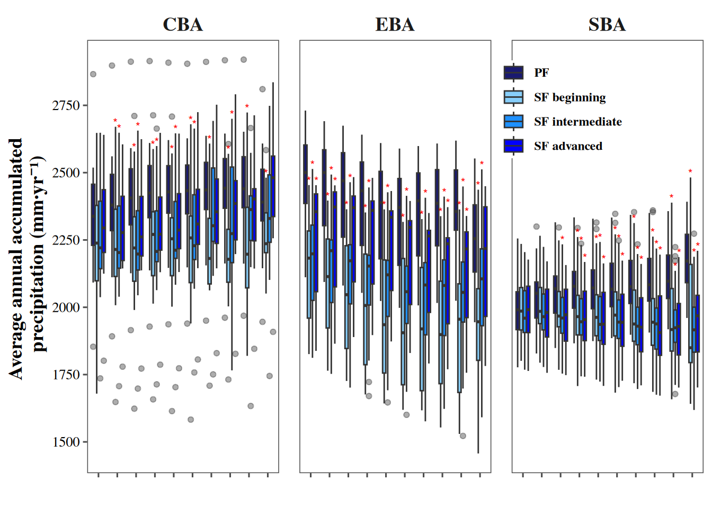
# Salvando a figura
ggsave("fig/area_x_prec_pf_sf_significant_asterisco_wilcoxon.png", dpi = 600, width = 9, height = 5.5)
gc() used (Mb) gc trigger (Mb) max used (Mb)
Ncells 1578132 84.3 3064107 163.7 2088907 111.6
Vcells 2895776 22.1 8388608 64.0 4454952 34.0EVAPOTRANSPIRACAO
Agrupamento
# Lendo a planilha
# all_lulc_50_final = fread("/media/amazonia/hd2/lais/GitHub/paper_climate_forest_regeneration/data_group/plan_all_lulc_final.csv")
#
# all_lulc_50_fil <- all_lulc_50_final %>%
# filter(Tipo %in% c("SF", "PF"))
# Creating area ranges to store the averages of each range
all_lulc_evapo = all_lulc_50_fil %>%
filter(!Evapo >= 2000) %>%
summarise(
Evapo = Evapo,
Frac = frac_area,
Tipo = Tipo,
Ano = Ano,
region = Region,
Idade = Idade_SF
) %>%
mutate(
ff_area = case_when(Frac >= 0.01 & Frac <= 0.1 ~ "1-10",
Frac > 0.1 & Frac <= 0.2 ~ "10-20",
Frac > 0.2 & Frac <= 0.3 ~ "20-30",
Frac > 0.3 & Frac <= 0.4 ~ "30-40",
Frac > 0.4 & Frac <= 0.5 ~ "40-50",
Frac > 0.5 & Frac <= 0.6 ~ "50-60",
Frac > 0.6 & Frac <= 0.7 ~ "60-70",
Frac > 0.7 & Frac <= 0.8 ~ "70-80",
Frac > 0.8 & Frac <= 0.9 ~ "80-90",
Frac > 0.9 & Frac <= 1.0 ~ "90-100")) %>%
mutate(
idade = case_when(Idade >= 0 & Idade <= 10 ~ "<= 10",
Idade > 10 & Idade <= 20 ~ "10-20",
Idade > 20 ~ "> 20")) %>%
# Calculating the average evapotranspiration for each cluster
group_by(Ano, Tipo, region, ff_area, idade) %>%
summarise(
Evapo = mean(Evapo),
n_obs = n(),
.groups = "drop"
)
# Criar o novo dataframe com as categorias desejadas
all_lulc_evapo_stages <- all_lulc_evapo %>%
mutate(Tipo = case_when(Tipo == "PF" ~ "PF",
Tipo == "SF" & idade == "<= 10" ~ "SF_early",
Tipo == "SF" & idade == "10-20" ~ "SF_intermediate",
Tipo == "SF" & idade == "> 20" ~ "SF_advanced",
TRUE ~ NA_character_ )) %>%
filter(!is.na(Tipo)) # Remove linhas que não se encaixam nas categorias definidas
all_lulc_evapo_final <- all_lulc_evapo_stages %>%
mutate(type = case_when(Tipo == "PF" ~ 1,
Tipo == "SF_early" ~ 2,
Tipo == "SF_intermediate" ~ 3,
Tipo == "SF_advanced" ~ 4))
# Verificar o resultado
#head(all_lulc_evapo_final)
max_min_evapo = all_lulc_evapo_final %>%
group_by(Tipo, region, ff_area, idade) %>%
summarise(
max_evapo = max(Evapo),
median_evapo = median(Evapo),
min_evapo = min(Evapo)
)
# Export data min and max
write_xlsx(max_min_evapo, "data_group/plan_max_and_min_group_evapo.xlsx")
# Export data grouped
write_xlsx(all_lulc_evapo_final, "data_group/plan_data_group_evapo.xlsx")
#rm(all_lulc_50_final)
gc()Testes normalidade, homocedasticidade e independência
all_pf_sf_evapo = read_xlsx("data_group/plan_data_group_evapo.xlsx")
# ---- NORMALIDADE ----
# Realizar o teste de normalidade Shapiro-Wilk
shapiro_test_results_evapo <- all_pf_sf_evapo %>%
group_by(Tipo,region, ff_area) %>%
summarise(
p_value = shapiro.test(Evapo)$p.value
) %>%
ungroup()
# Visualizar os resultados do teste Shapiro-Wilk
print(shapiro_test_results_evapo)# A tibble: 120 × 4
Tipo region ff_area p_value
<chr> <chr> <chr> <dbl>
1 PF CBA 1-10 0.0470
2 PF CBA 10-20 0.0671
3 PF CBA 20-30 0.370
4 PF CBA 30-40 0.532
5 PF CBA 40-50 0.615
6 PF CBA 50-60 0.620
7 PF CBA 60-70 0.580
8 PF CBA 70-80 0.520
9 PF CBA 80-90 0.512
10 PF CBA 90-100 0.687
# ℹ 110 more rows# Exportar os resultados do teste de normalidade
write_xlsx(shapiro_test_results_evapo, "data_group/shapiro_test_evapo_results.xlsx")
# ---- HOMOCEDASTICIDADE ----
# Garantindo que 'Tipo' seja tratado como fator
all_pf_sf_evapo$Tipo <- as.factor(all_pf_sf_evapo$Tipo)
# Lista para armazenar os resultados
results_list_evapo <- list()
# Loop por cada combinação de 'region' e 'ff_area'
for (region in unique(all_pf_sf_evapo$region)) {
for (ff_area in unique(all_pf_sf_evapo$ff_area)) {
# Filtrar os dados para a combinação atual
data_subset <- all_pf_sf_evapo %>%
filter(region == !!region, ff_area == !!ff_area)
# Verificar se há dados suficientes para realizar o teste (precisa de pelo menos 2 tipos)
if (nrow(data_subset) > 1 && length(unique(data_subset$Tipo)) > 1) {
try({
# Realizar o teste de homocedasticidade Levene
levene_test_evapo <- leveneTest(Evapo ~ Tipo, data = data_subset)
p_value <- levene_test_evapo$`Pr(>F)`[1] # Extraindo o valor p
}, silent = TRUE)
} else {
p_value <- NA # Insere NA se não houver dados suficientes
}
# Adicionar o resultado ao vetor de resultados apenas se o p_value não for nulo
if (!is.null(p_value)) {
results_list_evapo[[length(results_list_evapo) + 1]] <- data.frame(region = region,
ff_area = ff_area,
p_value = p_value)
}
}
}
# Combinar todos os resultados em um DataFrame
levene_test_results_evapo <- do.call(rbind, results_list_evapo)
# Exibir os resultados
print(levene_test_results_evapo) region ff_area p_value
1 CBA 1-10 0.032983938
2 CBA 10-20 0.071264217
3 CBA 20-30 0.028166826
4 CBA 30-40 0.033272583
5 CBA 40-50 0.057678644
6 CBA 50-60 0.056851408
7 CBA 60-70 0.084564405
8 CBA 70-80 0.079499258
9 CBA 80-90 0.079682558
10 CBA 90-100 0.216580324
11 EBA 1-10 0.680429817
12 EBA 10-20 0.892497823
13 EBA 20-30 0.932264279
14 EBA 30-40 0.683495492
15 EBA 40-50 0.409261008
16 EBA 50-60 0.088108876
17 EBA 60-70 0.011822389
18 EBA 70-80 0.003527165
19 EBA 80-90 0.001969657
20 EBA 90-100 0.001267824
21 SBA 1-10 0.588298592
22 SBA 10-20 0.745586288
23 SBA 20-30 0.560454837
24 SBA 30-40 0.388971500
25 SBA 40-50 0.339530422
26 SBA 50-60 0.204998550
27 SBA 60-70 0.109533413
28 SBA 70-80 0.045146106
29 SBA 80-90 0.016340569
30 SBA 90-100 0.056639754# Exportar os resultados para um arquivo Excel
write_xlsx(levene_test_results_evapo, "data_group/levene_test_evapo_results.xlsx")
# ---- INDEPENDÊNCIA ----
# Lista para armazenar os resultados
kendall_results_list_evapo <- list()
# Loop por cada combinação de 'region' e 'ff_area'
for (region in unique(all_pf_sf_evapo$region)) {
for (ff_area in unique(all_pf_sf_evapo$ff_area)) {
# Filtrar os dados para a combinação atual
data_subset <- all_pf_sf_evapo %>%
filter(region == !!region, ff_area == !!ff_area)
# Verificar se há dados suficientes para realizar o teste (precisa de pelo menos 2 tipos)
if (nrow(data_subset) > 1 && length(unique(data_subset$Tipo)) > 1) {
try({
# Realizar o teste de correlação de Kendall entre 'Evapo' e 'Tipo'
cor_test <- cor.test(as.numeric(data_subset$Evapo), as.numeric(data_subset$Tipo), method = "kendall")
p_value <- cor_test$p.value # Extraindo o valor p
cor_value <- cor_test$estimate # Extraindo o valor da correlação
}, silent = TRUE)
} else {
p_value <- NA # Insere NA se não houver dados suficientes
cor_value <- NA
}
# Adicionar o resultado ao vetor de resultados apenas se o p_value não for nulo
if (!is.null(p_value)) {
kendall_results_list_evapo[[length(kendall_results_list_evapo) + 1]] <- data.frame(
region = region,
ff_area = ff_area,
cor_value = cor_value,
p_value = p_value
)
}
}
}
# Combinar todos os resultados em um DataFrame
kendall_test_results_evapo <- do.call(rbind, kendall_results_list_evapo)
# Exportar os resultados para um arquivo Excel
write_xlsx(kendall_test_results_evapo, "data_group/kendall_test_evapo_results.xlsx")
gc() used (Mb) gc trigger (Mb) max used (Mb)
Ncells 1531852 81.9 3064107 163.7 3064107 163.7
Vcells 2798787 21.4 8388608 64.0 4454952 34.0Teste t entre os tipos de cobertura - PF e SF
# --------------------------------------------------------------------
# OS PRESSUPOSTOS NÃO FORAM ATENDIDOS - RODAR O TESTE NÃO PARAMÉTRICO
# --------------------------------------------------------------------
# Lista dos intervalos de área
area_ranges <- c("1-10", "10-20", "20-30", "30-40", "40-50",
"50-60", "60-70", "70-80", "80-90", "90-100")
# Lista das regiões
regions <- c("CBA", "EBA", "SBA")
# Criando um DataFrame vazio para armazenar os resultados
significance_results_t_evapo <- data.frame(Intervalo = area_ranges) # Adiciona a coluna de intervalos
# Loop por cada região
for (region in regions) {
p_values_pf_sf_early <- c()
p_values_pf_sf_intermediate <- c()
p_values_pf_sf_advanced <- c()
# Loop por cada intervalo de área
for (range in area_ranges) {
# Filtrando os dados para PF e SF no intervalo atual e região atual
pv_data <- all_pf_sf_evapo %>% filter(region == !!region, ff_area == range, Tipo == "PF")
sv_early_data <- all_pf_sf_evapo %>% filter(region == !!region, ff_area == range, Tipo == "SF_early")
sv_intermediate_data <- all_pf_sf_evapo %>% filter(region == !!region, ff_area == range, Tipo == "SF_intermediate")
sv_advanced_data <- all_pf_sf_evapo %>% filter(region == !!region, ff_area == range, Tipo == "SF_advanced")
# Teste t para cada comparação com PF
if (nrow(pv_data) > 1 && nrow(sv_early_data) > 1) {
p_values_pf_sf_early <- c(p_values_pf_sf_early, t.test(pv_data$Evapo, sv_early_data$Evapo, var.equal = TRUE)$p.value)
} else {
p_values_pf_sf_early <- c(p_values_pf_sf_early, NA)
}
if (nrow(pv_data) > 1 && nrow(sv_intermediate_data) > 1) {
p_values_pf_sf_intermediate <- c(p_values_pf_sf_intermediate, t.test(pv_data$Evapo, sv_intermediate_data$Evapo, var.equal = TRUE)$p.value)
} else {
p_values_pf_sf_intermediate <- c(p_values_pf_sf_intermediate, NA)
}
if (nrow(pv_data) > 1 && nrow(sv_advanced_data) > 1) {
p_values_pf_sf_advanced <- c(p_values_pf_sf_advanced, t.test(pv_data$Evapo, sv_advanced_data$Evapo, var.equal = TRUE)$p.value)
} else {
p_values_pf_sf_advanced <- c(p_values_pf_sf_advanced, NA)
}
}
# Adicionando ao DataFrame
significance_results_t_evapo[[paste0(region, "_PF_vs_SF_early")]] <- p_values_pf_sf_early
significance_results_t_evapo[[paste0(region, "_PF_vs_SF_intermediate")]] <- p_values_pf_sf_intermediate
significance_results_t_evapo[[paste0(region, "_PF_vs_SF_advanced")]] <- p_values_pf_sf_advanced
}
# Salvando os resultados em um arquivo
write_xlsx(significance_results_t_evapo, "data_group/significance_results_evapo_testt.xlsx")
gc() used (Mb) gc trigger (Mb) max used (Mb)
Ncells 1531585 81.8 3064107 163.7 3064107 163.7
Vcells 2798923 21.4 8388608 64.0 4454952 34.0Teste Wilcox entre os tipos de cobertura - PF e SF
# Leitura da planilha com os dados
all_pf_sf_evapo = read_xlsx("data_group/plan_data_group_evapo.xlsx")
# Lista dos intervalos de área
area_ranges <- c("1-10", "10-20", "20-30", "30-40", "40-50",
"50-60", "60-70", "70-80", "80-90", "90-100")
# Lista das regiões
regions <- c("CBA", "EBA", "SBA")
# Criando um DataFrame para armazenar os resultados
significance_results_w_evapo <- data.frame(Intervalo = area_ranges)
# Loop por cada região
for (region in regions) {
p_values_pf_sf_early <- c()
p_values_pf_sf_intermediate <- c()
p_values_pf_sf_advanced <- c()
# Loop por cada intervalo de área
for (range in area_ranges) {
# Filtrando os dados
pv_data <- all_pf_sf_evapo %>% filter(region == !!region, ff_area == range, Tipo == "PF")
sv_early_data <- all_pf_sf_evapo %>% filter(region == !!region, ff_area == range, Tipo == "SF_early")
sv_intermediate_data <- all_pf_sf_evapo %>% filter(region == !!region, ff_area == range, Tipo == "SF_intermediate")
sv_advanced_data <- all_pf_sf_evapo %>% filter(region == !!region, ff_area == range, Tipo == "SF_advanced")
# Teste de Wilcoxon para cada comparação com PF
if (nrow(pv_data) > 1 && nrow(sv_early_data) > 1) {
p_values_pf_sf_early <- c(p_values_pf_sf_early, wilcox.test(pv_data$Evapo, sv_early_data$Evapo, paired = FALSE)$p.value)
} else {
p_values_pf_sf_early <- c(p_values_pf_sf_early, NA)
}
if (nrow(pv_data) > 1 && nrow(sv_intermediate_data) > 1) {
p_values_pf_sf_intermediate <- c(p_values_pf_sf_intermediate, wilcox.test(pv_data$Evapo, sv_intermediate_data$Evapo, paired = FALSE)$p.value)
} else {
p_values_pf_sf_intermediate <- c(p_values_pf_sf_intermediate, NA)
}
if (nrow(pv_data) > 1 && nrow(sv_advanced_data) > 1) {
p_values_pf_sf_advanced <- c(p_values_pf_sf_advanced, wilcox.test(pv_data$Evapo, sv_advanced_data$Evapo, paired = FALSE)$p.value)
} else {
p_values_pf_sf_advanced <- c(p_values_pf_sf_advanced, NA)
}
}
# Adicionando ao DataFrame
significance_results_w_evapo[[paste0(region, "_PF_vs_SF_early")]] <- p_values_pf_sf_early
significance_results_w_evapo[[paste0(region, "_PF_vs_SF_intermediate")]] <- p_values_pf_sf_intermediate
significance_results_w_evapo[[paste0(region, "_PF_vs_SF_advanced")]] <- p_values_pf_sf_advanced
}
# Salvando os resultados em um arquivo
write_xlsx(significance_results_w_evapo, "data_group/significance_results_evapo_Wilcox_test.xlsx")
gc() used (Mb) gc trigger (Mb) max used (Mb)
Ncells 1531593 81.8 3064107 163.7 3064107 163.7
Vcells 2800654 21.4 8388608 64.0 4454952 34.0Plot com significance
# Criar um dataframe "long" de significância, onde cada linha tem uma região e o intervalo associado
long_significance_results_w_evapo <- significance_results_w_evapo %>%
gather(key = "Comparison", value = "P_value", -Intervalo) %>%
separate(Comparison, into = c("region", "Comparison_Type"), sep = "_PF_vs_")
# Mesclar esses resultados com os dados originais
all_pf_sf_evapo <- all_pf_sf_evapo %>%
left_join(long_significance_results_w_evapo,
by = c("ff_area" = "Intervalo", "region" = "region", "Tipo" = "Comparison_Type"))
# Adicionando uma coluna indicando se o intervalo foi significativo
all_pf_sf_evapo$Significant <- ifelse(all_pf_sf_evapo$P_value < 0.05, "*", "")
# Reordenar os níveis de 'Tipo'
all_pf_sf_evapo <- all_pf_sf_evapo %>%
mutate(Tipo = factor(Tipo, levels = c("PF", "SF_early", "SF_intermediate", "SF_advanced")))
# Função para calcular o valor máximo do bigode
get_whisker_max <- function(x) {
stats <- boxplot.stats(x)$stats
return(stats[5]) # stats[5] normalmente corresponde ao valor máximo do bigode
}
# Calcular a posição do asterisco
significance_positions <- all_pf_sf_evapo %>%
group_by(ff_area, region, Tipo) %>%
summarise(max_whisker = get_whisker_max(Evapo), .groups = "drop") %>%
left_join(long_significance_results_w_evapo,
by = c("ff_area" = "Intervalo", "region" = "region", "Tipo" = "Comparison_Type")) %>%
filter(P_value < 0.05) %>%
mutate(
asterisk_y = max_whisker + 10, # Ajuste para posicionar acima do bigode
x_adjust = case_when(
Tipo == "SF_early" ~ -0.1,
Tipo == "SF_intermediate" ~ 0.1,
Tipo == "SF_advanced" ~ 0.3
),
x_pos = as.numeric(factor(ff_area, levels = area_ranges)) + x_adjust
)
#head(significance_positions)
# Plot com asteriscos de significância
p_ast_evapo_w <- all_pf_sf_evapo %>%
ggplot(aes(x=ff_area, y=Evapo, fill=Tipo)) +
geom_boxplot(outlier.alpha = 0.4) +
facet_grid(~region) +
ggthemes::theme_few() +
theme(
legend.position = c(0.77, 0.84),
legend.background = element_rect(fill="transparent"),
#legend.position = "top",
text = element_text(size = 12, face = "bold",family = "serif"),
#text = element_text(size = 7, face = "bold",family = "serif"),
axis.text = element_text(size = 10, face = "plain", family = "serif", color = "black"),
#axis.text = element_text(size = 6, face = "plain", family = "serif", color = "black"),
axis.text.x = element_blank(),
#axis.text.x = element_text(angle = 45, hjust = 1, vjust = 1),
legend.text = element_text(size = 9),
#legend.text = element_text(size = 7),
panel.spacing.x = unit(1, "lines"),
panel.spacing.y = unit(1, "lines"),
axis.title = element_text(size = 14, margin = margin(r = 20)),
strip.text = element_blank()) +
scale_fill_manual(values = c("#02401B", "lightgreen", "green1", "green4"), name = NULL, labels = c("PF", "SF early", "SF intermediate", "SF advanced")) +
#geom_vline(xintercept = c(1,2,3,4,5,6,7,8,9,10), linetype = "dashed", color = "lightgray", size = 0.5) +
#labels = c("Primary Vegetation ", "Secondary Vegetation"))+
labs(x = "",
y = "Average annual accumulated \n evapotranspiration (mm)",
#y = expression(atop("Average annual accumulated", paste("evapotranspiration (mm·", yr^{-1}, ")")))
) +
# Adicionando os asteriscos
geom_text(data = significance_positions,
aes(x = x_pos, y = asterisk_y, label = "*"),
size = 3, color = "red")
p_ast_evapo_w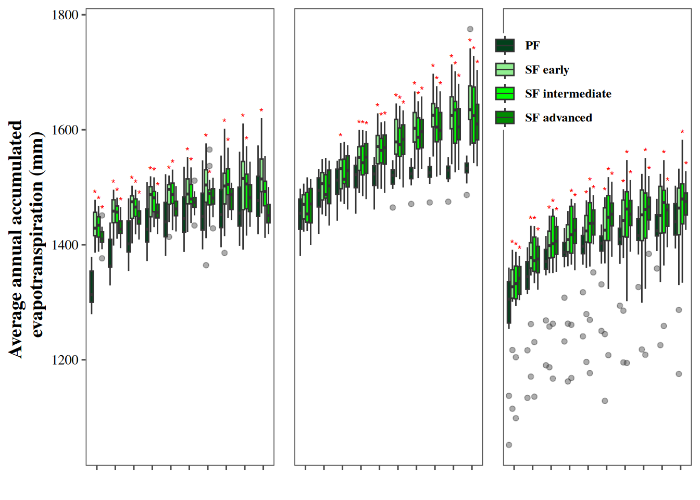
# Salvando a figura
ggsave("fig/area_x_evapo_pf_sf_significant_asterisco_wilcoxon.png", dpi = 600, width = 9, height = 5.5)
gc() used (Mb) gc trigger (Mb) max used (Mb)
Ncells 1582885 84.6 3064108 163.7 3064108 163.7
Vcells 2930899 22.4 8388608 64.0 4454952 34.0TEMPERTAURA
Agrupamento
# Lendo a planilha
# all_lulc_50_final = fread("/media/amazonia/hd2/lais/GitHub/paper_climate_forest_regeneration/data_group/plan_all_lulc_final.csv")
# all_lulc_50_fil <- all_lulc_50_final %>%
# filter(Tipo %in% c("SF", "PF"))
# Calculating the average evapotranspiration for each cluster
all_lulc_temp = all_lulc_50_fil %>%
summarise(
Temp = Temp,
Frac = frac_area,
Tipo = Tipo,
Ano = Ano,
region = Region,
Idade = Idade_SF
) %>%
mutate(
ff_area = case_when(Frac >= 0.01 & Frac <= 0.1 ~ "1-10",
Frac > 0.1 & Frac <= 0.2 ~ "10-20",
Frac > 0.2 & Frac <= 0.3 ~ "20-30",
Frac > 0.3 & Frac <= 0.4 ~ "30-40",
Frac > 0.4 & Frac <= 0.5 ~ "40-50",
Frac > 0.5 & Frac <= 0.6 ~ "50-60",
Frac > 0.6 & Frac <= 0.7 ~ "60-70",
Frac > 0.7 & Frac <= 0.8 ~ "70-80",
Frac > 0.8 & Frac <= 0.9 ~ "80-90",
Frac > 0.9 & Frac <= 1.0 ~ "90-100")) %>%
mutate(
idade = case_when(Idade >= 0 & Idade <= 10 ~ "<= 10",
Idade > 10 & Idade <= 20 ~ "10-20",
Idade > 20 ~ "> 20")) %>%
# Calculating the average evapotranspiration for each cluster
group_by(Ano, Tipo, region, ff_area, idade) %>%
summarise(
Temp = mean(Temp),
n_obs = n(),
.groups = "drop"
)
# Criar o novo dataframe com as categorias desejadas
all_lulc_temp_stages <- all_lulc_temp %>%
mutate(Tipo = case_when(Tipo == "PF" ~ "PF",
Tipo == "SF" & idade == "<= 10" ~ "SF_early",
Tipo == "SF" & idade == "10-20" ~ "SF_intermediate",
Tipo == "SF" & idade == "> 20" ~ "SF_advanced",
TRUE ~ NA_character_ )) %>%
filter(!is.na(Tipo)) # Remove linhas que não se encaixam nas categorias definidas
all_lulc_temp_final <- all_lulc_temp_stages %>%
mutate(type = case_when(Tipo == "PF" ~ 1,
Tipo == "SF_early" ~ 2,
Tipo == "SF_intermediate" ~ 3,
Tipo == "SF_advanced" ~ 4))
# Verificar o resultado
#head(all_lulc_temp_final)
max_min_temp = all_lulc_temp_final %>%
group_by(Tipo, region, ff_area, idade) %>%
summarise(
max_temp = max(Temp),
median_temp = median(Temp),
min_temp = min(Temp)
)
# Export data min and max
write_xlsx(max_min_temp, "data_group/plan_max_and_min_group_temp.xlsx")
# Export data grouped
write_xlsx(all_lulc_temp_final, "data_group/plan_data_group_temp.xlsx")
#rm(all_lulc_50_final)
gc()Testes normalidade, homocedasticidade e independência
all_pf_sf_temp = read_xlsx("data_group/plan_data_group_temp.xlsx")
# ---- NORMALIDADE ----
# Realizar o teste de normalidade Shapiro-Wilk
shapiro_test_results_temp <- all_pf_sf_temp %>%
group_by(Tipo,region, ff_area) %>%
summarise(
p_value = shapiro.test(Temp)$p.value
) %>%
ungroup()
# Visualizar os resultados do teste Shapiro-Wilk
print(shapiro_test_results_temp)# A tibble: 120 × 4
Tipo region ff_area p_value
<chr> <chr> <chr> <dbl>
1 PF CBA 1-10 0.145
2 PF CBA 10-20 0.140
3 PF CBA 20-30 0.157
4 PF CBA 30-40 0.179
5 PF CBA 40-50 0.199
6 PF CBA 50-60 0.218
7 PF CBA 60-70 0.236
8 PF CBA 70-80 0.241
9 PF CBA 80-90 0.244
10 PF CBA 90-100 0.298
# ℹ 110 more rows# Exportar os resultados do teste de normalidade
write_xlsx(shapiro_test_results_temp, "data_group/shapiro_test_temp_results.xlsx")
# ---- HOMOCEDASTICIDADE ----
# Garantindo que 'Tipo' seja tratado como fator
all_pf_sf_temp$Tipo <- as.factor(all_pf_sf_temp$Tipo)
# Lista para armazenar os resultados
results_list_temp <- list()
# Loop por cada combinação de 'region' e 'ff_area'
for (region in unique(all_pf_sf_temp$region)) {
for (ff_area in unique(all_pf_sf_temp$ff_area)) {
# Filtrar os dados para a combinação atual
data_subset <- all_pf_sf_temp %>%
filter(region == !!region, ff_area == !!ff_area)
# Verificar se há dados suficientes para realizar o teste (precisa de pelo menos 2 tipos)
if (nrow(data_subset) > 1 && length(unique(data_subset$Tipo)) > 1) {
try({
# Realizar o teste de homocedasticidade Levene
levene_test_temp <- leveneTest(Temp ~ Tipo, data = data_subset)
p_value <- levene_test_temp$`Pr(>F)`[1] # Extraindo o valor p
}, silent = TRUE)
} else {
p_value <- NA # Insere NA se não houver dados suficientes
}
# Adicionar o resultado ao vetor de resultados apenas se o p_value não for nulo
if (!is.null(p_value)) {
results_list_temp[[length(results_list_temp) + 1]] <- data.frame(region = region,
ff_area = ff_area,
p_value = p_value)
}
}
}
# Combinar todos os resultados em um DataFrame
levene_test_results_temp <- do.call(rbind, results_list_temp)
# Exibir os resultados
print(levene_test_results_temp) region ff_area p_value
1 CBA 1-10 0.86655436
2 CBA 10-20 0.84421284
3 CBA 20-30 0.84091580
4 CBA 30-40 0.89983546
5 CBA 40-50 0.84023370
6 CBA 50-60 0.84953382
7 CBA 60-70 0.90458652
8 CBA 70-80 0.28428853
9 CBA 80-90 0.33982704
10 CBA 90-100 0.02566782
11 EBA 1-10 0.42219155
12 EBA 10-20 0.53175897
13 EBA 20-30 0.54652143
14 EBA 30-40 0.63217779
15 EBA 40-50 0.63643235
16 EBA 50-60 0.57322143
17 EBA 60-70 0.58940324
18 EBA 70-80 0.47304822
19 EBA 80-90 0.48166457
20 EBA 90-100 0.25405365
21 SBA 1-10 0.65038195
22 SBA 10-20 0.67008883
23 SBA 20-30 0.72069350
24 SBA 30-40 0.74604234
25 SBA 40-50 0.99284296
26 SBA 50-60 0.85842660
27 SBA 60-70 0.33119598
28 SBA 70-80 0.59203270
29 SBA 80-90 0.95642377
30 SBA 90-100 0.76793381# Exportar os resultados para um arquivo Excel
write_xlsx(levene_test_results_temp, "data_group/levene_test_temp_results.xlsx")
# ---- INDEPENDÊNCIA ----
# Lista para armazenar os resultados
kendall_results_list_temp <- list()
# Loop por cada combinação de 'region' e 'ff_area'
for (region in unique(all_pf_sf_temp$region)) {
for (ff_area in unique(all_pf_sf_temp$ff_area)) {
# Filtrar os dados para a combinação atual
data_subset <- all_pf_sf_temp %>%
filter(region == !!region, ff_area == !!ff_area)
# Verificar se há dados suficientes para realizar o teste (precisa de pelo menos 2 tipos)
if (nrow(data_subset) > 1 && length(unique(data_subset$Tipo)) > 1) {
try({
# Realizar o teste de correlação de Kendall entre 'Temp' e 'Tipo'
cor_test <- cor.test(as.numeric(data_subset$Temp), as.numeric(data_subset$Tipo), method = "kendall")
p_value <- cor_test$p.value # Extraindo o valor p
cor_value <- cor_test$estimate # Extraindo o valor da correlação
}, silent = TRUE)
} else {
p_value <- NA # Insere NA se não houver dados suficientes
cor_value <- NA
}
# Adicionar o resultado ao vetor de resultados apenas se o p_value não for nulo
if (!is.null(p_value)) {
kendall_results_list_temp[[length(kendall_results_list_temp) + 1]] <- data.frame(
region = region,
ff_area = ff_area,
cor_value = cor_value,
p_value = p_value
)
}
}
}
# Combinar todos os resultados em um DataFrame
kendall_test_results_temp <- do.call(rbind, kendall_results_list_temp)
# Exportar os resultados para um arquivo Excel
write_xlsx(kendall_test_results_temp, "data_group/kendall_test_temp_results.xlsx")
gc() used (Mb) gc trigger (Mb) max used (Mb)
Ncells 1537451 82.2 3064108 163.7 3064108 163.7
Vcells 2837479 21.7 8388608 64.0 4454952 34.0Teste t entre os tipos de cobertura - PF e SF
# --------------------------------------------------------------------
# OS PRESSUPOSTOS NÃO FORAM ATENDIDOS - RODAR O TESTE NÃO PARAMÉTRICO
# --------------------------------------------------------------------
# Lista dos intervalos de área
area_ranges <- c("1-10", "10-20", "20-30", "30-40", "40-50",
"50-60", "60-70", "70-80", "80-90", "90-100")
# Lista das regiões
regions <- c("CBA", "EBA", "SBA")
# Criando um DataFrame vazio para armazenar os resultados
significance_results_t_temp <- data.frame(Intervalo = area_ranges) # Adiciona a coluna de intervalos
# Loop por cada região
for (region in regions) {
p_values_pf_sf_early <- c()
p_values_pf_sf_intermediate <- c()
p_values_pf_sf_advanced <- c()
# Loop por cada intervalo de área
for (range in area_ranges) {
# Filtrando os dados
pv_data <- all_pf_sf_temp %>% filter(region == !!region, ff_area == range, Tipo == "PF")
sv_early_data <- all_pf_sf_temp %>% filter(region == !!region, ff_area == range, Tipo == "SF_early")
sv_intermediate_data <- all_pf_sf_temp %>% filter(region == !!region, ff_area == range, Tipo == "SF_intermediate")
sv_advanced_data <- all_pf_sf_temp %>% filter(region == !!region, ff_area == range, Tipo == "SF_advanced")
# Teste t para cada comparação com PF
if (nrow(pv_data) > 1 && nrow(sv_early_data) > 1) {
p_values_pf_sf_early <- c(p_values_pf_sf_early, t.test(pv_data$Temp, sv_early_data$Temp, var.equal = TRUE)$p.value)
} else {
p_values_pf_sf_early <- c(p_values_pf_sf_early, NA)
}
if (nrow(pv_data) > 1 && nrow(sv_intermediate_data) > 1) {
p_values_pf_sf_intermediate <- c(p_values_pf_sf_intermediate, t.test(pv_data$Temp, sv_intermediate_data$Temp, var.equal = TRUE)$p.value)
} else {
p_values_pf_sf_intermediate <- c(p_values_pf_sf_intermediate, NA)
}
if (nrow(pv_data) > 1 && nrow(sv_advanced_data) > 1) {
p_values_pf_sf_advanced <- c(p_values_pf_sf_advanced, t.test(pv_data$Temp, sv_advanced_data$Temp, var.equal = TRUE)$p.value)
} else {
p_values_pf_sf_advanced <- c(p_values_pf_sf_advanced, NA)
}
}
# Adicionando ao DataFrame
significance_results_t_temp[[paste0(region, "_PF_vs_SF_early")]] <- p_values_pf_sf_early
significance_results_t_temp[[paste0(region, "_PF_vs_SF_intermediate")]] <- p_values_pf_sf_intermediate
significance_results_t_temp[[paste0(region, "_PF_vs_SF_advanced")]] <- p_values_pf_sf_advanced
}
# Salvando os resultados em um arquivo
write_xlsx(significance_results_t_temp, "data_group/significance_results_temp_testt.xlsx")
gc() used (Mb) gc trigger (Mb) max used (Mb)
Ncells 1537184 82.1 3064108 163.7 3064108 163.7
Vcells 2837614 21.7 8388608 64.0 4454952 34.0Teste Wilcox entre os tipos de cobertura - PF e SF
# Leitura da planilha com os dados
all_pf_sf_temp = read_xlsx("data_group/plan_data_group_temp.xlsx")
# Lista dos intervalos de área
area_ranges <- c("1-10", "10-20", "20-30", "30-40", "40-50",
"50-60", "60-70", "70-80", "80-90", "90-100")
# Lista das regiões
regions <- c("CBA", "EBA", "SBA")
# Criando um DataFrame vazio para armazenar os resultados
significance_results_w_temp <- data.frame(Intervalo = area_ranges) # Adiciona a coluna de intervalos
# Loop por cada região
for (region in regions) {
p_values_pf_sf_early <- c()
p_values_pf_sf_intermediate <- c()
p_values_pf_sf_advanced <- c()
# Loop por cada intervalo de área
for (range in area_ranges) {
# Filtrando os dados
pv_data <- all_pf_sf_temp %>% filter(region == !!region, ff_area == range, Tipo == "PF")
sv_early_data <- all_pf_sf_temp %>% filter(region == !!region, ff_area == range, Tipo == "SF_early")
sv_intermediate_data <- all_pf_sf_temp %>% filter(region == !!region, ff_area == range, Tipo == "SF_intermediate")
sv_advanced_data <- all_pf_sf_temp %>% filter(region == !!region, ff_area == range, Tipo == "SF_advanced")
# Teste de Wilcoxon para cada comparação com PF
if (nrow(pv_data) > 1 && nrow(sv_early_data) > 1) {
p_values_pf_sf_early <- c(p_values_pf_sf_early, wilcox.test(pv_data$Temp, sv_early_data$Temp, paired = FALSE)$p.value)
} else {
p_values_pf_sf_early <- c(p_values_pf_sf_early, NA)
}
if (nrow(pv_data) > 1 && nrow(sv_intermediate_data) > 1) {
p_values_pf_sf_intermediate <- c(p_values_pf_sf_intermediate, wilcox.test(pv_data$Temp, sv_intermediate_data$Temp, paired = FALSE)$p.value)
} else {
p_values_pf_sf_intermediate <- c(p_values_pf_sf_intermediate, NA)
}
if (nrow(pv_data) > 1 && nrow(sv_advanced_data) > 1) {
p_values_pf_sf_advanced <- c(p_values_pf_sf_advanced, wilcox.test(pv_data$Temp, sv_advanced_data$Temp, paired = FALSE)$p.value)
} else {
p_values_pf_sf_advanced <- c(p_values_pf_sf_advanced, NA)
}
}
# Adicionando ao DataFrame
significance_results_w_temp[[paste0(region, "_PF_vs_SF_early")]] <- p_values_pf_sf_early
significance_results_w_temp[[paste0(region, "_PF_vs_SF_intermediate")]] <- p_values_pf_sf_intermediate
significance_results_w_temp[[paste0(region, "_PF_vs_SF_advanced")]] <- p_values_pf_sf_advanced
}
# Salvando os resultados em um arquivo
write_xlsx(significance_results_w_temp, "data_group/significance_results_temp_Wilcox_test.xlsx")
gc() used (Mb) gc trigger (Mb) max used (Mb)
Ncells 1537192 82.1 3064108 163.7 3064108 163.7
Vcells 2839342 21.7 8388608 64.0 4454952 34.0Plot com significance
# Criar um dataframe "long" de significância, onde cada linha tem uma região e o intervalo associado
long_significance_results_w_temp <- significance_results_w_temp %>%
gather(key = "Comparison", value = "P_value", -Intervalo) %>%
separate(Comparison, into = c("region", "Comparison_Type"), sep = "_PF_vs_")
# Mesclar esses resultados com os dados originais
all_pf_sf_temp <- all_pf_sf_temp %>%
left_join(long_significance_results_w_temp,
by = c("ff_area" = "Intervalo", "region" = "region", "Tipo" = "Comparison_Type"))
# Adicionando uma coluna indicando se o intervalo foi significativo
all_pf_sf_temp$Significant <- ifelse(all_pf_sf_temp$P_value < 0.05, "*", "")
# Reordenar os níveis de 'Tipo'
all_pf_sf_temp <- all_pf_sf_temp %>%
mutate(Tipo = factor(Tipo, levels = c("PF", "SF_early", "SF_intermediate", "SF_advanced")))
# Função para calcular o valor máximo do bigode
get_whisker_max <- function(x) {
stats <- boxplot.stats(x)$stats
return(stats[5]) # stats[5] normalmente corresponde ao valor máximo do bigode
}
# Calcular a posição do asterisco
significance_positions <- all_pf_sf_temp %>%
group_by(ff_area, region, Tipo) %>%
summarise(max_whisker = get_whisker_max(Temp), .groups = "drop") %>%
left_join(long_significance_results_w_temp,
by = c("ff_area" = "Intervalo", "region" = "region", "Tipo" = "Comparison_Type")) %>%
filter(P_value < 0.05) %>%
mutate(
asterisk_y = max_whisker + 0.1, # Ajuste para posicionar acima do bigode
x_adjust = case_when(
Tipo == "SF_early" ~ -0.1,
Tipo == "SF_intermediate" ~ 0.1,
Tipo == "SF_advanced" ~ 0.3
),
x_pos = as.numeric(factor(ff_area, levels = area_ranges)) + x_adjust
)
#head(significance_positions)
# Plot com asteriscos de significância
p_ast_temp_w <-all_pf_sf_temp %>%
ggplot(aes(x=ff_area, y=Temp, fill=Tipo)) +
geom_boxplot(outlier.alpha = 0.4) +
facet_grid(~region) +
ggthemes::theme_few() +
theme(
legend.position = c(0.91, 0.84),
legend.background = element_rect(fill="transparent"),
text = element_text(size = 12, face = "bold",family = "serif"),
#text = element_text(size = 7, face = "bold",family = "serif"),
axis.text = element_text(size = 10, face = "plain", family = "serif", color = "black"),
#axis.text.y = element_text(size = 12, face = "plain", family = "serif", color = "black"),
axis.text.x = element_text(angle = 45, hjust = 1, vjust = 1),
legend.text = element_text(size = 9),
#legend.text = element_text(size = 7),
panel.spacing.x = unit(1, "lines"),
panel.spacing.y = unit(1, "lines"),
axis.title = element_text(size = 14, margin = margin(r = 20)),
strip.text = element_blank()) +
scale_fill_manual(values = c("#7F3B08", "#FEE0B6", "#FDB863", "#E08214"), name = NULL, labels = c("PF", "SF early", "SF intermediate", "SF advanced")) +
scale_y_continuous(breaks = 23:27, limits = c(NA, 27), expand = expansion(mult = c(0.01, 0.05)),
labels = label_number(width = 6, zero.print = TRUE)) +
labs(x = "Fractional cover (%)",
y = "Average annual mean \n temperature (°C)",
#y = expression(atop("Average annual mean", paste("temperature (", degree, "C·yr"^-1, ")")))
) +
# Adicionando os asteriscos
geom_text(data = significance_positions,
aes(x = x_pos, y = asterisk_y, label = "*"),
size = 3, color = "red")
p_ast_temp_w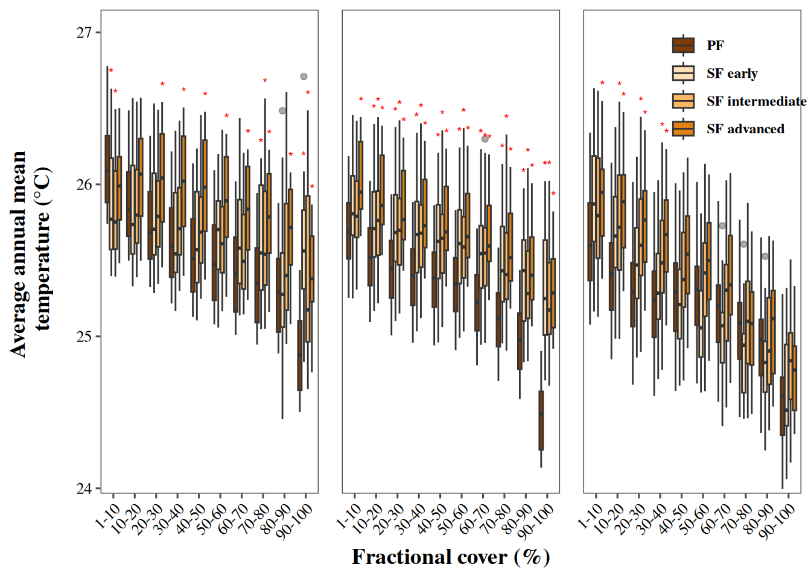
# Salvando a figura
ggsave("fig/area_x_temp_pf_sf_significant_asterisco_wilcoxon.png", dpi = 600, width = 9, height = 5.5)
gc() used (Mb) gc trigger (Mb) max used (Mb)
Ncells 1586326 84.8 3064108 163.7 3064108 163.7
Vcells 2964931 22.7 8388608 64.0 4454952 34.0Painel all variables - observation
# Ajuste das margens
p_ret_prec_w <- p_ast_prec_w +
scale_x_discrete(expand = c(0.05, 0.05)) +
theme(plot.margin = margin(t = 10, r = 10, b = 5, l = 20)) # Ajuste de margens
p_ret_evapo_w <- p_ast_evapo_w +
scale_x_discrete(expand = c(0.05, 0.05)) +
theme(plot.margin = margin(t = 5, r = 10, b = 5, l = 20)) # Ajuste de margens
p_ret_temp_w <- p_ast_temp_w +
scale_x_discrete(expand = c(0.05, 0.05)) +
theme(plot.margin = margin(t = 5, r = 10, b = 10, l = 20)) # Ajuste de margens
# Criar painel com espaçamento ajustado
painel_obs <- ggarrange(
p_ret_prec_w, p_ret_evapo_w, p_ret_temp_w,
ncol = 1, nrow = 3,
labels = c("A", "B", "C"), # Letras dos subplots
font.label = list(color = "black", face = "bold", size = 14, family = "serif"),
align = "v", # Alinhamento vertical
heights = c(1, 1, 1) # Força os plots a terem alturas iguais
)
# Salvar figura final
ggsave("fig/painels/painel_fraction_forest_x_prec.png",
plot = painel_obs, dpi = 600, width = 10, height = 12, bg = "white")
ggsave("fig/painels/painel_fraction_forest_x_prec.pdf",
plot = painel_obs, width = 10, height = 12, bg = "white")Modeling
library(lme4)
library(performance)
library(readxl)
library(tidyverse)
library(dplyr)
library(cowplot)
library(DHARMa)
library(writexl)
library(merTools)
library(lmtest)
library(patchwork)
library(emmeans)
library(stringr)
library(DescTools)
library(openxlsx)PRECIPITATION
Model choice
all_pf_sf_prec_model = read_xlsx("data_group/plan_data_group_prec.xlsx")
## CBA
model_cba_prec = all_pf_sf_prec_model %>%
filter(region == "CBA")
model_cba_prec$type = as.factor(model_cba_prec$type)
## EBA
model_eba_prec = all_pf_sf_prec_model %>%
filter(region == "EBA")
model_eba_prec$type = as.factor(model_eba_prec$type)
## SBA
model_sba_prec = all_pf_sf_prec_model %>%
filter(region == "SBA")
model_sba_prec$type = as.factor(model_sba_prec$type)Fixed effect
# Modelo com interação frac_area e classe florestal
## CBA
model_CBA_prec <- lmerTest::lmer(Prec ~ ff_area*Tipo +
(1 | Ano), data = model_cba_prec)
#EBA
model_EBA_prec = lmerTest::lmer(Prec ~ ff_area*Tipo +
(1|Ano), data = model_eba_prec)
##SBA
model_SBA_prec = lmerTest::lmer(Prec ~ ff_area*Tipo +
(1|Ano), data = model_sba_prec)
#
summary(model_CBA_prec)Linear mixed model fit by REML. t-tests use Satterthwaite's method [
lmerModLmerTest]
Formula: Prec ~ ff_area * Tipo + (1 | Ano)
Data: model_cba_prec
REML criterion at convergence: 8508.9
Scaled residuals:
Min 1Q Median 3Q Max
-5.1269 -0.4530 0.0250 0.4588 5.1087
Random effects:
Groups Name Variance Std.Dev.
Ano (Intercept) 37533 193.74
Residual 5614 74.92
Number of obs: 762, groups: Ano, 21
Fixed effects:
Estimate Std. Error df t value Pr(>|t|)
(Intercept) 2338.87 45.33 26.20 51.599 < 2e-16
ff_area10-20 38.78 23.12 702.01 1.677 0.093926
ff_area20-30 62.68 23.12 702.01 2.711 0.006879
ff_area30-40 77.85 23.12 702.01 3.367 0.000802
ff_area40-50 84.58 23.12 702.01 3.658 0.000273
ff_area50-60 87.05 23.12 702.01 3.765 0.000181
ff_area60-70 93.79 23.12 702.01 4.056 5.55e-05
ff_area70-80 100.92 23.12 702.01 4.365 1.47e-05
ff_area80-90 103.85 23.12 702.01 4.491 8.28e-06
ff_area90-100 61.20 23.12 702.01 2.647 0.008305
TipoSF_advanced -48.86 25.94 702.05 -1.884 0.060006
TipoSF_early -109.49 23.12 702.01 -4.735 2.65e-06
TipoSF_intermediate -86.72 23.12 702.01 -3.751 0.000191
ff_area10-20:TipoSF_advanced -51.78 36.56 702.01 -1.416 0.157137
ff_area20-30:TipoSF_advanced -78.76 36.56 702.01 -2.154 0.031560
ff_area30-40:TipoSF_advanced -85.76 36.56 702.01 -2.346 0.019271
ff_area40-50:TipoSF_advanced -88.72 36.56 702.01 -2.427 0.015485
ff_area50-60:TipoSF_advanced -66.21 36.56 702.01 -1.811 0.070566
ff_area60-70:TipoSF_advanced -48.28 36.56 702.01 -1.321 0.187074
ff_area70-80:TipoSF_advanced -31.95 36.56 702.01 -0.874 0.382464
ff_area80-90:TipoSF_advanced -48.97 36.56 702.01 -1.339 0.180876
ff_area90-100:TipoSF_advanced 84.78 36.56 702.01 2.319 0.020686
ff_area10-20:TipoSF_early -48.27 32.70 702.01 -1.476 0.140385
ff_area20-30:TipoSF_early -74.47 32.70 702.01 -2.277 0.023062
ff_area30-40:TipoSF_early -68.37 32.70 702.01 -2.091 0.036896
ff_area40-50:TipoSF_early -91.01 32.70 702.01 -2.783 0.005525
ff_area50-60:TipoSF_early -90.29 32.70 702.01 -2.761 0.005910
ff_area60-70:TipoSF_early -93.86 32.70 702.01 -2.870 0.004224
ff_area70-80:TipoSF_early -107.73 32.70 702.01 -3.295 0.001035
ff_area80-90:TipoSF_early -128.20 33.14 702.01 -3.869 0.000120
ff_area90-100:TipoSF_early -30.06 34.34 702.02 -0.875 0.381707
ff_area10-20:TipoSF_intermediate -44.53 32.70 702.01 -1.362 0.173659
ff_area20-30:TipoSF_intermediate -66.82 32.70 702.01 -2.043 0.041382
ff_area30-40:TipoSF_intermediate -68.78 32.70 702.01 -2.103 0.035793
ff_area40-50:TipoSF_intermediate -69.26 32.70 702.01 -2.118 0.034527
ff_area50-60:TipoSF_intermediate -54.25 32.70 702.01 -1.659 0.097559
ff_area60-70:TipoSF_intermediate -12.89 32.70 702.01 -0.394 0.693493
ff_area70-80:TipoSF_intermediate -51.16 32.70 702.01 -1.564 0.118156
ff_area80-90:TipoSF_intermediate -23.61 32.70 702.01 -0.722 0.470532
ff_area90-100:TipoSF_intermediate 46.11 32.70 702.01 1.410 0.158927
(Intercept) ***
ff_area10-20 .
ff_area20-30 **
ff_area30-40 ***
ff_area40-50 ***
ff_area50-60 ***
ff_area60-70 ***
ff_area70-80 ***
ff_area80-90 ***
ff_area90-100 **
TipoSF_advanced .
TipoSF_early ***
TipoSF_intermediate ***
ff_area10-20:TipoSF_advanced
ff_area20-30:TipoSF_advanced *
ff_area30-40:TipoSF_advanced *
ff_area40-50:TipoSF_advanced *
ff_area50-60:TipoSF_advanced .
ff_area60-70:TipoSF_advanced
ff_area70-80:TipoSF_advanced
ff_area80-90:TipoSF_advanced
ff_area90-100:TipoSF_advanced *
ff_area10-20:TipoSF_early
ff_area20-30:TipoSF_early *
ff_area30-40:TipoSF_early *
ff_area40-50:TipoSF_early **
ff_area50-60:TipoSF_early **
ff_area60-70:TipoSF_early **
ff_area70-80:TipoSF_early **
ff_area80-90:TipoSF_early ***
ff_area90-100:TipoSF_early
ff_area10-20:TipoSF_intermediate
ff_area20-30:TipoSF_intermediate *
ff_area30-40:TipoSF_intermediate *
ff_area40-50:TipoSF_intermediate *
ff_area50-60:TipoSF_intermediate .
ff_area60-70:TipoSF_intermediate
ff_area70-80:TipoSF_intermediate
ff_area80-90:TipoSF_intermediate
ff_area90-100:TipoSF_intermediate
---
Signif. codes: 0 '***' 0.001 '**' 0.01 '*' 0.05 '.' 0.1 ' ' 1summary(model_EBA_prec)Linear mixed model fit by REML. t-tests use Satterthwaite's method [
lmerModLmerTest]
Formula: Prec ~ ff_area * Tipo + (1 | Ano)
Data: model_eba_prec
REML criterion at convergence: 8592.7
Scaled residuals:
Min 1Q Median 3Q Max
-3.6418 -0.6415 0.0593 0.5667 4.5033
Random effects:
Groups Name Variance Std.Dev.
Ano (Intercept) 36070 189.92
Residual 5553 74.52
Number of obs: 770, groups: Ano, 21
Fixed effects:
Estimate Std. Error df t value Pr(>|t|)
(Intercept) 2476.215 44.520 26.397 55.620 < 2e-16
ff_area10-20 -33.605 22.996 710.007 -1.461 0.144362
ff_area20-30 -53.951 22.996 710.007 -2.346 0.019245
ff_area30-40 -85.333 22.996 710.007 -3.711 0.000223
ff_area40-50 -122.511 22.996 710.007 -5.328 1.34e-07
ff_area50-60 -150.838 22.996 710.007 -6.559 1.04e-10
ff_area60-70 -137.307 22.996 710.007 -5.971 3.73e-09
ff_area70-80 -127.440 22.996 710.007 -5.542 4.22e-08
ff_area80-90 -110.842 22.996 710.007 -4.820 1.76e-06
ff_area90-100 -213.043 22.996 710.007 -9.264 < 2e-16
TipoSF_advanced -270.840 25.795 710.055 -10.500 < 2e-16
TipoSF_early -340.048 22.996 710.007 -14.787 < 2e-16
TipoSF_intermediate -308.063 22.996 710.007 -13.396 < 2e-16
ff_area10-20:TipoSF_advanced 50.105 36.360 710.007 1.378 0.168629
ff_area20-30:TipoSF_advanced 77.052 36.360 710.007 2.119 0.034423
ff_area30-40:TipoSF_advanced 100.587 36.360 710.007 2.766 0.005814
ff_area40-50:TipoSF_advanced 100.492 36.360 710.007 2.764 0.005861
ff_area50-60:TipoSF_advanced 87.526 36.360 710.007 2.407 0.016329
ff_area60-70:TipoSF_advanced 39.395 36.360 710.007 1.083 0.278959
ff_area70-80:TipoSF_advanced 11.921 36.360 710.007 0.328 0.743111
ff_area80-90:TipoSF_advanced -8.747 36.360 710.007 -0.241 0.809951
ff_area90-100:TipoSF_advanced 134.995 36.360 710.007 3.713 0.000221
ff_area10-20:TipoSF_early -23.720 32.521 710.007 -0.729 0.466015
ff_area20-30:TipoSF_early -49.743 32.521 710.007 -1.530 0.126568
ff_area30-40:TipoSF_early -50.478 32.521 710.007 -1.552 0.121073
ff_area40-50:TipoSF_early -32.053 32.521 710.007 -0.986 0.324658
ff_area50-60:TipoSF_early -36.230 32.521 710.007 -1.114 0.265632
ff_area60-70:TipoSF_early -52.016 32.521 710.007 -1.599 0.110165
ff_area70-80:TipoSF_early -88.891 32.521 710.007 -2.733 0.006426
ff_area80-90:TipoSF_early -101.303 32.521 710.007 -3.115 0.001914
ff_area90-100:TipoSF_early 12.472 32.521 710.007 0.383 0.701466
ff_area10-20:TipoSF_intermediate 6.844 32.521 710.007 0.210 0.833382
ff_area20-30:TipoSF_intermediate 2.279 32.521 710.007 0.070 0.944150
ff_area30-40:TipoSF_intermediate 7.397 32.521 710.007 0.227 0.820147
ff_area40-50:TipoSF_intermediate 16.929 32.521 710.007 0.521 0.602838
ff_area50-60:TipoSF_intermediate 22.442 32.521 710.007 0.690 0.490368
ff_area60-70:TipoSF_intermediate 6.269 32.521 710.007 0.193 0.847186
ff_area70-80:TipoSF_intermediate -14.927 32.521 710.007 -0.459 0.646390
ff_area80-90:TipoSF_intermediate -16.741 32.521 710.007 -0.515 0.606876
ff_area90-100:TipoSF_intermediate 108.126 32.521 710.007 3.325 0.000930
(Intercept) ***
ff_area10-20
ff_area20-30 *
ff_area30-40 ***
ff_area40-50 ***
ff_area50-60 ***
ff_area60-70 ***
ff_area70-80 ***
ff_area80-90 ***
ff_area90-100 ***
TipoSF_advanced ***
TipoSF_early ***
TipoSF_intermediate ***
ff_area10-20:TipoSF_advanced
ff_area20-30:TipoSF_advanced *
ff_area30-40:TipoSF_advanced **
ff_area40-50:TipoSF_advanced **
ff_area50-60:TipoSF_advanced *
ff_area60-70:TipoSF_advanced
ff_area70-80:TipoSF_advanced
ff_area80-90:TipoSF_advanced
ff_area90-100:TipoSF_advanced ***
ff_area10-20:TipoSF_early
ff_area20-30:TipoSF_early
ff_area30-40:TipoSF_early
ff_area40-50:TipoSF_early
ff_area50-60:TipoSF_early
ff_area60-70:TipoSF_early
ff_area70-80:TipoSF_early **
ff_area80-90:TipoSF_early **
ff_area90-100:TipoSF_early
ff_area10-20:TipoSF_intermediate
ff_area20-30:TipoSF_intermediate
ff_area30-40:TipoSF_intermediate
ff_area40-50:TipoSF_intermediate
ff_area50-60:TipoSF_intermediate
ff_area60-70:TipoSF_intermediate
ff_area70-80:TipoSF_intermediate
ff_area80-90:TipoSF_intermediate
ff_area90-100:TipoSF_intermediate ***
---
Signif. codes: 0 '***' 0.001 '**' 0.01 '*' 0.05 '.' 0.1 ' ' 1summary(model_SBA_prec)Linear mixed model fit by REML. t-tests use Satterthwaite's method [
lmerModLmerTest]
Formula: Prec ~ ff_area * Tipo + (1 | Ano)
Data: model_sba_prec
REML criterion at convergence: 7998.4
Scaled residuals:
Min 1Q Median 3Q Max
-3.9889 -0.5257 0.0055 0.5235 6.0605
Random effects:
Groups Name Variance Std.Dev.
Ano (Intercept) 20749 144.04
Residual 2442 49.42
Number of obs: 770, groups: Ano, 21
Fixed effects:
Estimate Std. Error df t value Pr(>|t|)
(Intercept) 1999.109 33.231 24.816 60.157 < 2e-16
ff_area10-20 43.550 15.251 710.003 2.856 0.004421
ff_area20-30 61.777 15.251 710.003 4.051 5.67e-05
ff_area30-40 76.239 15.251 710.003 4.999 7.26e-07
ff_area40-50 76.745 15.251 710.003 5.032 6.15e-07
ff_area50-60 80.671 15.251 710.003 5.290 1.63e-07
ff_area60-70 92.365 15.251 710.003 6.056 2.25e-09
ff_area70-80 100.694 15.251 710.003 6.603 7.91e-11
ff_area80-90 112.014 15.251 710.003 7.345 5.66e-13
ff_area90-100 181.708 15.251 710.003 11.915 < 2e-16
TipoSF_advanced -58.097 17.107 710.039 -3.396 0.000722
TipoSF_early -1.357 15.251 710.003 -0.089 0.929116
TipoSF_intermediate -19.713 15.251 710.003 -1.293 0.196562
ff_area10-20:TipoSF_advanced -54.564 24.113 710.003 -2.263 0.023947
ff_area20-30:TipoSF_advanced -79.638 24.113 710.003 -3.303 0.001006
ff_area30-40:TipoSF_advanced -98.950 24.113 710.003 -4.104 4.54e-05
ff_area40-50:TipoSF_advanced -115.038 24.113 710.003 -4.771 2.23e-06
ff_area50-60:TipoSF_advanced -108.644 24.113 710.003 -4.506 7.74e-06
ff_area60-70:TipoSF_advanced -144.887 24.113 710.003 -6.009 2.99e-09
ff_area70-80:TipoSF_advanced -158.173 24.113 710.003 -6.560 1.04e-10
ff_area80-90:TipoSF_advanced -168.819 24.113 710.003 -7.001 5.90e-12
ff_area90-100:TipoSF_advanced -221.997 24.113 710.003 -9.206 < 2e-16
ff_area10-20:TipoSF_early -39.742 21.568 710.003 -1.843 0.065796
ff_area20-30:TipoSF_early -65.687 21.568 710.003 -3.046 0.002408
ff_area30-40:TipoSF_early -89.194 21.568 710.003 -4.136 3.96e-05
ff_area40-50:TipoSF_early -89.644 21.568 710.003 -4.156 3.63e-05
ff_area50-60:TipoSF_early -98.604 21.568 710.003 -4.572 5.70e-06
ff_area60-70:TipoSF_early -114.909 21.568 710.003 -5.328 1.34e-07
ff_area70-80:TipoSF_early -129.130 21.568 710.003 -5.987 3.39e-09
ff_area80-90:TipoSF_early -137.209 21.568 710.003 -6.362 3.57e-10
ff_area90-100:TipoSF_early -208.393 21.568 710.003 -9.662 < 2e-16
ff_area10-20:TipoSF_intermediate -41.524 21.568 710.003 -1.925 0.054589
ff_area20-30:TipoSF_intermediate -68.012 21.568 710.003 -3.153 0.001681
ff_area30-40:TipoSF_intermediate -89.640 21.568 710.003 -4.156 3.63e-05
ff_area40-50:TipoSF_intermediate -98.991 21.568 710.003 -4.590 5.25e-06
ff_area50-60:TipoSF_intermediate -99.162 21.568 710.003 -4.598 5.06e-06
ff_area60-70:TipoSF_intermediate -136.763 21.568 710.003 -6.341 4.06e-10
ff_area70-80:TipoSF_intermediate -148.782 21.568 710.003 -6.898 1.17e-11
ff_area80-90:TipoSF_intermediate -156.213 21.568 710.003 -7.243 1.15e-12
ff_area90-100:TipoSF_intermediate -243.534 21.568 710.003 -11.292 < 2e-16
(Intercept) ***
ff_area10-20 **
ff_area20-30 ***
ff_area30-40 ***
ff_area40-50 ***
ff_area50-60 ***
ff_area60-70 ***
ff_area70-80 ***
ff_area80-90 ***
ff_area90-100 ***
TipoSF_advanced ***
TipoSF_early
TipoSF_intermediate
ff_area10-20:TipoSF_advanced *
ff_area20-30:TipoSF_advanced **
ff_area30-40:TipoSF_advanced ***
ff_area40-50:TipoSF_advanced ***
ff_area50-60:TipoSF_advanced ***
ff_area60-70:TipoSF_advanced ***
ff_area70-80:TipoSF_advanced ***
ff_area80-90:TipoSF_advanced ***
ff_area90-100:TipoSF_advanced ***
ff_area10-20:TipoSF_early .
ff_area20-30:TipoSF_early **
ff_area30-40:TipoSF_early ***
ff_area40-50:TipoSF_early ***
ff_area50-60:TipoSF_early ***
ff_area60-70:TipoSF_early ***
ff_area70-80:TipoSF_early ***
ff_area80-90:TipoSF_early ***
ff_area90-100:TipoSF_early ***
ff_area10-20:TipoSF_intermediate .
ff_area20-30:TipoSF_intermediate **
ff_area30-40:TipoSF_intermediate ***
ff_area40-50:TipoSF_intermediate ***
ff_area50-60:TipoSF_intermediate ***
ff_area60-70:TipoSF_intermediate ***
ff_area70-80:TipoSF_intermediate ***
ff_area80-90:TipoSF_intermediate ***
ff_area90-100:TipoSF_intermediate ***
---
Signif. codes: 0 '***' 0.001 '**' 0.01 '*' 0.05 '.' 0.1 ' ' 1#
BIC(model_CBA_prec)[1] 8787.586BIC(model_EBA_prec)[1] 8871.866BIC(model_SBA_prec)[1] 8277.592#
predict(model_CBA_prec) 1 2 3 4 5 6 7 8
2189.938 2228.722 2252.615 2267.786 2274.518 2276.991 2283.725 2290.857
9 10 11 12 13 14 15 16
2293.784 2251.141 2103.214 2080.447 2097.463 2070.965 2099.071 2068.653
17 18 19 20 21 22 23 24
2112.284 2089.923 2118.536 2074.012 2136.017 2077.211 2184.108 2080.376
25 26 27 28 29 30 31 32
2152.974 2073.632 2183.450 2056.094 2210.530 2111.593 2279.373 2318.156
33 34 35 36 37 38 39 40
2342.050 2357.221 2363.953 2366.426 2373.160 2380.291 2383.218 2340.576
41 42 43 44 45 46 47 48
2192.649 2169.882 2186.898 2160.400 2188.505 2158.088 2201.718 2179.358
49 50 51 52 53 54 55 56
2207.971 2163.447 2225.452 2166.646 2273.543 2169.811 2242.409 2163.067
57 58 59 60 61 62 63 64
2272.885 2145.528 2299.964 2201.028 2127.255 2166.038 2189.931 2205.103
65 66 67 68 69 70 71 72
2211.835 2214.307 2221.042 2228.173 2231.100 2188.458 2040.531 2017.764
73 74 75 76 77 78 79 80
2034.780 2008.282 2036.387 2005.970 2049.600 2027.240 2055.853 2011.329
81 82 83 84 85 86 87 88
2073.334 2014.528 2121.425 2017.693 2090.291 2010.949 2120.767 1993.410
89 90 91 92 93 94 95 96
2147.846 2048.910 2250.942 2289.725 2313.619 2328.790 2335.522 2337.995
97 98 99 100 101 102 103 104
2344.729 2351.860 2354.787 2312.145 2164.218 2141.451 2158.467 2131.969
105 106 107 108 109 110 111 112
2160.074 2129.657 2173.287 2150.927 2179.540 2135.016 2197.021 2138.215
113 114 115 116 117 118 119 120
2245.112 2141.380 2213.978 2134.636 2244.454 2117.097 2271.533 2172.597
121 122 123 124 125 126 127 128
2426.417 2465.200 2489.093 2504.264 2510.996 2513.469 2520.203 2527.335
129 130 131 132 133 134 135 136
2530.262 2487.619 2339.692 2316.926 2333.941 2307.443 2335.549 2305.131
137 138 139 140 141 142 143 144
2348.762 2326.401 2355.014 2310.490 2372.495 2313.689 2420.586 2316.854
145 146 147 148 149 150 151 152
2389.453 2310.110 2419.928 2292.572 2447.008 2348.071 2485.117 2523.900
153 154 155 156 157 158 159 160
2547.793 2562.964 2569.696 2572.169 2578.903 2586.035 2588.962 2546.319
161 162 163 164 165 166 167 168
2398.393 2375.626 2392.641 2366.143 2394.249 2363.832 2407.462 2385.101
169 170 171 172 173 174 175 176
2413.715 2369.191 2431.196 2372.390 2479.286 2375.554 2448.153 2368.810
177 178 179 180 181 182 183 184
2478.628 2351.272 2505.708 2406.772 2377.526 2416.310 2440.203 2455.374
185 186 187 188 189 190 191 192
2462.106 2464.579 2471.313 2478.445 2481.371 2438.729 2290.802 2268.035
193 194 195 196 197 198 199 200
2285.051 2258.553 2286.659 2256.241 2299.872 2277.511 2306.124 2261.600
201 202 203 204 205 206 207 208
2323.605 2264.799 2371.696 2267.964 2340.562 2261.220 2371.038 2243.681
209 210 211 212 213 214 215 216
2398.118 2299.181 2639.219 2678.002 2701.895 2717.066 2723.798 2726.271
217 218 219 220 221 222 223 224
2733.005 2740.137 2743.064 2700.421 2552.495 2529.728 2590.358 2546.743
225 226 227 228 229 230 231 232
2520.245 2577.362 2548.351 2517.934 2574.276 2561.564 2539.203 2582.449
233 234 235 236 237 238 239 240
2567.817 2523.293 2586.216 2585.298 2526.492 2611.200 2633.388 2529.656
241 242 243 244 245 246 247 248
2635.865 2602.255 2522.912 2659.326 2632.730 2505.374 2645.235 2659.810
249 250 251 252 253 254 255 256
2560.874 2736.338 2260.715 2299.499 2323.392 2338.563 2345.295 2347.768
257 258 259 260 261 262 263 264
2354.502 2361.634 2364.560 2321.918 2173.991 2151.224 2211.854 2168.240
265 266 267 268 269 270 271 272
2141.742 2198.859 2169.848 2139.430 2195.772 2183.061 2160.700 2203.946
273 274 275 276 277 278 279 280
2189.313 2144.789 2207.713 2206.794 2147.988 2232.697 2254.885 2151.153
281 282 283 284 285 286 287 288
2257.361 2223.751 2144.409 2280.823 2254.227 2126.870 2266.732 2281.307
289 290 291 292 293 294 295 296
2182.370 2357.835 2280.587 2319.370 2343.263 2358.434 2365.166 2367.639
297 298 299 300 301 302 303 304
2374.373 2381.505 2384.432 2341.789 2193.863 2171.096 2231.725 2188.111
305 306 307 308 309 310 311 312
2161.613 2218.730 2189.719 2159.302 2215.644 2202.932 2180.571 2223.817
313 314 315 316 317 318 319 320
2209.184 2164.660 2227.584 2226.666 2167.860 2252.568 2274.756 2171.024
321 322 323 324 325 326 327 328
2277.233 2243.623 2164.280 2300.694 2274.098 2146.742 2286.603 2301.178
329 330 331 332 333 334 335 336
2202.242 2377.706 2488.608 2527.391 2551.284 2566.455 2573.187 2575.660
337 338 339 340 341 342 343 344
2582.394 2589.526 2592.453 2549.810 2401.884 2379.117 2439.746 2396.132
345 346 347 348 349 350 351 352
2369.634 2426.751 2397.740 2367.323 2423.665 2410.953 2388.592 2431.838
353 354 355 356 357 358 359 360
2417.205 2372.681 2435.605 2434.687 2375.881 2460.589 2482.777 2379.045
361 362 363 364 365 366 367 368
2485.254 2451.644 2372.301 2508.715 2482.119 2354.763 2494.624 2509.199
369 370 371 372 373 374 375 376
2585.727 2322.852 2361.635 2385.528 2400.699 2407.431 2409.904 2416.638
377 378 379 380 381 382 383 384
2423.770 2426.697 2384.054 2236.127 2213.360 2273.990 2230.376 2203.878
385 386 387 388 389 390 391 392
2260.995 2231.984 2201.566 2257.909 2245.197 2222.836 2266.082 2251.449
393 394 395 396 397 398 399 400
2206.925 2269.849 2268.930 2210.124 2294.833 2317.021 2213.289 2319.498
401 402 403 404 405 406 407 408
2285.888 2206.545 2342.959 2316.363 2189.007 2328.868 2343.443 2419.971
409 410 411 412 413 414 415 416
2578.862 2617.645 2641.538 2656.709 2663.441 2665.914 2672.648 2679.780
417 418 419 420 421 422 423 424
2682.707 2640.064 2492.137 2469.371 2530.000 2486.386 2459.888 2517.005
425 426 427 428 429 430 431 432
2487.994 2457.576 2513.919 2501.207 2478.846 2522.092 2507.459 2462.935
433 434 435 436 437 438 439 440
2525.859 2524.941 2466.134 2550.843 2573.031 2469.299 2575.508 2541.898
441 442 443 444 445 446 447 448
2462.555 2598.969 2572.373 2445.017 2584.878 2599.453 2675.981 2262.765
449 450 451 452 453 454 455 456
2301.548 2325.441 2340.612 2347.345 2349.817 2356.552 2363.683 2366.610
457 458 459 460 461 462 463 464
2323.968 2176.041 2153.274 2213.904 2170.290 2143.791 2200.909 2171.897
465 466 467 468 469 470 471 472
2141.480 2197.822 2185.110 2162.749 2205.996 2191.363 2146.839 2209.762
473 474 475 476 477 478 479 480
2208.844 2150.038 2234.746 2256.935 2153.203 2259.411 2225.801 2146.459
481 482 483 484 485 486 487 488
2282.872 2256.277 2268.781 2283.356 2359.884 1811.725 1850.508 1874.401
489 490 491 492 493 494 495 496
1889.572 1896.304 1898.777 1905.511 1912.643 1915.570 1872.927 1725.001
497 498 499 500 501 502 503 504
1702.234 1762.864 1719.249 1692.751 1749.868 1720.857 1690.440 1746.782
505 506 507 508 509 510 511 512
1734.070 1711.709 1754.955 1740.323 1695.799 1758.722 1757.804 1698.998
513 514 515 516 517 518 519 520
1783.706 1805.894 1702.162 1808.371 1774.761 1695.418 1831.832 1805.236
521 522 523 524 525 526 527 528
1817.741 1832.316 1908.844 2369.275 2408.058 2431.951 2447.122 2453.854
529 530 531 532 533 534 535 536
2456.327 2463.061 2470.193 2473.120 2430.477 2282.551 2259.784 2320.413
537 538 539 540 541 542 543 544
2276.799 2250.301 2307.418 2278.407 2247.990 2304.332 2291.620 2269.259
545 546 547 548 549 550 551 552
2312.505 2297.873 2253.349 2316.272 2315.354 2256.548 2341.256 2363.444
553 554 555 556 557 558 559 560
2259.712 2365.921 2332.311 2252.968 2389.382 2362.786 2235.430 2375.291
561 562 563 564 565 566 567 568
2389.866 2466.394 2337.501 2376.284 2400.177 2415.348 2422.080 2424.553
569 570 571 572 573 574 575 576
2431.287 2438.419 2441.346 2398.703 2250.776 2228.009 2288.639 2245.025
577 578 579 580 581 582 583 584
2218.527 2275.644 2246.633 2216.215 2272.558 2259.846 2237.485 2280.731
585 586 587 588 589 590 591 592
2266.098 2221.574 2284.498 2283.579 2224.773 2309.482 2331.670 2227.938
593 594 595 596 597 598 599 600
2334.147 2300.537 2221.194 2357.608 2331.012 2203.656 2343.517 2358.092
601 602 603 604 605 606 607 608
2259.155 2434.620 2252.125 2290.908 2314.801 2329.973 2336.705 2339.177
609 610 611 612 613 614 615 616
2345.912 2353.043 2355.970 2313.328 2165.401 2142.634 2203.264 2159.650
617 618 619 620 621 622 623 624
2133.152 2190.269 2161.257 2130.840 2187.182 2174.470 2152.109 2195.356
625 626 627 628 629 630 631 632
2180.723 2136.199 2199.122 2198.204 2139.398 2224.107 2246.295 2142.563
633 634 635 636 637 638 639 640
2248.771 2215.161 2135.819 2272.232 2245.637 2118.280 2258.142 2272.716
641 642 643 644 645 646 647 648
2173.780 2349.244 2444.663 2483.446 2507.339 2522.510 2529.242 2531.715
649 650 651 652 653 654 655 656
2538.449 2545.581 2548.508 2505.865 2357.938 2335.172 2395.801 2352.187
657 658 659 660 661 662 663 664
2325.689 2382.806 2353.795 2323.377 2379.720 2367.008 2344.647 2387.893
665 666 667 668 669 670 671 672
2373.260 2328.736 2391.660 2390.741 2331.935 2416.644 2438.832 2335.100
673 674 675 676 677 678 679 680
2441.309 2407.699 2328.356 2464.770 2438.174 2310.818 2450.679 2465.254
681 682 683 684 685 686 687 688
2366.317 2541.782 2217.007 2255.790 2279.683 2294.854 2301.586 2304.059
689 690 691 692 693 694 695 696
2310.794 2317.925 2320.852 2278.210 2130.283 2107.516 2168.146 2124.531
697 698 699 700 701 702 703 704
2098.033 2155.150 2126.139 2095.722 2152.064 2139.352 2116.991 2160.238
705 706 707 708 709 710 711 712
2145.605 2101.081 2164.004 2163.086 2104.280 2188.988 2211.176 2107.445
713 714 715 716 717 718 719 720
2213.653 2180.043 2100.700 2237.114 2210.518 2083.162 2223.023 2237.598
721 722 723 724 725 726 727 728
2138.662 2314.126 2713.814 2752.598 2776.491 2791.662 2798.394 2800.867
729 730 731 732 733 734 735 736
2807.601 2814.733 2817.659 2775.017 2627.090 2604.323 2664.953 2621.339
737 738 739 740 741 742 743 744
2594.841 2651.958 2622.947 2592.529 2648.871 2636.160 2613.799 2657.045
745 746 747 748 749 750 751 752
2642.412 2597.888 2660.812 2659.893 2601.087 2685.796 2707.984 2604.252
753 754 755 756 757 758 759 760
2710.460 2676.850 2597.508 2733.922 2707.326 2579.969 2719.831 2734.406
761 762
2635.469 2810.934 predict(model_EBA_prec) 1 2 3 4 5 6 7 8
2469.980 2436.375 2416.029 2384.647 2347.468 2319.141 2332.673 2342.540
9 10 11 12 13 14 15 16
2359.138 2256.937 2161.917 2129.932 2135.155 2072.607 2110.245 2026.238
17 18 19 20 21 22 23 24
2083.980 1994.121 2056.334 1975.367 2033.520 1942.863 2030.879 1940.609
25 26 27 28 29 30 31 32
2019.550 1913.601 2034.334 1917.788 2057.000 1929.361 2278.115 2244.510
33 34 35 36 37 38 39 40
2224.164 2192.782 2155.603 2127.276 2140.808 2150.675 2167.273 2065.072
41 42 43 44 45 46 47 48
1970.052 1938.067 1943.290 1880.742 1918.380 1834.373 1892.115 1802.256
49 50 51 52 53 54 55 56
1864.469 1783.502 1841.655 1750.998 1839.014 1748.745 1827.685 1721.736
57 58 59 60 61 62 63 64
1842.469 1725.923 1865.135 1737.497 2317.038 2283.433 2263.087 2231.704
65 66 67 68 69 70 71 72
2194.526 2166.199 2179.731 2189.598 2206.196 2103.995 2008.974 1976.990
73 74 75 76 77 78 79 80
1982.213 1919.665 1957.303 1873.296 1931.038 1841.179 1903.392 1822.425
81 82 83 84 85 86 87 88
1880.578 1789.921 1877.937 1787.667 1866.608 1760.659 1881.392 1764.846
89 90 91 92 93 94 95 96
1904.058 1776.419 2353.189 2319.584 2299.238 2267.856 2230.678 2202.351
97 98 99 100 101 102 103 104
2215.882 2225.749 2242.347 2140.147 2045.126 2013.142 2018.365 1955.816
105 106 107 108 109 110 111 112
1993.454 1909.447 1967.189 1877.331 1939.543 1858.577 1916.730 1826.073
113 114 115 116 117 118 119 120
1914.088 1823.819 1902.759 1796.810 1917.543 1800.997 1940.209 1812.571
121 122 123 124 125 126 127 128
2369.767 2336.161 2315.816 2284.433 2247.255 2218.928 2232.460 2242.327
129 130 131 132 133 134 135 136
2258.925 2156.724 2061.703 2029.719 2034.942 1972.394 2010.032 1926.025
137 138 139 140 141 142 143 144
1983.767 1893.908 1956.121 1875.154 1933.307 1842.650 1930.666 1840.396
145 146 147 148 149 150 151 152
1919.337 1813.388 1934.121 1817.574 1956.787 1829.148 2516.335 2482.730
153 154 155 156 157 158 159 160
2462.385 2431.002 2393.824 2365.497 2379.029 2388.895 2405.494 2303.293
161 162 163 164 165 166 167 168
2208.272 2176.288 2181.511 2118.963 2156.601 2072.594 2130.336 2040.477
169 170 171 172 173 174 175 176
2102.690 2021.723 2079.876 1989.219 2077.235 1986.965 2065.906 1959.957
177 178 179 180 181 182 183 184
2080.689 1964.143 2103.356 1975.717 2331.167 2297.562 2277.217 2245.834
185 186 187 188 189 190 191 192
2208.656 2180.329 2193.861 2203.727 2220.326 2118.125 2023.104 1991.120
193 194 195 196 197 198 199 200
1996.343 1933.795 1971.433 1887.426 1945.168 1855.309 1917.522 1836.555
201 202 203 204 205 206 207 208
1894.708 1804.051 1892.067 1801.797 1880.738 1774.789 1895.521 1778.975
209 210 211 212 213 214 215 216
1918.188 1790.549 2696.812 2663.206 2642.861 2611.478 2574.300 2545.973
217 218 219 220 221 222 223 224
2559.505 2569.372 2585.970 2483.769 2388.748 2356.764 2425.971 2361.987
225 226 227 228 229 230 231 232
2299.439 2442.471 2337.077 2253.070 2449.073 2310.812 2220.953 2441.225
233 234 235 236 237 238 239 240
2283.166 2202.199 2403.952 2260.352 2169.695 2362.659 2257.711 2167.441
241 242 243 244 245 246 247 248
2328.060 2246.382 2140.433 2310.452 2261.166 2144.619 2306.382 2283.832
249 250 251 252 253 254 255 256
2156.193 2347.924 2766.619 2733.014 2712.668 2681.285 2644.107 2615.780
257 258 259 260 261 262 263 264
2629.312 2639.179 2655.777 2553.576 2458.555 2426.571 2495.778 2431.794
265 266 267 268 269 270 271 272
2369.246 2512.278 2406.884 2322.877 2518.880 2380.619 2290.760 2511.033
273 274 275 276 277 278 279 280
2352.973 2272.006 2473.759 2330.159 2239.502 2432.466 2327.518 2237.248
281 282 283 284 285 286 287 288
2397.867 2316.189 2210.240 2380.260 2330.973 2214.427 2376.189 2353.639
289 290 291 292 293 294 295 296
2226.000 2417.731 2252.355 2218.750 2198.404 2167.022 2129.844 2101.517
297 298 299 300 301 302 303 304
2115.048 2124.915 2141.513 2039.313 1944.292 1912.308 1981.515 1917.531
305 306 307 308 309 310 311 312
1854.982 1998.015 1892.620 1808.613 2004.617 1866.355 1776.497 1996.769
313 314 315 316 317 318 319 320
1838.710 1757.743 1959.495 1815.896 1725.239 1918.203 1813.255 1722.985
321 322 323 324 325 326 327 328
1883.604 1801.925 1695.976 1865.996 1816.709 1700.163 1861.926 1839.375
329 330 331 332 333 334 335 336
1711.737 1903.467 2614.578 2580.973 2560.628 2529.245 2492.067 2463.740
337 338 339 340 341 342 343 344
2477.272 2487.138 2503.736 2401.536 2306.515 2274.531 2343.738 2279.754
345 346 347 348 349 350 351 352
2217.206 2360.238 2254.843 2170.837 2366.840 2228.578 2138.720 2358.992
353 354 355 356 357 358 359 360
2200.933 2119.966 2321.719 2178.119 2087.462 2280.426 2175.478 2085.208
361 362 363 364 365 366 367 368
2245.827 2164.149 2058.199 2228.219 2178.932 2062.386 2224.149 2201.599
369 370 371 372 373 374 375 376
2073.960 2265.690 2141.036 2107.431 2087.085 2055.703 2018.524 1990.197
377 378 379 380 381 382 383 384
2003.729 2013.596 2030.194 1927.993 1832.973 1800.988 1870.196 1806.211
385 386 387 388 389 390 391 392
1743.663 1886.695 1781.301 1697.294 1893.297 1755.036 1665.177 1885.450
393 394 395 396 397 398 399 400
1727.390 1646.423 1848.176 1704.576 1613.919 1806.883 1701.935 1611.665
401 402 403 404 405 406 407 408
1772.284 1690.606 1584.657 1754.677 1705.390 1588.844 1750.606 1728.056
409 410 411 412 413 414 415 416
1600.417 1792.148 2599.853 2566.247 2545.902 2514.519 2477.341 2449.014
417 418 419 420 421 422 423 424
2462.546 2472.413 2489.011 2386.810 2291.789 2259.805 2329.012 2265.028
425 426 427 428 429 430 431 432
2202.480 2345.512 2240.118 2156.111 2352.114 2213.853 2123.994 2344.266
433 434 435 436 437 438 439 440
2186.207 2105.240 2306.993 2163.393 2072.736 2265.700 2160.752 2070.482
441 442 443 444 445 446 447 448
2231.101 2149.423 2043.474 2213.493 2164.207 2047.660 2209.423 2186.873
449 450 451 452 453 454 455 456
2059.234 2250.965 2641.757 2608.152 2587.807 2556.424 2519.246 2490.919
457 458 459 460 461 462 463 464
2504.451 2514.317 2530.915 2428.715 2333.694 2301.710 2370.917 2306.933
465 466 467 468 469 470 471 472
2244.385 2387.417 2282.022 2198.016 2394.019 2255.757 2165.899 2386.171
473 474 475 476 477 478 479 480
2228.112 2147.145 2348.897 2205.298 2114.641 2307.605 2202.657 2112.387
481 482 483 484 485 486 487 488
2273.006 2191.328 2085.378 2255.398 2206.111 2089.565 2251.328 2228.777
489 490 491 492 493 494 495 496
2101.139 2292.869 2195.751 2162.145 2141.800 2110.417 2073.239 2044.912
497 498 499 500 501 502 503 504
2058.444 2068.311 2084.909 1982.708 1887.687 1855.703 1924.910 1860.926
505 506 507 508 509 510 511 512
1798.378 1941.410 1836.016 1752.009 1948.012 1809.751 1719.892 1940.164
513 514 515 516 517 518 519 520
1782.105 1701.138 1902.891 1759.291 1668.634 1861.598 1756.650 1666.380
521 522 523 524 525 526 527 528
1826.999 1745.321 1639.372 1809.391 1760.105 1643.558 1805.321 1782.771
529 530 531 532 533 534 535 536
1655.132 1846.863 2299.663 2266.058 2245.712 2214.330 2177.152 2148.825
537 538 539 540 541 542 543 544
2162.356 2172.223 2188.821 2086.620 1991.600 1959.615 2028.823 1964.839
545 546 547 548 549 550 551 552
1902.290 2045.322 1939.928 1855.921 2051.924 1913.663 1823.805 2044.077
553 554 555 556 557 558 559 560
1886.017 1805.051 2006.803 1863.204 1772.547 1965.510 1860.562 1770.293
561 562 563 564 565 566 567 568
1930.911 1849.233 1743.284 1913.304 1864.017 1747.471 1909.233 1886.683
569 570 571 572 573 574 575 576
1759.045 1950.775 2678.712 2645.107 2624.762 2593.379 2556.201 2527.874
577 578 579 580 581 582 583 584
2541.406 2551.272 2567.871 2465.670 2370.649 2338.665 2407.872 2343.888
585 586 587 588 589 590 591 592
2281.340 2424.372 2318.978 2234.971 2430.974 2292.713 2202.854 2423.126
593 594 595 596 597 598 599 600
2265.067 2184.100 2385.853 2242.253 2151.596 2344.560 2239.612 2149.342
601 602 603 604 605 606 607 608
2309.961 2228.283 2122.334 2292.353 2243.066 2126.520 2288.283 2265.733
609 610 611 612 613 614 615 616
2138.094 2329.824 2614.243 2580.638 2560.293 2528.910 2491.732 2463.405
617 618 619 620 621 622 623 624
2476.937 2486.803 2503.401 2401.201 2306.180 2274.196 2343.403 2279.419
625 626 627 628 629 630 631 632
2216.871 2359.903 2254.508 2170.502 2366.505 2228.244 2138.385 2358.657
633 634 635 636 637 638 639 640
2200.598 2119.631 2321.384 2177.784 2087.127 2280.091 2175.143 2084.873
641 642 643 644 645 646 647 648
2245.492 2163.814 2057.864 2227.884 2178.597 2062.051 2223.814 2201.264
649 650 651 652 653 654 655 656
2073.625 2265.355 2536.276 2502.671 2482.326 2450.943 2413.765 2385.438
657 658 659 660 661 662 663 664
2398.970 2408.836 2425.434 2323.234 2228.213 2196.229 2265.436 2201.452
665 666 667 668 669 670 671 672
2138.904 2281.936 2176.541 2092.535 2288.538 2150.276 2060.418 2280.690
673 674 675 676 677 678 679 680
2122.631 2041.664 2243.416 2099.817 2009.160 2202.124 2097.176 2006.906
681 682 683 684 685 686 687 688
2167.525 2085.847 1979.897 2149.917 2100.630 1984.084 2145.847 2123.296
689 690 691 692 693 694 695 696
1995.658 2187.388 2621.530 2587.925 2567.580 2536.197 2499.019 2470.692
697 698 699 700 701 702 703 704
2484.223 2494.090 2510.688 2408.488 2313.467 2281.483 2350.690 2286.706
705 706 707 708 709 710 711 712
2224.158 2367.190 2261.795 2177.789 2373.792 2235.530 2145.672 2365.944
713 714 715 716 717 718 719 720
2207.885 2126.918 2328.670 2185.071 2094.414 2287.378 2182.430 2092.160
721 722 723 724 725 726 727 728
2252.779 2171.101 2065.151 2235.171 2185.884 2069.338 2231.101 2208.550
729 730 731 732 733 734 735 736
2080.912 2272.642 2705.728 2672.123 2651.778 2620.395 2583.217 2554.890
737 738 739 740 741 742 743 744
2568.422 2578.288 2594.886 2492.686 2397.665 2365.681 2434.888 2370.904
745 746 747 748 749 750 751 752
2308.356 2451.388 2345.993 2261.987 2457.990 2319.728 2229.870 2450.142
753 754 755 756 757 758 759 760
2292.083 2211.116 2412.868 2269.269 2178.612 2371.576 2266.628 2176.358
761 762 763 764 765 766 767 768
2336.977 2255.299 2149.349 2319.369 2270.082 2153.536 2315.299 2292.748
769 770
2165.110 2356.840 predict(model_SBA_prec) 1 2 3 4 5 6 7 8
1957.576 2001.126 2019.353 2033.815 2034.321 2038.247 2049.941 2058.270
9 10 11 12 13 14 15 16
2069.590 2139.284 1937.863 1956.219 1939.888 1960.027 1931.628 1952.309
17 18 19 20 21 22 23 24
1924.462 1943.264 1915.617 1943.320 1919.372 1938.286 1893.465 1933.675
25 26 27 28 29 30 31 32
1889.775 1927.784 1893.664 1931.024 1876.036 1929.534 1785.124 1828.674
33 34 35 36 37 38 39 40
1846.901 1861.363 1861.869 1865.795 1877.489 1885.818 1897.138 1966.832
41 42 43 44 45 46 47 48
1765.411 1783.767 1767.436 1787.575 1759.175 1779.857 1752.010 1770.812
49 50 51 52 53 54 55 56
1743.165 1770.867 1746.920 1765.834 1721.013 1761.223 1717.323 1755.332
57 58 59 60 61 62 63 64
1721.212 1758.572 1703.584 1757.082 1982.089 2025.639 2043.866 2058.328
65 66 67 68 69 70 71 72
2058.834 2062.761 2074.454 2082.784 2094.104 2163.797 1962.376 1980.732
73 74 75 76 77 78 79 80
1964.402 1984.540 1956.141 1976.822 1948.975 1967.777 1940.130 1967.833
81 82 83 84 85 86 87 88
1943.885 1962.800 1917.978 1958.189 1914.288 1952.297 1918.177 1955.537
89 90 91 92 93 94 95 96
1900.549 1954.047 1986.091 2029.640 2047.868 2062.330 2062.835 2066.762
97 98 99 100 101 102 103 104
2078.456 2086.785 2098.105 2167.798 1966.377 1984.733 1968.403 1988.542
105 106 107 108 109 110 111 112
1960.142 1980.823 1952.977 1971.779 1944.131 1971.834 1947.886 1966.801
113 114 115 116 117 118 119 120
1921.979 1962.190 1918.289 1956.298 1922.178 1959.539 1904.551 1958.048
121 122 123 124 125 126 127 128
1918.092 1961.642 1979.870 1994.331 1994.837 1998.764 2010.457 2018.787
129 130 131 132 133 134 135 136
2030.107 2099.800 1898.379 1916.735 1900.405 1920.544 1892.144 1912.825
137 138 139 140 141 142 143 144
1884.979 1903.780 1876.133 1903.836 1879.888 1898.803 1853.981 1894.192
145 146 147 148 149 150 151 152
1850.291 1888.300 1854.180 1891.541 1836.552 1890.050 1959.575 2003.125
153 154 155 156 157 158 159 160
2021.352 2035.814 2036.320 2040.246 2051.940 2060.269 2071.589 2141.283
161 162 163 164 165 166 167 168
1939.862 1958.218 1941.887 1962.026 1933.627 1954.308 1926.461 1945.263
169 170 171 172 173 174 175 176
1917.616 1945.318 1921.371 1940.285 1895.464 1935.674 1891.774 1929.783
177 178 179 180 181 182 183 184
1895.663 1933.023 1878.035 1931.533 1812.869 1856.418 1874.646 1889.108
185 186 187 188 189 190 191 192
1889.613 1893.540 1905.234 1913.563 1924.883 1994.576 1793.155 1811.511
193 194 195 196 197 198 199 200
1795.181 1815.320 1786.920 1807.601 1779.755 1798.557 1770.909 1798.612
201 202 203 204 205 206 207 208
1774.664 1793.579 1748.757 1788.968 1745.067 1783.076 1748.956 1786.317
209 210 211 212 213 214 215 216
1731.329 1784.826 2000.661 2044.211 2062.439 2076.901 2077.406 2081.333
217 218 219 220 221 222 223 224
2093.026 2101.356 2112.676 2182.369 1980.948 1999.304 1942.564 1982.974
225 226 227 228 229 230 231 232
2003.113 1931.550 1974.713 1995.394 1924.704 1967.548 1986.349 1919.853
233 234 235 236 237 238 239 240
1958.702 1986.405 1904.271 1962.457 1981.372 1914.592 1936.550 1976.761
241 242 243 244 245 246 247 248
1890.043 1932.860 1970.869 1885.085 1936.749 1974.110 1885.760 1919.121
249 250 251 252 253 254 255 256
1972.619 1902.275 2074.748 2118.298 2136.525 2150.987 2151.493 2155.419
257 258 259 260 261 262 263 264
2167.113 2175.442 2186.762 2256.455 2055.034 2073.390 2016.651 2057.060
265 266 267 268 269 270 271 272
2077.199 2005.636 2048.799 2069.480 1998.790 2041.634 2060.436 1993.939
273 274 275 276 277 278 279 280
2032.789 2060.491 1978.357 2036.543 2055.458 1988.678 2010.637 2050.847
281 282 283 284 285 286 287 288
1964.129 2006.946 2044.955 1959.171 2010.836 2048.196 1959.846 1993.208
289 290 291 292 293 294 295 296
2046.705 1976.362 1795.234 1838.784 1857.011 1871.473 1871.979 1875.905
297 298 299 300 301 302 303 304
1887.599 1895.928 1907.248 1976.941 1775.520 1793.876 1737.137 1777.546
305 306 307 308 309 310 311 312
1797.685 1726.122 1769.285 1789.966 1719.276 1762.120 1780.922 1714.426
313 314 315 316 317 318 319 320
1753.275 1780.977 1698.843 1757.029 1775.944 1709.164 1731.123 1771.333
321 322 323 324 325 326 327 328
1684.615 1727.432 1765.441 1679.658 1731.322 1768.682 1680.332 1713.694
329 330 331 332 333 334 335 336
1767.191 1696.848 2007.661 2051.211 2069.438 2083.900 2084.406 2088.332
337 338 339 340 341 342 343 344
2100.026 2108.355 2119.675 2189.368 1987.947 2006.304 1949.564 1989.973
345 346 347 348 349 350 351 352
2010.112 1938.549 1981.712 2002.393 1931.703 1974.547 1993.349 1926.853
353 354 355 356 357 358 359 360
1965.702 1993.404 1911.270 1969.456 1988.371 1921.591 1943.550 1983.760
361 362 363 364 365 366 367 368
1897.042 1939.860 1977.868 1892.085 1943.749 1981.109 1892.759 1926.121
369 370 371 372 373 374 375 376
1979.618 1909.275 1937.916 1981.466 1999.693 2014.155 2014.660 2018.587
377 378 379 380 381 382 383 384
2030.281 2038.610 2049.930 2119.623 1918.202 1936.558 1879.818 1920.228
385 386 387 388 389 390 391 392
1940.367 1868.804 1911.967 1932.648 1861.958 1904.802 1923.604 1857.107
393 394 395 396 397 398 399 400
1895.956 1923.659 1841.525 1899.711 1918.626 1851.846 1873.804 1914.015
401 402 403 404 405 406 407 408
1827.297 1870.114 1908.123 1822.339 1874.003 1911.364 1823.014 1856.376
409 410 411 412 413 414 415 416
1909.873 1839.530 2259.403 2302.953 2321.180 2335.642 2336.148 2340.074
417 418 419 420 421 422 423 424
2351.768 2360.097 2371.417 2441.110 2239.689 2258.045 2201.306 2241.715
425 426 427 428 429 430 431 432
2261.854 2190.291 2233.454 2254.135 2183.445 2226.289 2245.091 2178.594
433 434 435 436 437 438 439 440
2217.444 2245.146 2163.012 2221.198 2240.113 2173.333 2195.292 2235.502
441 442 443 444 445 446 447 448
2148.784 2191.601 2229.610 2143.826 2195.490 2232.851 2144.501 2177.863
449 450 451 452 453 454 455 456
2231.360 2161.017 2207.935 2251.485 2269.712 2284.174 2284.680 2288.606
457 458 459 460 461 462 463 464
2300.300 2308.629 2319.949 2389.642 2188.221 2206.577 2149.838 2190.247
465 466 467 468 469 470 471 472
2210.386 2138.823 2181.986 2202.667 2131.977 2174.821 2193.623 2127.127
473 474 475 476 477 478 479 480
2165.976 2193.678 2111.544 2169.730 2188.645 2121.865 2143.824 2184.034
481 482 483 484 485 486 487 488
2097.316 2140.133 2178.142 2092.359 2144.023 2181.383 2093.033 2126.395
489 490 491 492 493 494 495 496
2179.892 2109.549 1809.886 1853.436 1871.663 1886.125 1886.631 1890.557
497 498 499 500 501 502 503 504
1902.251 1910.580 1921.900 1991.594 1790.173 1808.529 1751.789 1792.198
505 506 507 508 509 510 511 512
1812.337 1740.774 1783.937 1804.619 1733.928 1776.772 1795.574 1729.078
513 514 515 516 517 518 519 520
1767.927 1795.629 1713.495 1771.682 1790.596 1723.816 1745.775 1785.985
521 522 523 524 525 526 527 528
1699.267 1742.085 1780.094 1694.310 1745.974 1783.334 1694.984 1728.346
529 530 531 532 533 534 535 536
1781.844 1711.500 1962.513 2006.063 2024.290 2038.752 2039.258 2043.184
537 538 539 540 541 542 543 544
2054.878 2063.207 2074.527 2144.221 1942.800 1961.156 1904.416 1944.825
545 546 547 548 549 550 551 552
1964.964 1893.401 1936.564 1957.246 1886.555 1929.399 1948.201 1881.705
553 554 555 556 557 558 559 560
1920.554 1948.256 1866.122 1924.309 1943.223 1876.443 1898.402 1938.612
561 562 563 564 565 566 567 568
1851.894 1894.712 1932.721 1846.937 1898.601 1935.961 1847.612 1880.973
569 570 571 572 573 574 575 576
1934.471 1864.127 2069.209 2112.759 2130.986 2145.448 2145.954 2149.880
577 578 579 580 581 582 583 584
2161.574 2169.903 2181.223 2250.917 2049.496 2067.852 2011.112 2051.521
585 586 587 588 589 590 591 592
2071.660 2000.098 2043.261 2063.942 1993.251 2036.095 2054.897 1988.401
593 594 595 596 597 598 599 600
2027.250 2054.953 1972.819 2031.005 2049.920 1983.140 2005.098 2045.308
601 602 603 604 605 606 607 608
1958.590 2001.408 2039.417 1953.633 2005.297 2042.657 1954.308 1987.669
609 610 611 612 613 614 615 616
2041.167 1970.823 2256.401 2299.951 2318.178 2332.640 2333.146 2337.072
617 618 619 620 621 622 623 624
2348.766 2357.096 2368.416 2438.109 2236.688 2255.044 2198.304 2238.714
625 626 627 628 629 630 631 632
2258.852 2187.290 2230.453 2251.134 2180.443 2223.287 2242.089 2175.593
633 634 635 636 637 638 639 640
2214.442 2242.145 2160.011 2218.197 2237.112 2170.332 2192.290 2232.501
641 642 643 644 645 646 647 648
2145.782 2188.600 2226.609 2140.825 2192.489 2229.849 2141.500 2174.861
649 650 651 652 653 654 655 656
2228.359 2158.015 2054.149 2097.699 2115.926 2130.388 2130.894 2134.820
657 658 659 660 661 662 663 664
2146.514 2154.843 2166.163 2235.857 2034.436 2052.792 1996.052 2036.461
665 666 667 668 669 670 671 672
2056.600 1985.037 2028.200 2048.882 1978.191 2021.035 2039.837 1973.341
673 674 675 676 677 678 679 680
2012.190 2039.892 1957.758 2015.945 2034.859 1968.079 1990.038 2030.248
681 682 683 684 685 686 687 688
1943.530 1986.348 2024.357 1938.573 1990.237 2027.597 1939.248 1972.609
689 690 691 692 693 694 695 696
2026.107 1955.763 1933.461 1977.011 1995.238 2009.700 2010.206 2014.132
697 698 699 700 701 702 703 704
2025.826 2034.156 2045.476 2115.169 1913.748 1932.104 1875.364 1915.773
705 706 707 708 709 710 711 712
1935.912 1864.350 1907.513 1928.194 1857.503 1900.347 1919.149 1852.653
713 714 715 716 717 718 719 720
1891.502 1919.205 1837.071 1895.257 1914.172 1847.392 1869.350 1909.561
721 722 723 724 725 726 727 728
1822.842 1865.660 1903.669 1817.885 1869.549 1906.909 1818.560 1851.921
729 730 731 732 733 734 735 736
1905.419 1835.075 2210.690 2254.240 2272.467 2286.929 2287.435 2291.361
737 738 739 740 741 742 743 744
2303.055 2311.384 2322.704 2392.397 2190.976 2209.332 2152.592 2193.002
745 746 747 748 749 750 751 752
2213.141 2141.578 2184.741 2205.422 2134.732 2177.576 2196.378 2129.881
753 754 755 756 757 758 759 760
2168.730 2196.433 2114.299 2172.485 2191.400 2124.620 2146.578 2186.789
761 762 763 764 765 766 767 768
2100.071 2142.888 2180.897 2095.113 2146.777 2184.138 2095.788 2129.150
769 770
2182.647 2112.304 gc() used (Mb) gc trigger (Mb) max used (Mb)
Ncells 3516836 187.9 6466207 345.4 4909317 262.2
Vcells 6537625 49.9 12255594 93.6 10145832 77.5# Obtain the fixed effects
cba_prec_fix = fixef(model_CBA_prec)
cba_prec_fix = as.data.frame(cba_prec_fix)
eba_prec_fix = fixef(model_EBA_prec)
eba_prec_fix = as.data.frame(eba_prec_fix)
sba_prec_fix = fixef(model_SBA_prec)
sba_prec_fix = as.data.frame(sba_prec_fix)
gc() used (Mb) gc trigger (Mb) max used (Mb)
Ncells 3516632 187.9 6466207 345.4 4909317 262.2
Vcells 6535993 49.9 12255594 93.6 10145832 77.5###### Framework ########
parameters = c("sig1","sigma", "1-10","10-20","20-30","30-40","40-50","50-60","60-70","70-80","80-90","90-100", "1-10","1-10","1-10","10-20","20-30","30-40","40-50","50-60","60-70","70-80","80-90","90-100", "10-20","20-30","30-40","40-50","50-60","60-70","70-80","80-90","90-100", "10-20","20-30","30-40","40-50","50-60","60-70","70-80","80-90","90-100")
parameters = as.data.frame(parameters)
# CBA
# confint - indica incerteza apenas sobre a média estimada da resposta, não sobre obs. individuais
ic_cba_prec = confint(model_CBA_prec)
ic_cba_prec = as.data.frame(ic_cba_prec)
ic_cba_prec$parameters = parameters$parameters
ic_cba_prec = ic_cba_prec |>
filter(!parameters %in% c("sig1","sigma"))
ic_cba_prec$fixed_effect = cba_prec_fix$cba_prec_fix
ic_cba_prec$region = "CBA"
# EBA
ic_eba_prec = confint(model_EBA_prec)
ic_eba_prec = as.data.frame(ic_eba_prec)
ic_eba_prec$parameters = parameters$parameters
ic_eba_prec = ic_eba_prec |>
filter(!parameters %in% c("sig1","sigma"))
ic_eba_prec$fixed_effect = eba_prec_fix$eba_prec_fix
ic_eba_prec$region = "EBA"
# SBA
ic_sba_prec = confint(model_SBA_prec)
ic_sba_prec = as.data.frame(ic_sba_prec)
ic_sba_prec$parameters = parameters$parameters
ic_sba_prec = ic_sba_prec |>
filter(!parameters %in% c("sig1","sigma"))
ic_sba_prec$fixed_effect = sba_prec_fix$sba_prec_fix
ic_sba_prec$region = "SBA"
#
all_forest_prec = rbind(ic_cba_prec,ic_eba_prec,ic_sba_prec)
colnames(all_forest_prec) = c("low","high","parameters","fixed_effect","region")
all_forest_prec$region = as.factor(all_forest_prec$region)
# Cria a nova coluna 'rownames' a partir dos nomes das linhas
all_forest_prec$rownames <- rownames(all_forest_prec)
# Extrai o tipo de vegetação a partir dos nomes das linhas
all_forest_prec$vegetation <- case_when(
str_detect(all_forest_prec$rownames, "TipoSF_advanced") ~ "SF_advanced",
str_detect(all_forest_prec$rownames, "TipoSF_early") ~ "SF_early",
str_detect(all_forest_prec$rownames, "TipoSF_intermediate") ~ "SF_intermediate",
TRUE ~ "PF" # Assumimos que se não é SF, então é Primária (PF)
)
gc() used (Mb) gc trigger (Mb) max used (Mb)
Ncells 3536891 188.9 6466207 345.4 6466207 345.4
Vcells 6656396 50.8 12255594 93.6 10999164 84.0Efeitos para cada ff_area e classe florestal
# Para cada modelo
em_cba <- emmeans(model_CBA_prec, ~ ff_area | Tipo)
em_eba <- emmeans(model_EBA_prec, ~ ff_area | Tipo)
em_sba <- emmeans(model_SBA_prec, ~ ff_area | Tipo)
em_df_cba <- as.data.frame(emmeans(model_CBA_prec, ~ ff_area * Tipo))
em_df_eba <- as.data.frame(emmeans(model_EBA_prec, ~ ff_area * Tipo))
em_df_sba <- as.data.frame(emmeans(model_SBA_prec, ~ ff_area * Tipo))
em_df_cba$region <- "CBA"
em_df_eba$region <- "EBA"
em_df_sba$region <- "SBA"
# Juntar todos
em_all <- bind_rows(em_df_cba, em_df_eba, em_df_sba)
pwpm(em_cba)
Tipo = PF
1-10 10-20 20-30 30-40 40-50 50-60 60-70 70-80 80-90
1-10 [2339] 0.8081 0.1713 0.0275 0.0102 0.0069 0.0022 0.0006 0.0004
10-20 -38.78 [2378] 0.9902 0.8014 0.6130 0.5369 0.3402 0.1808 0.1337
20-30 -62.68 -23.89 [2402] 0.9997 0.9948 0.9886 0.9426 0.8207 0.7475
30-40 -77.85 -39.06 -15.17 [2417] 1.0000 1.0000 0.9996 0.9924 0.9822
40-50 -84.58 -45.80 -21.90 -6.73 [2423] 1.0000 1.0000 0.9995 0.9980
50-60 -87.05 -48.27 -24.38 -9.20 -2.47 [2426] 1.0000 0.9999 0.9993
60-70 -93.79 -55.00 -31.11 -15.94 -9.21 -6.73 [2433] 1.0000 1.0000
70-80 -100.92 -62.13 -38.24 -23.07 -16.34 -13.87 -7.13 [2440] 1.0000
80-90 -103.85 -65.06 -41.17 -26.00 -19.27 -16.79 -10.06 -2.93 [2443]
90-100 -61.20 -22.42 1.47 16.64 23.38 25.85 32.58 39.72 42.64
90-100
1-10 0.1980
10-20 0.9938
20-30 1.0000
30-40 0.9994
40-50 0.9916
50-60 0.9828
60-70 0.9243
70-80 0.7853
80-90 0.7066
90-100 [2400]
Tipo = SF_advanced
1-10 10-20 20-30 30-40 40-50 50-60 60-70 70-80 80-90
1-10 [2290] 1.0000 0.9999 1.0000 1.0000 0.9993 0.8447 0.3063 0.6430
10-20 13.00 [2277] 1.0000 1.0000 1.0000 0.9731 0.5524 0.1090 0.3293
20-30 16.08 3.09 [2274] 1.0000 1.0000 0.9527 0.4752 0.0815 0.2670
30-40 7.91 -5.09 -8.17 [2282] 1.0000 0.9913 0.6785 0.1697 0.4459
40-50 4.14 -8.85 -11.94 -3.77 [2286] 0.9970 0.7642 0.2282 0.5394
50-60 -20.84 -33.84 -36.92 -28.75 -24.98 [2311] 0.9972 0.7958 0.9720
60-70 -45.51 -58.50 -61.59 -53.42 -49.65 -24.66 [2336] 0.9981 1.0000
70-80 -68.97 -81.96 -85.05 -76.88 -73.11 -48.13 -23.46 [2359] 1.0000
80-90 -54.88 -67.87 -70.96 -62.79 -59.02 -34.03 -9.37 14.09 [2345]
90-100 -145.98 -158.98 -162.06 -153.89 -150.12 -125.14 -100.47 -77.01 -91.10
90-100
1-10 <.0001
10-20 <.0001
20-30 <.0001
30-40 <.0001
40-50 <.0001
50-60 0.0005
60-70 0.0150
70-80 0.1678
80-90 0.0439
90-100 [2436]
Tipo = SF_early
1-10 10-20 20-30 30-40 40-50 50-60 60-70 70-80
1-10 [2229] 1.0000 1.0000 1.0000 1.0000 1.0000 1.0000 1.0000
10-20 9.4824 [2220] 1.0000 0.9983 1.0000 1.0000 1.0000 1.0000
20-30 11.7941 2.3116 [2218] 0.9958 1.0000 1.0000 1.0000 1.0000
30-40 -9.4755 -18.9579 -21.2696 [2239] 0.9996 0.9999 1.0000 0.9995
40-50 6.4351 -3.0473 -5.3590 15.9106 [2223] 1.0000 1.0000 1.0000
50-60 3.2361 -6.2464 -8.5580 12.7116 -3.1991 [2226] 1.0000 1.0000
60-70 0.0712 -9.4112 -11.7228 9.5467 -6.3639 -3.1648 [2229] 1.0000
70-80 6.8154 -2.6670 -4.9787 16.2909 0.3803 3.5793 6.7442 [2223]
80-90 24.3538 14.8714 12.5597 33.8293 17.9187 21.1178 24.2826 17.5384
90-100 -31.1459 -40.6283 -42.9400 -21.6704 -37.5810 -34.3820 -31.2171 -37.9613
80-90 90-100
1-10 0.9907 0.9680
10-20 0.9998 0.8479
20-30 1.0000 0.8003
30-40 0.9192 0.9976
40-50 0.9991 0.8997
50-60 0.9968 0.9403
60-70 0.9909 0.9675
70-80 0.9992 0.8940
80-90 [2205] 0.4988
90-100 -55.4997 [2261]
Tipo = SF_intermediate
1-10 10-20 20-30 30-40 40-50 50-60 60-70 70-80
1-10 [2252] 1.0000 1.0000 1.0000 0.9997 0.9213 0.0178 0.4912
10-20 5.751 [2246] 1.0000 0.9998 0.9961 0.8135 0.0074 0.3268
20-30 4.144 -1.608 [2248] 0.9999 0.9979 0.8491 0.0095 0.3700
30-40 -9.069 -14.821 -13.213 [2261] 1.0000 0.9906 0.0610 0.7602
40-50 -15.322 -21.073 -19.465 -6.253 [2267] 0.9991 0.1266 0.8963
50-60 -32.803 -38.554 -36.947 -23.734 -17.481 [2285] 0.5424 0.9993
60-70 -80.894 -86.645 -85.037 -71.824 -65.572 -48.091 [2333] 0.9423
70-80 -49.760 -55.511 -53.904 -40.691 -34.438 -16.957 31.134 [2302]
80-90 -80.236 -85.987 -84.379 -71.166 -64.914 -47.433 0.658 -30.476
90-100 -107.315 -113.067 -111.459 -98.246 -91.993 -74.512 -26.422 -57.555
80-90 90-100
1-10 0.0196 0.0002
10-20 0.0082 <.0001
20-30 0.0105 <.0001
30-40 0.0662 0.0010
40-50 0.1358 0.0030
50-60 0.5627 0.0432
60-70 1.0000 0.9801
70-80 0.9494 0.2760
80-90 [2332] 0.9765
90-100 -27.080 [2359]
Row and column labels: ff_area
Upper triangle: P values adjust = "tukey"
Diagonal: [Estimates] (emmean)
Lower triangle: Comparisons (estimate) earlier vs. laterpwpm(em_eba)
Tipo = PF
1-10 10-20 20-30 30-40 40-50 50-60 60-70 70-80 80-90 90-100
1-10 [2476] 0.9068 0.3605 0.0084 <.0001 <.0001 <.0001 <.0001 <.0001 <.0001
10-20 33.61 [2443] 0.9969 0.4238 0.0047 <.0001 0.0003 0.0020 0.0282 <.0001
20-30 53.95 20.35 [2422] 0.9375 0.0865 0.0012 0.0115 0.0468 0.2844 <.0001
30-40 85.33 51.73 31.38 [2391] 0.8399 0.1226 0.4167 0.7152 0.9838 <.0001
40-50 122.51 88.91 68.56 37.18 [2354] 0.9671 0.9998 1.0000 1.0000 0.0036
50-60 150.84 117.23 96.89 65.51 28.33 [2325] 0.9999 0.9912 0.7726 0.1735
60-70 137.31 103.70 83.36 51.97 14.80 -13.53 [2339] 1.0000 0.9791 0.0347
70-80 127.44 93.83 73.49 42.11 4.93 -23.40 -9.87 [2349] 0.9994 0.0081
80-90 110.84 77.24 56.89 25.51 -11.67 -40.00 -26.46 -16.60 [2365] 0.0004
90-100 213.04 179.44 159.09 127.71 90.53 62.20 75.74 85.60 102.20 [2263]
Tipo = SF_advanced
1-10 10-20 20-30 30-40 40-50 50-60 60-70 70-80 80-90 90-100
1-10 [2205] 0.9999 0.9983 0.9999 0.9988 0.4248 0.0191 0.0019 0.0010 0.1484
10-20 -16.50 [2222] 1.0000 1.0000 0.9366 0.1272 0.0022 0.0001 <.0001 0.0283
20-30 -23.10 -6.60 [2228] 1.0000 0.8471 0.0680 0.0008 <.0001 <.0001 0.0129
30-40 -15.25 1.25 7.85 [2221] 0.9481 0.1419 0.0026 0.0002 <.0001 0.0326
40-50 22.02 38.52 45.12 37.27 [2183] 0.9050 0.1777 0.0319 0.0199 0.6069
50-60 63.31 79.81 86.41 78.57 41.29 [2142] 0.9677 0.7004 0.6006 1.0000
60-70 97.91 114.41 121.01 113.17 75.89 34.60 [2107] 0.9998 0.9990 0.9995
70-80 115.52 132.02 138.62 130.77 93.50 52.21 17.61 [2090] 1.0000 0.9464
80-90 119.59 136.09 142.69 134.84 97.57 56.28 21.68 4.07 [2086] 0.9018
90-100 78.05 94.55 101.15 93.30 56.03 14.74 -19.86 -37.47 -41.54 [2127]
Tipo = SF_early
1-10 10-20 20-30 30-40 40-50 50-60 60-70 70-80 80-90 90-100
1-10 [2136] 0.2740 0.0003 <.0001 <.0001 <.0001 <.0001 <.0001 <.0001 <.0001
10-20 57.33 [2079] 0.5877 0.0236 0.0011 <.0001 <.0001 <.0001 <.0001 <.0001
20-30 103.69 46.37 [2032] 0.9282 0.4493 0.0114 0.0080 <.0001 0.0001 0.0012
30-40 135.81 78.49 32.12 [2000] 0.9983 0.4377 0.3727 0.0176 0.0320 0.1329
40-50 154.56 97.24 50.87 18.75 [1982] 0.9230 0.8875 0.1813 0.2680 0.5989
50-60 187.07 129.74 83.37 51.26 32.50 [1949] 1.0000 0.9595 0.9856 0.9999
60-70 189.32 132.00 85.63 53.51 34.76 2.25 [1947] 0.9760 0.9927 1.0000
70-80 216.33 159.01 112.64 80.52 61.77 29.26 27.01 [1920] 1.0000 0.9996
80-90 212.14 154.82 108.45 76.33 57.58 25.08 22.82 -4.19 [1924] 1.0000
90-100 200.57 143.25 96.88 64.76 46.01 13.50 11.25 -15.76 -11.57 [1936]
Tipo = SF_intermediate
1-10 10-20 20-30 30-40 40-50 50-60 60-70 70-80 80-90
1-10 [2168] 0.9774 0.4255 0.0255 0.0002 <.0001 <.0001 <.0001 <.0001
10-20 26.761 [2141] 0.9862 0.4402 0.0225 0.0005 0.0003 <.0001 0.0006
20-30 51.672 24.910 [2116] 0.9801 0.3616 0.0303 0.0208 0.0035 0.0339
30-40 77.937 51.175 26.265 [2090] 0.9720 0.4617 0.3842 0.1377 0.4864
40-50 105.582 78.821 53.911 27.646 [2063] 0.9927 0.9840 0.8483 0.9944
50-60 128.396 101.635 76.725 50.460 22.814 [2040] 1.0000 0.9998 1.0000
60-70 131.037 104.276 79.366 53.101 25.455 2.641 [2037] 1.0000 1.0000
70-80 142.367 115.605 90.695 64.430 36.784 13.970 11.329 [2026] 0.9998
80-90 127.583 100.822 75.911 49.646 22.000 -0.813 -3.455 -14.784 [2041]
90-100 104.917 78.155 53.245 26.980 -0.666 -23.480 -26.121 -37.450 -22.666
90-100
1-10 0.0003
10-20 0.0248
20-30 0.3802
30-40 0.9762
40-50 1.0000
50-60 0.9910
60-70 0.9809
70-80 0.8339
80-90 0.9930
90-100 [2063]
Row and column labels: ff_area
Upper triangle: P values adjust = "tukey"
Diagonal: [Estimates] (emmean)
Lower triangle: Comparisons (estimate) earlier vs. laterpwpm(em_sba)
Tipo = PF
1-10 10-20 20-30 30-40 40-50 50-60 60-70 70-80
1-10 [1999] 0.1204 0.0023 <.0001 <.0001 <.0001 <.0001 <.0001
10-20 -43.550 [2043] 0.9730 0.4972 0.4739 0.3071 0.0461 0.0074
20-30 -61.777 -18.227 [2061] 0.9948 0.9932 0.9659 0.5953 0.2430
30-40 -76.239 -32.689 -14.462 [2075] 1.0000 1.0000 0.9884 0.8464
40-50 -76.745 -33.195 -14.968 -0.506 [2076] 1.0000 0.9908 0.8621
50-60 -80.671 -37.121 -18.894 -4.432 -3.926 [2080] 0.9990 0.9506
60-70 -92.365 -48.815 -30.588 -16.126 -15.620 -11.694 [2091] 0.9999
70-80 -100.694 -57.144 -38.917 -24.455 -23.949 -20.023 -8.329 [2100]
80-90 -112.014 -68.464 -50.237 -35.775 -35.269 -31.343 -19.649 -11.320
90-100 -181.708 -138.158 -119.930 -105.469 -104.963 -101.036 -89.343 -81.013
80-90 90-100
1-10 <.0001 <.0001
10-20 0.0004 <.0001
20-30 0.0346 <.0001
30-40 0.3607 <.0001
40-50 0.3820 <.0001
50-60 0.5600 <.0001
60-70 0.9561 <.0001
70-80 0.9992 <.0001
80-90 [2111] 0.0002
90-100 -69.693 [2181]
Tipo = SF_advanced
1-10 10-20 20-30 30-40 40-50 50-60 60-70 70-80 80-90
1-10 [1941] 0.9999 0.9944 0.9698 0.5636 0.8931 0.1343 0.0662 0.0733
10-20 11.014 [1930] 1.0000 0.9998 0.9071 0.9962 0.4424 0.2768 0.2970
20-30 17.861 6.846 [1923] 1.0000 0.9853 0.9999 0.6990 0.5131 0.5388
30-40 22.711 11.697 4.850 [1918] 0.9980 1.0000 0.8500 0.6952 0.7190
40-50 38.293 27.279 20.433 15.582 [1903] 0.9999 0.9990 0.9906 0.9927
50-60 27.972 16.958 10.112 5.261 -10.321 [1913] 0.9503 0.8577 0.8740
60-70 52.522 41.507 34.661 29.811 14.228 24.549 [1888] 1.0000 1.0000
70-80 57.479 46.465 39.618 34.768 19.186 29.507 4.957 [1884] 1.0000
80-90 56.804 45.790 38.944 34.093 18.511 28.832 4.283 -0.675 [1884]
90-100 40.289 29.275 22.428 17.578 1.996 12.317 -12.233 -17.190 -16.515
90-100
1-10 0.4877
10-20 0.8635
20-30 0.9722
30-40 0.9950
40-50 1.0000
50-60 0.9997
60-70 0.9997
70-80 0.9958
80-90 0.9969
90-100 [1901]
Tipo = SF_early
1-10 10-20 20-30 30-40 40-50 50-60 60-70 70-80 80-90
1-10 [1998] 1.0000 1.0000 0.9977 0.9978 0.9758 0.9005 0.6931 0.8217
10-20 -3.8083 [2002] 1.0000 0.9848 0.9851 0.9191 0.7793 0.5179 0.6679
20-30 3.9102 7.7185 [1994] 0.9999 0.9999 0.9958 0.9688 0.8441 0.9285
30-40 12.9549 16.7632 9.0447 [1985] 1.0000 1.0000 0.9998 0.9913 0.9985
40-50 12.8993 16.7077 8.9892 -0.0555 [1985] 1.0000 0.9998 0.9911 0.9985
50-60 17.9324 21.7407 14.0222 4.9775 5.0330 [1980] 1.0000 0.9996 1.0000
60-70 22.5435 26.3519 18.6334 9.5887 9.6442 4.6112 [1975] 1.0000 1.0000
70-80 28.4351 32.2435 24.5250 15.4803 15.5358 10.5028 5.8916 [1969] 1.0000
80-90 25.1947 29.0030 21.2845 12.2398 12.2953 7.2623 2.6511 -3.2405 [1973]
90-100 26.6852 30.4935 22.7750 13.7303 13.7858 8.7528 4.1416 -1.7500 1.4905
90-100
1-10 0.7663
10-20 0.5997
20-30 0.8947
30-40 0.9965
40-50 0.9963
50-60 0.9999
60-70 1.0000
70-80 1.0000
80-90 1.0000
90-100 [1971]
Tipo = SF_intermediate
1-10 10-20 20-30 30-40 40-50 50-60 60-70 70-80 80-90 90-100
1-10 [1979] 1.0000 1.0000 0.9971 0.9077 0.9703 0.1043 0.0532 0.1079 0.0023
10-20 -2.026 [1981] 0.9999 0.9916 0.8522 0.9427 0.0728 0.0355 0.0755 0.0013
20-30 6.235 8.261 [1973] 1.0000 0.9890 0.9985 0.2688 0.1582 0.2759 0.0107
30-40 13.401 15.426 7.165 [1966] 0.9999 1.0000 0.5762 0.4070 0.5855 0.0498
40-50 22.246 24.271 16.011 8.845 [1957] 1.0000 0.9099 0.7985 0.9144 0.2216
50-60 18.491 20.517 12.256 5.090 -3.755 [1961] 0.7961 0.6410 0.8035 0.1247
60-70 44.398 46.423 38.163 30.997 22.152 25.907 [1935] 1.0000 1.0000 0.9801
70-80 48.088 50.113 41.853 34.687 25.842 29.597 3.690 [1931] 1.0000 0.9964
80-90 44.199 46.224 37.964 30.798 21.953 25.708 -0.199 -3.889 [1935] 0.9785
90-100 61.827 63.852 55.592 48.426 39.581 43.336 17.429 13.739 17.628 [1918]
Row and column labels: ff_area
Upper triangle: P values adjust = "tukey"
Diagonal: [Estimates] (emmean)
Lower triangle: Comparisons (estimate) earlier vs. later# Salvar
write_xlsx(em_all, "data_group/fixed_effects_prec.xlsx")Matriz
# Definir ordem desejada
nivel_ordem <- c("PF", "SF_early", "SF_intermediate", "SF_advanced")
# Comparações entre tipos dentro de cada faixa de ff_area
em_cba_pw <- emmeans(model_CBA_prec, ~ Tipo | ff_area,
at = list(Tipo = nivel_ordem))
em_eba_pw <- emmeans(model_EBA_prec, ~ Tipo | ff_area,
at = list(Tipo = nivel_ordem))
em_sba_pw <- emmeans(model_SBA_prec, ~ Tipo | ff_area,
at = list(Tipo = nivel_ordem))
# Mostrar matriz de p-valores no console para cada região
pwpm(em_cba_pw, sort = FALSE)
ff_area = 1-10
PF SF_early SF_intermediate SF_advanced
PF [2339] <.0001 0.0011 0.2359
SF_early 109.5 [2229] 0.7583 0.0906
SF_intermediate 86.7 -22.8 [2252] 0.4626
SF_advanced 48.9 -60.6 -37.9 [2290]
ff_area = 10-20
PF SF_early SF_intermediate SF_advanced
PF [2378] <.0001 <.0001 0.0007
SF_early 157.8 [2220] 0.6611 0.1236
SF_intermediate 131.3 -26.5 [2246] 0.6394
SF_advanced 100.6 -57.1 -30.6 [2277]
ff_area = 20-30
PF SF_early SF_intermediate SF_advanced
PF [2402] <.0001 <.0001 <.0001
SF_early 184.0 [2218] 0.5533 0.1320
SF_intermediate 153.5 -30.4 [2248] 0.7497
SF_advanced 127.6 -56.3 -25.9 [2274]
ff_area = 30-40
PF SF_early SF_intermediate SF_advanced
PF [2417] <.0001 <.0001 <.0001
SF_early 177.9 [2239] 0.7682 0.3419
SF_intermediate 155.5 -22.4 [2261] 0.8520
SF_advanced 134.6 -43.2 -20.9 [2282]
ff_area = 40-50
PF SF_early SF_intermediate SF_advanced
PF [2423] <.0001 <.0001 <.0001
SF_early 200.5 [2223] 0.2182 0.0732
SF_intermediate 156.0 -44.5 [2267] 0.8934
SF_advanced 137.6 -62.9 -18.4 [2286]
ff_area = 50-60
PF SF_early SF_intermediate SF_advanced
PF [2426] <.0001 <.0001 <.0001
SF_early 199.8 [2226] 0.0544 0.0063
SF_intermediate 141.0 -58.8 [2285] 0.7502
SF_advanced 115.1 -84.7 -25.9 [2311]
ff_area = 60-70
PF SF_early SF_intermediate SF_advanced
PF [2433] <.0001 0.0001 0.0011
SF_early 203.35 [2229] <.0001 0.0003
SF_intermediate 99.62 -103.73 [2333] 0.9997
SF_advanced 97.14 -106.21 -2.48 [2336]
ff_area = 70-80
PF SF_early SF_intermediate SF_advanced
PF [2440] <.0001 <.0001 0.0103
SF_early 217.2 [2223] 0.0035 <.0001
SF_intermediate 137.9 -79.3 [2302] 0.1241
SF_advanced 80.8 -136.4 -57.1 [2359]
ff_area = 80-90
PF SF_early SF_intermediate SF_advanced
PF [2443] <.0001 <.0001 0.0010
SF_early 237.7 [2205] <.0001 <.0001
SF_intermediate 110.3 -127.4 [2332] 0.9631
SF_advanced 97.8 -139.9 -12.5 [2345]
ff_area = 90-100
PF SF_early SF_intermediate SF_advanced
PF [2400] <.0001 0.2955 0.5094
SF_early 139.5 [2261] 0.0006 <.0001
SF_intermediate 40.6 -98.9 [2359] 0.0172
SF_advanced -35.9 -175.5 -76.5 [2436]
Row and column labels: Tipo
Upper triangle: P values adjust = "tukey"
Diagonal: [Estimates] (emmean)
Lower triangle: Comparisons (estimate) earlier vs. laterpwpm(em_eba_pw, sort = FALSE)
ff_area = 1-10
PF SF_early SF_intermediate SF_advanced
PF [2476] <.0001 <.0001 <.0001
SF_early 340.0 [2136] 0.5055 0.0374
SF_intermediate 308.1 -32.0 [2168] 0.4729
SF_advanced 270.8 -69.2 -37.2 [2205]
ff_area = 10-20
PF SF_early SF_intermediate SF_advanced
PF [2443] <.0001 <.0001 <.0001
SF_early 363.8 [2079] 0.0337 <.0001
SF_intermediate 301.2 -62.5 [2141] 0.0101
SF_advanced 220.7 -143.0 -80.5 [2222]
ff_area = 20-30
PF SF_early SF_intermediate SF_advanced
PF [2422] <.0001 <.0001 <.0001
SF_early 390 [2032] 0.0016 <.0001
SF_intermediate 306 -84 [2116] <.0001
SF_advanced 194 -196 -112 [2228]
ff_area = 30-40
PF SF_early SF_intermediate SF_advanced
PF [2391] <.0001 <.0001 <.0001
SF_early 390.5 [2000] 0.0006 <.0001
SF_intermediate 300.7 -89.9 [2090] <.0001
SF_advanced 170.3 -220.3 -130.4 [2221]
ff_area = 40-50
PF SF_early SF_intermediate SF_advanced
PF [2354] <.0001 <.0001 <.0001
SF_early 372 [1982] 0.0026 <.0001
SF_intermediate 291 -81 [2063] <.0001
SF_advanced 170 -202 -121 [2183]
ff_area = 50-60
PF SF_early SF_intermediate SF_advanced
PF [2325] <.0001 <.0001 <.0001
SF_early 376.3 [1949] 0.0005 <.0001
SF_intermediate 285.6 -90.7 [2040] 0.0005
SF_advanced 183.3 -193.0 -102.3 [2142]
ff_area = 60-70
PF SF_early SF_intermediate SF_advanced
PF [2339] <.0001 <.0001 <.0001
SF_early 392.1 [1947] 0.0005 <.0001
SF_intermediate 301.8 -90.3 [2037] 0.0331
SF_advanced 231.4 -160.6 -70.3 [2107]
ff_area = 70-80
PF SF_early SF_intermediate SF_advanced
PF [2349] <.0001 <.0001 <.0001
SF_early 428.9 [1920] <.0001 <.0001
SF_intermediate 323.0 -105.9 [2026] 0.0633
SF_advanced 258.9 -170.0 -64.1 [2090]
ff_area = 80-90
PF SF_early SF_intermediate SF_advanced
PF [2365] <.0001 <.0001 <.0001
SF_early 441.4 [1924] <.0001 <.0001
SF_intermediate 324.8 -116.5 [2041] 0.2972
SF_advanced 279.6 -161.8 -45.2 [2086]
ff_area = 90-100
PF SF_early SF_intermediate SF_advanced
PF [2263] <.0001 <.0001 <.0001
SF_early 327.6 [1936] <.0001 <.0001
SF_intermediate 199.9 -127.6 [2063] 0.0632
SF_advanced 135.8 -191.7 -64.1 [2127]
Row and column labels: Tipo
Upper triangle: P values adjust = "tukey"
Diagonal: [Estimates] (emmean)
Lower triangle: Comparisons (estimate) earlier vs. laterpwpm(em_sba_pw, sort = FALSE)
ff_area = 1-10
PF SF_early SF_intermediate SF_advanced
PF [1999] 0.9997 0.5679 0.0040
SF_early 1.36 [1998] 0.6247 0.0053
SF_intermediate 19.71 18.36 [1979] 0.1126
SF_advanced 58.10 56.74 38.38 [1941]
ff_area = 10-20
PF SF_early SF_intermediate SF_advanced
PF [2043] 0.0362 0.0004 <.0001
SF_early 41.1 [2002] 0.5501 0.0002
SF_intermediate 61.2 20.1 [1981] 0.0145
SF_advanced 112.7 71.6 51.4 [1930]
ff_area = 20-30
PF SF_early SF_intermediate SF_advanced
PF [2061] <.0001 <.0001 <.0001
SF_early 67.0 [1994] 0.5275 0.0002
SF_intermediate 87.7 20.7 [1973] 0.0187
SF_advanced 137.7 70.7 50.0 [1923]
ff_area = 30-40
PF SF_early SF_intermediate SF_advanced
PF [2075] <.0001 <.0001 <.0001
SF_early 90.6 [1985] 0.6061 0.0006
SF_intermediate 109.4 18.8 [1966] 0.0278
SF_advanced 157.0 66.5 47.7 [1918]
ff_area = 40-50
PF SF_early SF_intermediate SF_advanced
PF [2076] <.0001 <.0001 <.0001
SF_early 91.0 [1985] 0.2663 <.0001
SF_intermediate 118.7 27.7 [1957] 0.0083
SF_advanced 173.1 82.1 54.4 [1903]
ff_area = 50-60
PF SF_early SF_intermediate SF_advanced
PF [2080] <.0001 <.0001 <.0001
SF_early 100.0 [1980] 0.6014 0.0006
SF_intermediate 118.9 18.9 [1961] 0.0271
SF_advanced 166.7 66.8 47.9 [1913]
ff_area = 60-70
PF SF_early SF_intermediate SF_advanced
PF [2091] <.0001 <.0001 <.0001
SF_early 116.3 [1975] 0.0424 <.0001
SF_intermediate 156.5 40.2 [1935] 0.0339
SF_advanced 203.0 86.7 46.5 [1888]
ff_area = 70-80
PF SF_early SF_intermediate SF_advanced
PF [2100] <.0001 <.0001 <.0001
SF_early 130.5 [1969] 0.0620 <.0001
SF_intermediate 168.5 38.0 [1931] 0.0275
SF_advanced 216.3 85.8 47.8 [1884]
ff_area = 80-90
PF SF_early SF_intermediate SF_advanced
PF [2111] <.0001 <.0001 <.0001
SF_early 138.6 [1973] 0.0690 <.0001
SF_intermediate 175.9 37.4 [1935] 0.0157
SF_advanced 226.9 88.3 51.0 [1884]
ff_area = 90-100
PF SF_early SF_intermediate SF_advanced
PF [2181] <.0001 <.0001 <.0001
SF_early 209.7 [1971] 0.0027 0.0003
SF_intermediate 263.2 53.5 [1918] 0.7582
SF_advanced 280.1 70.3 16.8 [1901]
Row and column labels: Tipo
Upper triangle: P values adjust = "tukey"
Diagonal: [Estimates] (emmean)
Lower triangle: Comparisons (estimate) earlier vs. later# Extrair matriz de p-valores formatada
pw_cba_df <- as.data.frame(pwpm(em_cba_pw, sort = FALSE))
pw_eba_df <- as.data.frame(pwpm(em_eba_pw, sort = FALSE))
pw_sba_df <- as.data.frame(pwpm(em_sba_pw, sort = FALSE))
pw_df <- rbind(pw_cba_df, pw_eba_df, pw_sba_df)
# Exportar para arquivo xlsx
write.xlsx(pw_df, file = "data_group/matriz_contrastes_pwpm_prec.xlsx", rowNames = TRUE)Constrastes e significancia
# Função para obter contrasts PF - SF para cada região
get_contrasts <- function(model, region_name) {
em <- emmeans(model, ~ ff_area:Tipo)
contrast_res <- contrast(em, method = "revpairwise", by = "ff_area", adjust = "fdr")
df <- as.data.frame(contrast_res)
df$region <- region_name
return(df)
}
# Obter contrastes para cada região
contrast_CBA_df <- get_contrasts(model_CBA_prec, "CBA")
contrast_EBA_df <- get_contrasts(model_EBA_prec, "EBA")
contrast_SBA_df <- get_contrasts(model_SBA_prec, "SBA")
# Unir os dados
all_contrasts <- bind_rows(contrast_CBA_df, contrast_EBA_df, contrast_SBA_df)
# Manter apenas os contrastes entre PF e SF_* (não entre os SFs entre si)
sf_levels <- c("SF_early", "SF_intermediate", "SF_advanced")
all_contrasts <- all_contrasts %>%
filter((str_detect(contrast, "PF") & str_detect(contrast, "SF_")))
# Extrair variáveis
all_contrasts <- all_contrasts %>%
separate(contrast, into = c("tipo1", "tipo2"), sep = " - ") %>%
# Manter apenas os contrastes entre PF e SF (em qualquer ordem)
filter((tipo1 == "PF" & tipo2 %in% sf_levels) | (tipo2 == "PF" & tipo1 %in% sf_levels)) %>%
mutate(
ff_area = factor(ff_area, levels = unique(ff_area)),
tipo_sf = if_else(tipo1 == "PF", tipo2, tipo1),
tipo_sf = factor(tipo_sf, levels = sf_levels),
estimate = if_else(tipo1 == "PF", estimate, -estimate), # garantir PF - SF
sig_label = ifelse(p.value < 0.05, "*", "")
)
# Garante que parâmetros estejam em ordem correta
all_contrasts$ff_area <- factor(all_contrasts$ff_area,
levels = c("1-10", "10-20", "20-30", "30-40", "40-50",
"50-60", "60-70", "70-80", "80-90", "90-100"))
# Ajusta ordem dos tipos de vegetação se necessário
all_contrasts$tipo_sf <- factor(all_contrasts$tipo_sf,
levels = c("SF_early", "SF_intermediate", "SF_advanced"))
# Salvar
write_xlsx(all_contrasts, "data_group/contrast_PF_SF_prec.xlsx")Painel Prec
# Plot de pontos
plot_point_prec <- function(region_name, show_y = TRUE, show_legend = FALSE, show_y_axes = TRUE) {
p <- ggplot(filter(em_all, region == region_name) %>%
mutate(
Tipo = factor(Tipo) %>%
fct_relevel("PF", "SF_early", "SF_intermediate", "SF_advanced") %>%
fct_recode(
"PF" = "PF",
"SF early" = "SF_early",
"SF intermediate" = "SF_intermediate",
"SF advanced" = "SF_advanced"
)
),
aes(x = ff_area, y = emmean, color = Tipo, group = Tipo)) +
geom_errorbar(aes(ymin = lower.CL, ymax = upper.CL),
position = position_dodge(width = 0.8), width = 0.6, size = 0.5) +
geom_point(position = position_dodge(width = 0.8), size = 1.5) +
ggthemes::theme_few() +
theme(
text = element_text(size = 12, face = "bold", family = "serif"),
legend.position = if (show_legend) "right" else "none",
legend.title = element_blank(),
legend.background = element_rect(fill = "transparent"),
legend.text = element_text(size = 10),
axis.text = element_text(size = 10, face = "plain", family = "serif", color = "black"),
axis.text.x = element_blank(),
#axis.text.x = element_text(size = 10, angle = 45, hjust = 1, vjust = 1),
axis.text.y = if (show_y_axes) element_text(size = 10) else element_blank(),
axis.title.y = if (show_y) element_text(size = 14, margin = margin(r = -20)) else element_blank(),
axis.title.x = element_blank(),
strip.text = element_text(size = 14, face = "bold", family = "serif"),
plot.margin = margin(2, 2, 2, 2)
) +
scale_color_manual(values = c("midnightblue", "#87CEFA", "#1E90FF", "#0000FF")) +
scale_y_continuous(limits = c(1800, 2600), breaks = seq(1800, 2600, by = 200)) +
#labs(y = if (show_y) "Precipitation\nfixed effects (mm·yr⁻¹)" else NULL) +
labs(y = if (show_y) expression(bold(atop("Precipitation", "fixed effects (mm)"))) else NULL)
return(p)
}
# Atualizar ordem dos fatores e renomear os labels
all_contrasts <- all_contrasts %>%
mutate(
tipo_sf = factor(tipo_sf, levels = c("SF_early", "SF_intermediate", "SF_advanced")),
tipo_sf_label = fct_recode(tipo_sf,
"SF early" = "SF_early",
"SF intermediate" = "SF_intermediate",
"SF advanced" = "SF_advanced")
)
# Criar coluna categórica para estimate
all_contrasts <- all_contrasts %>%
mutate(
estimate_cat = factor(
cut(estimate,
breaks = c(-Inf, 100, 200, Inf),
labels = c("<100", "100 to 200", ">200")
),
levels = c("<100", "100 to 200", ">200")
)
)
# Heatmap de contrastes
plot_heat_prec <- function(region_name, show_legend = FALSE, show_y_labels = TRUE) {
ggplot(filter(all_contrasts, region == region_name),
aes(x = ff_area, y = tipo_sf_label, fill = estimate_cat)) +
geom_tile(color = "white", height = 0.7) +
geom_text(aes(label = sig_label), size = 3, color = "black", family = "serif") +
scale_fill_manual(values = c("<100" = "#92C5DE", "100 to 200" = "#4393C3", ">200" = "#2166AC"),
limits = c("<100", "100 to 200", ">200"),
drop = FALSE,
name = bquote(bold(atop(Delta~"Prec (PF − SF)", "(mm)")))
)+
ggthemes::theme_few() +
theme(
text = element_text(size = 12, face = "bold", family = "serif"),
axis.text.x = element_blank(),
axis.title = element_blank(),
axis.text.y = if (show_y_labels) element_text(size = 10, face = "plain", family = "serif", color = "black") else element_blank(),
legend.position = if (show_legend) "right" else "none",
legend.title = element_text(size = 10, face = "bold", family = "serif"),
legend.text = element_text(size = 10),
plot.title = element_text(hjust = 0.5, size = 14, face = "bold", family = "serif"),
strip.text = element_text(size = 14, face = "bold", family = "serif"),
plot.margin = margin(2, 2, 2, 2)
) +
labs(title = region_name)
}
# Combinar gráficos para cada região
panel_CBA_prec <- plot_heat_prec("CBA", show_legend = FALSE, show_y_labels = TRUE) /
plot_point_prec("CBA", show_y = TRUE, show_legend = FALSE, show_y_axes = TRUE)
panel_CBA_prec <- panel_CBA_prec + plot_layout(heights = c(0.2, 0.8))
panel_EBA_prec <- plot_heat_prec("EBA", show_legend = FALSE, show_y_labels = FALSE) /
plot_point_prec("EBA", show_y = FALSE, show_legend = FALSE, show_y_axes = FALSE)
panel_EBA_prec <- panel_EBA_prec + plot_layout(heights = c(0.2, 0.8))
panel_SBA_prec <- plot_heat_prec("SBA", show_legend = TRUE, show_y_labels = FALSE) /
plot_point_prec("SBA", show_y = FALSE, show_legend = TRUE, show_y_axes = FALSE)
panel_SBA_prec <- panel_SBA_prec + plot_layout(heights = c(0.2, 0.8))
# Combinar todos os painéis horizontalmente
final_panel_prec <- (panel_CBA_prec | panel_EBA_prec | panel_SBA_prec)
# Exibir painel final
final_panel_prec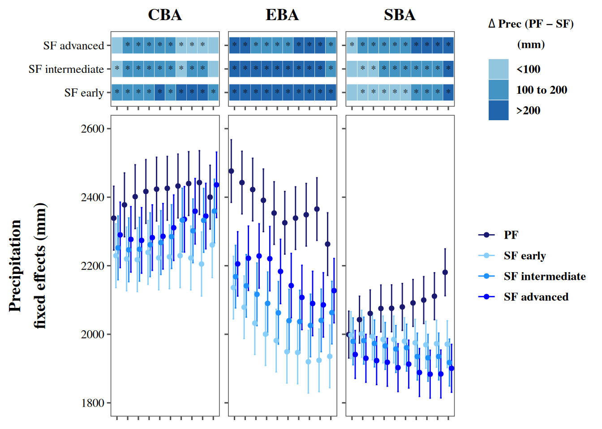
# Salvar
ggsave("fig/fixed_fixed_prec.png",
plot = final_panel_prec,
bg = "white", dpi = 600, width = 9, height = 5.5)
gc() used (Mb) gc trigger (Mb) max used (Mb)
Ncells 3691924 197.2 6466207 345.4 6466207 345.4
Vcells 7084570 54.1 14786712 112.9 12255577 93.6Todos os constraste entre frações de área
# Lista de modelos
modelos <- list(CBA = model_CBA_prec, EBA = model_EBA_prec, SBA = model_SBA_prec)
# Função para gerar todos os contrastes PF - SF
get_all_contrasts <- function(model, region_name) {
em <- emmeans(model, ~ ff_area * Tipo)
contrast_res <- contrast(em, method = "revpairwise", adjust = "fdr")
df <- as.data.frame(contrast_res)
df$region <- region_name
return(df)
}
# Aplicar para todas as regiões
all_contrasts_sup <- purrr::map2_dfr(modelos, names(modelos), get_all_contrasts)
str(all_contrasts_sup)Classes 'summary_emm' and 'data.frame': 2340 obs. of 7 variables:
$ contrast: chr "(10-20 PF) - (1-10 PF)" "(20-30 PF) - (1-10 PF)" "(20-30 PF) - (10-20 PF)" "(30-40 PF) - (1-10 PF)" ...
$ estimate: num 38.8 62.7 23.9 77.8 39.1 ...
$ SE : num 23.1 23.1 23.1 23.1 23.1 ...
$ df : num 702 702 702 702 702 ...
$ t.ratio : num 1.68 2.71 1.03 3.37 1.69 ...
$ p.value : num 0.13443 0.01284 0.37907 0.00174 0.13154 ...
$ region : chr "CBA" "CBA" "CBA" "CBA" ...
- attr(*, "estName")= chr "estimate"
- attr(*, "pri.vars")= chr "contrast"
- attr(*, "adjust")= chr "fdr"
- attr(*, "side")= num 0
- attr(*, "delta")= num 0
- attr(*, "type")= chr "link"
- attr(*, "mesg")= chr [1:2] "Degrees-of-freedom method: kenward-roger" "P value adjustment: fdr method for 780 tests"
- attr(*, "digits")= int 7# Extrair contrastes entre PF e SF
sf_levels <- c("SF_early", "SF_intermediate", "SF_advanced")
all_contrasts_sup <- all_contrasts_sup %>%
filter(str_detect(contrast, "PF") & str_detect(contrast, "SF_"))
# Extrair informações usando regex
# Regex para capturar (faixa tipo) - (faixa tipo)
extr <- str_match(all_contrasts_sup$contrast,
"\\(([^ ]+) ([^)]+)\\) - \\(([^ ]+) ([^)]+)\\)")
# Adicionar colunas extraídas
all_contrasts_sup <- all_contrasts_sup %>%
mutate(
faixa1 = extr[, 2],
tipo1 = extr[, 3],
faixa2 = extr[, 4],
tipo2 = extr[, 5]
) %>%
filter((tipo1 == "PF" & tipo2 %in% sf_levels) | (tipo2 == "PF" & tipo1 %in% sf_levels)) %>%
mutate(
faixa_PF = if_else(tipo1 == "PF", faixa1, faixa2),
faixa_SF = if_else(tipo1 == "PF", faixa2, faixa1),
tipo_SF = if_else(tipo1 == "PF", tipo2, tipo1),
estimate = if_else(tipo1 == "PF", estimate, -estimate), # garantir PF - SF
sig_label = ifelse(p.value < 0.05, "*", "")
)
# Ajustar fatores
faixas_niveis <- c("1-10", "10-20", "20-30", "30-40", "40-50",
"50-60", "60-70", "70-80", "80-90", "90-100")
sf_levels <- c("SF_early", "SF_intermediate", "SF_advanced")
all_contrasts_sup <- all_contrasts_sup %>%
mutate(
faixa_PF = factor(faixa_PF, levels = faixas_niveis),
faixa_SF = factor(faixa_SF, levels = faixas_niveis),
tipo_SF = factor(tipo_SF, levels = sf_levels)
)
# Classificação mantendo sinal
all_contrasts_sup <- all_contrasts_sup %>%
mutate(
tipo_SF = fct_recode(tipo_SF,
"SF early" = "SF_early",
"SF intermediate" = "SF_intermediate",
"SF advanced" = "SF_advanced")
) %>%
mutate(
estimate_class = case_when(
estimate < 0 ~ "<0",
estimate >= 0 & estimate < 100 ~ "0-100",
estimate >= 100 & estimate < 200 ~ "100–200",
estimate >= 200 & estimate < 300 ~ "200–300",
estimate >= 300 ~ ">300"
),
estimate_class = factor(estimate_class, levels = c("<0", "0-100", "100–200", "200–300", ">300"))
)
# Plot
heatmap_all_contrasts <- ggplot(all_contrasts_sup,
aes(x = faixa_SF, y = faixa_PF, fill = estimate_class)) +
geom_tile(color = "white") +
geom_text(aes(label = sig_label), color = "black", size = 3, family = "serif") +
scale_fill_manual(values = c(
"<0" = "#F4A582",
"0-100" = "#92C5DE",
"100–200" = "#4393C3",
"200–300" = "#2166AC",
">300" = "#053061"
), name = expression(bold(atop(Delta~"Prec (PF - SF)", "(mm·yr"^{-1}*")"))))+
facet_grid(tipo_SF ~ region) +
theme_minimal(base_family = "serif") +
theme(
text = element_text(size = 12, face = "bold", family = "serif"),
axis.text.x = element_text(angle = 45, hjust = 1),
strip.text = element_text(size = 12, face = "bold"),
axis.text = element_text(size = 10, face = "plain", family = "serif", color = "black")
) +
labs(x = "SF fractional cover (%)",
y = "PF fractional cover (%)")
heatmap_all_contrasts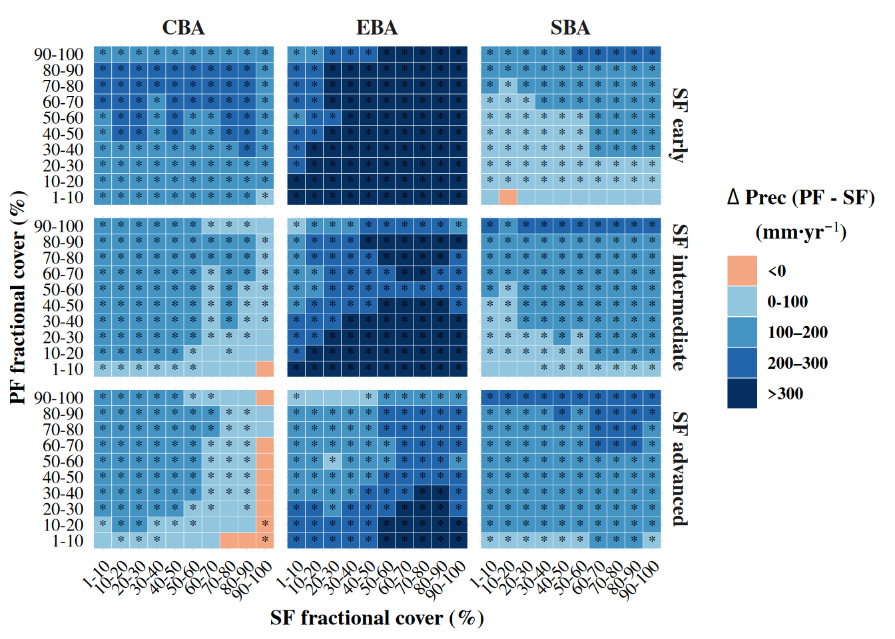
# Salvar
ggsave("fig/supplemental_material/contrastes_fixed_efects_prec.png", width = 10, height = 8, dpi = 600, bg = "white")
ggsave("fig/supplemental_material/contrastes_fixed_efects_prec.pdf", width = 10, height = 8, bg = "white")
gc() used (Mb) gc trigger (Mb) max used (Mb)
Ncells 3684516 196.8 6466207 345.4 6466207 345.4
Vcells 7097901 54.2 14786712 112.9 14786712 112.9Random effect
# Função para extrair efeitos aleatórios com IC por região
extract_random_effects <- function(model, region_name) {
# Efeitos aleatórios com variância condicional
ran <- ranef(model, condVar = TRUE)
# Extrair efeitos por ano
ran_df <- as.data.frame(ran$Ano)
names(ran_df) <- "effect"
ran_df$ano <- rownames(ran$Ano)
# Intervalos de confiança (erro padrão)
se <- attr(ran$Ano, "postVar")[1, 1, ] |> sqrt()
ran_df <- ran_df %>%
mutate(
se = se,
lower = effect - 1.96 * se,
upper = effect + 1.96 * se,
region = region_name
)
return(ran_df)
}
# Aplicar para os três modelos (substitua pelos seus objetos reais)
random_cba <- extract_random_effects(model_CBA_prec, "CBA")
random_eba <- extract_random_effects(model_EBA_prec, "EBA")
random_sba <- extract_random_effects(model_SBA_prec, "SBA")
# Combinar tudo
random_all <- bind_rows(random_cba, random_eba, random_sba)
# Garantir que o ano seja ordenável
random_all$ano <- as.numeric(as.character(random_all$ano))
# Salvar
write_xlsx(random_all, "data_group/random_effects_prec.xlsx")Plot
# Plot
p1_rand_prec <- ggplot(random_all, aes(x = ano, y = effect)) +
geom_hline(yintercept = 0, linetype = "dashed", color = "gray40") +
geom_bar(stat = "identity", position = "dodge", alpha = 0.8, fill = "#1E90FF") +
geom_errorbar(aes(ymin = lower, ymax = upper), width = 0.5, color = "black") +
facet_wrap(~region, scales = "free_x") +
scale_x_continuous(breaks = seq(2001, 2021, by = 2)) +
ggthemes::theme_few() +
theme(
text = element_text(size = 12, face = "bold", family = "serif"),
axis.text = element_text(size = 10, face = "plain", family = "serif", color = "black"),
#axis.text.x = element_text(angle = 45, hjust = 1),
axis.text.x = element_blank(),
axis.title = element_text(size = 14),
strip.text = element_text(face = "bold", size = 13)) +
labs(
x = "",
y = expression(bold(atop("Precipitation", "random effects (mm·yr"^{-1}*")")))
)
p1_rand_prec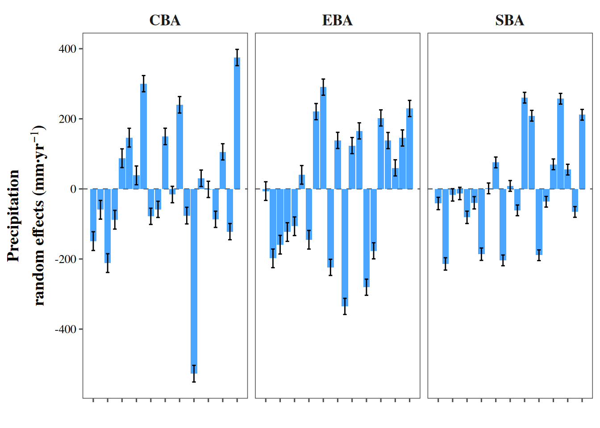
ggsave("fig/histogram_random_prec.png", bg = "white", dpi = 600, width = 9, height = 5.5)Predicted
R-square for Linear Mixed Model (LMM)
# CBA
r2_cba_prec = r2_nakagawa(model_CBA_prec)
r2_cba_prec_cond <- round(r2_cba_prec$R2_conditional, 3)
# EBA
r2_eba_prec = r2_nakagawa(model_EBA_prec)
r2_eba_prec_cond <- round(r2_eba_prec$R2_conditional, 3)
# SBA
r2_sba_prec = r2_nakagawa(model_SBA_prec)
r2_sba_prec_cond <- round(r2_sba_prec$R2_conditional, 3)CCC de Lins
## CBA
# Obter os valores observados e previstos
observado_cba_prec <- model_cba_prec$Prec
previsto_cba_prec <- predict(model_CBA_prec)
ccc_result_cba_prec <- CCC(observado_cba_prec , previsto_cba_prec )
ccc_val_cba_prec <- round(ccc_result_cba_prec$rho.c[, "est"], 3)
## EBA
# Obter os valores observados e previstos
observado_eba_prec <- model_eba_prec$Prec
previsto_eba_prec <- predict(model_EBA_prec)
ccc_result_eba_prec <- CCC(observado_eba_prec , previsto_eba_prec )
ccc_val_eba_prec <- round(ccc_result_eba_prec$rho.c[, "est"], 3)
## SBA
# Obter os valores observados e previstos
observado_sba_prec <- model_sba_prec$Prec
previsto_sba_prec <- predict(model_SBA_prec)
ccc_result_sba_prec <- CCC(observado_sba_prec , previsto_sba_prec )
ccc_val_sba_prec <- round(ccc_result_sba_prec$rho.c[, "est"], 3)Plot
## CBA
model_cba_prec$predicted <- predict(model_CBA_prec, model_cba_prec)
limite_min <- floor(min(model_cba_prec$Prec, model_cba_prec$predicted, na.rm = TRUE)/ 200) * 200
limite_max <- ceiling(max(model_cba_prec$Prec, model_cba_prec$predicted, na.rm = TRUE)/ 200) * 200
cba_pf = model_cba_prec |>
ggplot(aes(Prec,predicted))+
geom_point(size = 2, alpha = .7)+
geom_smooth(method = "lm", se = F, color = "orange")+
theme_minimal()+
theme(text = element_text(size = 12, face = "bold", family = "serif"),
axis.title.y = element_text(margin = margin(r = 10)),
plot.title = element_text(size = 14, face = "bold", family = "serif", hjust = 0.5))+
labs(x = "Observed \nprecipitation (mm·yr⁻¹)",
y = "Predicted \nprecipitation (mm·yr⁻¹)",
#y = expression(atop("Preditcted", paste("precipitation (mm·", yr^{-1}, ")"))),
title = "CBA",
subtitle = paste0("R² = ", r2_cba_prec_cond,
" | CCC = ", ccc_val_cba_prec)) +
theme(plot.subtitle = element_text(size = 14, face = "plain", family = "serif"))
## EBA
model_eba_prec$predicted <- predict(model_EBA_prec, model_eba_prec)
limite_min <- floor(min(model_eba_prec$Prec, model_eba_prec$predicted, na.rm = TRUE) / 200) * 200
limite_max <- ceiling(max(model_eba_prec$Prec, model_eba_prec$predicted, na.rm = TRUE) / 200) * 200
eba_pf = model_eba_prec |>
ggplot(aes(Prec,predicted))+
geom_point(size = 2, alpha = .7)+
geom_smooth(method = "lm", se = F, color = "orange")+
theme_minimal()+
theme(text = element_text(size = 12, face = "bold", family = "serif"),
axis.title.y = element_text(margin = margin(r = 10)),
plot.title = element_text(size = 14, face = "bold", family = "serif", hjust = 0.5))+
labs(x = "Observed \nprecipitation (mm·yr⁻¹)",
y = "",
title = "EBA",
subtitle = paste("R² = ", r2_eba_prec_cond,
" | CCC = ", ccc_val_eba_prec)) +
theme(plot.subtitle = element_text(size = 14, face = "plain", family = "serif"))
##SBA
model_sba_prec$predicted <- predict(model_SBA_prec, model_sba_prec)
limite_min <- floor(min(model_sba_prec$Prec, model_sba_prec$predicted, na.rm = TRUE) / 200) * 200
limite_max <- ceiling(max(model_sba_prec$Prec, model_sba_prec$predicted, na.rm = TRUE) / 200) * 200
sba_pf = model_sba_prec |>
ggplot(aes(Prec,predicted))+
geom_point(size = 2, alpha = .7)+
geom_smooth(method = "lm", se = F, color = "orange")+
theme_minimal()+
theme(text = element_text(size = 12, face = "bold", family = "serif"),
axis.title.y = element_text(margin = margin(r = 10)),
plot.title = element_text(size = 14, face = "bold", family = "serif", hjust = 0.5))+
labs(x = "Observed \nprecipitation (mm·yr⁻¹)",
y = "",
title = "SBA",
subtitle = paste("R² = ", r2_sba_prec_cond,
" | CCC = ", ccc_val_sba_prec)) +
theme(plot.subtitle = element_text(size = 14, face = "plain", family = "serif"))Painel
# Função para incluir escalas iguais nos eixos
ajustar_plot <- function(plot) {
plot +
scale_x_continuous(limits = c(limite_min, limite_max), breaks = seq(limite_min, limite_max, by = 200)) +
scale_y_continuous(limits = c(limite_min, limite_max), breaks = seq(limite_min, limite_max, by = 200))
}
# Aplicando a função a cada gráfico
cba_pf <- ajustar_plot(cba_pf)
eba_pf <- ajustar_plot(eba_pf)
sba_pf <- ajustar_plot(sba_pf)
# Juntando todos os plots de prec
p1_pred_prec = (cba_pf + eba_pf + sba_pf) +
plot_layout(ncol = 3, nrow = 1, guides = "collect") &
theme(text = element_text(size = 12, face = "bold", family = "serif"), # Texto geral
axis.text = element_text(size = 10, face = "plain", family = "serif"), # Texto dos eixos
axis.text.x = element_text(size = 10, angle = 45, hjust = 1, vjust = 1, family = "serif"))
#axis.text.y = element_text(size = 10, family = "serif")) # Fonte serif no eixo Y
p1_pred_prec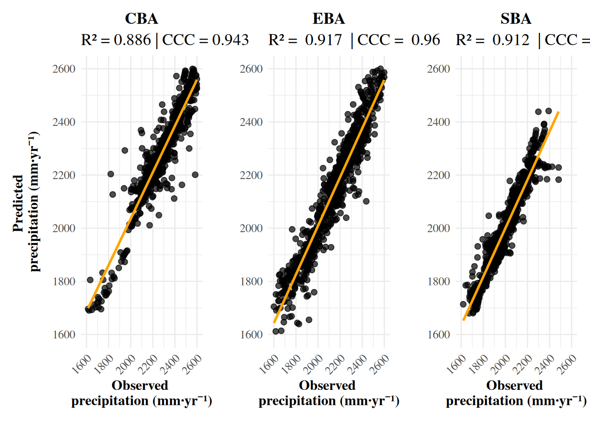
ggsave("fig/supplemental_material/predicted_observed_prec.png", bg = "white", dpi = 600, width = 12, height = 5.5)Model plotting
CBA
# Atribuindo os dados
model_cba_all_prec = model_cba_prec
model_cba_all_prec[model_cba_all_prec$ff_area== "1-10",
c("area")]<-1
model_cba_all_prec[model_cba_all_prec$ff_area== "10-20",
c("area")]<-2
model_cba_all_prec[model_cba_all_prec$ff_area== "20-30",
c("area")]<-3
model_cba_all_prec[model_cba_all_prec$ff_area== "30-40",
c("area")]<-4
model_cba_all_prec[model_cba_all_prec$ff_area== "40-50",
c("area")]<-5
model_cba_all_prec[model_cba_all_prec$ff_area== "50-60",
c("area")]<-6
model_cba_all_prec[model_cba_all_prec$ff_area== "60-70",
c("area")]<-7
model_cba_all_prec[model_cba_all_prec$ff_area== "70-80",
c("area")]<-8
model_cba_all_prec[model_cba_all_prec$ff_area== "80-90",
c("area")]<-9
model_cba_all_prec[model_cba_all_prec$ff_area== "90-100",
c("area")]<-10
model_cba_all_prec[model_cba_all_prec$type== 1,
c("vegetation")]<-"PF"
model_cba_all_prec[model_cba_all_prec$type== 2,
c("vegetation")]<-"SF_early"
model_cba_all_prec[model_cba_all_prec$type== 3,
c("vegetation")]<-"SF_intermediate"
model_cba_all_prec[model_cba_all_prec$type== 4,
c("vegetation")]<-"SF_advanced"
model_cba_all_prec# A tibble: 762 × 11
Ano Tipo region ff_area idade Prec n_obs type predicted area
<dbl> <chr> <chr> <chr> <chr> <dbl> <dbl> <fct> <dbl> <dbl>
1 2001 PF CBA 1-10 <NA> 2174. 34140 1 2190. 1
2 2001 PF CBA 10-20 <NA> 2221. 20329 1 2229. 2
3 2001 PF CBA 20-30 <NA> 2254. 17976 1 2253. 3
4 2001 PF CBA 30-40 <NA> 2277. 18084 1 2268. 4
5 2001 PF CBA 40-50 <NA> 2289. 20143 1 2275. 5
6 2001 PF CBA 50-60 <NA> 2293. 23549 1 2277. 6
7 2001 PF CBA 60-70 <NA> 2305. 27195 1 2284. 7
8 2001 PF CBA 70-80 <NA> 2312. 33532 1 2291. 8
9 2001 PF CBA 80-90 <NA> 2316. 45363 1 2294. 9
10 2001 PF CBA 90-100 <NA> 2285. 779283 1 2251. 10
# ℹ 752 more rows
# ℹ 1 more variable: vegetation <chr># Reordenar os níveis de 'Tipo'
model_cba_all_prec <- model_cba_all_prec %>%
mutate(vegetation = factor(vegetation, levels = c("PF", "SF_early", "SF_intermediate", "SF_advanced")))
m1_prec_cba <- model_cba_all_prec %>%
ggplot(aes(x = area * 10, y = Prec, color = vegetation)) + # Define 'color' no aes
theme_bw() +
geom_point(size = 1, alpha = 0.7) + # Ajusta tamanho e transparência dos pontos
geom_line(aes(y = predicted, group = vegetation), size = 1) + # Mantém cor no grupo
scale_color_manual(values = c("darkgreen", "#ACD39E", "#5AAE61", "#1B7837"),
name = NULL,
labels = c("PF", "SF early", "SF intermediate", "SF advanced")) +
scale_fill_manual(values = c("darkgreen", "#ACD39E", "#5AAE61", "#1B7837"),
name = NULL,
labels = c("PF", "SF early", "SF intermediate", "SF advanced")) +
facet_wrap(~Ano, nrow = 4, ncol = 6) +
scale_y_continuous(breaks = seq(1800, 2700, by = 300)) +
ggthemes::theme_few() +
labs(x = "Fractional forest coverage (%)",
y = "Predicted precipitation (mm·yr⁻¹) - CBA",
color = "") +
theme(legend.position = "top",
text = element_text(family = "serif"),
axis.title = element_text(size = 16, face = "bold"),
strip.text = element_text(face = "bold", size = 12),
legend.text = element_text(size = 14, face = "bold"),
legend.title = element_text(face = "bold", size = 14),
plot.title = element_text(size = 14, face = "bold", hjust = 0.5), # Centraliza título
axis.text = element_text(size = 12))
ic_cba_prec 2.5 % 97.5 % parameters
(Intercept) 2248.99740 2428.7440429 1-10
ff_area10-20 -5.38398 82.9503323 10-20
ff_area20-30 18.50920 106.8435117 20-30
ff_area30-40 33.68027 122.0145872 30-40
ff_area40-50 40.41237 128.7466835 40-50
ff_area50-60 42.88519 131.2194982 50-60
ff_area60-70 49.61949 137.9538042 60-70
ff_area70-80 56.75100 145.0853081 70-80
ff_area80-90 59.67788 148.0121882 80-90
ff_area90-100 17.03548 105.3697913 90-100
TipoSF_advanced -98.40662 0.6840606 1-10
TipoSF_early -153.65826 -65.3239445 1-10
TipoSF_intermediate -130.89132 -42.5570107 1-10
ff_area10-20:TipoSF_advanced -121.61276 18.0560490 10-20
ff_area20-30:TipoSF_advanced -148.59249 -8.9236749 20-30
ff_area30-40:TipoSF_advanced -155.58992 -15.9211051 30-40
ff_area40-50:TipoSF_advanced -158.55542 -18.8866039 40-50
ff_area50-60:TipoSF_advanced -136.04401 3.6248054 50-60
ff_area60-70:TipoSF_advanced -118.11374 21.5550673 60-70
ff_area70-80:TipoSF_advanced -101.78413 37.8846783 70-80
ff_area80-90:TipoSF_advanced -118.80175 20.8670632 80-90
ff_area90-100:TipoSF_advanced 14.94350 154.6123160 90-100
ff_area10-20:TipoSF_early -110.72741 14.1961773 10-20
ff_area20-30:TipoSF_early -136.93223 -12.0086421 20-30
ff_area30-40:TipoSF_early -130.83373 -5.9101468 30-40
ff_area40-50:TipoSF_early -153.47645 -28.5528629 40-50
ff_area50-60:TipoSF_early -152.75021 -27.8266228 50-60
ff_area60-70:TipoSF_early -156.31968 -31.3960967 60-70
ff_area70-80:TipoSF_early -170.19535 -45.2717718 70-80
ff_area80-90:TipoSF_early -191.49889 -64.8988504 80-90
ff_area90-100:TipoSF_early -95.64902 35.5355309 90-100
ff_area10-20:TipoSF_intermediate -106.99626 17.9273215 10-20
ff_area20-30:TipoSF_intermediate -129.28171 -4.3581241 20-30
ff_area30-40:TipoSF_intermediate -131.23990 -6.3163201 30-40
ff_area40-50:TipoSF_intermediate -131.71941 -6.7958229 40-50
ff_area50-60:TipoSF_intermediate -116.71108 8.2124985 50-60
ff_area60-70:TipoSF_intermediate -75.35468 49.5689015 60-70
ff_area70-80:TipoSF_intermediate -113.61980 11.3037793 70-80
ff_area80-90:TipoSF_intermediate -86.07110 38.8524808 80-90
ff_area90-100:TipoSF_intermediate -16.34902 108.5745602 90-100
fixed_effect region
(Intercept) 2338.87070 CBA
ff_area10-20 38.78318 CBA
ff_area20-30 62.67636 CBA
ff_area30-40 77.84743 CBA
ff_area40-50 84.57953 CBA
ff_area50-60 87.05234 CBA
ff_area60-70 93.78665 CBA
ff_area70-80 100.91815 CBA
ff_area80-90 103.84503 CBA
ff_area90-100 61.20263 CBA
TipoSF_advanced -48.86128 CBA
TipoSF_early -109.49110 CBA
TipoSF_intermediate -86.72417 CBA
ff_area10-20:TipoSF_advanced -51.77836 CBA
ff_area20-30:TipoSF_advanced -78.75808 CBA
ff_area30-40:TipoSF_advanced -85.75551 CBA
ff_area40-50:TipoSF_advanced -88.72101 CBA
ff_area50-60:TipoSF_advanced -66.20960 CBA
ff_area60-70:TipoSF_advanced -48.27934 CBA
ff_area70-80:TipoSF_advanced -31.94973 CBA
ff_area80-90:TipoSF_advanced -48.96734 CBA
ff_area90-100:TipoSF_advanced 84.77791 CBA
ff_area10-20:TipoSF_early -48.26561 CBA
ff_area20-30:TipoSF_early -74.47043 CBA
ff_area30-40:TipoSF_early -68.37194 CBA
ff_area40-50:TipoSF_early -91.01465 CBA
ff_area50-60:TipoSF_early -90.28841 CBA
ff_area60-70:TipoSF_early -93.85789 CBA
ff_area70-80:TipoSF_early -107.73356 CBA
ff_area80-90:TipoSF_early -128.19886 CBA
ff_area90-100:TipoSF_early -30.05674 CBA
ff_area10-20:TipoSF_intermediate -44.53447 CBA
ff_area20-30:TipoSF_intermediate -66.81992 CBA
ff_area30-40:TipoSF_intermediate -68.77811 CBA
ff_area40-50:TipoSF_intermediate -69.25761 CBA
ff_area50-60:TipoSF_intermediate -54.24929 CBA
ff_area60-70:TipoSF_intermediate -12.89289 CBA
ff_area70-80:TipoSF_intermediate -51.15801 CBA
ff_area80-90:TipoSF_intermediate -23.60931 CBA
ff_area90-100:TipoSF_intermediate 46.11277 CBAm1_prec_cba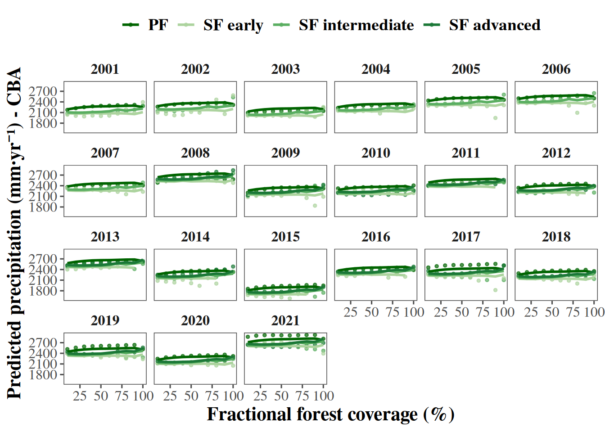
ggsave("fig/supplemental_material/predicted_prec_CBA.png", bg = "white",
dpi = 600, width = 10, height = 8)EBA
model_eba_all_prec = model_eba_prec
model_eba_all_prec[model_eba_all_prec$ff_area== "1-10",
c("area")]<-1
model_eba_all_prec[model_eba_all_prec$ff_area== "10-20",
c("area")]<-2
model_eba_all_prec[model_eba_all_prec$ff_area== "20-30",
c("area")]<-3
model_eba_all_prec[model_eba_all_prec$ff_area== "30-40",
c("area")]<-4
model_eba_all_prec[model_eba_all_prec$ff_area== "40-50",
c("area")]<-5
model_eba_all_prec[model_eba_all_prec$ff_area== "50-60",
c("area")]<-6
model_eba_all_prec[model_eba_all_prec$ff_area== "60-70",
c("area")]<-7
model_eba_all_prec[model_eba_all_prec$ff_area== "70-80",
c("area")]<-8
model_eba_all_prec[model_eba_all_prec$ff_area== "80-90",
c("area")]<-9
model_eba_all_prec[model_eba_all_prec$ff_area== "90-100",
c("area")]<-10
model_eba_all_prec[model_eba_all_prec$type== 1,
c("vegetation")]<-"PF"
model_eba_all_prec[model_eba_all_prec$type== 2,
c("vegetation")]<-"SF_early"
model_eba_all_prec[model_eba_all_prec$type== 3,
c("vegetation")]<-"SF_intermediate"
model_eba_all_prec[model_eba_all_prec$type== 4,
c("vegetation")]<-"SF_advanced"
model_eba_all_prec# A tibble: 770 × 11
Ano Tipo region ff_area idade Prec n_obs type predicted area
<dbl> <chr> <chr> <chr> <chr> <dbl> <dbl> <fct> <dbl> <dbl>
1 2001 PF EBA 1-10 <NA> 2456. 28614 1 2470. 1
2 2001 PF EBA 10-20 <NA> 2395. 19337 1 2436. 2
3 2001 PF EBA 20-30 <NA> 2364. 17933 1 2416. 3
4 2001 PF EBA 30-40 <NA> 2331. 18998 1 2385. 4
5 2001 PF EBA 40-50 <NA> 2289. 22451 1 2347. 5
6 2001 PF EBA 50-60 <NA> 2261. 27278 1 2319. 6
7 2001 PF EBA 60-70 <NA> 2274. 28701 1 2333. 7
8 2001 PF EBA 70-80 <NA> 2277. 31947 1 2343. 8
9 2001 PF EBA 80-90 <NA> 2293. 41186 1 2359. 9
10 2001 PF EBA 90-100 <NA> 2107. 452193 1 2257. 10
# ℹ 760 more rows
# ℹ 1 more variable: vegetation <chr># Reordenar os níveis de 'Tipo'
model_eba_all_prec <- model_eba_all_prec %>%
mutate(vegetation = factor(vegetation, levels = c("PF", "SF_early", "SF_intermediate", "SF_advanced")))
m1_prec_eba <- model_eba_all_prec %>%
ggplot(aes(x = area * 10, y = Prec, color = vegetation)) + # Define 'color' no aes
theme_bw() +
geom_point(size = 1, alpha = 0.7) + # Ajusta tamanho e transparência dos pontos
geom_line(aes(y = predicted, group = vegetation), size = 1) + # Mantém cor no grupo
scale_color_manual(values = c("darkgreen", "#ACD39E", "#5AAE61", "#1B7837"),
name = NULL,
labels = c("PF", "SF early", "SF intermediate", "SF advanced")) +
scale_fill_manual(values = c("darkgreen", "#ACD39E", "#5AAE61", "#1B7837"),
name = NULL,
labels = c("PF", "SF early", "SF intermediate", "SF advanced")) +
scale_y_continuous(breaks = seq(1700, 2600, by = 300)) +
ggthemes::theme_few() +
facet_wrap(~Ano, nrow = 4, ncol = 6) +
labs(x = "Fractional forest coverage (%)",
y = "Predicted precipitation (mm·yr⁻¹) - EBA",
color = "") +
theme(legend.position = "top",
text = element_text(family = "serif"),
axis.title = element_text(size = 16, face = "bold"),
strip.text = element_text(face = "bold", size = 12),
legend.text = element_text(size = 14, face = "bold"),
legend.title = element_text(face = "bold", size = 14),
plot.title = element_text(size = 14, face = "bold", hjust = 0.5), # Centraliza título
axis.text = element_text(size = 12))
ic_eba_prec 2.5 % 97.5 % parameters
(Intercept) 2387.962866 2564.46621 1-10
ff_area10-20 -77.543557 10.33331 10-20
ff_area20-30 -97.889186 -10.01232 20-30
ff_area30-40 -129.271717 -41.39485 30-40
ff_area40-50 -166.449868 -78.57300 40-50
ff_area50-60 -194.776903 -106.90004 50-60
ff_area60-70 -181.245234 -93.36837 60-70
ff_area70-80 -171.378468 -83.50160 70-80
ff_area80-90 -154.780360 -66.90349 80-90
ff_area90-100 -256.980982 -169.10412 90-100
TipoSF_advanced -320.127639 -221.55253 1-10
TipoSF_early -383.985995 -296.10913 1-10
TipoSF_intermediate -352.001669 -264.12480 1-10
ff_area10-20:TipoSF_advanced -19.368059 119.57747 10-20
ff_area20-30:TipoSF_advanced 7.579622 146.52515 20-30
ff_area30-40:TipoSF_advanced 31.114521 170.06005 30-40
ff_area40-50:TipoSF_advanced 31.018994 169.96452 40-50
ff_area50-60:TipoSF_advanced 18.053286 156.99881 50-60
ff_area60-70:TipoSF_advanced -30.077360 108.86817 60-70
ff_area70-80:TipoSF_advanced -57.551686 81.39384 70-80
ff_area80-90:TipoSF_advanced -78.220133 60.72539 80-90
ff_area90-100:TipoSF_advanced 65.521993 204.46752 90-100
ff_area10-20:TipoSF_early -85.858319 38.41834 10-20
ff_area20-30:TipoSF_early -111.881788 12.39487 20-30
ff_area30-40:TipoSF_early -112.615835 11.66082 30-40
ff_area40-50:TipoSF_early -94.191679 30.08498 40-50
ff_area50-60:TipoSF_early -98.368724 25.90793 50-60
ff_area60-70:TipoSF_early -114.154299 10.12236 60-70
ff_area70-80:TipoSF_early -151.029660 -26.75300 70-80
ff_area80-90:TipoSF_early -163.440998 -39.16434 80-90
ff_area90-100:TipoSF_early -49.666550 74.61011 90-100
ff_area10-20:TipoSF_intermediate -55.294448 68.98221 10-20
ff_area20-30:TipoSF_intermediate -59.859245 64.41741 20-30
ff_area30-40:TipoSF_intermediate -54.741704 69.53495 30-40
ff_area40-50:TipoSF_intermediate -45.209244 79.06741 40-50
ff_area50-60:TipoSF_intermediate -39.696060 84.58060 50-60
ff_area60-70:TipoSF_intermediate -55.868879 68.40778 60-70
ff_area70-80:TipoSF_intermediate -77.064829 47.21183 70-80
ff_area80-90:TipoSF_intermediate -78.879169 45.39749 80-90
ff_area90-100:TipoSF_intermediate 45.987574 170.26423 90-100
fixed_effect region
(Intercept) 2476.214521 EBA
ff_area10-20 -33.605124 EBA
ff_area20-30 -53.950752 EBA
ff_area30-40 -85.333284 EBA
ff_area40-50 -122.511434 EBA
ff_area50-60 -150.838469 EBA
ff_area60-70 -137.306800 EBA
ff_area70-80 -127.440034 EBA
ff_area80-90 -110.841926 EBA
ff_area90-100 -213.042549 EBA
TipoSF_advanced -270.840203 EBA
TipoSF_early -340.047561 EBA
TipoSF_intermediate -308.063236 EBA
ff_area10-20:TipoSF_advanced 50.104704 EBA
ff_area20-30:TipoSF_advanced 77.052386 EBA
ff_area30-40:TipoSF_advanced 100.587285 EBA
ff_area40-50:TipoSF_advanced 100.491757 EBA
ff_area50-60:TipoSF_advanced 87.526050 EBA
ff_area60-70:TipoSF_advanced 39.395404 EBA
ff_area70-80:TipoSF_advanced 11.921078 EBA
ff_area80-90:TipoSF_advanced -8.747370 EBA
ff_area90-100:TipoSF_advanced 134.994756 EBA
ff_area10-20:TipoSF_early -23.719990 EBA
ff_area20-30:TipoSF_early -49.743459 EBA
ff_area30-40:TipoSF_early -50.477507 EBA
ff_area40-50:TipoSF_early -32.053351 EBA
ff_area50-60:TipoSF_early -36.230395 EBA
ff_area60-70:TipoSF_early -52.015970 EBA
ff_area70-80:TipoSF_early -88.891331 EBA
ff_area80-90:TipoSF_early -101.302670 EBA
ff_area90-100:TipoSF_early 12.471778 EBA
ff_area10-20:TipoSF_intermediate 6.843881 EBA
ff_area20-30:TipoSF_intermediate 2.279084 EBA
ff_area30-40:TipoSF_intermediate 7.396624 EBA
ff_area40-50:TipoSF_intermediate 16.929085 EBA
ff_area50-60:TipoSF_intermediate 22.442269 EBA
ff_area60-70:TipoSF_intermediate 6.269449 EBA
ff_area70-80:TipoSF_intermediate -14.926500 EBA
ff_area80-90:TipoSF_intermediate -16.740840 EBA
ff_area90-100:TipoSF_intermediate 108.125903 EBAm1_prec_eba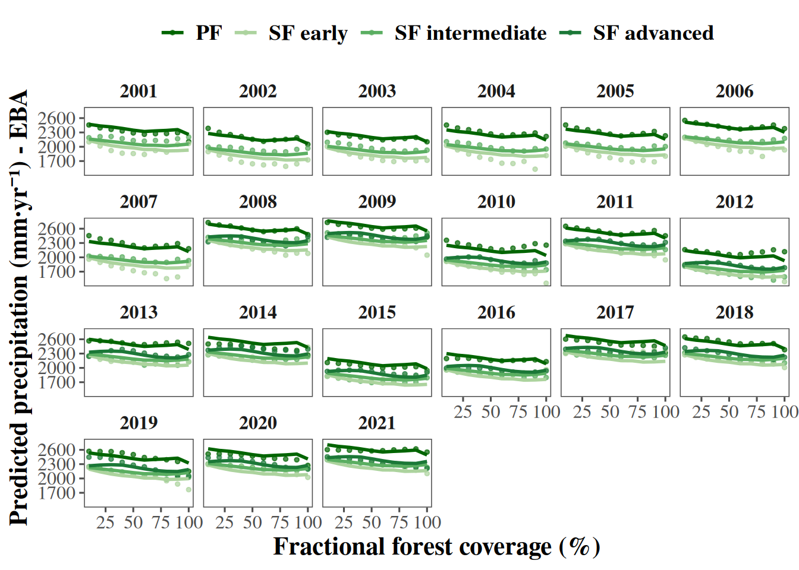
ggsave("fig/supplemental_material/predicted_prec_EBA.png", bg = "white",
dpi = 600, width = 10, height = 8)SBA
model_sba_all_prec = model_sba_prec
model_sba_all_prec[model_sba_all_prec$ff_area== "1-10",
c("area")]<-1
model_sba_all_prec[model_sba_all_prec$ff_area== "10-20",
c("area")]<-2
model_sba_all_prec[model_sba_all_prec$ff_area== "20-30",
c("area")]<-3
model_sba_all_prec[model_sba_all_prec$ff_area== "30-40",
c("area")]<-4
model_sba_all_prec[model_sba_all_prec$ff_area== "40-50",
c("area")]<-5
model_sba_all_prec[model_sba_all_prec$ff_area== "50-60",
c("area")]<-6
model_sba_all_prec[model_sba_all_prec$ff_area== "60-70",
c("area")]<-7
model_sba_all_prec[model_sba_all_prec$ff_area== "70-80",
c("area")]<-8
model_sba_all_prec[model_sba_all_prec$ff_area== "80-90",
c("area")]<-9
model_sba_all_prec[model_sba_all_prec$ff_area== "90-100",
c("area")]<-10
model_sba_all_prec[model_sba_all_prec$type== 1,
c("vegetation")]<-"PF"
model_sba_all_prec[model_sba_all_prec$type== 2,
c("vegetation")]<-"SF_early"
model_sba_all_prec[model_sba_all_prec$type== 3,
c("vegetation")]<-"SF_intermediate"
model_sba_all_prec[model_sba_all_prec$type== 4,
c("vegetation")]<-"SF_advanced"# Reordenar os níveis de 'Tipo'
model_sba_all_prec <- model_sba_all_prec %>%
mutate(vegetation = factor(vegetation, levels = c("PF", "SF_early", "SF_intermediate", "SF_advanced")))
model_sba_all_prec %>%
ggplot(aes(x = area*10, y = Prec))+
theme_bw()+
geom_point(aes(x = area*10, y = Prec, color = vegetation)) +
geom_line(aes(y = predicted, group = vegetation, color = vegetation), size = 1)+
scale_color_manual(values = c("darkgreen", "#ACD39E", "#5AAE61", "#1B7837"),
name = NULL,
labels = c("PF", "SF early", "SF intermediate", "SF advanced")) +
scale_fill_manual(values = c("darkgreen", "#ACD39E", "#5AAE61", "#1B7837"),
name = NULL,
labels = c("PF", "SF early", "SF intermediate", "SF advanced")) +
scale_y_continuous(breaks = seq(1600, 2500, by = 300)) +
ggthemes::theme_few() +
facet_wrap(~Ano, nrow = 4, ncol = 6) +
labs(x = "Fractional forest coverage (%)",
y = "Predicted precipitation (mm·yr⁻¹) - SBA",
color = "") +
theme(legend.position = "top",
text = element_text(family = "serif"),
axis.title = element_text(size = 16, face = "bold"),
strip.text = element_text(face = "bold", size = 12),
legend.text = element_text(size = 14, face = "bold"), # Tamanho do texto da legenda
legend.title = element_text(face = "bold", size = 14),
plot.title = element_text(size = 14, face = "bold", hjust = 0.5), # Centraliza título
axis.text = element_text(size = 12))
ggsave("fig/supplemental_material/predicted_prec_SBA.png", bg = "white",
dpi = 600, width = 10, height = 8)EVAPOTRANSPIRATION
Model choice
all_pf_sf_evapo_model = read_xlsx("data_group/plan_data_group_evapo.xlsx")
## CBA
model_cba_evapo = all_pf_sf_evapo_model %>%
filter(region == "CBA")
model_cba_evapo$type = as.factor(model_cba_evapo$type)
## EBA
model_eba_evapo = all_pf_sf_evapo_model %>%
filter(region == "EBA")
model_eba_evapo$type = as.factor(model_eba_evapo$type)
## SBA
model_sba_evapo = all_pf_sf_evapo_model %>%
filter(region == "SBA")
model_sba_evapo$type = as.factor(model_sba_evapo$type)Fixed effect and p-value
# Modelo com interação frac_area e classe florestal
## CBA
model_CBA_evapo <- lmerTest::lmer(Evapo ~ ff_area*Tipo +
(1 | Ano), data = model_cba_evapo)
#EBA
model_EBA_evapo = lmerTest::lmer(Evapo ~ ff_area*Tipo +
(1|Ano), data = model_eba_evapo)
##SBA
model_SBA_evapo = lmerTest::lmer(Evapo ~ ff_area*Tipo +
(1|Ano), data = model_sba_evapo)
#
summary(model_CBA_evapo)Linear mixed model fit by REML. t-tests use Satterthwaite's method [
lmerModLmerTest]
Formula: Evapo ~ ff_area * Tipo + (1 | Ano)
Data: model_cba_evapo
REML criterion at convergence: 6738.9
Scaled residuals:
Min 1Q Median 3Q Max
-5.4991 -0.4788 -0.0157 0.4412 5.3186
Random effects:
Groups Name Variance Std.Dev.
Ano (Intercept) 792.1 28.14
Residual 503.3 22.43
Number of obs: 762, groups: Ano, 21
Fixed effects:
Estimate Std. Error df t value Pr(>|t|)
(Intercept) 1325.927 7.854 50.931 168.821 < 2e-16
ff_area10-20 56.713 6.923 701.935 8.192 1.22e-15
ff_area20-30 87.462 6.923 701.935 12.633 < 2e-16
ff_area30-40 107.196 6.923 701.935 15.483 < 2e-16
ff_area40-50 117.829 6.923 701.935 17.019 < 2e-16
ff_area50-60 126.234 6.923 701.935 18.233 < 2e-16
ff_area60-70 131.722 6.923 701.935 19.026 < 2e-16
ff_area70-80 136.526 6.923 701.935 19.719 < 2e-16
ff_area80-90 139.809 6.923 701.935 20.194 < 2e-16
ff_area90-100 158.000 6.923 701.935 22.821 < 2e-16
TipoSF_advanced 100.500 7.766 702.131 12.941 < 2e-16
TipoSF_early 106.979 6.923 701.935 15.452 < 2e-16
TipoSF_intermediate 106.216 6.923 701.935 15.342 < 2e-16
ff_area10-20:TipoSF_advanced -39.149 10.947 701.935 -3.576 0.000372
ff_area20-30:TipoSF_advanced -54.173 10.947 701.935 -4.949 9.36e-07
ff_area30-40:TipoSF_advanced -63.142 10.947 701.935 -5.768 1.20e-08
ff_area40-50:TipoSF_advanced -67.342 10.947 701.935 -6.152 1.29e-09
ff_area50-60:TipoSF_advanced -64.924 10.947 701.935 -5.931 4.73e-09
ff_area60-70:TipoSF_advanced -63.796 10.947 701.935 -5.828 8.56e-09
ff_area70-80:TipoSF_advanced -68.563 10.947 701.935 -6.263 6.57e-10
ff_area80-90:TipoSF_advanced -69.303 10.947 701.935 -6.331 4.35e-10
ff_area90-100:TipoSF_advanced -116.916 10.947 701.935 -10.680 < 2e-16
ff_area10-20:TipoSF_early -34.613 9.791 701.935 -3.535 0.000434
ff_area20-30:TipoSF_early -57.071 9.791 701.935 -5.829 8.51e-09
ff_area30-40:TipoSF_early -61.661 9.791 701.935 -6.298 5.33e-10
ff_area40-50:TipoSF_early -65.671 9.791 701.935 -6.707 4.09e-11
ff_area50-60:TipoSF_early -69.296 9.791 701.935 -7.077 3.57e-12
ff_area60-70:TipoSF_early -64.486 9.791 701.935 -6.586 8.86e-11
ff_area70-80:TipoSF_early -74.091 9.791 701.935 -7.567 1.20e-13
ff_area80-90:TipoSF_early -68.262 9.923 701.951 -6.879 1.33e-11
ff_area90-100:TipoSF_early -70.329 10.282 701.996 -6.840 1.72e-11
ff_area10-20:TipoSF_intermediate -38.299 9.791 701.935 -3.912 0.000101
ff_area20-30:TipoSF_intermediate -57.134 9.791 701.935 -5.835 8.20e-09
ff_area30-40:TipoSF_intermediate -64.730 9.791 701.935 -6.611 7.56e-11
ff_area40-50:TipoSF_intermediate -62.918 9.791 701.935 -6.426 2.42e-10
ff_area50-60:TipoSF_intermediate -71.525 9.791 701.935 -7.305 7.55e-13
ff_area60-70:TipoSF_intermediate -78.872 9.791 701.935 -8.055 3.40e-15
ff_area70-80:TipoSF_intermediate -59.843 9.791 701.935 -6.112 1.63e-09
ff_area80-90:TipoSF_intermediate -77.437 9.791 701.935 -7.909 1.01e-14
ff_area90-100:TipoSF_intermediate -98.976 9.791 701.935 -10.109 < 2e-16
(Intercept) ***
ff_area10-20 ***
ff_area20-30 ***
ff_area30-40 ***
ff_area40-50 ***
ff_area50-60 ***
ff_area60-70 ***
ff_area70-80 ***
ff_area80-90 ***
ff_area90-100 ***
TipoSF_advanced ***
TipoSF_early ***
TipoSF_intermediate ***
ff_area10-20:TipoSF_advanced ***
ff_area20-30:TipoSF_advanced ***
ff_area30-40:TipoSF_advanced ***
ff_area40-50:TipoSF_advanced ***
ff_area50-60:TipoSF_advanced ***
ff_area60-70:TipoSF_advanced ***
ff_area70-80:TipoSF_advanced ***
ff_area80-90:TipoSF_advanced ***
ff_area90-100:TipoSF_advanced ***
ff_area10-20:TipoSF_early ***
ff_area20-30:TipoSF_early ***
ff_area30-40:TipoSF_early ***
ff_area40-50:TipoSF_early ***
ff_area50-60:TipoSF_early ***
ff_area60-70:TipoSF_early ***
ff_area70-80:TipoSF_early ***
ff_area80-90:TipoSF_early ***
ff_area90-100:TipoSF_early ***
ff_area10-20:TipoSF_intermediate ***
ff_area20-30:TipoSF_intermediate ***
ff_area30-40:TipoSF_intermediate ***
ff_area40-50:TipoSF_intermediate ***
ff_area50-60:TipoSF_intermediate ***
ff_area60-70:TipoSF_intermediate ***
ff_area70-80:TipoSF_intermediate ***
ff_area80-90:TipoSF_intermediate ***
ff_area90-100:TipoSF_intermediate ***
---
Signif. codes: 0 '***' 0.001 '**' 0.01 '*' 0.05 '.' 0.1 ' ' 1summary(model_EBA_evapo)Linear mixed model fit by REML. t-tests use Satterthwaite's method [
lmerModLmerTest]
Formula: Evapo ~ ff_area * Tipo + (1 | Ano)
Data: model_eba_evapo
REML criterion at convergence: 6472.4
Scaled residuals:
Min 1Q Median 3Q Max
-4.0654 -0.5121 0.0004 0.5284 4.3767
Random effects:
Groups Name Variance Std.Dev.
Ano (Intercept) 782.2 27.97
Residual 312.1 17.67
Number of obs: 770, groups: Ano, 21
Fixed effects:
Estimate Std. Error df t value
(Intercept) 1452.9618 7.2188 38.1473 201.274
ff_area10-20 37.4104 5.4519 710.0107 6.862
ff_area20-30 55.7314 5.4519 710.0107 10.222
ff_area30-40 65.0414 5.4519 710.0107 11.930
ff_area40-50 67.2077 5.4519 710.0107 12.327
ff_area50-60 65.4517 5.4519 710.0107 12.005
ff_area60-70 70.0436 5.4519 710.0107 12.847
ff_area70-80 72.4909 5.4519 710.0107 13.296
ff_area80-90 73.5573 5.4519 710.0107 13.492
ff_area90-100 76.4845 5.4519 710.0107 14.029
TipoSF_advanced 7.4142 6.1155 710.1336 1.212
TipoSF_early 13.0094 5.4519 710.0107 2.386
TipoSF_intermediate 13.0763 5.4519 710.0107 2.398
ff_area10-20:TipoSF_advanced -4.7995 8.6203 710.0107 -0.557
ff_area20-30:TipoSF_advanced 4.4693 8.6203 710.0107 0.518
ff_area30-40:TipoSF_advanced 16.4559 8.6203 710.0107 1.909
ff_area40-50:TipoSF_advanced 29.0282 8.6203 710.0107 3.367
ff_area50-60:TipoSF_advanced 47.8472 8.6203 710.0107 5.551
ff_area60-70:TipoSF_advanced 59.1390 8.6203 710.0107 6.860
ff_area70-80:TipoSF_advanced 63.4959 8.6203 710.0107 7.366
ff_area80-90:TipoSF_advanced 66.4995 8.6203 710.0107 7.714
ff_area90-100:TipoSF_advanced 71.4465 8.6203 710.0107 8.288
ff_area10-20:TipoSF_early -0.2451 7.7102 710.0107 -0.032
ff_area20-30:TipoSF_early 6.2502 7.7102 710.0107 0.811
ff_area30-40:TipoSF_early 19.4242 7.7102 710.0107 2.519
ff_area40-50:TipoSF_early 31.7771 7.7102 710.0107 4.121
ff_area50-60:TipoSF_early 51.0115 7.7102 710.0107 6.616
ff_area60-70:TipoSF_early 66.9372 7.7102 710.0107 8.682
ff_area70-80:TipoSF_early 84.5070 7.7102 710.0107 10.960
ff_area80-90:TipoSF_early 86.3387 7.7102 710.0107 11.198
ff_area90-100:TipoSF_early 107.6036 7.7102 710.0107 13.956
ff_area10-20:TipoSF_intermediate -4.7858 7.7102 710.0107 -0.621
ff_area20-30:TipoSF_intermediate 2.3791 7.7102 710.0107 0.309
ff_area30-40:TipoSF_intermediate 13.2665 7.7102 710.0107 1.721
ff_area40-50:TipoSF_intermediate 28.4476 7.7102 710.0107 3.690
ff_area50-60:TipoSF_intermediate 45.8473 7.7102 710.0107 5.946
ff_area60-70:TipoSF_intermediate 55.8044 7.7102 710.0107 7.238
ff_area70-80:TipoSF_intermediate 66.6151 7.7102 710.0107 8.640
ff_area80-90:TipoSF_intermediate 83.1737 7.7102 710.0107 10.787
ff_area90-100:TipoSF_intermediate 84.7496 7.7102 710.0107 10.992
Pr(>|t|)
(Intercept) < 2e-16 ***
ff_area10-20 1.48e-11 ***
ff_area20-30 < 2e-16 ***
ff_area30-40 < 2e-16 ***
ff_area40-50 < 2e-16 ***
ff_area50-60 < 2e-16 ***
ff_area60-70 < 2e-16 ***
ff_area70-80 < 2e-16 ***
ff_area80-90 < 2e-16 ***
ff_area90-100 < 2e-16 ***
TipoSF_advanced 0.225773
TipoSF_early 0.017284 *
TipoSF_intermediate 0.016721 *
ff_area10-20:TipoSF_advanced 0.577864
ff_area20-30:TipoSF_advanced 0.604300
ff_area30-40:TipoSF_advanced 0.056667 .
ff_area40-50:TipoSF_advanced 0.000800 ***
ff_area50-60:TipoSF_advanced 4.02e-08 ***
ff_area60-70:TipoSF_advanced 1.50e-11 ***
ff_area70-80:TipoSF_advanced 4.90e-13 ***
ff_area80-90:TipoSF_advanced 4.13e-14 ***
ff_area90-100:TipoSF_advanced 5.74e-16 ***
ff_area10-20:TipoSF_early 0.974646
ff_area20-30:TipoSF_early 0.417847
ff_area30-40:TipoSF_early 0.011978 *
ff_area40-50:TipoSF_early 4.21e-05 ***
ff_area50-60:TipoSF_early 7.26e-11 ***
ff_area60-70:TipoSF_early < 2e-16 ***
ff_area70-80:TipoSF_early < 2e-16 ***
ff_area80-90:TipoSF_early < 2e-16 ***
ff_area90-100:TipoSF_early < 2e-16 ***
ff_area10-20:TipoSF_intermediate 0.534987
ff_area20-30:TipoSF_intermediate 0.757741
ff_area30-40:TipoSF_intermediate 0.085752 .
ff_area40-50:TipoSF_intermediate 0.000242 ***
ff_area50-60:TipoSF_intermediate 4.30e-09 ***
ff_area60-70:TipoSF_intermediate 1.19e-12 ***
ff_area70-80:TipoSF_intermediate < 2e-16 ***
ff_area80-90:TipoSF_intermediate < 2e-16 ***
ff_area90-100:TipoSF_intermediate < 2e-16 ***
---
Signif. codes: 0 '***' 0.001 '**' 0.01 '*' 0.05 '.' 0.1 ' ' 1summary(model_SBA_evapo)Linear mixed model fit by REML. t-tests use Satterthwaite's method [
lmerModLmerTest]
Formula: Evapo ~ ff_area * Tipo + (1 | Ano)
Data: model_sba_evapo
REML criterion at convergence: 6981
Scaled residuals:
Min 1Q Median 3Q Max
-3.7208 -0.4759 0.0157 0.4918 7.2271
Random effects:
Groups Name Variance Std.Dev.
Ano (Intercept) 3398.7 58.30
Residual 613.1 24.76
Number of obs: 770, groups: Ano, 21
Fixed effects:
Estimate Std. Error df t value Pr(>|t|)
(Intercept) 1287.340 13.822 27.523 93.139 < 2e-16
ff_area10-20 47.408 7.641 709.970 6.204 9.34e-10
ff_area20-30 76.400 7.641 709.970 9.998 < 2e-16
ff_area30-40 96.802 7.641 709.970 12.668 < 2e-16
ff_area40-50 102.990 7.641 709.970 13.478 < 2e-16
ff_area50-60 107.335 7.641 709.970 14.047 < 2e-16
ff_area60-70 122.092 7.641 709.970 15.978 < 2e-16
ff_area70-80 132.550 7.641 709.970 17.347 < 2e-16
ff_area80-90 142.169 7.641 709.970 18.605 < 2e-16
ff_area90-100 157.701 7.641 709.970 20.638 < 2e-16
TipoSF_advanced 30.752 8.571 710.026 3.588 0.000356
TipoSF_early 32.950 7.641 709.970 4.312 1.85e-05
TipoSF_intermediate 32.585 7.641 709.970 4.264 2.28e-05
ff_area10-20:TipoSF_advanced -13.442 12.082 709.970 -1.113 0.266260
ff_area20-30:TipoSF_advanced -9.361 12.082 709.970 -0.775 0.438709
ff_area30-40:TipoSF_advanced -13.907 12.082 709.970 -1.151 0.250095
ff_area40-50:TipoSF_advanced -7.421 12.082 709.970 -0.614 0.539250
ff_area50-60:TipoSF_advanced 3.872 12.082 709.970 0.320 0.748727
ff_area60-70:TipoSF_advanced -6.979 12.082 709.970 -0.578 0.563714
ff_area70-80:TipoSF_advanced -9.912 12.082 709.970 -0.820 0.412245
ff_area80-90:TipoSF_advanced -27.587 12.082 709.970 -2.283 0.022704
ff_area90-100:TipoSF_advanced -24.162 12.082 709.970 -2.000 0.045901
ff_area10-20:TipoSF_early 2.440 10.806 709.970 0.226 0.821442
ff_area20-30:TipoSF_early -8.574 10.806 709.970 -0.793 0.427793
ff_area30-40:TipoSF_early -21.342 10.806 709.970 -1.975 0.048661
ff_area40-50:TipoSF_early -12.153 10.806 709.970 -1.125 0.261122
ff_area50-60:TipoSF_early -13.551 10.806 709.970 -1.254 0.210262
ff_area60-70:TipoSF_early -14.841 10.806 709.970 -1.373 0.170078
ff_area70-80:TipoSF_early -17.018 10.806 709.970 -1.575 0.115751
ff_area80-90:TipoSF_early -19.760 10.806 709.970 -1.829 0.067883
ff_area90-100:TipoSF_early -33.175 10.806 709.970 -3.070 0.002223
ff_area10-20:TipoSF_intermediate -3.368 10.806 709.970 -0.312 0.755365
ff_area20-30:TipoSF_intermediate -3.664 10.806 709.970 -0.339 0.734679
ff_area30-40:TipoSF_intermediate -10.159 10.806 709.970 -0.940 0.347490
ff_area40-50:TipoSF_intermediate -4.820 10.806 709.970 -0.446 0.655705
ff_area50-60:TipoSF_intermediate 9.827 10.806 709.970 0.909 0.363468
ff_area60-70:TipoSF_intermediate 4.111 10.806 709.970 0.380 0.703747
ff_area70-80:TipoSF_intermediate -6.596 10.806 709.970 -0.610 0.541796
ff_area80-90:TipoSF_intermediate -6.807 10.806 709.970 -0.630 0.528967
ff_area90-100:TipoSF_intermediate -1.227 10.806 709.970 -0.114 0.909656
(Intercept) ***
ff_area10-20 ***
ff_area20-30 ***
ff_area30-40 ***
ff_area40-50 ***
ff_area50-60 ***
ff_area60-70 ***
ff_area70-80 ***
ff_area80-90 ***
ff_area90-100 ***
TipoSF_advanced ***
TipoSF_early ***
TipoSF_intermediate ***
ff_area10-20:TipoSF_advanced
ff_area20-30:TipoSF_advanced
ff_area30-40:TipoSF_advanced
ff_area40-50:TipoSF_advanced
ff_area50-60:TipoSF_advanced
ff_area60-70:TipoSF_advanced
ff_area70-80:TipoSF_advanced
ff_area80-90:TipoSF_advanced *
ff_area90-100:TipoSF_advanced *
ff_area10-20:TipoSF_early
ff_area20-30:TipoSF_early
ff_area30-40:TipoSF_early *
ff_area40-50:TipoSF_early
ff_area50-60:TipoSF_early
ff_area60-70:TipoSF_early
ff_area70-80:TipoSF_early
ff_area80-90:TipoSF_early .
ff_area90-100:TipoSF_early **
ff_area10-20:TipoSF_intermediate
ff_area20-30:TipoSF_intermediate
ff_area30-40:TipoSF_intermediate
ff_area40-50:TipoSF_intermediate
ff_area50-60:TipoSF_intermediate
ff_area60-70:TipoSF_intermediate
ff_area70-80:TipoSF_intermediate
ff_area80-90:TipoSF_intermediate
ff_area90-100:TipoSF_intermediate
---
Signif. codes: 0 '***' 0.001 '**' 0.01 '*' 0.05 '.' 0.1 ' ' 1#
BIC(model_CBA_evapo)[1] 7017.633BIC(model_EBA_evapo)[1] 6751.508BIC(model_SBA_evapo)[1] 7260.149#
predict(model_CBA_evapo) 1 2 3 4 5 6 7 8
1380.899 1437.612 1468.361 1488.095 1498.728 1507.133 1512.621 1517.425
9 10 11 12 13 14 15 16
1520.708 1538.899 1487.115 1487.878 1505.529 1509.978 1517.443 1518.269
17 18 19 20 21 22 23 24
1529.581 1533.413 1542.026 1540.035 1541.824 1544.816 1539.965 1555.114
25 26 27 28 29 30 31 32
1563.798 1550.313 1549.487 1559.425 1546.139 1575.549 1373.951 1430.664
33 34 35 36 37 38 39 40
1461.413 1481.147 1491.780 1500.185 1505.673 1510.477 1513.760 1531.951
41 42 43 44 45 46 47 48
1480.167 1480.930 1498.582 1503.030 1510.495 1511.321 1522.633 1526.465
49 50 51 52 53 54 55 56
1535.078 1533.088 1534.876 1537.868 1533.017 1548.167 1556.851 1543.365
57 58 59 60 61 62 63 64
1542.539 1552.477 1539.191 1568.601 1345.862 1402.575 1433.324 1453.058
65 66 67 68 69 70 71 72
1463.691 1472.096 1477.584 1482.388 1485.671 1503.862 1452.078 1452.841
73 74 75 76 77 78 79 80
1470.493 1474.942 1482.406 1483.232 1494.544 1498.376 1506.989 1504.999
81 82 83 84 85 86 87 88
1506.787 1509.779 1504.928 1520.078 1528.762 1515.277 1514.450 1524.388
89 90 91 92 93 94 95 96
1511.102 1540.512 1339.779 1396.492 1427.241 1446.975 1457.608 1466.013
97 98 99 100 101 102 103 104
1471.501 1476.305 1479.588 1497.779 1445.995 1446.758 1464.409 1468.858
105 106 107 108 109 110 111 112
1476.323 1477.149 1488.461 1492.293 1500.906 1498.915 1500.704 1503.696
113 114 115 116 117 118 119 120
1498.845 1513.995 1522.679 1509.193 1508.367 1518.305 1505.019 1534.429
121 122 123 124 125 126 127 128
1339.634 1396.347 1427.096 1446.830 1457.463 1465.868 1471.356 1476.160
129 130 131 132 133 134 135 136
1479.443 1497.634 1445.850 1446.613 1464.265 1468.713 1476.178 1477.004
137 138 139 140 141 142 143 144
1488.316 1492.148 1500.761 1498.771 1500.559 1503.551 1498.700 1513.850
145 146 147 148 149 150 151 152
1522.534 1509.048 1508.222 1518.160 1504.874 1534.284 1356.033 1412.747
153 154 155 156 157 158 159 160
1443.495 1463.229 1473.862 1482.267 1487.756 1492.560 1495.842 1514.034
161 162 163 164 165 166 167 168
1462.249 1463.012 1480.664 1485.113 1492.578 1493.403 1504.716 1508.547
169 170 171 172 173 174 175 176
1517.160 1515.170 1516.958 1519.951 1515.099 1530.249 1538.933 1525.448
177 178 179 180 181 182 183 184
1524.621 1534.559 1521.273 1550.683 1344.626 1401.340 1432.088 1451.822
185 186 187 188 189 190 191 192
1462.455 1470.860 1476.349 1481.153 1484.435 1502.627 1450.842 1451.605
193 194 195 196 197 198 199 200
1469.257 1473.706 1481.170 1481.996 1493.309 1497.140 1505.753 1503.763
201 202 203 204 205 206 207 208
1505.551 1508.543 1503.692 1518.842 1527.526 1514.041 1513.214 1523.152
209 210 211 212 213 214 215 216
1509.866 1539.276 1295.281 1351.995 1382.743 1402.477 1413.110 1421.515
217 218 219 220 221 222 223 224
1427.004 1431.807 1435.090 1453.282 1401.497 1402.260 1395.781 1419.912
225 226 227 228 229 230 231 232
1424.361 1413.345 1431.825 1432.651 1429.070 1443.964 1447.795 1439.835
233 234 235 236 237 238 239 240
1456.408 1454.418 1446.268 1456.206 1459.198 1457.091 1454.347 1469.497
241 242 243 244 245 246 247 248
1463.707 1478.181 1464.696 1463.744 1463.869 1473.807 1466.287 1460.521
249 250 251 252 253 254 255 256
1489.931 1436.865 1319.262 1375.975 1406.724 1426.458 1437.091 1445.496
257 258 259 260 261 262 263 264
1450.984 1455.788 1459.071 1477.262 1425.478 1426.241 1419.762 1443.892
265 266 267 268 269 270 271 272
1448.341 1437.326 1455.806 1456.632 1453.050 1467.944 1471.776 1463.816
273 274 275 276 277 278 279 280
1480.389 1478.398 1470.249 1480.187 1483.179 1481.072 1478.328 1493.477
281 282 283 284 285 286 287 288
1487.688 1502.162 1488.676 1487.725 1487.850 1497.788 1490.268 1484.502
289 290 291 292 293 294 295 296
1513.912 1460.846 1301.787 1358.500 1389.249 1408.983 1419.616 1428.021
297 298 299 300 301 302 303 304
1433.509 1438.313 1441.596 1459.787 1408.003 1408.766 1402.287 1426.418
305 306 307 308 309 310 311 312
1430.866 1419.851 1438.331 1439.157 1435.576 1450.469 1454.301 1446.341
313 314 315 316 317 318 319 320
1462.914 1460.924 1452.774 1462.712 1465.704 1463.597 1460.853 1476.003
321 322 323 324 325 326 327 328
1470.213 1484.687 1471.201 1470.250 1470.375 1480.313 1472.793 1467.027
329 330 331 332 333 334 335 336
1496.437 1443.371 1295.915 1352.628 1383.377 1403.111 1413.744 1422.149
337 338 339 340 341 342 343 344
1427.637 1432.441 1435.724 1453.915 1402.131 1402.893 1396.414 1420.545
345 346 347 348 349 350 351 352
1424.994 1413.979 1432.459 1433.285 1429.703 1444.597 1448.429 1440.468
353 354 355 356 357 358 359 360
1457.041 1455.051 1446.902 1456.840 1459.832 1457.725 1454.981 1470.130
361 362 363 364 365 366 367 368
1464.341 1478.814 1465.329 1464.378 1464.503 1474.441 1466.920 1461.155
369 370 371 372 373 374 375 376
1437.499 1272.319 1329.033 1359.781 1379.515 1390.148 1398.553 1404.042
377 378 379 380 381 382 383 384
1408.846 1412.128 1430.320 1378.535 1379.298 1372.819 1396.950 1401.399
385 386 387 388 389 390 391 392
1390.384 1408.864 1409.689 1406.108 1421.002 1424.833 1416.873 1433.446
393 394 395 396 397 398 399 400
1431.456 1423.306 1433.244 1436.237 1434.129 1431.385 1446.535 1440.745
401 402 403 404 405 406 407 408
1455.219 1441.734 1440.782 1440.907 1450.845 1443.325 1437.559 1413.903
409 410 411 412 413 414 415 416
1296.621 1353.334 1384.083 1403.817 1414.450 1422.855 1428.343 1433.147
417 418 419 420 421 422 423 424
1436.430 1454.621 1402.837 1403.600 1397.121 1421.252 1425.701 1414.685
425 426 427 428 429 430 431 432
1433.165 1433.991 1430.410 1445.303 1449.135 1441.175 1457.748 1455.758
433 434 435 436 437 438 439 440
1447.608 1457.546 1460.538 1458.431 1455.687 1470.837 1465.047 1479.521
441 442 443 444 445 446 447 448
1466.035 1465.084 1465.209 1475.147 1467.627 1461.861 1438.205 1327.623
449 450 451 452 453 454 455 456
1384.336 1415.085 1434.819 1445.452 1453.857 1459.345 1464.149 1467.432
457 458 459 460 461 462 463 464
1485.623 1433.839 1434.601 1428.122 1452.253 1456.702 1445.687 1464.167
465 466 467 468 469 470 471 472
1464.993 1461.411 1476.305 1480.137 1472.176 1488.749 1486.759 1478.610
473 474 475 476 477 478 479 480
1488.548 1491.540 1489.432 1486.689 1501.838 1496.049 1510.522 1497.037
481 482 483 484 485 486 487 488
1496.086 1496.211 1498.628 1492.863 1469.207 1326.246 1382.959 1413.708
489 490 491 492 493 494 495 496
1433.442 1444.075 1452.480 1457.968 1462.772 1466.055 1484.246 1432.462
497 498 499 500 501 502 503 504
1433.225 1426.746 1450.877 1455.326 1444.310 1462.790 1463.616 1460.035
505 506 507 508 509 510 511 512
1474.928 1478.760 1470.800 1487.373 1485.383 1477.233 1487.171 1490.163
513 514 515 516 517 518 519 520
1488.056 1485.312 1500.462 1494.672 1509.146 1495.661 1494.709 1494.834
521 522 523 524 525 526 527 528
1497.252 1491.486 1467.830 1309.770 1366.484 1397.232 1416.966 1427.599
529 530 531 532 533 534 535 536
1436.005 1441.493 1446.297 1449.580 1467.771 1415.987 1416.749 1410.270
537 538 539 540 541 542 543 544
1434.401 1438.850 1427.835 1446.315 1447.140 1443.559 1458.453 1462.284
545 546 547 548 549 550 551 552
1454.324 1470.897 1468.907 1460.757 1470.695 1473.688 1471.580 1468.837
553 554 555 556 557 558 559 560
1483.986 1478.196 1492.670 1479.185 1478.234 1478.359 1488.297 1480.776
561 562 563 564 565 566 567 568
1475.011 1451.355 1331.743 1388.457 1419.205 1438.939 1449.572 1457.978
569 570 571 572 573 574 575 576
1463.466 1468.270 1471.553 1489.744 1437.959 1438.722 1432.243 1456.374
577 578 579 580 581 582 583 584
1460.823 1449.808 1468.288 1469.113 1465.532 1480.426 1484.257 1476.297
585 586 587 588 589 590 591 592
1492.870 1490.880 1482.730 1492.668 1495.661 1493.553 1490.810 1505.959
593 594 595 596 597 598 599 600
1500.169 1514.643 1501.158 1500.207 1500.332 1510.270 1502.749 1496.984
601 602 603 604 605 606 607 608
1526.393 1473.327 1351.045 1407.759 1438.507 1458.241 1468.874 1477.280
609 610 611 612 613 614 615 616
1482.768 1487.572 1490.855 1509.046 1457.262 1458.024 1451.545 1475.676
617 618 619 620 621 622 623 624
1480.125 1469.110 1487.590 1488.415 1484.834 1499.728 1503.560 1495.599
625 626 627 628 629 630 631 632
1512.172 1510.182 1502.032 1511.970 1514.963 1512.855 1510.112 1525.261
633 634 635 636 637 638 639 640
1519.471 1533.945 1520.460 1519.509 1519.634 1529.572 1522.051 1516.286
641 642 643 644 645 646 647 648
1545.695 1492.630 1300.683 1357.396 1388.145 1407.879 1418.512 1426.917
649 650 651 652 653 654 655 656
1432.405 1437.209 1440.492 1458.683 1406.899 1407.661 1401.182 1425.313
657 658 659 660 661 662 663 664
1429.762 1418.747 1437.227 1438.053 1434.471 1449.365 1453.197 1445.236
665 666 667 668 669 670 671 672
1461.809 1459.819 1451.670 1461.608 1464.600 1462.493 1459.749 1474.898
673 674 675 676 677 678 679 680
1469.109 1483.582 1470.097 1469.146 1469.271 1479.209 1471.688 1465.923
681 682 683 684 685 686 687 688
1495.332 1442.267 1329.964 1386.678 1417.426 1437.160 1447.793 1456.198
689 690 691 692 693 694 695 696
1461.687 1466.490 1469.773 1487.965 1436.180 1436.943 1430.464 1454.595
697 698 699 700 701 702 703 704
1459.044 1448.028 1466.508 1467.334 1463.753 1478.647 1482.478 1474.518
705 706 707 708 709 710 711 712
1491.091 1489.101 1480.951 1490.889 1493.881 1491.774 1489.030 1504.180
713 714 715 716 717 718 719 720
1498.390 1512.864 1499.379 1498.427 1498.552 1508.490 1500.970 1495.204
721 722 723 724 725 726 727 728
1524.614 1471.548 1305.432 1362.145 1392.894 1412.628 1423.261 1431.666
729 730 731 732 733 734 735 736
1437.154 1441.958 1445.241 1463.432 1411.648 1412.411 1405.932 1430.063
737 738 739 740 741 742 743 744
1434.511 1423.496 1441.976 1442.802 1439.221 1454.114 1457.946 1449.986
745 746 747 748 749 750 751 752
1466.559 1464.568 1456.419 1466.357 1469.349 1467.242 1464.498 1479.648
753 754 755 756 757 758 759 760
1473.858 1488.332 1474.846 1473.895 1474.020 1483.958 1476.438 1470.672
761 762
1500.082 1447.016 predict(model_EBA_evapo) 1 2 3 4 5 6 7 8
1431.819 1469.229 1487.550 1496.860 1499.027 1497.271 1501.862 1504.310
9 10 11 12 13 14 15 16
1505.376 1508.303 1444.895 1444.828 1477.520 1481.994 1503.006 1506.810
17 18 19 20 21 22 23 24
1523.203 1529.294 1540.550 1543.813 1556.194 1561.292 1570.743 1581.809
25 26 27 28 29 30 31 32
1584.001 1601.826 1601.626 1604.724 1606.129 1628.916 1441.428 1478.839
33 34 35 36 37 38 39 40
1497.160 1506.470 1508.636 1506.880 1511.472 1513.919 1514.985 1517.913
41 42 43 44 45 46 47 48
1454.504 1454.438 1487.129 1491.603 1512.615 1516.419 1532.812 1538.903
49 50 51 52 53 54 55 56
1550.160 1553.422 1565.804 1570.901 1580.353 1591.418 1593.610 1611.436
57 58 59 60 61 62 63 64
1611.235 1614.334 1615.739 1638.526 1474.815 1512.226 1530.547 1539.857
65 66 67 68 69 70 71 72
1542.023 1540.267 1544.859 1547.306 1548.372 1551.300 1487.891 1487.825
73 74 75 76 77 78 79 80
1520.516 1524.990 1546.002 1549.806 1566.199 1572.290 1583.547 1586.809
81 82 83 84 85 86 87 88
1599.191 1604.288 1613.740 1624.805 1626.997 1644.823 1644.622 1647.721
89 90 91 92 93 94 95 96
1649.126 1671.913 1454.152 1491.562 1509.883 1519.193 1521.360 1519.604
97 98 99 100 101 102 103 104
1524.195 1526.643 1527.709 1530.636 1467.228 1467.161 1499.853 1504.327
105 106 107 108 109 110 111 112
1525.339 1529.143 1545.536 1551.627 1562.883 1566.146 1578.527 1583.625
113 114 115 116 117 118 119 120
1593.076 1604.142 1606.334 1624.159 1623.959 1627.057 1628.462 1651.249
121 122 123 124 125 126 127 128
1423.730 1461.141 1479.462 1488.772 1490.938 1489.182 1493.774 1496.221
129 130 131 132 133 134 135 136
1497.288 1500.215 1436.807 1436.740 1469.431 1473.905 1494.917 1498.721
137 138 139 140 141 142 143 144
1515.114 1521.205 1532.462 1535.725 1548.106 1553.203 1562.655 1573.721
145 146 147 148 149 150 151 152
1575.913 1593.738 1593.538 1596.636 1598.041 1620.828 1434.289 1471.699
153 154 155 156 157 158 159 160
1490.020 1499.330 1501.496 1499.740 1504.332 1506.780 1507.846 1510.773
161 162 163 164 165 166 167 168
1447.365 1447.298 1479.990 1484.463 1505.475 1509.280 1525.673 1531.764
169 170 171 172 173 174 175 176
1543.020 1546.283 1558.664 1563.761 1573.213 1584.279 1586.471 1604.296
177 178 179 180 181 182 183 184
1604.096 1607.194 1608.599 1631.386 1417.319 1454.729 1473.050 1482.360
185 186 187 188 189 190 191 192
1484.527 1482.771 1487.362 1489.810 1490.876 1493.803 1430.395 1430.328
193 194 195 196 197 198 199 200
1463.020 1467.494 1488.506 1492.310 1508.703 1514.794 1526.050 1529.313
201 202 203 204 205 206 207 208
1541.694 1546.792 1556.243 1567.309 1569.501 1587.326 1587.126 1590.224
209 210 211 212 213 214 215 216
1591.629 1614.416 1392.671 1430.082 1448.403 1457.713 1459.879 1458.123
217 218 219 220 221 222 223 224
1462.715 1465.162 1466.229 1469.156 1405.748 1405.681 1400.086 1438.372
225 226 227 228 229 230 231 232
1442.846 1432.697 1463.858 1467.662 1460.286 1484.056 1490.146 1481.583
233 234 235 236 237 238 239 240
1501.403 1504.666 1496.322 1517.047 1522.144 1513.385 1531.596 1542.662
241 242 243 244 245 246 247 248
1529.268 1544.854 1562.679 1536.072 1562.479 1565.577 1540.142 1566.982
249 250 251 252 253 254 255 256
1589.769 1548.017 1431.768 1469.178 1487.499 1496.809 1498.976 1497.220
257 258 259 260 261 262 263 264
1501.812 1504.259 1505.325 1508.253 1444.844 1444.777 1439.182 1477.469
265 266 267 268 269 270 271 272
1481.943 1471.793 1502.955 1506.759 1499.383 1523.152 1529.243 1520.680
273 274 275 276 277 278 279 280
1540.500 1543.762 1535.418 1556.143 1561.241 1552.481 1570.692 1581.758
281 282 283 284 285 286 287 288
1568.365 1583.950 1601.775 1575.169 1601.575 1604.673 1579.239 1606.078
289 290 291 292 293 294 295 296
1628.866 1587.113 1486.104 1523.514 1541.835 1551.145 1553.312 1551.556
297 298 299 300 301 302 303 304
1556.148 1558.595 1559.661 1562.589 1499.180 1499.113 1493.518 1531.805
305 306 307 308 309 310 311 312
1536.279 1526.129 1557.291 1561.095 1553.719 1577.488 1583.579 1575.016
313 314 315 316 317 318 319 320
1594.836 1598.098 1589.754 1610.479 1615.577 1606.817 1625.028 1636.094
321 322 323 324 325 326 327 328
1622.701 1638.286 1656.111 1629.505 1655.911 1659.009 1633.575 1660.414
329 330 331 332 333 334 335 336
1683.202 1641.449 1463.729 1501.140 1519.461 1528.771 1530.937 1529.181
337 338 339 340 341 342 343 344
1533.773 1536.220 1537.287 1540.214 1476.806 1476.739 1471.144 1509.430
345 346 347 348 349 350 351 352
1513.904 1503.755 1534.916 1538.720 1531.344 1555.114 1561.204 1552.641
353 354 355 356 357 358 359 360
1572.461 1575.724 1567.380 1588.105 1593.202 1584.443 1602.654 1613.720
361 362 363 364 365 366 367 368
1600.326 1615.912 1633.737 1607.130 1633.537 1636.635 1611.200 1638.040
369 370 371 372 373 374 375 376
1660.827 1619.075 1436.257 1473.668 1491.989 1501.299 1503.465 1501.709
377 378 379 380 381 382 383 384
1506.301 1508.748 1509.814 1512.742 1449.333 1449.267 1443.671 1481.958
385 386 387 388 389 390 391 392
1486.432 1476.282 1507.444 1511.248 1503.872 1527.641 1533.732 1525.169
393 394 395 396 397 398 399 400
1544.989 1548.251 1539.907 1560.633 1565.730 1556.970 1575.181 1586.247
401 402 403 404 405 406 407 408
1572.854 1588.439 1606.265 1579.658 1606.064 1609.163 1583.728 1610.568
409 410 411 412 413 414 415 416
1633.355 1591.602 1486.460 1523.870 1542.191 1551.501 1553.668 1551.912
417 418 419 420 421 422 423 424
1556.504 1558.951 1560.017 1562.944 1499.536 1499.469 1493.874 1532.161
425 426 427 428 429 430 431 432
1536.635 1526.485 1557.647 1561.451 1554.075 1577.844 1583.935 1575.371
433 434 435 436 437 438 439 440
1595.191 1598.454 1590.110 1610.835 1615.933 1607.173 1625.384 1636.450
441 442 443 444 445 446 447 448
1623.057 1638.642 1656.467 1629.861 1656.267 1659.365 1633.931 1660.770
449 450 451 452 453 454 455 456
1683.557 1641.805 1462.385 1499.795 1518.116 1527.426 1529.593 1527.837
457 458 459 460 461 462 463 464
1532.428 1534.876 1535.942 1538.869 1475.461 1475.394 1469.799 1508.086
465 466 467 468 469 470 471 472
1512.560 1502.410 1533.572 1537.376 1530.000 1553.769 1559.860 1551.296
473 474 475 476 477 478 479 480
1571.116 1574.379 1566.035 1586.760 1591.858 1583.098 1601.309 1612.375
481 482 483 484 485 486 487 488
1598.982 1614.567 1632.392 1605.786 1632.192 1635.290 1609.856 1636.695
489 490 491 492 493 494 495 496
1659.482 1617.730 1435.418 1472.828 1491.149 1500.459 1502.626 1500.870
497 498 499 500 501 502 503 504
1505.462 1507.909 1508.975 1511.903 1448.494 1448.427 1442.832 1481.119
505 506 507 508 509 510 511 512
1485.593 1475.443 1506.605 1510.409 1503.033 1526.802 1532.893 1524.330
513 514 515 516 517 518 519 520
1544.150 1547.412 1539.068 1559.793 1564.891 1556.131 1574.342 1585.408
521 522 523 524 525 526 527 528
1572.015 1587.600 1605.425 1578.819 1605.225 1608.323 1582.889 1609.728
529 530 531 532 533 534 535 536
1632.516 1590.763 1461.246 1498.656 1516.977 1526.287 1528.454 1526.698
537 538 539 540 541 542 543 544
1531.290 1533.737 1534.803 1537.730 1474.322 1474.255 1468.660 1506.947
545 546 547 548 549 550 551 552
1511.421 1501.271 1532.433 1536.237 1528.861 1552.630 1558.721 1550.157
553 554 555 556 557 558 559 560
1569.977 1573.240 1564.896 1585.621 1590.719 1581.959 1600.170 1611.236
561 562 563 564 565 566 567 568
1597.843 1613.428 1631.253 1604.647 1631.053 1634.151 1608.717 1635.556
569 570 571 572 573 574 575 576
1658.343 1616.591 1440.192 1477.603 1495.924 1505.234 1507.400 1505.644
577 578 579 580 581 582 583 584
1510.236 1512.683 1513.749 1516.677 1453.268 1453.202 1447.606 1485.893
585 586 587 588 589 590 591 592
1490.367 1480.217 1511.379 1515.183 1507.807 1531.576 1537.667 1529.104
593 594 595 596 597 598 599 600
1548.924 1552.186 1543.842 1564.568 1569.665 1560.905 1579.117 1590.182
601 602 603 604 605 606 607 608
1576.789 1592.374 1610.200 1583.593 1609.999 1613.098 1587.663 1614.503
609 610 611 612 613 614 615 616
1637.290 1595.537 1482.884 1520.294 1538.615 1547.925 1550.091 1548.335
617 618 619 620 621 622 623 624
1552.927 1555.375 1556.441 1559.368 1495.960 1495.893 1490.298 1528.585
625 626 627 628 629 630 631 632
1533.059 1522.909 1554.070 1557.875 1550.499 1574.268 1580.359 1571.795
633 634 635 636 637 638 639 640
1591.615 1594.878 1586.534 1607.259 1612.356 1603.597 1621.808 1632.874
641 642 643 644 645 646 647 648
1619.481 1635.066 1652.891 1626.285 1652.691 1655.789 1630.355 1657.194
649 650 651 652 653 654 655 656
1679.981 1638.229 1486.504 1523.914 1542.235 1551.545 1553.712 1551.956
657 658 659 660 661 662 663 664
1556.547 1558.995 1560.061 1562.988 1499.580 1499.513 1493.918 1532.205
665 666 667 668 669 670 671 672
1536.679 1526.529 1557.691 1561.495 1554.119 1577.888 1583.979 1575.415
673 674 675 676 677 678 679 680
1595.235 1598.498 1590.154 1610.879 1615.977 1607.217 1625.428 1636.494
681 682 683 684 685 686 687 688
1623.101 1638.686 1656.511 1629.905 1656.311 1659.409 1633.975 1660.814
689 690 691 692 693 694 695 696
1683.601 1641.849 1467.184 1504.595 1522.915 1532.225 1534.392 1532.636
697 698 699 700 701 702 703 704
1537.228 1539.675 1540.741 1543.669 1480.260 1480.194 1474.598 1512.885
705 706 707 708 709 710 711 712
1517.359 1507.209 1538.371 1542.175 1534.799 1558.568 1564.659 1556.096
713 714 715 716 717 718 719 720
1575.916 1579.178 1570.834 1591.559 1596.657 1587.897 1606.108 1617.174
721 722 723 724 725 726 727 728
1603.781 1619.366 1637.191 1610.585 1636.991 1640.090 1614.655 1641.494
729 730 731 732 733 734 735 736
1664.282 1622.529 1501.843 1539.253 1557.574 1566.884 1569.050 1567.294
737 738 739 740 741 742 743 744
1571.886 1574.333 1575.400 1578.327 1514.919 1514.852 1509.257 1547.543
745 746 747 748 749 750 751 752
1552.017 1541.868 1573.029 1576.833 1569.457 1593.227 1599.318 1590.754
753 754 755 756 757 758 759 760
1610.574 1613.837 1605.493 1626.218 1631.315 1622.556 1640.767 1651.833
761 762 763 764 765 766 767 768
1638.439 1654.025 1671.850 1645.244 1671.650 1674.748 1649.313 1676.153
769 770
1698.940 1657.188 predict(model_SBA_evapo) 1 2 3 4 5 6 7 8
1184.037 1231.444 1260.437 1280.839 1287.026 1291.371 1306.129 1316.587
9 10 11 12 13 14 15 16
1326.205 1341.737 1216.622 1216.987 1260.661 1266.835 1289.358 1284.813
17 18 19 20 21 22 23 24
1303.265 1292.447 1314.791 1307.823 1333.783 1310.771 1342.825 1324.238
25 26 27 28 29 30 31 32
1342.575 1332.519 1351.984 1339.395 1373.096 1341.513 1093.892 1141.300
33 34 35 36 37 38 39 40
1170.293 1190.694 1196.882 1201.227 1215.984 1226.442 1236.061 1251.593
41 42 43 44 45 46 47 48
1126.477 1126.843 1170.517 1176.690 1199.214 1194.669 1213.120 1202.302
49 50 51 52 53 54 55 56
1224.647 1217.679 1243.639 1220.626 1252.680 1234.094 1252.431 1242.375
57 58 59 60 61 62 63 64
1261.839 1249.251 1282.951 1251.368 1300.733 1348.141 1377.134 1397.535
65 66 67 68 69 70 71 72
1403.723 1408.068 1422.825 1433.283 1442.902 1458.434 1333.318 1333.684
73 74 75 76 77 78 79 80
1377.358 1383.531 1406.055 1401.510 1419.961 1409.144 1431.488 1424.520
81 82 83 84 85 86 87 88
1450.480 1427.467 1459.521 1440.935 1459.272 1449.216 1468.680 1456.092
89 90 91 92 93 94 95 96
1489.792 1458.209 1275.829 1323.237 1352.229 1372.631 1378.818 1383.163
97 98 99 100 101 102 103 104
1397.921 1408.379 1417.997 1433.529 1308.414 1308.779 1352.453 1358.627
105 106 107 108 109 110 111 112
1381.150 1376.605 1395.057 1384.239 1406.583 1399.615 1425.575 1402.563
113 114 115 116 117 118 119 120
1434.617 1416.030 1434.368 1424.311 1443.776 1431.187 1464.888 1433.305
121 122 123 124 125 126 127 128
1270.783 1318.191 1347.183 1367.585 1373.772 1378.117 1392.875 1403.333
129 130 131 132 133 134 135 136
1412.952 1428.483 1303.368 1303.733 1347.407 1353.581 1376.104 1371.559
137 138 139 140 141 142 143 144
1390.011 1379.193 1401.537 1394.569 1420.529 1397.517 1429.571 1410.984
145 146 147 148 149 150 151 152
1429.322 1419.265 1438.730 1426.142 1459.842 1428.259 1316.052 1363.460
153 154 155 156 157 158 159 160
1392.452 1412.854 1419.041 1423.386 1438.144 1448.602 1458.221 1473.752
161 162 163 164 165 166 167 168
1348.637 1349.002 1392.676 1398.850 1421.374 1416.828 1435.280 1424.462
169 170 171 172 173 174 175 176
1446.806 1439.838 1465.798 1442.786 1474.840 1456.253 1474.591 1464.534
177 178 179 180 181 182 183 184
1483.999 1471.411 1505.111 1473.528 1254.377 1301.785 1330.777 1351.179
185 186 187 188 189 190 191 192
1357.367 1361.711 1376.469 1386.927 1396.546 1412.077 1286.962 1287.327
193 194 195 196 197 198 199 200
1331.001 1337.175 1359.699 1355.154 1373.605 1362.787 1385.131 1378.163
201 202 203 204 205 206 207 208
1404.123 1381.111 1413.165 1394.578 1412.916 1402.859 1422.324 1409.736
209 210 211 212 213 214 215 216
1443.436 1411.853 1260.056 1307.464 1336.457 1356.858 1363.046 1367.391
217 218 219 220 221 222 223 224
1382.148 1392.606 1402.225 1417.757 1292.641 1293.007 1290.809 1336.681
225 226 227 228 229 230 231 232
1342.854 1324.774 1365.378 1360.833 1357.848 1379.284 1368.467 1373.704
233 234 235 236 237 238 239 240
1390.811 1383.843 1386.377 1409.803 1386.790 1402.015 1418.844 1400.258
241 242 243 244 245 246 247 248
1405.922 1418.595 1408.539 1413.446 1428.003 1415.415 1405.390 1449.115
249 250 251 252 253 254 255 256
1417.532 1424.347 1331.029 1378.437 1407.429 1427.831 1434.018 1438.363
257 258 259 260 261 262 263 264
1453.121 1463.579 1473.198 1488.729 1363.614 1363.979 1361.781 1407.653
265 266 267 268 269 270 271 272
1413.827 1395.747 1436.350 1431.805 1428.820 1450.257 1439.439 1444.676
273 274 275 276 277 278 279 280
1461.783 1454.815 1457.349 1480.775 1457.763 1472.987 1489.817 1471.230
281 282 283 284 285 286 287 288
1476.895 1489.568 1479.511 1484.419 1498.976 1486.388 1476.363 1520.088
289 290 291 292 293 294 295 296
1488.505 1495.320 1289.153 1336.561 1365.553 1385.955 1392.143 1396.488
297 298 299 300 301 302 303 304
1411.245 1421.703 1431.322 1446.854 1321.738 1322.103 1319.905 1365.778
305 306 307 308 309 310 311 312
1371.951 1353.871 1394.475 1389.930 1386.944 1408.381 1397.563 1402.800
313 314 315 316 317 318 319 320
1419.908 1412.940 1415.474 1438.900 1415.887 1431.111 1447.941 1429.354
321 322 323 324 325 326 327 328
1435.019 1447.692 1437.635 1442.543 1457.100 1444.512 1434.487 1478.212
329 330 331 332 333 334 335 336
1446.629 1453.444 1274.589 1321.997 1350.989 1371.391 1377.579 1381.924
337 338 339 340 341 342 343 344
1396.681 1407.139 1416.758 1432.290 1307.174 1307.539 1305.341 1351.214
345 346 347 348 349 350 351 352
1357.387 1339.307 1379.911 1375.366 1372.380 1393.817 1382.999 1388.236
353 354 355 356 357 358 359 360
1405.344 1398.376 1400.910 1424.336 1401.323 1416.547 1433.377 1414.790
361 362 363 364 365 366 367 368
1420.455 1433.128 1423.071 1427.979 1442.536 1429.948 1419.923 1463.648
369 370 371 372 373 374 375 376
1432.065 1438.880 1299.651 1347.059 1376.051 1396.453 1402.641 1406.986
377 378 379 380 381 382 383 384
1421.743 1432.201 1441.820 1457.351 1332.236 1332.601 1330.403 1376.275
385 386 387 388 389 390 391 392
1382.449 1364.369 1404.973 1400.428 1397.442 1418.879 1408.061 1413.298
393 394 395 396 397 398 399 400
1430.405 1423.438 1425.971 1449.397 1426.385 1441.609 1458.439 1439.852
401 402 403 404 405 406 407 408
1445.517 1458.190 1448.133 1453.041 1467.598 1455.010 1444.985 1488.710
409 410 411 412 413 414 415 416
1457.127 1463.942 1326.716 1374.124 1403.116 1423.518 1429.705 1434.050
417 418 419 420 421 422 423 424
1448.808 1459.266 1468.885 1484.416 1359.301 1359.666 1357.468 1403.340
425 426 427 428 429 430 431 432
1409.514 1391.434 1432.038 1427.492 1424.507 1445.944 1435.126 1440.363
433 434 435 436 437 438 439 440
1457.470 1450.502 1453.036 1476.462 1453.450 1468.674 1485.504 1466.917
441 442 443 444 445 446 447 448
1472.582 1485.255 1475.198 1480.106 1494.663 1482.075 1472.050 1515.775
449 450 451 452 453 454 455 456
1484.192 1491.007 1321.234 1368.642 1397.635 1418.036 1424.224 1428.569
457 458 459 460 461 462 463 464
1443.326 1453.784 1463.403 1478.935 1353.819 1354.184 1351.986 1397.859
465 466 467 468 469 470 471 472
1404.032 1385.952 1426.556 1422.011 1419.026 1440.462 1429.644 1434.881
473 474 475 476 477 478 479 480
1451.989 1445.021 1447.555 1470.981 1447.968 1463.192 1480.022 1461.436
481 482 483 484 485 486 487 488
1467.100 1479.773 1469.716 1474.624 1489.181 1476.593 1466.568 1510.293
489 490 491 492 493 494 495 496
1478.710 1485.525 1316.671 1364.079 1393.071 1413.473 1419.660 1424.005
497 498 499 500 501 502 503 504
1438.763 1449.221 1458.839 1474.371 1349.256 1349.621 1347.423 1393.295
505 506 507 508 509 510 511 512
1399.469 1381.389 1421.992 1417.447 1414.462 1435.899 1425.081 1430.318
513 514 515 516 517 518 519 520
1447.425 1440.457 1442.991 1466.417 1443.405 1458.629 1475.459 1456.872
521 522 523 524 525 526 527 528
1462.537 1475.210 1465.153 1470.060 1484.618 1472.029 1462.004 1505.730
529 530 531 532 533 534 535 536
1474.147 1480.962 1339.578 1386.985 1415.978 1436.380 1442.567 1446.912
537 538 539 540 541 542 543 544
1461.670 1472.127 1481.746 1497.278 1372.163 1372.528 1370.330 1416.202
545 546 547 548 549 550 551 552
1422.375 1404.295 1444.899 1440.354 1437.369 1458.806 1447.988 1453.225
553 554 555 556 557 558 559 560
1470.332 1463.364 1465.898 1489.324 1466.311 1481.536 1498.366 1479.779
561 562 563 564 565 566 567 568
1485.443 1498.116 1488.060 1492.967 1507.524 1494.936 1484.911 1528.636
569 570 571 572 573 574 575 576
1497.053 1503.869 1304.483 1351.891 1380.883 1401.285 1407.472 1411.817
577 578 579 580 581 582 583 584
1426.575 1437.033 1446.652 1462.183 1337.068 1337.433 1335.235 1381.107
585 586 587 588 589 590 591 592
1387.281 1369.201 1409.804 1405.259 1402.274 1423.711 1412.893 1418.130
593 594 595 596 597 598 599 600
1435.237 1428.269 1430.803 1454.229 1431.217 1446.441 1463.271 1444.684
601 602 603 604 605 606 607 608
1450.349 1463.022 1452.965 1457.873 1472.430 1459.842 1449.817 1493.542
609 610 611 612 613 614 615 616
1461.959 1468.774 1345.190 1392.598 1421.590 1441.992 1448.180 1452.525
617 618 619 620 621 622 623 624
1467.282 1477.740 1487.359 1502.890 1377.775 1378.140 1375.942 1421.814
625 626 627 628 629 630 631 632
1427.988 1409.908 1450.512 1445.967 1442.981 1464.418 1453.600 1458.837
633 634 635 636 637 638 639 640
1475.944 1468.976 1471.510 1494.936 1471.924 1487.148 1503.978 1485.391
641 642 643 644 645 646 647 648
1491.056 1503.729 1493.672 1498.580 1513.137 1500.549 1490.524 1534.249
649 650 651 652 653 654 655 656
1502.666 1509.481 1350.505 1397.913 1426.905 1447.307 1453.495 1457.840
657 658 659 660 661 662 663 664
1472.597 1483.055 1492.674 1508.206 1383.090 1383.455 1381.257 1427.130
665 666 667 668 669 670 671 672
1433.303 1415.223 1455.827 1451.282 1448.296 1469.733 1458.915 1464.152
673 674 675 676 677 678 679 680
1481.260 1474.292 1476.826 1500.252 1477.239 1492.463 1509.293 1490.707
681 682 683 684 685 686 687 688
1496.371 1509.044 1498.987 1503.895 1518.452 1505.864 1495.839 1539.564
689 690 691 692 693 694 695 696
1507.981 1514.796 1298.239 1345.646 1374.639 1395.041 1401.228 1405.573
697 698 699 700 701 702 703 704
1420.331 1430.788 1440.407 1455.939 1330.824 1331.189 1328.991 1374.863
705 706 707 708 709 710 711 712
1381.036 1362.956 1403.560 1399.015 1396.030 1417.467 1406.649 1411.886
713 714 715 716 717 718 719 720
1428.993 1422.025 1424.559 1447.985 1424.972 1440.197 1457.027 1438.440
721 722 723 724 725 726 727 728
1444.104 1456.777 1446.721 1451.628 1466.185 1453.597 1443.572 1487.297
729 730 731 732 733 734 735 736
1455.714 1462.530 1281.354 1328.762 1357.754 1378.156 1384.343 1388.688
737 738 739 740 741 742 743 744
1403.446 1413.904 1423.523 1439.054 1313.939 1314.304 1312.106 1357.978
745 746 747 748 749 750 751 752
1364.152 1346.072 1386.676 1382.130 1379.145 1400.582 1389.764 1395.001
753 754 755 756 757 758 759 760
1412.108 1405.140 1407.674 1431.100 1408.088 1423.312 1440.142 1421.555
761 762 763 764 765 766 767 768
1427.220 1439.893 1429.836 1434.744 1449.301 1436.713 1426.688 1470.413
769 770
1438.830 1445.645 gc() used (Mb) gc trigger (Mb) max used (Mb)
Ncells 3757013 200.7 6466207 345.4 6466207 345.4
Vcells 7479385 57.1 14786712 112.9 14786712 112.9# Obtain the fixed effects
cba_evapo_fix = fixef(model_CBA_evapo)
cba_evapo_fix = as.data.frame(cba_evapo_fix)
eba_evapo_fix = fixef(model_EBA_evapo)
eba_evapo_fix = as.data.frame(eba_evapo_fix)
sba_evapo_fix = fixef(model_SBA_evapo)
sba_evapo_fix = as.data.frame(sba_evapo_fix)
gc() used (Mb) gc trigger (Mb) max used (Mb)
Ncells 3757074 200.7 6466207 345.4 6466207 345.4
Vcells 7478013 57.1 14786712 112.9 14786712 112.9###### Framework ########
parameters = c("sig1","sigma", "1-10","10-20","20-30","30-40","40-50","50-60","60-70","70-80","80-90","90-100", "1-10","1-10","1-10","10-20","20-30","30-40","40-50","50-60","60-70","70-80","80-90","90-100", "10-20","20-30","30-40","40-50","50-60","60-70","70-80","80-90","90-100", "10-20","20-30","30-40","40-50","50-60","60-70","70-80","80-90","90-100")
parameters = as.data.frame(parameters)
# CBA
# confint - indica incerteza apenas sobre a média estimada da resposta, não sobre obs. individuais
ic_cba_evapo = confint(model_CBA_evapo)
ic_cba_evapo = as.data.frame(ic_cba_evapo)
ic_cba_evapo$parameters = parameters$parameters
ic_cba_evapo = ic_cba_evapo |>
filter(!parameters %in% c("sig1","sigma"))
ic_cba_evapo$fixed_effect = cba_evapo_fix$cba_evapo_fix
ic_cba_evapo$region = "CBA"
# EBA
ic_eba_evapo = confint(model_EBA_evapo)
ic_eba_evapo = as.data.frame(ic_eba_evapo)
ic_eba_evapo$parameters = parameters$parameters
ic_eba_evapo = ic_eba_evapo |>
filter(!parameters %in% c("sig1","sigma"))
ic_eba_evapo$fixed_effect = eba_evapo_fix$eba_evapo_fix
ic_eba_evapo$region = "EBA"
# SBA
ic_sba_evapo = confint(model_SBA_evapo)
ic_sba_evapo = as.data.frame(ic_sba_evapo)
ic_sba_evapo$parameters = parameters$parameters
ic_sba_evapo = ic_sba_evapo |>
filter(!parameters %in% c("sig1","sigma"))
ic_sba_evapo$fixed_effect = sba_evapo_fix$sba_evapo_fix
ic_sba_evapo$region = "SBA"
#
all_forest_evapo = rbind(ic_cba_evapo,ic_eba_evapo,ic_sba_evapo)
colnames(all_forest_evapo) = c("low","high","parameters","fixed_effect","region")
all_forest_evapo$region = as.factor(all_forest_evapo$region)
# Cria a nova coluna 'rownames' a partir dos nomes das linhas
all_forest_evapo$rownames <- rownames(all_forest_evapo)
# Extrai o tipo de vegetação a partir dos nomes das linhas
all_forest_evapo$vegetation <- case_when(
str_detect(all_forest_evapo$rownames, "TipoSF_advanced") ~ "SF_advanced",
str_detect(all_forest_evapo$rownames, "TipoSF_early") ~ "SF_early",
str_detect(all_forest_evapo$rownames, "TipoSF_intermediate") ~ "SF_intermediate",
TRUE ~ "PF" # Assumimos que se não é SF, então é Primária (PF)
)
gc() used (Mb) gc trigger (Mb) max used (Mb)
Ncells 3757422 200.7 6466207 345.4 6466207 345.4
Vcells 7484385 57.2 14786712 112.9 14786712 112.9Efeitos para cada ff_area e classe florestal
# Para cada modelo
em_cba <- emmeans(model_CBA_evapo, ~ ff_area | Tipo)
em_eba <- emmeans(model_EBA_evapo, ~ ff_area | Tipo)
em_sba <- emmeans(model_SBA_evapo, ~ ff_area | Tipo)
em_df_cba <- as.data.frame(emmeans(model_CBA_evapo, ~ ff_area * Tipo))
em_df_eba <- as.data.frame(emmeans(model_EBA_evapo, ~ ff_area * Tipo))
em_df_sba <- as.data.frame(emmeans(model_SBA_evapo, ~ ff_area * Tipo))
em_df_cba$region <- "CBA"
em_df_eba$region <- "EBA"
em_df_sba$region <- "SBA"
# Juntar todos
em_all <- bind_rows(em_df_cba, em_df_eba, em_df_sba)
# Salvar
write_xlsx(em_all, "data_group/fixed_effects_evapo.xlsx")Matriz
# Definir ordem desejada
nivel_ordem <- c("PF", "SF_early", "SF_intermediate", "SF_advanced")
# Comparações entre tipos dentro de cada faixa de ff_area
em_cba_pw <- emmeans(model_CBA_evapo, ~ Tipo | ff_area,
at = list(Tipo = nivel_ordem))
em_eba_pw <- emmeans(model_EBA_evapo, ~ Tipo | ff_area,
at = list(Tipo = nivel_ordem))
em_sba_pw <- emmeans(model_SBA_evapo, ~ Tipo | ff_area,
at = list(Tipo = nivel_ordem))
# Mostrar matriz de p-valores no console para cada região
pwpm(em_cba_pw, sort = FALSE)
ff_area = 1-10
PF SF_early SF_intermediate SF_advanced
PF [1326] <.0001 <.0001 <.0001
SF_early -106.979 [1433] 0.9995 0.8382
SF_intermediate -106.216 0.763 [1432] 0.8825
SF_advanced -100.500 6.479 5.716 [1426]
ff_area = 10-20
PF SF_early SF_intermediate SF_advanced
PF [1383] <.0001 <.0001 <.0001
SF_early -72.37 [1455] 0.9181 0.4882
SF_intermediate -67.92 4.45 [1451] 0.8327
SF_advanced -61.35 11.02 6.57 [1444]
ff_area = 20-30
PF SF_early SF_intermediate SF_advanced
PF [1413] <.0001 <.0001 <.0001
SF_early -49.908 [1463] 0.9994 0.9674
SF_intermediate -49.082 0.826 [1462] 0.9847
SF_advanced -46.327 3.581 2.756 [1460]
ff_area = 30-40
PF SF_early SF_intermediate SF_advanced
PF [1433] <.0001 <.0001 <.0001
SF_early -45.32 [1478] 0.9456 0.7348
SF_intermediate -41.49 3.83 [1475] 0.9514
SF_advanced -37.36 7.96 4.13 [1470]
ff_area = 40-50
PF SF_early SF_intermediate SF_advanced
PF [1444] <.0001 <.0001 0.0001
SF_early -41.31 [1485] 0.9917 0.7204
SF_intermediate -43.30 -1.99 [1487] 0.5596
SF_advanced -33.16 8.15 10.14 [1477]
ff_area = 50-60
PF SF_early SF_intermediate SF_advanced
PF [1452] <.0001 <.0001 <.0001
SF_early -37.683 [1490] 0.9729 0.9930
SF_intermediate -34.691 2.992 [1487] 0.9995
SF_advanced -35.576 2.107 -0.885 [1488]
ff_area = 60-70
PF SF_early SF_intermediate SF_advanced
PF [1458] <.0001 0.0005 <.0001
SF_early -42.49 [1500] 0.1275 0.8786
SF_intermediate -27.34 15.15 [1485] 0.6237
SF_advanced -36.70 5.79 -9.36 [1494]
ff_area = 70-80
PF SF_early SF_intermediate SF_advanced
PF [1462] <.0001 <.0001 0.0003
SF_early -32.888 [1495] 0.2092 0.9993
SF_intermediate -46.373 -13.485 [1509] 0.2469
SF_advanced -31.937 0.951 14.437 [1494]
ff_area = 80-90
PF SF_early SF_intermediate SF_advanced
PF [1466] <.0001 0.0002 0.0004
SF_early -38.72 [1504] 0.5009 0.7791
SF_intermediate -28.78 9.94 [1495] 0.9895
SF_advanced -31.20 7.52 -2.42 [1497]
ff_area = 90-100
PF SF_early SF_intermediate SF_advanced
PF [1484] <.0001 0.7226 0.1497
SF_early -36.65 [1521] 0.0007 <.0001
SF_intermediate -7.24 29.41 [1491] 0.0128
SF_advanced 16.42 53.07 23.66 [1468]
Row and column labels: Tipo
Upper triangle: P values adjust = "tukey"
Diagonal: [Estimates] (emmean)
Lower triangle: Comparisons (estimate) earlier vs. laterpwpm(em_eba_pw, sort = FALSE)
ff_area = 1-10
PF SF_early SF_intermediate SF_advanced
PF [1453] 0.0806 0.0783 0.6192
SF_early -13.0094 [1466] 1.0000 0.7969
SF_intermediate -13.0763 -0.0668 [1466] 0.7910
SF_advanced -7.4142 5.5952 5.6620 [1460]
ff_area = 10-20
PF SF_early SF_intermediate SF_advanced
PF [1490] 0.0898 0.4256 0.9738
SF_early -12.76 [1503] 0.8447 0.3460
SF_intermediate -8.29 4.47 [1499] 0.7898
SF_advanced -2.61 10.15 5.68 [1493]
ff_area = 20-30
PF SF_early SF_intermediate SF_advanced
PF [1509] 0.0025 0.0243 0.2110
SF_early -19.26 [1528] 0.8979 0.6231
SF_intermediate -15.46 3.80 [1524] 0.9369
SF_advanced -11.88 7.38 3.57 [1521]
ff_area = 30-40
PF SF_early SF_intermediate SF_advanced
PF [1518] <.0001 <.0001 0.0006
SF_early -32.43 [1550] 0.6790 0.4995
SF_intermediate -26.34 6.09 [1544] 0.9776
SF_advanced -23.87 8.56 2.47 [1542]
ff_area = 40-50
PF SF_early SF_intermediate SF_advanced
PF [1520] <.0001 <.0001 <.0001
SF_early -44.79 [1565] 0.9325 0.5222
SF_intermediate -41.52 3.26 [1562] 0.8398
SF_advanced -36.44 8.34 5.08 [1557]
ff_area = 50-60
PF SF_early SF_intermediate SF_advanced
PF [1518] <.0001 <.0001 <.0001
SF_early -64.02 [1582] 0.7861 0.4795
SF_intermediate -58.92 5.10 [1577] 0.9324
SF_advanced -55.26 8.76 3.66 [1574]
ff_area = 60-70
PF SF_early SF_intermediate SF_advanced
PF [1523] <.0001 <.0001 <.0001
SF_early -79.95 [1603] 0.1780 0.1269
SF_intermediate -68.88 11.07 [1592] 0.9812
SF_advanced -66.55 13.39 2.33 [1590]
ff_area = 70-80
PF SF_early SF_intermediate SF_advanced
PF [1525] <.0001 <.0001 <.0001
SF_early -97.52 [1623] 0.0062 <.0001
SF_intermediate -79.69 17.83 [1605] 0.4773
SF_advanced -70.91 26.61 8.78 [1596]
ff_area = 80-90
PF SF_early SF_intermediate SF_advanced
PF [1527] <.0001 <.0001 <.0001
SF_early -99.3 [1626] 0.9415 0.0002
SF_intermediate -96.3 3.1 [1623] 0.0016
SF_advanced -73.9 25.4 22.3 [1600]
ff_area = 90-100
PF SF_early SF_intermediate SF_advanced
PF [1529] <.0001 <.0001 <.0001
SF_early -120.6 [1650] 0.0002 <.0001
SF_intermediate -97.8 22.8 [1627] 0.0108
SF_advanced -78.9 41.8 19.0 [1608]
Row and column labels: Tipo
Upper triangle: P values adjust = "tukey"
Diagonal: [Estimates] (emmean)
Lower triangle: Comparisons (estimate) earlier vs. laterpwpm(em_sba_pw, sort = FALSE)
ff_area = 1-10
PF SF_early SF_intermediate SF_advanced
PF [1287] 0.0001 0.0001 0.0020
SF_early -32.950 [1320] 1.0000 0.9941
SF_intermediate -32.585 0.365 [1320] 0.9965
SF_advanced -30.752 2.198 1.833 [1318]
ff_area = 10-20
PF SF_early SF_intermediate SF_advanced
PF [1335] <.0001 0.0008 0.1817
SF_early -35.39 [1370] 0.8507 0.1511
SF_intermediate -29.22 6.17 [1364] 0.5066
SF_advanced -17.31 18.08 11.91 [1352]
ff_area = 20-30
PF SF_early SF_intermediate SF_advanced
PF [1364] 0.0081 0.0010 0.0614
SF_early -24.38 [1388] 0.9336 0.9855
SF_intermediate -28.92 -4.55 [1393] 0.8160
SF_advanced -21.39 2.99 7.53 [1385]
ff_area = 30-40
PF SF_early SF_intermediate SF_advanced
PF [1384] 0.4265 0.0181 0.2022
SF_early -11.61 [1396] 0.4899 0.9286
SF_intermediate -22.43 -10.82 [1407] 0.9152
SF_advanced -16.85 -5.24 5.58 [1401]
ff_area = 40-50
PF SF_early SF_intermediate SF_advanced
PF [1390] 0.0336 0.0017 0.0336
SF_early -20.80 [1411] 0.7985 0.9910
SF_intermediate -27.76 -6.97 [1418] 0.9549
SF_advanced -23.33 -2.53 4.43 [1414]
ff_area = 50-60
PF SF_early SF_intermediate SF_advanced
PF [1395] 0.0550 <.0001 0.0003
SF_early -19.40 [1414] 0.0143 0.2857
SF_intermediate -42.41 -23.01 [1437] 0.8003
SF_advanced -34.62 -15.22 7.79 [1429]
ff_area = 60-70
PF SF_early SF_intermediate SF_advanced
PF [1409] 0.0839 <.0001 0.0290
SF_early -18.11 [1428] 0.0720 0.9117
SF_intermediate -36.70 -18.59 [1446] 0.4334
SF_advanced -23.77 -5.66 12.92 [1433]
ff_area = 70-80
PF SF_early SF_intermediate SF_advanced
PF [1420] 0.1589 0.0039 0.0722
SF_early -15.93 [1436] 0.5530 0.9403
SF_intermediate -25.99 -10.06 [1446] 0.9318
SF_advanced -20.84 -4.91 5.15 [1441]
ff_area = 80-90
PF SF_early SF_intermediate SF_advanced
PF [1430] 0.3108 0.0043 0.9828
SF_early -13.19 [1443] 0.3527 0.6463
SF_intermediate -25.78 -12.59 [1455] 0.0423
SF_advanced -3.16 10.03 22.61 [1433]
ff_area = 90-100
PF SF_early SF_intermediate SF_advanced
PF [1445] 1.0000 0.0003 0.8685
SF_early 0.225 [1445] 0.0002 0.8567
SF_intermediate -31.358 -31.583 [1476] 0.0207
SF_advanced -6.591 -6.815 24.768 [1452]
Row and column labels: Tipo
Upper triangle: P values adjust = "tukey"
Diagonal: [Estimates] (emmean)
Lower triangle: Comparisons (estimate) earlier vs. later# Extrair matriz de p-valores formatada
pw_cba_df <- as.data.frame(pwpm(em_cba_pw, sort = FALSE))
pw_eba_df <- as.data.frame(pwpm(em_eba_pw, sort = FALSE))
pw_sba_df <- as.data.frame(pwpm(em_sba_pw, sort = FALSE))
pw_df <- rbind(pw_cba_df, pw_eba_df, pw_sba_df)
# Exportar para arquivo xlsx
write.xlsx(pw_df, file = "data_group/matriz_contrastes_pwpm_evapo.xlsx", rowNames = TRUE)Constrastes e significancia
# Função para obter contrasts PF - SF para cada região
get_contrasts <- function(model, region_name) {
em <- emmeans(model, ~ ff_area:Tipo)
contrast_res <- contrast(em, method = "revpairwise", by = "ff_area", adjust = "fdr")
df <- as.data.frame(contrast_res)
df$region <- region_name
return(df)
}
# Obter contrastes para cada região
contrast_CBA_df <- get_contrasts(model_CBA_evapo, "CBA")
contrast_EBA_df <- get_contrasts(model_EBA_evapo, "EBA")
contrast_SBA_df <- get_contrasts(model_SBA_evapo, "SBA")
# Unir os dados
all_contrasts <- bind_rows(contrast_CBA_df, contrast_EBA_df, contrast_SBA_df)
# Manter apenas os contrastes entre PF e SF_* (não entre os SFs entre si)
sf_levels <- c("SF_early", "SF_intermediate", "SF_advanced")
all_contrasts <- all_contrasts %>%
filter((str_detect(contrast, "PF") & str_detect(contrast, "SF_")))
# Extrair variáveis
all_contrasts <- all_contrasts %>%
separate(contrast, into = c("tipo1", "tipo2"), sep = " - ") %>%
# Manter apenas os contrastes entre PF e SF (em qualquer ordem)
filter((tipo1 == "PF" & tipo2 %in% sf_levels) | (tipo2 == "PF" & tipo1 %in% sf_levels)) %>%
mutate(
ff_area = factor(ff_area, levels = unique(ff_area)),
tipo_sf = if_else(tipo1 == "PF", tipo2, tipo1),
tipo_sf = factor(tipo_sf, levels = sf_levels),
estimate = if_else(tipo1 == "PF", estimate, -estimate), # garantir PF - SF
sig_label = ifelse(p.value < 0.05, "*", "")
)
# Garante que parâmetros estejam em ordem correta
all_contrasts$ff_area <- factor(all_contrasts$ff_area,
levels = c("1-10", "10-20", "20-30", "30-40", "40-50",
"50-60", "60-70", "70-80", "80-90", "90-100"))
# Ajusta ordem dos tipos de vegetação se necessário
all_contrasts$tipo_sf <- factor(all_contrasts$tipo_sf,
levels = c("SF_early", "SF_intermediate", "SF_advanced"))
# Salvar
write_xlsx(all_contrasts, "data_group/contrast_PF_SF_evapo.xlsx")Painel Evapo
# Plot de pontos
plot_point_evapo <- function(region_name, show_y = TRUE, show_legend = FALSE, show_y_axes = TRUE) {
p <- ggplot(filter(em_all, region == region_name) %>%
mutate(
Tipo = factor(Tipo) %>%
fct_relevel("PF", "SF_early", "SF_intermediate", "SF_advanced") %>%
fct_recode(
"PF" = "PF",
"SF early" = "SF_early",
"SF intermediate" = "SF_intermediate",
"SF advanced" = "SF_advanced"
)
),
aes(x = ff_area, y = emmean, color = Tipo, group = Tipo)) +
geom_errorbar(aes(ymin = lower.CL, ymax = upper.CL),
position = position_dodge(width = 0.8), width = 0.6, size = 0.5) +
geom_point(position = position_dodge(width = 0.8), size = 1.5) +
ggthemes::theme_few() +
theme(
text = element_text(size = 12, face = "bold", family = "serif"),
legend.position = if (show_legend) "right" else "none",
legend.title = element_blank(),
legend.background = element_rect(fill = "transparent"),
legend.text = element_text(size = 10),
axis.text = element_text(size = 10, face = "plain", family = "serif", color = "black"),
axis.text.x = element_blank(),
#axis.text.x = element_text(size = 10, angle = 45, hjust = 1, vjust = 1),
axis.text.y = if (show_y_axes) element_text(size = 10) else element_blank(),
axis.title.y = if (show_y) element_text(size = 14, margin = margin(r = -20)) else element_blank(),
axis.title.x = element_blank(),
strip.text = element_text(size = 14, face = "bold", family = "serif"),
plot.margin = margin(2, 2, 2, 2)
) +
scale_color_manual(values = c("#02401B", "lightgreen", "green1", "green4")) +
scale_y_continuous(limits = c(1200, 1700), breaks = seq(1200, 1700, by = 100)) +
#labs(y = if (show_y) "Evapotranspiration\nfixed effects (mm·yr⁻¹)" else NULL) +
labs(y = if (show_y) expression(bold(atop("Evapotranspiration", "fixed effects (mm)"))) else NULL)
return(p)
}
# Atualizar ordem dos fatores e renomear os labels
all_contrasts <- all_contrasts %>%
mutate(
tipo_sf = factor(tipo_sf, levels = c("SF_early", "SF_intermediate", "SF_advanced")),
tipo_sf_label = fct_recode(tipo_sf,
"SF early" = "SF_early",
"SF intermediate" = "SF_intermediate",
"SF advanced" = "SF_advanced")
)
# Criar coluna categórica para estimate
all_contrasts <- all_contrasts %>%
mutate(
estimate_cat = factor(
cut(estimate,
breaks = c(-Inf, -30, 0, Inf),
labels = c("<−30", "−30 to 0", ">0")
),
levels = c("<−30", "−30 to 0", ">0")
)
)
# Heatmap de contrastes
plot_heat_evapo <- function(region_name, show_legend = FALSE, show_y_labels = TRUE) {
ggplot(filter(all_contrasts, region == region_name),
aes(x = ff_area, y = tipo_sf_label, fill = estimate_cat)) +
geom_tile(color = "white", height = 0.7) +
geom_text(aes(label = sig_label), size = 3, color = "black", family = "serif") +
scale_fill_manual(
values = c("<−30" = "#D6604D", "−30 to 0" = "#F4A582", ">0" = "#92C5DE"),
limits = c("<−30", "−30 to 0", ">0"),
drop = FALSE,
name = bquote(bold(atop(Delta~"ET (PF − SF)", "(mm)")))
)+
ggthemes::theme_few() +
theme(
text = element_text(size = 12, face = "bold", family = "serif"),
axis.text.x = element_blank(),
axis.title = element_blank(),
axis.text.y = if (show_y_labels) element_text(size = 10, face = "plain", family = "serif", color = "black") else element_blank(),
legend.position = if (show_legend) "right" else "none",
legend.title = element_text(size = 10, face = "bold", family = "serif"),
legend.text = element_text(size = 10),
plot.title = element_text(hjust = 0.5, size = 14, face = "bold", family = "serif"),
strip.text = element_text(size = 14, face = "bold", family = "serif"),
plot.margin = margin(2, 2, 2, 2)
) +
labs(title = "")
}
# Combinar gráficos para cada região
panel_CBA_evapo <- plot_heat_evapo("CBA", show_legend = FALSE, show_y_labels = TRUE) /
plot_point_evapo("CBA", show_y = TRUE, show_legend = FALSE, show_y_axes = TRUE)
panel_CBA_evapo <- panel_CBA_evapo + plot_layout(heights = c(0.2, 0.8))
panel_EBA_evapo <- plot_heat_evapo("EBA", show_legend = FALSE, show_y_labels = FALSE) /
plot_point_evapo("EBA", show_y = FALSE, show_legend = FALSE, show_y_axes = FALSE)
panel_EBA_evapo <- panel_EBA_evapo + plot_layout(heights = c(0.2, 0.8))
panel_SBA_evapo <- plot_heat_evapo("SBA", show_legend = TRUE, show_y_labels = FALSE) /
plot_point_evapo("SBA", show_y = FALSE, show_legend = TRUE, show_y_axes = FALSE)
panel_SBA_evapo <- panel_SBA_evapo + plot_layout(heights = c(0.2, 0.8))
# Combinar todos os painéis horizontalmente
final_panel_evapo <- (panel_CBA_evapo | panel_EBA_evapo | panel_SBA_evapo)
# Exibir painel final
final_panel_evapo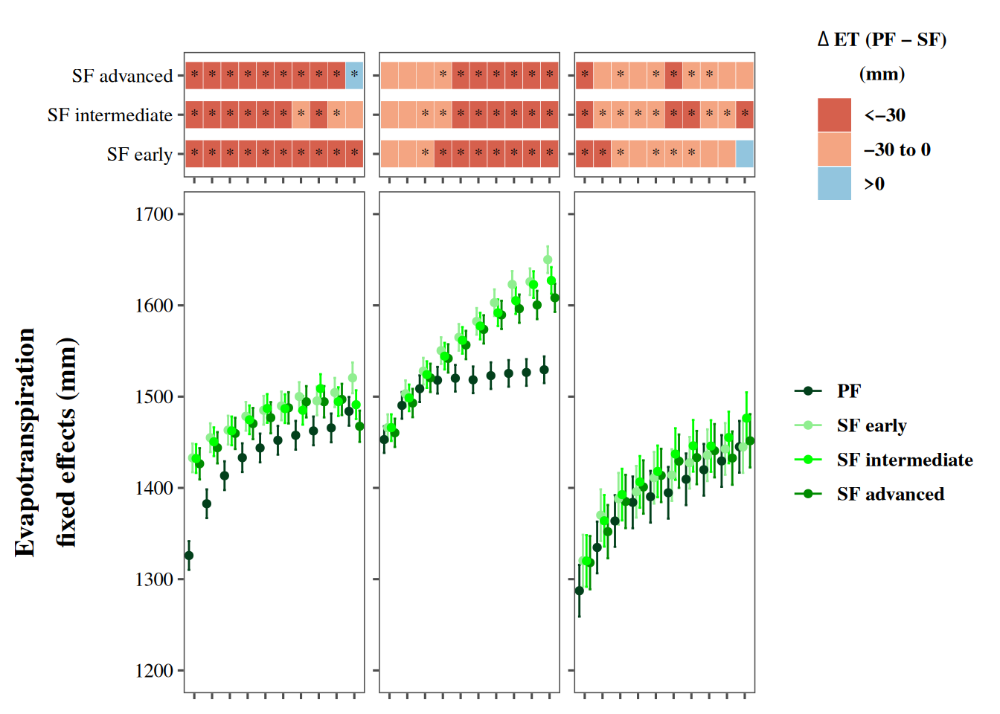
# Salvar
ggsave("fig/fixed_fixed_evapo.png",
plot = final_panel_evapo,
bg = "white", dpi = 600, width = 9, height = 5.5)
gc() used (Mb) gc trigger (Mb) max used (Mb)
Ncells 3808044 203.4 6466207 345.4 6466207 345.4
Vcells 7634195 58.3 14786712 112.9 14786712 112.9Todos os constraste entre frações de área
# Lista de modelos
modelos <- list(CBA = model_CBA_evapo, EBA = model_EBA_evapo, SBA = model_SBA_evapo)
# Função para gerar todos os contrastes PF - SF
get_all_contrasts <- function(model, region_name) {
em <- emmeans(model, ~ ff_area * Tipo)
contrast_res <- contrast(em, method = "revpairwise", adjust = "fdr")
df <- as.data.frame(contrast_res)
df$region <- region_name
return(df)
}
# Aplicar para todas as regiões
all_contrasts_sup <- purrr::map2_dfr(modelos, names(modelos), get_all_contrasts)
str(all_contrasts_sup)Classes 'summary_emm' and 'data.frame': 2340 obs. of 7 variables:
$ contrast: chr "(10-20 PF) - (1-10 PF)" "(20-30 PF) - (1-10 PF)" "(20-30 PF) - (10-20 PF)" "(30-40 PF) - (1-10 PF)" ...
$ estimate: num 56.7 87.5 30.7 107.2 50.5 ...
$ SE : num 6.92 6.92 6.92 6.92 6.92 ...
$ df : num 702 702 702 702 702 ...
$ t.ratio : num 8.19 12.63 4.44 15.48 7.29 ...
$ p.value : num 7.05e-15 5.38e-32 2.40e-05 1.86e-45 3.57e-12 ...
$ region : chr "CBA" "CBA" "CBA" "CBA" ...
- attr(*, "estName")= chr "estimate"
- attr(*, "pri.vars")= chr "contrast"
- attr(*, "adjust")= chr "fdr"
- attr(*, "side")= num 0
- attr(*, "delta")= num 0
- attr(*, "type")= chr "link"
- attr(*, "mesg")= chr [1:2] "Degrees-of-freedom method: kenward-roger" "P value adjustment: fdr method for 780 tests"
- attr(*, "digits")= int 7# Extrair contrastes entre PF e SF
sf_levels <- c("SF_early", "SF_intermediate", "SF_advanced")
all_contrasts_sup <- all_contrasts_sup %>%
filter(str_detect(contrast, "PF") & str_detect(contrast, "SF_"))
# Extrair informações usando regex
# Regex para capturar (faixa tipo) - (faixa tipo)
extr <- str_match(all_contrasts_sup$contrast,
"\\(([^ ]+) ([^)]+)\\) - \\(([^ ]+) ([^)]+)\\)")
# Adicionar colunas extraídas
all_contrasts_sup <- all_contrasts_sup %>%
mutate(
faixa1 = extr[, 2],
tipo1 = extr[, 3],
faixa2 = extr[, 4],
tipo2 = extr[, 5]
) %>%
filter((tipo1 == "PF" & tipo2 %in% sf_levels) | (tipo2 == "PF" & tipo1 %in% sf_levels)) %>%
mutate(
faixa_PF = if_else(tipo1 == "PF", faixa1, faixa2),
faixa_SF = if_else(tipo1 == "PF", faixa2, faixa1),
tipo_SF = if_else(tipo1 == "PF", tipo2, tipo1),
estimate = if_else(tipo1 == "PF", estimate, -estimate), # garantir PF - SF
sig_label = ifelse(p.value < 0.05, "*", "")
)
# Ajustar fatores
faixas_niveis <- c("1-10", "10-20", "20-30", "30-40", "40-50",
"50-60", "60-70", "70-80", "80-90", "90-100")
sf_levels <- c("SF_early", "SF_intermediate", "SF_advanced")
all_contrasts_sup <- all_contrasts_sup %>%
mutate(
faixa_PF = factor(faixa_PF, levels = faixas_niveis),
faixa_SF = factor(faixa_SF, levels = faixas_niveis),
tipo_SF = factor(tipo_SF, levels = sf_levels)
)
# Classificação mantendo sinal
all_contrasts_sup <- all_contrasts_sup %>%
mutate(
tipo_SF = fct_recode(tipo_SF,
"SF early" = "SF_early",
"SF intermediate" = "SF_intermediate",
"SF advanced" = "SF_advanced")
) %>%
mutate(
estimate_class = case_when(
estimate < -100 ~ "<-100",
estimate >= -100 & estimate < 0 ~ "-100–0",
estimate >= 0 & estimate < 100 ~ "0–100",
estimate >= 100 ~ ">100"
),
estimate_class = factor(estimate_class, levels = c("<-100", "-100–0", "0–100", ">100"))
)
# Plot
heatmap_all_contrasts <- ggplot(all_contrasts_sup,
aes(x = faixa_SF, y = faixa_PF, fill = estimate_class)) +
geom_tile(color = "white") +
geom_text(aes(label = sig_label), color = "black", size = 3, family = "serif") +
scale_fill_manual(values = c(
"<-100" = "#D6604D",
"-100–0" = "#F4A582",
"0–100" = "#92C5DE",
">100" = "#4393C3"
), name = expression(bold(atop(Delta~"ET (PF - SF)", "(mm·yr"^{-1}*")"))))+
facet_grid(tipo_SF ~ region) +
theme_minimal(base_family = "serif") +
theme(
text = element_text(size = 12, face = "bold", family = "serif"),
axis.text.x = element_text(angle = 45, hjust = 1),
strip.text = element_text(size = 12, face = "bold"),
axis.text = element_text(size = 10, face = "plain", family = "serif", color = "black")
) +
labs(x = "SF fractional cover (%)",
y = "PF fractional cover (%)")
heatmap_all_contrasts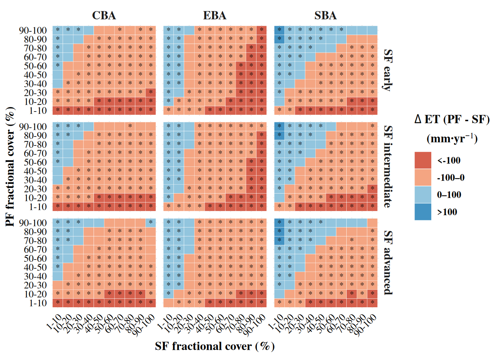
# Salvar
ggsave("fig/supplemental_material/contrastes_fixed_efects_evapo.png", width = 10, height = 8, dpi = 600, bg = "white")
ggsave("fig/supplemental_material/contrastes_fixed_efects_evapo.pdf", width = 10, height = 8, bg = "white")
gc() used (Mb) gc trigger (Mb) max used (Mb)
Ncells 3788782 202.4 6466207 345.4 6466207 345.4
Vcells 7604106 58.1 14786712 112.9 14786712 112.9Random effect
# Função para extrair efeitos aleatórios com IC por região
extract_random_effects <- function(model, region_name) {
# Efeitos aleatórios com variância condicional
ran <- ranef(model, condVar = TRUE)
# Extrair efeitos por ano
ran_df <- as.data.frame(ran$Ano)
names(ran_df) <- "effect"
ran_df$ano <- rownames(ran$Ano)
# Intervalos de confiança (erro padrão)
se <- attr(ran$Ano, "postVar")[1, 1, ] |> sqrt()
ran_df <- ran_df %>%
mutate(
se = se,
lower = effect - 1.96 * se,
upper = effect + 1.96 * se,
region = region_name
)
return(ran_df)
}
# Aplicar para os três modelos (substitua pelos seus objetos reais)
random_cba <- extract_random_effects(model_CBA_evapo, "CBA")
random_eba <- extract_random_effects(model_EBA_evapo, "EBA")
random_sba <- extract_random_effects(model_SBA_evapo, "SBA")
# Combinar tudo
random_all <- bind_rows(random_cba, random_eba, random_sba)
# Garantir que o ano seja ordenável
random_all$ano <- as.numeric(as.character(random_all$ano))
# Salvar
write_xlsx(random_all, "data_group/random_effects_evapo.xlsx")Plot
# Plot
p1_rand_evapo <- ggplot(random_all, aes(x = ano, y = effect)) +
geom_hline(yintercept = 0, linetype = "dashed", color = "gray40") +
geom_bar(stat = "identity", position = "dodge", alpha = 0.8, fill = "green1") +
geom_errorbar(aes(ymin = lower, ymax = upper), width = 0.5, color = "black") +
facet_wrap(~region, scales = "free_x") +
scale_x_continuous(breaks = seq(2001, 2021, by = 2)) +
ggthemes::theme_few() +
theme(
text = element_text(size = 12, face = "bold", family = "serif"),
axis.text = element_text(size = 10, face = "plain", family = "serif", color = "black"),
#axis.text.x = element_text(angle = 45, hjust = 1),
axis.text.x = element_blank(),
axis.title = element_text(size = 14),
#strip.text = element_text(face = "bold", size = 13)) +
strip.text = element_blank()) +
labs(
x = "",
y = expression(bold(atop("Evapotranspiration", "random effects (mm·yr"^{-1}*")")))
)
p1_rand_evapo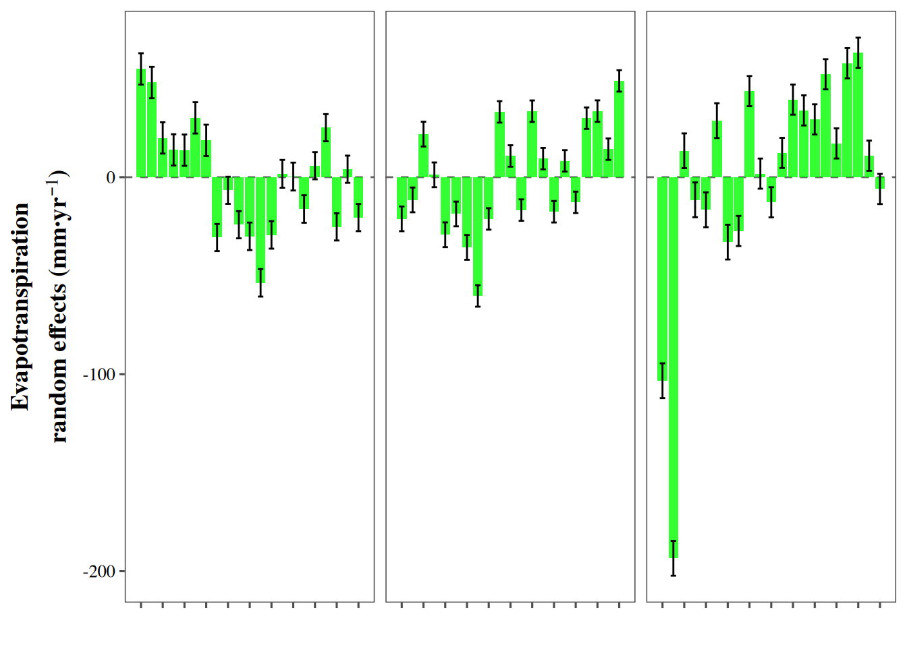
ggsave("fig/histogram_random_evapo.png", bg = "white", dpi = 600, width = 9, height = 5.5)Predicted
R-square for Linear Mixed Model (LMM)
# CBA
r2_cba_evapo = r2_nakagawa(model_CBA_evapo)
r2_cba_evapo_cond <- round(r2_cba_evapo$R2_conditional, 3)
# EBA
r2_eba_evapo = r2_nakagawa(model_EBA_evapo)
r2_eba_evapo_cond <- round(r2_eba_evapo$R2_conditional, 3)
# SBA
r2_sba_evapo = r2_nakagawa(model_SBA_evapo)
r2_sba_evapo_cond <- round(r2_sba_evapo$R2_conditional, 3)CCC de Lins
## CBA
# Obter os valores observados e previstos
observado_cba_evapo <- model_cba_evapo$Evapo
previsto_cba_evapo <- predict(model_CBA_evapo)
ccc_result_cba_evapo <- CCC(observado_cba_evapo , previsto_cba_evapo )
ccc_val_cba_evapo <- round(ccc_result_cba_evapo$rho.c[, "est"], 3)
## EBA
# Obter os valores observados e previstos
observado_eba_evapo <- model_eba_evapo$Evapo
previsto_eba_evapo <- predict(model_EBA_evapo)
ccc_result_eba_evapo <- CCC(observado_eba_evapo , previsto_eba_evapo )
ccc_val_eba_evapo <- round(ccc_result_eba_evapo$rho.c[, "est"], 3)
## SBA
# Obter os valores observados e previstos
observado_sba_evapo <- model_sba_evapo$Evapo
previsto_sba_evapo <- predict(model_SBA_evapo)
ccc_result_sba_evapo <- CCC(observado_sba_evapo , previsto_sba_evapo )
ccc_val_sba_evapo <- round(ccc_result_sba_evapo$rho.c[, "est"], 3)Plot
## CBA
model_cba_evapo$predicted <- predict(model_CBA_evapo, model_cba_evapo)
limite_min <- floor(min(model_cba_evapo$Evapo, model_cba_evapo$predicted, na.rm = TRUE)/ 100) * 100
limite_max <- ceiling(max(model_cba_evapo$Evapo, model_cba_evapo$predicted, na.rm = TRUE)/ 100) * 100
cba_pf = model_cba_evapo |>
ggplot(aes(Evapo,predicted))+
geom_point(size = 2, alpha = .7)+
geom_smooth(method = "lm", se = F, color = "orange")+
theme_minimal()+
theme(legend.position = "top",
legend.text = element_text(size = 16),
text = element_text(size = 16, face = "bold", family = "serif"),
axis.title.y = element_text(margin = margin(r = 10)),
plot.title = element_text(size = 14, face = "bold", family = "serif", hjust = 0.5))+
labs(x = "Observed ET \n (mm·yr⁻¹)",
y = "Predicted ET \n (mm·yr⁻¹)",
title = "",
subtitle = paste("R² = ", r2_cba_evapo_cond,
" | CCC = ", ccc_val_cba_evapo)) +
theme(plot.subtitle = element_text(size = 14, face = "plain", family = "serif"))
## EBA
model_eba_evapo$predicted <- predict(model_EBA_evapo, model_eba_evapo)
limite_min <- floor(min(model_eba_evapo$Evapo, model_eba_evapo$predicted, na.rm = TRUE)/ 100) * 100
limite_max <- ceiling(max(model_eba_evapo$Evapo, model_eba_evapo$predicted, na.rm = TRUE)/ 100) * 100
eba_pf = model_eba_evapo |>
ggplot(aes(Evapo,predicted))+
geom_point(size = 2, alpha = .7)+
geom_smooth(method = "lm", se = F, color = "orange")+
theme_minimal()+
theme(text = element_text(size = 14, face = "bold", family = "serif"),
axis.title.y = element_text(margin = margin(r = 10)),
plot.title = element_text(size = 14, face = "bold", family = "serif", hjust = 0.5))+
labs(x = "Observed ET \n (mm·yr⁻¹)",
y = "",
title = "",
subtitle = paste("R² = ", r2_eba_evapo_cond,
" | CCC = ", ccc_val_eba_evapo)) +
theme(plot.subtitle = element_text(size = 14, face = "plain", family = "serif"))
## SBA
model_sba_evapo$predicted <- predict(model_SBA_evapo, model_sba_evapo)
limite_min <- floor(min(model_sba_evapo$Evapo, model_sba_evapo$predicted, na.rm = TRUE)/ 100) * 100
limite_max <- ceiling(max(model_sba_evapo$Evapo, model_sba_evapo$predicted, na.rm = TRUE)/ 100) * 100
sba_pf = model_sba_evapo |>
ggplot(aes(Evapo,predicted))+
geom_point(size = 2, alpha = .7)+
geom_smooth(method = "lm", se = F, color = "orange")+
theme_minimal()+
theme(text = element_text(size = 14, face = "bold", family = "serif"),
axis.title.y = element_text(margin = margin(r = 10)),
plot.title = element_text(size = 14, face = "bold", family = "serif", hjust = 0.5))+
labs(x = "Observed ET \n (mm·yr⁻¹)",
y = "",
title = "",
subtitle = paste("R² = ", r2_sba_evapo_cond,
" | CCC = ", ccc_val_sba_evapo)) +
theme(plot.subtitle = element_text(size = 14, face = "plain", family = "serif"))Painel
# Função para incluir escalas iguais nos eixos
ajustar_plot <- function(plot) {
plot +
scale_x_continuous(limits = c(limite_min, limite_max), breaks = seq(limite_min, limite_max, by = 100)) +
scale_y_continuous(limits = c(limite_min, limite_max), breaks = seq(limite_min, limite_max, by = 100))
}
# Aplicando a função a cada gráfico
cba_pf <- ajustar_plot(cba_pf)
eba_pf <- ajustar_plot(eba_pf)
sba_pf <- ajustar_plot(sba_pf)
# Juntando todos os plots de evapo
p2_pred_evapo = (cba_pf + eba_pf + sba_pf) +
plot_layout(ncol = 3, nrow = 1, guides = "collect") &
theme(text = element_text(size = 12, face = "bold", family = "serif"), # Texto geral
axis.text = element_text(size = 10, face = "plain", family = "serif"), # Texto dos eixos
axis.text.x = element_text(size = 10, angle = 45, hjust = 1, vjust = 1, family = "serif"))
#axis.text.y = element_text(size = 10, family = "serif")) # Fonte serif no eixo Y
p2_pred_evapo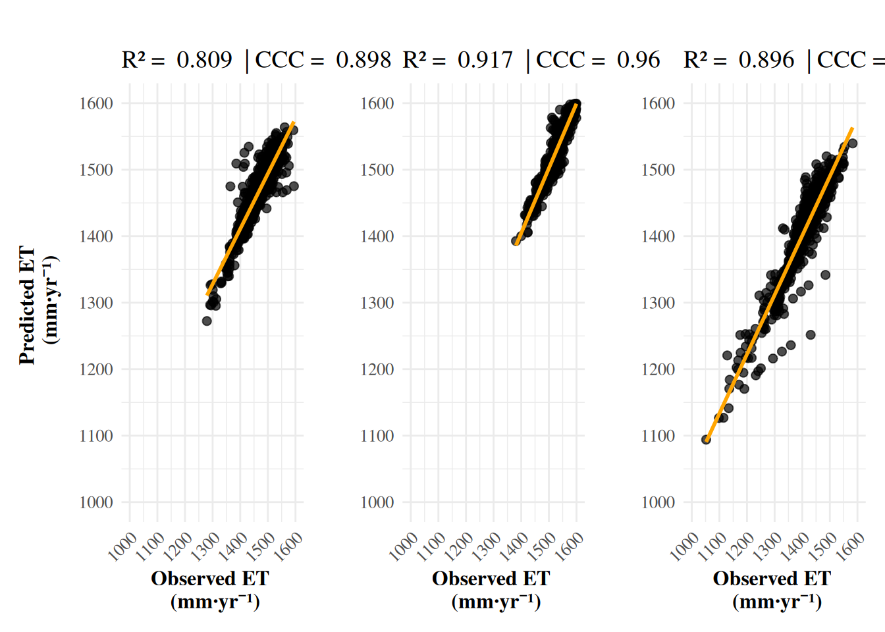
ggsave("fig/supplemental_material/predicted_observed_evapo.png", bg = "white", dpi = 600, width = 12, height = 5.5)Model plotting
CBA
# Juntando os dataframes
model_cba_all_evapo = model_cba_evapo
model_cba_all_evapo[model_cba_all_evapo$ff_area== "1-10",
c("area")]<-1
model_cba_all_evapo[model_cba_all_evapo$ff_area== "10-20",
c("area")]<-2
model_cba_all_evapo[model_cba_all_evapo$ff_area== "20-30",
c("area")]<-3
model_cba_all_evapo[model_cba_all_evapo$ff_area== "30-40",
c("area")]<-4
model_cba_all_evapo[model_cba_all_evapo$ff_area== "40-50",
c("area")]<-5
model_cba_all_evapo[model_cba_all_evapo$ff_area== "50-60",
c("area")]<-6
model_cba_all_evapo[model_cba_all_evapo$ff_area== "60-70",
c("area")]<-7
model_cba_all_evapo[model_cba_all_evapo$ff_area== "70-80",
c("area")]<-8
model_cba_all_evapo[model_cba_all_evapo$ff_area== "80-90",
c("area")]<-9
model_cba_all_evapo[model_cba_all_evapo$ff_area== "90-100",
c("area")]<-10
model_cba_all_evapo[model_cba_all_evapo$type== 1,
c("vegetation")]<-"Primary forest"
model_cba_all_evapo[model_cba_all_evapo$type== 2,
c("vegetation")]<-"Secondary forest"
model_cba_all_evapo[model_cba_all_evapo$type== 1,
c("vegetation")]<-"PF"
model_cba_all_evapo[model_cba_all_evapo$type== 2,
c("vegetation")]<-"SF_early"
model_cba_all_evapo[model_cba_all_evapo$type== 3,
c("vegetation")]<-"SF_intermediate"
model_cba_all_evapo[model_cba_all_evapo$type== 4,
c("vegetation")]<-"SF_advanced"
model_cba_all_evapo# A tibble: 762 × 11
Ano Tipo region ff_area idade Evapo n_obs type predicted area
<dbl> <chr> <chr> <chr> <chr> <dbl> <dbl> <fct> <dbl> <dbl>
1 2001 PF CBA 1-10 <NA> 1370. 27760 1 1381. 1
2 2001 PF CBA 10-20 <NA> 1439. 17635 1 1438. 2
3 2001 PF CBA 20-30 <NA> 1481. 16201 1 1468. 3
4 2001 PF CBA 30-40 <NA> 1509. 16743 1 1488. 4
5 2001 PF CBA 40-50 <NA> 1523. 19083 1 1499. 5
6 2001 PF CBA 50-60 <NA> 1536. 22596 1 1507. 6
7 2001 PF CBA 60-70 <NA> 1547. 26448 1 1513. 7
8 2001 PF CBA 70-80 <NA> 1555. 32912 1 1517. 8
9 2001 PF CBA 80-90 <NA> 1562. 44871 1 1521. 9
10 2001 PF CBA 90-100 <NA> 1573. 778619 1 1539. 10
# ℹ 752 more rows
# ℹ 1 more variable: vegetation <chr># Reordenar os níveis de 'Tipo'
model_cba_all_evapo <- model_cba_all_evapo %>%
mutate(vegetation = factor(vegetation, levels = c("PF", "SF_early", "SF_intermediate", "SF_advanced")))
model_cba_all_evapo %>%
ggplot(aes(x = area*10, y = Evapo))+
theme_bw()+
geom_point(aes(x = area*10, y = Evapo, color = vegetation)) +
geom_line(aes(y = predicted, group = vegetation, color = vegetation), size = 1)+
scale_color_manual(values = c("darkgreen", "#ACD39E", "#5AAE61", "#1B7837"),
name = NULL,
labels = c("PF", "SF early", "SF intermediate", "SF advanced")) +
scale_fill_manual(values = c("darkgreen", "#ACD39E", "#5AAE61", "#1B7837"),
name = NULL,
labels = c("PF", "SF early", "SF intermediate", "SF advanced")) +
scale_y_continuous(breaks = seq(1200, 1600, by = 100)) +
ggthemes::theme_few() +
facet_wrap(~Ano, nrow = 4, ncol = 6) +
labs(x = "Fractional forest coverage (%)",
y = "Predicted evapotranspiration (mm·yr⁻¹) - CBA",
color = "") +
theme(legend.position = "top",
text = element_text(family = "serif"),
axis.title = element_text(size = 16, face = "bold"),
strip.text = element_text(face = "bold", size = 12),
legend.text = element_text(size = 14, face = "bold"), # Tamanho do texto da legenda
legend.title = element_text(face = "bold", size = 14),
plot.title = element_text(size = 14, face = "bold", hjust = 0.5), # Centraliza título
axis.text = element_text(size = 12))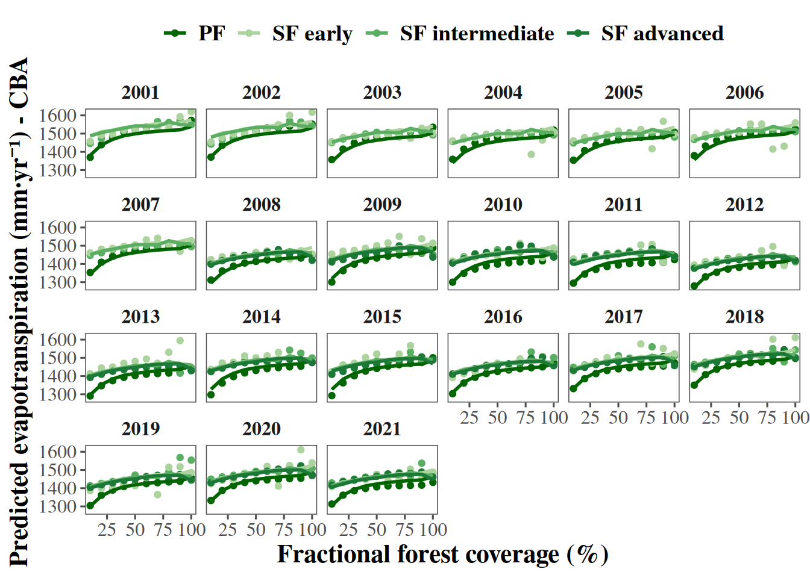
ggsave("fig/supplemental_material/predicted_evapo_CBA.png", bg = "white", dpi = 600, width = 10, height = 8)EBA
model_eba_all_evapo = model_eba_evapo
model_eba_all_evapo[model_eba_all_evapo$ff_area== "1-10",
c("area")]<-1
model_eba_all_evapo[model_eba_all_evapo$ff_area== "10-20",
c("area")]<-2
model_eba_all_evapo[model_eba_all_evapo$ff_area== "20-30",
c("area")]<-3
model_eba_all_evapo[model_eba_all_evapo$ff_area== "30-40",
c("area")]<-4
model_eba_all_evapo[model_eba_all_evapo$ff_area== "40-50",
c("area")]<-5
model_eba_all_evapo[model_eba_all_evapo$ff_area== "50-60",
c("area")]<-6
model_eba_all_evapo[model_eba_all_evapo$ff_area== "60-70",
c("area")]<-7
model_eba_all_evapo[model_eba_all_evapo$ff_area== "70-80",
c("area")]<-8
model_eba_all_evapo[model_eba_all_evapo$ff_area== "80-90",
c("area")]<-9
model_eba_all_evapo[model_eba_all_evapo$ff_area== "90-100",
c("area")]<-10
model_eba_all_evapo[model_eba_all_evapo$type== 1,
c("vegetation")]<-"PF"
model_eba_all_evapo[model_eba_all_evapo$type== 2,
c("vegetation")]<-"SF_early"
model_eba_all_evapo[model_eba_all_evapo$type== 3,
c("vegetation")]<-"SF_intermediate"
model_eba_all_evapo[model_eba_all_evapo$type== 4,
c("vegetation")]<-"SF_advanced"
model_eba_all_evapo# A tibble: 770 × 11
Ano Tipo region ff_area idade Evapo n_obs type predicted area
<dbl> <chr> <chr> <chr> <chr> <dbl> <dbl> <fct> <dbl> <dbl>
1 2001 PF EBA 1-10 <NA> 1413. 21270 1 1432. 1
2 2001 PF EBA 10-20 <NA> 1453. 15527 1 1469. 2
3 2001 PF EBA 20-30 <NA> 1477. 15274 1 1488. 3
4 2001 PF EBA 30-40 <NA> 1492. 16874 1 1497. 4
5 2001 PF EBA 40-50 <NA> 1503. 20651 1 1499. 5
6 2001 PF EBA 50-60 <NA> 1510. 25748 1 1497. 6
7 2001 PF EBA 60-70 <NA> 1522. 27349 1 1502. 7
8 2001 PF EBA 70-80 <NA> 1530. 30766 1 1504. 8
9 2001 PF EBA 80-90 <NA> 1534. 39961 1 1505. 9
10 2001 PF EBA 90-100 <NA> 1542. 450275 1 1508. 10
# ℹ 760 more rows
# ℹ 1 more variable: vegetation <chr># Reordenar os níveis de 'Tipo'
model_eba_all_evapo <- model_eba_all_evapo %>%
mutate(vegetation = factor(vegetation, levels = c("PF", "SF_early", "SF_intermediate", "SF_advanced")))
model_eba_all_evapo %>%
ggplot(aes(x = area*10, y = Evapo))+
theme_bw()+
geom_point(aes(x = area*10, y = Evapo, color = vegetation)) +
geom_line(aes(y = predicted, group = vegetation, color = vegetation), size = 1)+
scale_color_manual(values = c("darkgreen", "#ACD39E", "#5AAE61", "#1B7837"),
name = NULL,
labels = c("PF", "SF early", "SF intermediate", "SF advanced")) +
scale_fill_manual(values = c("darkgreen", "#ACD39E", "#5AAE61", "#1B7837"),
name = NULL,
labels = c("PF", "SF early", "SF intermediate", "SF advanced")) +
scale_y_continuous(breaks = seq(1300, 1700, by = 100)) +
ggthemes::theme_few() +
facet_wrap(~Ano, nrow = 4, ncol = 6) +
labs(x = "Fractional forest coverage (%)",
y = "Predicted evapotranspiration (mm·yr⁻¹) - EBA",
color = "") +
theme(legend.position = "top",
text = element_text(family = "serif"),
axis.title = element_text(size = 16, face = "bold"),
strip.text = element_text(face = "bold", size = 12),
legend.text = element_text(size = 14, face = "bold"), # Tamanho do texto da legenda
legend.title = element_text(face = "bold", size = 14),
plot.title = element_text(size = 14, face = "bold", hjust = 0.5), # Centraliza título
axis.text = element_text(size = 12))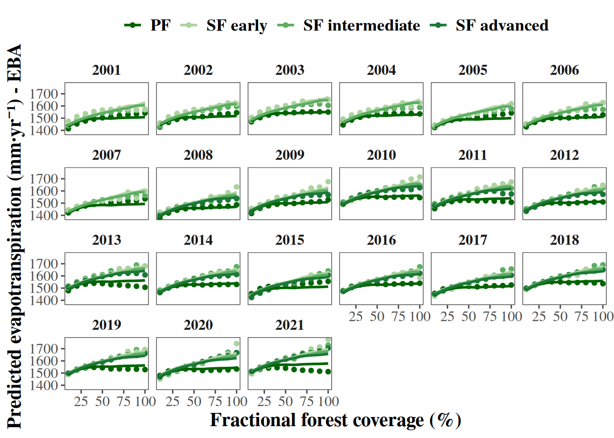
ggsave("fig/supplemental_material/predicted_evapo_EBA.png", bg = "white",
dpi = 600, width = 10, height = 8)SBA
model_sba_all_evapo = model_sba_evapo
model_sba_all_evapo[model_sba_all_evapo$ff_area== "1-10",
c("area")]<-1
model_sba_all_evapo[model_sba_all_evapo$ff_area== "10-20",
c("area")]<-2
model_sba_all_evapo[model_sba_all_evapo$ff_area== "20-30",
c("area")]<-3
model_sba_all_evapo[model_sba_all_evapo$ff_area== "30-40",
c("area")]<-4
model_sba_all_evapo[model_sba_all_evapo$ff_area== "40-50",
c("area")]<-5
model_sba_all_evapo[model_sba_all_evapo$ff_area== "50-60",
c("area")]<-6
model_sba_all_evapo[model_sba_all_evapo$ff_area== "60-70",
c("area")]<-7
model_sba_all_evapo[model_sba_all_evapo$ff_area== "70-80",
c("area")]<-8
model_sba_all_evapo[model_sba_all_evapo$ff_area== "80-90",
c("area")]<-9
model_sba_all_evapo[model_sba_all_evapo$ff_area== "90-100",
c("area")]<-10
model_sba_all_evapo[model_sba_all_evapo$type== 1,
c("vegetation")]<-"PF"
model_sba_all_evapo[model_sba_all_evapo$type== 2,
c("vegetation")]<-"SF_early"
model_sba_all_evapo[model_sba_all_evapo$type== 3,
c("vegetation")]<-"SF_intermediate"
model_sba_all_evapo[model_sba_all_evapo$type== 4,
c("vegetation")]<-"SF_advanced"
model_sba_all_evapo# A tibble: 770 × 11
Ano Tipo region ff_area idade Evapo n_obs type predicted area
<dbl> <chr> <chr> <chr> <chr> <dbl> <dbl> <fct> <dbl> <dbl>
1 2001 PF SBA 1-10 <NA> 1137. 24433 1 1184. 1
2 2001 PF SBA 10-20 <NA> 1216. 18391 1 1231. 2
3 2001 PF SBA 20-30 <NA> 1268. 17272 1 1260. 3
4 2001 PF SBA 30-40 <NA> 1308. 18934 1 1281. 4
5 2001 PF SBA 40-50 <NA> 1317. 25235 1 1287. 5
6 2001 PF SBA 50-60 <NA> 1331. 38691 1 1291. 6
7 2001 PF SBA 60-70 <NA> 1367. 41811 1 1306. 7
8 2001 PF SBA 70-80 <NA> 1395. 48986 1 1317. 8
9 2001 PF SBA 80-90 <NA> 1423. 65815 1 1326. 9
10 2001 PF SBA 90-100 <NA> 1484. 969357 1 1342. 10
# ℹ 760 more rows
# ℹ 1 more variable: vegetation <chr># Reordenar os níveis de 'Tipo'
model_sba_all_evapo <- model_sba_all_evapo %>%
mutate(vegetation = factor(vegetation, levels = c("PF", "SF_early", "SF_intermediate", "SF_advanced")))
model_sba_all_evapo %>%
ggplot(aes(x = area*10, y = Evapo))+
theme_bw()+
geom_point(aes(x = area*10, y = Evapo, color = vegetation)) +
geom_line(aes(y = predicted, group = vegetation, color = vegetation), size = 1)+
scale_color_manual(values = c("darkgreen", "#ACD39E", "#5AAE61", "#1B7837"),
name = NULL,
labels = c("PF", "SF early", "SF intermediate", "SF advanced")) +
scale_fill_manual(values = c("darkgreen", "#ACD39E", "#5AAE61", "#1B7837"),
name = NULL,
labels = c("PF", "SF early", "SF intermediate", "SF advanced")) +
scale_y_continuous(breaks = seq(1000, 1600, by = 150)) +
ggthemes::theme_few() +
facet_wrap(~Ano, nrow = 4, ncol = 6) +
labs(x = "Fractional forest coverage (%)",
y = "Predicted evapotranspiration (mm·yr⁻¹) - SBA",
color = "") +
theme(legend.position = "top",
text = element_text(family = "serif"),
axis.title = element_text(size = 16, face = "bold"),
strip.text = element_text(face = "bold", size = 12),
legend.text = element_text(size = 14, face = "bold"), # Tamanho do texto da legenda
legend.title = element_text(face = "bold", size = 14),
plot.title = element_text(size = 14, face = "bold", hjust = 0.5), # Centraliza título
axis.text = element_text(size = 12))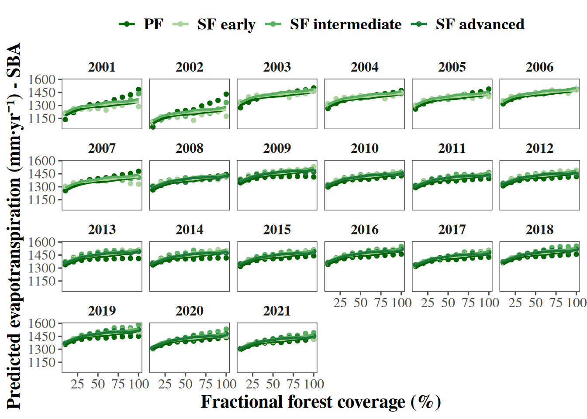
ggsave("fig/supplemental_material/predicted_evapo_SBA.png", bg = "white",
dpi = 600, width = 10, height = 8)TEMPERATURE
Model choice
all_pf_sf_temp_model = read_xlsx("data_group/plan_data_group_temp.xlsx")
## CBA
model_cba_temp = all_pf_sf_temp_model %>%
filter(region == "CBA")
model_cba_temp$type = as.factor(model_cba_temp$type)
## EBA
model_eba_temp = all_pf_sf_temp_model %>%
filter(region == "EBA")
model_eba_temp$type = as.factor(model_eba_temp$type)
## SBA
model_sba_temp = all_pf_sf_temp_model %>%
filter(region == "SBA")
model_sba_temp$type = as.factor(model_sba_temp$type)Fixed effect
# Modelo com interação frac_area e classe florestal
## CBA
model_CBA_temp <- lmerTest::lmer(Temp ~ ff_area*Tipo +
(1 | Ano), data = model_cba_temp)
#EBA
model_EBA_temp = lmerTest::lmer(Temp ~ ff_area*Tipo +
(1|Ano), data = model_eba_temp)
##SBA
model_SBA_temp = lmerTest::lmer(Temp ~ ff_area*Tipo +
(1|Ano), data = model_sba_temp)
#
summary(model_CBA_temp)Linear mixed model fit by REML. t-tests use Satterthwaite's method [
lmerModLmerTest]
Formula: Temp ~ ff_area * Tipo + (1 | Ano)
Data: model_cba_temp
REML criterion at convergence: -595.1
Scaled residuals:
Min 1Q Median 3Q Max
-4.7290 -0.4856 -0.0547 0.4345 5.4511
Random effects:
Groups Name Variance Std.Dev.
Ano (Intercept) 0.10801 0.3287
Residual 0.01883 0.1372
Number of obs: 762, groups: Ano, 21
Fixed effects:
Estimate Std. Error df t value
(Intercept) 26.12618 0.07772 27.29200 336.163
ff_area10-20 -0.25207 0.04235 702.00072 -5.952
ff_area20-30 -0.40435 0.04235 702.00072 -9.548
ff_area30-40 -0.49999 0.04235 702.00072 -11.806
ff_area40-50 -0.57668 0.04235 702.00072 -13.617
ff_area50-60 -0.61701 0.04235 702.00072 -14.569
ff_area60-70 -0.68410 0.04235 702.00072 -16.153
ff_area70-80 -0.75086 0.04235 702.00072 -17.730
ff_area80-90 -0.81077 0.04235 702.00072 -19.144
ff_area90-100 -1.21589 0.04235 702.00072 -28.710
TipoSF_advanced -0.24780 0.04751 702.05531 -5.216
TipoSF_early -0.24126 0.04235 702.00072 -5.697
TipoSF_intermediate -0.27898 0.04235 702.00072 -6.587
ff_area10-20:TipoSF_advanced 0.31366 0.06696 702.00072 4.684
ff_area20-30:TipoSF_advanced 0.44590 0.06696 702.00072 6.659
ff_area30-40:TipoSF_advanced 0.51688 0.06696 702.00072 7.719
ff_area40-50:TipoSF_advanced 0.55593 0.06696 702.00072 8.302
ff_area50-60:TipoSF_advanced 0.50558 0.06696 702.00072 7.550
ff_area60-70:TipoSF_advanced 0.50587 0.06696 702.00072 7.555
ff_area70-80:TipoSF_advanced 0.52794 0.06696 702.00072 7.884
ff_area80-90:TipoSF_advanced 0.51598 0.06696 702.00072 7.706
ff_area90-100:TipoSF_advanced 0.63618 0.06696 702.00072 9.501
ff_area10-20:TipoSF_early 0.19201 0.05989 702.00072 3.206
ff_area20-30:TipoSF_early 0.30851 0.05989 702.00072 5.151
ff_area30-40:TipoSF_early 0.30457 0.05989 702.00072 5.085
ff_area40-50:TipoSF_early 0.34029 0.05989 702.00072 5.682
ff_area50-60:TipoSF_early 0.39857 0.05989 702.00072 6.655
ff_area60-70:TipoSF_early 0.43609 0.05989 702.00072 7.281
ff_area70-80:TipoSF_early 0.50415 0.05989 702.00072 8.418
ff_area80-90:TipoSF_early 0.26593 0.06070 702.00522 4.381
ff_area90-100:TipoSF_early 0.93924 0.06289 702.01780 14.934
ff_area10-20:TipoSF_intermediate 0.27376 0.05989 702.00072 4.571
ff_area20-30:TipoSF_intermediate 0.39718 0.05989 702.00072 6.631
ff_area30-40:TipoSF_intermediate 0.44075 0.05989 702.00072 7.359
ff_area40-50:TipoSF_intermediate 0.47626 0.05989 702.00072 7.952
ff_area50-60:TipoSF_intermediate 0.44060 0.05989 702.00072 7.357
ff_area60-70:TipoSF_intermediate 0.43350 0.05989 702.00072 7.238
ff_area70-80:TipoSF_intermediate 0.54898 0.05989 702.00072 9.166
ff_area80-90:TipoSF_intermediate 0.48661 0.05989 702.00072 8.125
ff_area90-100:TipoSF_intermediate 0.77721 0.05989 702.00072 12.977
Pr(>|t|)
(Intercept) < 2e-16 ***
ff_area10-20 4.18e-09 ***
ff_area20-30 < 2e-16 ***
ff_area30-40 < 2e-16 ***
ff_area40-50 < 2e-16 ***
ff_area50-60 < 2e-16 ***
ff_area60-70 < 2e-16 ***
ff_area70-80 < 2e-16 ***
ff_area80-90 < 2e-16 ***
ff_area90-100 < 2e-16 ***
TipoSF_advanced 2.41e-07 ***
TipoSF_early 1.80e-08 ***
TipoSF_intermediate 8.78e-11 ***
ff_area10-20:TipoSF_advanced 3.38e-06 ***
ff_area20-30:TipoSF_advanced 5.56e-11 ***
ff_area30-40:TipoSF_advanced 4.04e-14 ***
ff_area40-50:TipoSF_advanced 5.24e-16 ***
ff_area50-60:TipoSF_advanced 1.35e-13 ***
ff_area60-70:TipoSF_advanced 1.31e-13 ***
ff_area70-80:TipoSF_advanced 1.21e-14 ***
ff_area80-90:TipoSF_advanced 4.45e-14 ***
ff_area90-100:TipoSF_advanced < 2e-16 ***
ff_area10-20:TipoSF_early 0.00141 **
ff_area20-30:TipoSF_early 3.37e-07 ***
ff_area30-40:TipoSF_early 4.72e-07 ***
ff_area40-50:TipoSF_early 1.96e-08 ***
ff_area50-60:TipoSF_early 5.72e-11 ***
ff_area60-70:TipoSF_early 8.89e-13 ***
ff_area70-80:TipoSF_early < 2e-16 ***
ff_area80-90:TipoSF_early 1.36e-05 ***
ff_area90-100:TipoSF_early < 2e-16 ***
ff_area10-20:TipoSF_intermediate 5.74e-06 ***
ff_area20-30:TipoSF_intermediate 6.63e-11 ***
ff_area30-40:TipoSF_intermediate 5.19e-13 ***
ff_area40-50:TipoSF_intermediate 7.35e-15 ***
ff_area50-60:TipoSF_intermediate 5.28e-13 ***
ff_area60-70:TipoSF_intermediate 1.20e-12 ***
ff_area70-80:TipoSF_intermediate < 2e-16 ***
ff_area80-90:TipoSF_intermediate 2.02e-15 ***
ff_area90-100:TipoSF_intermediate < 2e-16 ***
---
Signif. codes: 0 '***' 0.001 '**' 0.01 '*' 0.05 '.' 0.1 ' ' 1summary(model_EBA_temp)Linear mixed model fit by REML. t-tests use Satterthwaite's method [
lmerModLmerTest]
Formula: Temp ~ ff_area * Tipo + (1 | Ano)
Data: model_eba_temp
REML criterion at convergence: -1568.7
Scaled residuals:
Min 1Q Median 3Q Max
-3.5726 -0.6234 -0.0874 0.5738 3.6643
Random effects:
Groups Name Variance Std.Dev.
Ano (Intercept) 0.106372 0.32615
Residual 0.004839 0.06956
Number of obs: 770, groups: Ano, 21
Fixed effects:
Estimate Std. Error df t value
(Intercept) 25.71133 0.07277 21.80133 353.314
ff_area10-20 -0.16286 0.02147 709.99718 -7.587
ff_area20-30 -0.24849 0.02147 709.99718 -11.575
ff_area30-40 -0.30165 0.02147 709.99718 -14.051
ff_area40-50 -0.31824 0.02147 709.99718 -14.824
ff_area50-60 -0.35220 0.02147 709.99718 -16.406
ff_area60-70 -0.46449 0.02147 709.99718 -21.637
ff_area70-80 -0.58037 0.02147 709.99718 -27.035
ff_area80-90 -0.71627 0.02147 709.99718 -33.366
ff_area90-100 -1.21027 0.02147 709.99718 -56.377
TipoSF_advanced 0.17435 0.02408 710.01141 7.240
TipoSF_early 0.14753 0.02147 709.99718 6.872
TipoSF_intermediate 0.14441 0.02147 709.99718 6.727
ff_area10-20:TipoSF_advanced 0.07234 0.03394 709.99718 2.131
ff_area20-30:TipoSF_advanced 0.06415 0.03394 709.99718 1.890
ff_area30-40:TipoSF_advanced 0.07235 0.03394 709.99718 2.132
ff_area40-50:TipoSF_advanced 0.05104 0.03394 709.99718 1.504
ff_area50-60:TipoSF_advanced 0.05572 0.03394 709.99718 1.642
ff_area60-70:TipoSF_advanced 0.10569 0.03394 709.99718 3.114
ff_area70-80:TipoSF_advanced 0.14058 0.03394 709.99718 4.142
ff_area80-90:TipoSF_advanced 0.16410 0.03394 709.99718 4.835
ff_area90-100:TipoSF_advanced 0.49266 0.03394 709.99718 14.514
ff_area10-20:TipoSF_early 0.07325 0.03036 709.99718 2.413
ff_area20-30:TipoSF_early 0.11511 0.03036 709.99718 3.791
ff_area30-40:TipoSF_early 0.11570 0.03036 709.99718 3.811
ff_area40-50:TipoSF_early 0.07443 0.03036 709.99718 2.452
ff_area50-60:TipoSF_early 0.08682 0.03036 709.99718 2.860
ff_area60-70:TipoSF_early 0.13457 0.03036 709.99718 4.432
ff_area70-80:TipoSF_early 0.19891 0.03036 709.99718 6.552
ff_area80-90:TipoSF_early 0.26452 0.03036 709.99718 8.713
ff_area90-100:TipoSF_early 0.66893 0.03036 709.99718 22.034
ff_area10-20:TipoSF_intermediate 0.09705 0.03036 709.99718 3.197
ff_area20-30:TipoSF_intermediate 0.13039 0.03036 709.99718 4.295
ff_area30-40:TipoSF_intermediate 0.14361 0.03036 709.99718 4.730
ff_area40-50:TipoSF_intermediate 0.11664 0.03036 709.99718 3.842
ff_area50-60:TipoSF_intermediate 0.11229 0.03036 709.99718 3.699
ff_area60-70:TipoSF_intermediate 0.15586 0.03036 709.99718 5.134
ff_area70-80:TipoSF_intermediate 0.21491 0.03036 709.99718 7.079
ff_area80-90:TipoSF_intermediate 0.22936 0.03036 709.99718 7.555
ff_area90-100:TipoSF_intermediate 0.61586 0.03036 709.99718 20.286
Pr(>|t|)
(Intercept) < 2e-16 ***
ff_area10-20 1.03e-13 ***
ff_area20-30 < 2e-16 ***
ff_area30-40 < 2e-16 ***
ff_area40-50 < 2e-16 ***
ff_area50-60 < 2e-16 ***
ff_area60-70 < 2e-16 ***
ff_area70-80 < 2e-16 ***
ff_area80-90 < 2e-16 ***
ff_area90-100 < 2e-16 ***
TipoSF_advanced 1.17e-12 ***
TipoSF_early 1.38e-11 ***
TipoSF_intermediate 3.57e-11 ***
ff_area10-20:TipoSF_advanced 0.033424 *
ff_area20-30:TipoSF_advanced 0.059179 .
ff_area30-40:TipoSF_advanced 0.033383 *
ff_area40-50:TipoSF_advanced 0.133127
ff_area50-60:TipoSF_advanced 0.101128
ff_area60-70:TipoSF_advanced 0.001921 **
ff_area70-80:TipoSF_advanced 3.86e-05 ***
ff_area80-90:TipoSF_advanced 1.64e-06 ***
ff_area90-100:TipoSF_advanced < 2e-16 ***
ff_area10-20:TipoSF_early 0.016086 *
ff_area20-30:TipoSF_early 0.000163 ***
ff_area30-40:TipoSF_early 0.000150 ***
ff_area40-50:TipoSF_early 0.014465 *
ff_area50-60:TipoSF_early 0.004364 **
ff_area60-70:TipoSF_early 1.08e-05 ***
ff_area70-80:TipoSF_early 1.09e-10 ***
ff_area80-90:TipoSF_early < 2e-16 ***
ff_area90-100:TipoSF_early < 2e-16 ***
ff_area10-20:TipoSF_intermediate 0.001452 **
ff_area20-30:TipoSF_intermediate 1.99e-05 ***
ff_area30-40:TipoSF_intermediate 2.71e-06 ***
ff_area40-50:TipoSF_intermediate 0.000133 ***
ff_area50-60:TipoSF_intermediate 0.000234 ***
ff_area60-70:TipoSF_intermediate 3.67e-07 ***
ff_area70-80:TipoSF_intermediate 3.50e-12 ***
ff_area80-90:TipoSF_intermediate 1.30e-13 ***
ff_area90-100:TipoSF_intermediate < 2e-16 ***
---
Signif. codes: 0 '***' 0.001 '**' 0.01 '*' 0.05 '.' 0.1 ' ' 1summary(model_SBA_temp)Linear mixed model fit by REML. t-tests use Satterthwaite's method [
lmerModLmerTest]
Formula: Temp ~ ff_area * Tipo + (1 | Ano)
Data: model_sba_temp
REML criterion at convergence: -1169.7
Scaled residuals:
Min 1Q Median 3Q Max
-3.4612 -0.4850 -0.0508 0.4631 5.7618
Random effects:
Groups Name Variance Std.Dev.
Ano (Intercept) 0.138488 0.37214
Residual 0.008426 0.09179
Number of obs: 770, groups: Ano, 21
Fixed effects:
Estimate Std. Error df t value
(Intercept) 25.626729 0.083641 22.425134 306.388
ff_area10-20 -0.201679 0.028327 709.996386 -7.120
ff_area20-30 -0.341109 0.028327 709.996386 -12.042
ff_area30-40 -0.409049 0.028327 709.996386 -14.440
ff_area40-50 -0.361720 0.028327 709.996386 -12.769
ff_area50-60 -0.341179 0.028327 709.996386 -12.044
ff_area60-70 -0.457271 0.028327 709.996386 -16.142
ff_area70-80 -0.566951 0.028327 709.996386 -20.014
ff_area80-90 -0.677055 0.028327 709.996386 -23.901
ff_area90-100 -1.039412 0.028327 709.996386 -36.693
TipoSF_advanced 0.145919 0.031776 710.015413 4.592
TipoSF_early 0.227895 0.028327 709.996386 8.045
TipoSF_intermediate 0.185522 0.028327 709.996386 6.549
ff_area10-20:TipoSF_advanced 0.149795 0.044790 709.996387 3.344
ff_area20-30:TipoSF_advanced 0.174131 0.044790 709.996387 3.888
ff_area30-40:TipoSF_advanced 0.153148 0.044790 709.996387 3.419
ff_area40-50:TipoSF_advanced 0.004993 0.044790 709.996387 0.111
ff_area50-60:TipoSF_advanced -0.087730 0.044790 709.996387 -1.959
ff_area60-70:TipoSF_advanced -0.076380 0.044790 709.996387 -1.705
ff_area70-80:TipoSF_advanced -0.269983 0.044790 709.996387 -6.028
ff_area80-90:TipoSF_advanced -0.174333 0.044790 709.996387 -3.892
ff_area90-100:TipoSF_advanced -0.107272 0.044790 709.996387 -2.395
ff_area10-20:TipoSF_early -0.011381 0.040061 709.996386 -0.284
ff_area20-30:TipoSF_early -0.047688 0.040061 709.996386 -1.190
ff_area30-40:TipoSF_early -0.131022 0.040061 709.996386 -3.271
ff_area40-50:TipoSF_early -0.267265 0.040061 709.996386 -6.671
ff_area50-60:TipoSF_early -0.399461 0.040061 709.996386 -9.971
ff_area60-70:TipoSF_early -0.358222 0.040061 709.996386 -8.942
ff_area70-80:TipoSF_early -0.395121 0.040061 709.996386 -9.863
ff_area80-90:TipoSF_early -0.364720 0.040061 709.996386 -9.104
ff_area90-100:TipoSF_early -0.158672 0.040061 709.996386 -3.961
ff_area10-20:TipoSF_intermediate 0.111924 0.040061 709.996386 2.794
ff_area20-30:TipoSF_intermediate 0.155560 0.040061 709.996386 3.883
ff_area30-40:TipoSF_intermediate 0.099108 0.040061 709.996386 2.474
ff_area40-50:TipoSF_intermediate -0.059166 0.040061 709.996386 -1.477
ff_area50-60:TipoSF_intermediate -0.130480 0.040061 709.996386 -3.257
ff_area60-70:TipoSF_intermediate -0.137426 0.040061 709.996386 -3.430
ff_area70-80:TipoSF_intermediate -0.157523 0.040061 709.996386 -3.932
ff_area80-90:TipoSF_intermediate -0.186971 0.040061 709.996386 -4.667
ff_area90-100:TipoSF_intermediate 0.017181 0.040061 709.996386 0.429
Pr(>|t|)
(Intercept) < 2e-16 ***
ff_area10-20 2.66e-12 ***
ff_area20-30 < 2e-16 ***
ff_area30-40 < 2e-16 ***
ff_area40-50 < 2e-16 ***
ff_area50-60 < 2e-16 ***
ff_area60-70 < 2e-16 ***
ff_area70-80 < 2e-16 ***
ff_area80-90 < 2e-16 ***
ff_area90-100 < 2e-16 ***
TipoSF_advanced 5.19e-06 ***
TipoSF_early 3.62e-15 ***
TipoSF_intermediate 1.11e-10 ***
ff_area10-20:TipoSF_advanced 0.000868 ***
ff_area20-30:TipoSF_advanced 0.000111 ***
ff_area30-40:TipoSF_advanced 0.000664 ***
ff_area40-50:TipoSF_advanced 0.911271
ff_area50-60:TipoSF_advanced 0.050537 .
ff_area60-70:TipoSF_advanced 0.088574 .
ff_area70-80:TipoSF_advanced 2.67e-09 ***
ff_area80-90:TipoSF_advanced 0.000109 ***
ff_area90-100:TipoSF_advanced 0.016877 *
ff_area10-20:TipoSF_early 0.776417
ff_area20-30:TipoSF_early 0.234288
ff_area30-40:TipoSF_early 0.001125 **
ff_area40-50:TipoSF_early 5.10e-11 ***
ff_area50-60:TipoSF_early < 2e-16 ***
ff_area60-70:TipoSF_early < 2e-16 ***
ff_area70-80:TipoSF_early < 2e-16 ***
ff_area80-90:TipoSF_early < 2e-16 ***
ff_area90-100:TipoSF_early 8.22e-05 ***
ff_area10-20:TipoSF_intermediate 0.005349 **
ff_area20-30:TipoSF_intermediate 0.000113 ***
ff_area30-40:TipoSF_intermediate 0.013596 *
ff_area40-50:TipoSF_intermediate 0.140147
ff_area50-60:TipoSF_intermediate 0.001179 **
ff_area60-70:TipoSF_intermediate 0.000638 ***
ff_area70-80:TipoSF_intermediate 9.25e-05 ***
ff_area80-90:TipoSF_intermediate 3.65e-06 ***
ff_area90-100:TipoSF_intermediate 0.668141
---
Signif. codes: 0 '***' 0.001 '**' 0.01 '*' 0.05 '.' 0.1 ' ' 1#
BIC(model_CBA_temp)[1] -316.3754BIC(model_EBA_temp)[1] -1289.559BIC(model_SBA_temp)[1] -890.516#
predict(model_CBA_temp) 1 2 3 4 5 6 7 8
25.89006 25.63799 25.48570 25.39007 25.31337 25.27305 25.20596 25.13920
9 10 11 12 13 14 15 16
25.07929 24.67417 25.61108 25.64880 25.63277 25.58874 25.60390 25.55296
17 18 19 20 21 22 23 24
25.55183 25.45338 25.51065 25.41240 25.43467 25.43036 25.36047 25.40079
25 26 27 28 29 30 31 32
25.40919 25.40208 25.28692 25.10396 25.17240 25.37215 26.16981 25.91774
33 34 35 36 37 38 39 40
25.76546 25.66982 25.59313 25.55280 25.48571 25.41895 25.35904 24.95392
41 42 43 44 45 46 47 48
25.89083 25.92855 25.91252 25.86849 25.88365 25.83271 25.83159 25.73313
49 50 51 52 53 54 55 56
25.79040 25.69216 25.71442 25.71011 25.64023 25.68055 25.68894 25.68184
57 58 59 60 61 62 63 64
25.56667 25.38371 25.45216 25.65190 25.82933 25.57726 25.42497 25.32934
65 66 67 68 69 70 71 72
25.25264 25.21231 25.14523 25.07846 25.01856 24.61344 25.55034 25.58807
73 74 75 76 77 78 79 80
25.57204 25.52800 25.54317 25.49223 25.49110 25.39264 25.44992 25.35167
81 82 83 84 85 86 87 88
25.37394 25.36963 25.29974 25.34006 25.34846 25.34135 25.22619 25.04323
89 90 91 92 93 94 95 96
25.11167 25.31142 25.68320 25.43113 25.27885 25.18321 25.10651 25.06619
97 98 99 100 101 102 103 104
24.99910 24.93234 24.87243 24.46731 25.40422 25.44194 25.42591 25.38188
105 106 107 108 109 110 111 112
25.39704 25.34610 25.34498 25.24652 25.30379 25.20555 25.22781 25.22350
113 114 115 116 117 118 119 120
25.15361 25.19394 25.20233 25.19523 25.08006 24.89710 24.96554 25.16529
121 122 123 124 125 126 127 128
26.05560 25.80353 25.65124 25.55561 25.47891 25.43858 25.37150 25.30473
129 130 131 132 133 134 135 136
25.24483 24.83971 25.77661 25.81434 25.79831 25.75427 25.76944 25.71850
137 138 139 140 141 142 143 144
25.71737 25.61891 25.67619 25.57794 25.60021 25.59590 25.52601 25.56633
145 146 147 148 149 150 151 152
25.57473 25.56762 25.45246 25.26950 25.33794 25.53769 25.90369 25.65162
153 154 155 156 157 158 159 160
25.49933 25.40370 25.32700 25.28667 25.21959 25.15282 25.09292 24.68780
161 162 163 164 165 166 167 168
25.62470 25.66243 25.64640 25.60236 25.61753 25.56659 25.56546 25.46700
169 170 171 172 173 174 175 176
25.52428 25.42603 25.44830 25.44399 25.37410 25.41442 25.42282 25.41571
177 178 179 180 181 182 183 184
25.30055 25.11759 25.18603 25.38578 25.79438 25.54231 25.39002 25.29439
185 186 187 188 189 190 191 192
25.21769 25.17737 25.11028 25.04352 24.98361 24.57849 25.51540 25.55312
193 194 195 196 197 198 199 200
25.53709 25.49306 25.50822 25.45728 25.45615 25.35770 25.41497 25.31672
201 202 203 204 205 206 207 208
25.33899 25.33468 25.26479 25.30511 25.31351 25.30640 25.19124 25.00828
209 210 211 212 213 214 215 216
25.07672 25.27647 25.84137 25.58930 25.43702 25.34138 25.26469 25.22436
217 218 219 220 221 222 223 224
25.15727 25.09051 25.03061 24.62549 25.56239 25.60011 25.59357 25.58409
225 226 227 228 229 230 231 232
25.54005 25.65516 25.55521 25.50428 25.63512 25.50315 25.40469 25.61046
233 234 235 236 237 238 239 240
25.46197 25.36372 25.57282 25.38598 25.38167 25.48214 25.31179 25.35211
241 242 243 244 245 246 247 248
25.41534 25.36051 25.35340 25.37066 25.23824 25.05528 25.29879 25.12372
249 250 251 252 253 254 255 256
25.32346 25.01387 26.47241 26.22034 26.06806 25.97242 25.89573 25.85540
257 258 259 260 261 262 263 264
25.78831 25.72155 25.66165 25.25653 26.19343 26.23116 26.22461 26.21513
265 266 267 268 269 270 271 272
26.17109 26.28620 26.18625 26.13532 26.26616 26.13419 26.03573 26.24150
273 274 275 276 277 278 279 280
26.09301 25.99476 26.20386 26.01703 26.01272 26.11319 25.94283 25.98315
281 282 283 284 285 286 287 288
26.04638 25.99155 25.98444 26.00170 25.86928 25.68632 25.92983 25.75476
289 290 291 292 293 294 295 296
25.95450 25.64491 26.21418 25.96211 25.80983 25.71419 25.63750 25.59717
297 298 299 300 301 302 303 304
25.53008 25.46332 25.40341 24.99829 25.93520 25.97292 25.96638 25.95689
305 306 307 308 309 310 311 312
25.91286 26.02797 25.92802 25.87708 26.00793 25.87596 25.77750 25.98327
313 314 315 316 317 318 319 320
25.83477 25.73653 25.94563 25.75879 25.75448 25.85495 25.68460 25.72492
321 322 323 324 325 326 327 328
25.78815 25.73331 25.72621 25.74346 25.61104 25.42808 25.67160 25.49653
329 330 331 332 333 334 335 336
25.69627 25.38667 25.89109 25.63902 25.48673 25.39109 25.31440 25.27407
337 338 339 340 341 342 343 344
25.20699 25.14022 25.08032 24.67520 25.61210 25.64983 25.64329 25.63380
345 346 347 348 349 350 351 352
25.58976 25.70487 25.60493 25.55399 25.68483 25.55286 25.45440 25.66017
353 354 355 356 357 358 359 360
25.51168 25.41343 25.62253 25.43570 25.43139 25.53186 25.36150 25.40182
361 362 363 364 365 366 367 368
25.46505 25.41022 25.40311 25.42037 25.28795 25.10499 25.34850 25.17343
369 370 371 372 373 374 375 376
25.06358 25.97719 25.72512 25.57283 25.47720 25.40050 25.36017 25.29309
377 378 379 380 381 382 383 384
25.22632 25.16642 24.76130 25.69820 25.73593 25.72939 25.71990 25.67586
385 386 387 388 389 390 391 392
25.79097 25.69103 25.64009 25.77093 25.63896 25.54050 25.74627 25.59778
393 394 395 396 397 398 399 400
25.49953 25.70864 25.52180 25.51749 25.61796 25.44760 25.48792 25.55115
401 402 403 404 405 406 407 408
25.49632 25.48921 25.50647 25.37405 25.19109 25.43460 25.25953 25.14968
409 410 411 412 413 414 415 416
25.69615 25.44408 25.29179 25.19616 25.11946 25.07913 25.01205 24.94528
417 418 419 420 421 422 423 424
24.88538 24.48026 25.41716 25.45489 25.44835 25.43886 25.39482 25.50993
425 426 427 428 429 430 431 432
25.40999 25.35905 25.48990 25.35792 25.25946 25.46524 25.31674 25.21849
433 434 435 436 437 438 439 440
25.42760 25.24076 25.23645 25.33692 25.16656 25.20688 25.27011 25.21528
441 442 443 444 445 446 447 448
25.20817 25.22543 25.09301 24.91005 25.15356 24.97849 24.86864 26.07283
449 450 451 452 453 454 455 456
25.82076 25.66848 25.57284 25.49615 25.45582 25.38873 25.32197 25.26206
457 458 459 460 461 462 463 464
24.85694 25.79385 25.83157 25.82503 25.81554 25.77151 25.88662 25.78667
465 466 467 468 469 470 471 472
25.73573 25.86658 25.73461 25.63615 25.84192 25.69342 25.59518 25.80428
473 474 475 476 477 478 479 480
25.61744 25.61313 25.71360 25.54325 25.58357 25.64680 25.59196 25.58486
481 482 483 484 485 486 487 488
25.60211 25.46969 25.53025 25.35518 25.24532 26.72846 26.47639 26.32411
489 490 491 492 493 494 495 496
26.22847 26.15178 26.11145 26.04436 25.97760 25.91769 25.51258 26.44948
497 498 499 500 501 502 503 504
26.48720 26.48066 26.47117 26.42714 26.54225 26.44230 26.39136 26.52221
505 506 507 508 509 510 511 512
26.39024 26.29178 26.49755 26.34906 26.25081 26.45991 26.27307 26.26876
513 514 515 516 517 518 519 520
26.36923 26.19888 26.23920 26.30243 26.24760 26.24049 26.25774 26.12533
521 522 523 524 525 526 527 528
26.18588 26.01081 25.90096 26.72030 26.46823 26.31594 26.22031 26.14361
529 530 531 532 533 534 535 536
26.10329 26.03620 25.96944 25.90953 25.50441 26.44132 26.47904 26.47250
537 538 539 540 541 542 543 544
26.46301 26.41898 26.53408 26.43414 26.38320 26.51405 26.38207 26.28362
545 546 547 548 549 550 551 552
26.48939 26.34089 26.24264 26.45175 26.26491 26.26060 26.36107 26.19071
553 554 555 556 557 558 559 560
26.23103 26.29426 26.23943 26.23232 26.24958 26.11716 25.93420 26.17771
561 562 563 564 565 566 567 568
26.00264 25.89279 26.47985 26.22778 26.07550 25.97986 25.90316 25.86284
569 570 571 572 573 574 575 576
25.79575 25.72899 25.66908 25.26396 26.20087 26.23859 26.23205 26.22256
577 578 579 580 581 582 583 584
26.17853 26.29364 26.19369 26.14275 26.27360 26.14163 26.04317 26.24894
585 586 587 588 589 590 591 592
26.10044 26.00219 26.21130 26.02446 26.02015 26.12062 25.95026 25.99058
593 594 595 596 597 598 599 600
26.05382 25.99898 25.99188 26.00913 25.87671 25.69375 25.93726 25.76219
601 602 603 604 605 606 607 608
25.96194 25.65234 26.31248 26.06041 25.90813 25.81249 25.73579 25.69547
609 610 611 612 613 614 615 616
25.62838 25.56162 25.50171 25.09659 26.03350 26.07122 26.06468 26.05519
617 618 619 620 621 622 623 624
26.01116 26.12627 26.02632 25.97538 26.10623 25.97425 25.87580 26.08157
625 626 627 628 629 630 631 632
25.93307 25.83482 26.04393 25.85709 25.85278 25.95325 25.78289 25.82321
633 634 635 636 637 638 639 640
25.88645 25.83161 25.82451 25.84176 25.70934 25.52638 25.76989 25.59482
641 642 643 644 645 646 647 648
25.79457 25.48497 26.40701 26.15494 26.00265 25.90702 25.83032 25.79000
649 650 651 652 653 654 655 656
25.72291 25.65615 25.59624 25.19112 26.12803 26.16575 26.15921 26.14972
657 658 659 660 661 662 663 664
26.10569 26.22079 26.12085 26.06991 26.20076 26.06878 25.97033 26.17610
665 666 667 668 669 670 671 672
26.02760 25.92935 26.13846 25.95162 25.94731 26.04778 25.87742 25.91774
673 674 675 676 677 678 679 680
25.98097 25.92614 25.91903 25.93629 25.80387 25.62091 25.86442 25.68935
681 682 683 684 685 686 687 688
25.88910 25.57950 26.55640 26.30433 26.15205 26.05641 25.97972 25.93939
689 690 691 692 693 694 695 696
25.87230 25.80554 25.74563 25.34052 26.27742 26.31514 26.30860 26.29911
697 698 699 700 701 702 703 704
26.25508 26.37019 26.27024 26.21930 26.35015 26.21818 26.11972 26.32549
705 706 707 708 709 710 711 712
26.17700 26.07875 26.28785 26.10101 26.09670 26.19717 26.02682 26.06714
713 714 715 716 717 718 719 720
26.13037 26.07554 26.06843 26.08568 25.95326 25.77031 26.01382 25.83875
721 722 723 724 725 726 727 728
26.03849 25.72889 25.95402 25.70195 25.54966 25.45403 25.37733 25.33701
729 730 731 732 733 734 735 736
25.26992 25.20316 25.14325 24.73813 25.67504 25.71276 25.70622 25.69673
737 738 739 740 741 742 743 744
25.65270 25.76780 25.66786 25.61692 25.74777 25.61579 25.51734 25.72311
745 746 747 748 749 750 751 752
25.57461 25.47636 25.68547 25.49863 25.49432 25.59479 25.42443 25.46475
753 754 755 756 757 758 759 760
25.52798 25.47315 25.46605 25.48330 25.35088 25.16792 25.41143 25.23636
761 762
25.43611 25.12651 predict(model_EBA_temp) 1 2 3 4 5 6 7 8
25.18542 25.02255 24.93693 24.88377 24.86717 24.83322 24.72093 24.60505
9 10 11 12 13 14 15 16
24.46914 23.97514 25.32983 25.33295 25.26401 25.24334 25.21172 25.19957
17 18 19 20 21 22 23 24
25.17179 25.14701 25.12823 25.08914 25.08991 25.06757 25.02120 25.00302
25 26 27 28 29 30 31 32
24.96437 24.95149 24.84291 24.88119 24.73542 24.79160 25.48141 25.31854
33 34 35 36 37 38 39 40
25.23292 25.17976 25.16316 25.12921 25.01691 24.90104 24.76513 24.27113
41 42 43 44 45 46 47 48
25.62582 25.62894 25.56000 25.53933 25.50771 25.49556 25.46778 25.44300
49 50 51 52 53 54 55 56
25.42421 25.38512 25.38590 25.36356 25.31719 25.29901 25.26036 25.24748
57 58 59 60 61 62 63 64
25.13890 25.17718 25.03141 25.08759 25.27808 25.11522 25.02960 24.97644
65 66 67 68 69 70 71 72
24.95984 24.92588 24.81359 24.69772 24.56181 24.06781 25.42249 25.42562
73 74 75 76 77 78 79 80
25.35668 25.33600 25.30439 25.29224 25.26445 25.23967 25.22089 25.18180
81 82 83 84 85 86 87 88
25.18258 25.16024 25.11387 25.09569 25.05704 25.04416 24.93558 24.97386
89 90 91 92 93 94 95 96
24.82808 24.88427 25.23640 25.07353 24.98791 24.93475 24.91815 24.88420
97 98 99 100 101 102 103 104
24.77190 24.65603 24.52012 24.02612 25.38081 25.38393 25.31499 25.29432
105 106 107 108 109 110 111 112
25.26270 25.25055 25.22277 25.19799 25.17920 25.14011 25.14089 25.11855
113 114 115 116 117 118 119 120
25.07218 25.05400 25.01535 25.00247 24.89389 24.93217 24.78640 24.84258
121 122 123 124 125 126 127 128
25.85704 25.69417 25.60855 25.55539 25.53879 25.50483 25.39254 25.27667
129 130 131 132 133 134 135 136
25.14076 24.64676 26.00144 26.00457 25.93563 25.91495 25.88334 25.87119
137 138 139 140 141 142 143 144
25.84340 25.81862 25.79984 25.76075 25.76153 25.73919 25.69282 25.67464
145 146 147 148 149 150 151 152
25.63599 25.62311 25.51453 25.55281 25.40704 25.46322 25.41937 25.25651
153 154 155 156 157 158 159 160
25.17088 25.11772 25.10113 25.06717 24.95488 24.83901 24.70310 24.20910
161 162 163 164 165 166 167 168
25.56378 25.56690 25.49797 25.47729 25.44568 25.43352 25.40574 25.38096
169 170 171 172 173 174 175 176
25.36218 25.32309 25.32386 25.30152 25.25515 25.23698 25.19832 25.18545
177 178 179 180 181 182 183 184
25.07686 25.11515 24.96937 25.02556 25.57358 25.41072 25.32509 25.27193
185 186 187 188 189 190 191 192
25.25534 25.22138 25.10909 24.99321 24.85731 24.36331 25.71799 25.72111
193 194 195 196 197 198 199 200
25.65217 25.63150 25.59989 25.58773 25.55995 25.53517 25.51639 25.47730
201 202 203 204 205 206 207 208
25.47807 25.45573 25.40936 25.39119 25.35253 25.33966 25.23107 25.26935
209 210 211 212 213 214 215 216
25.12358 25.17977 25.62645 25.46358 25.37796 25.32480 25.30820 25.27425
217 218 219 220 221 222 223 224
25.16196 25.04608 24.91017 24.41617 25.77086 25.77398 25.80080 25.70504
225 226 227 228 229 230 231 232
25.68437 25.71027 25.65275 25.64060 25.61646 25.61282 25.58804 25.57150
233 234 235 236 237 238 239 240
25.56925 25.53017 25.53359 25.53094 25.50860 25.50431 25.46223 25.44405
241 242 243 244 245 246 247 248
25.44200 25.40540 25.39252 25.36101 25.28394 25.32222 25.24862 25.17645
249 250 251 252 253 254 255 256
25.23263 25.08318 25.64686 25.48399 25.39837 25.34521 25.32862 25.29466
257 258 259 260 261 262 263 264
25.18237 25.06649 24.93058 24.43658 25.79127 25.79439 25.82121 25.72545
265 266 267 268 269 270 271 272
25.70478 25.73068 25.67316 25.66101 25.63687 25.63323 25.60845 25.59191
273 274 275 276 277 278 279 280
25.58967 25.55058 25.55400 25.55135 25.52901 25.52472 25.48264 25.46447
281 282 283 284 285 286 287 288
25.46241 25.42581 25.41294 25.38142 25.30435 25.34263 25.26903 25.19686
289 290 291 292 293 294 295 296
25.25304 25.10360 25.92903 25.76617 25.68054 25.62738 25.61079 25.57683
297 298 299 300 301 302 303 304
25.46454 25.34866 25.21276 24.71876 26.07344 26.07656 26.10338 26.00762
305 306 307 308 309 310 311 312
25.98695 26.01285 25.95534 25.94318 25.91904 25.91540 25.89062 25.87408
313 314 315 316 317 318 319 320
25.87184 25.83275 25.83617 25.83352 25.81118 25.80690 25.76481 25.74664
321 322 323 324 325 326 327 328
25.74458 25.70798 25.69511 25.66360 25.58652 25.62481 25.55120 25.47903
329 330 331 332 333 334 335 336
25.53522 25.38577 25.53475 25.37189 25.28626 25.23311 25.21651 25.18255
337 338 339 340 341 342 343 344
25.07026 24.95439 24.81848 24.32448 25.67916 25.68229 25.70910 25.61335
345 346 347 348 349 350 351 352
25.59267 25.61857 25.56106 25.54890 25.52476 25.52112 25.49634 25.47981
353 354 355 356 357 358 359 360
25.47756 25.43847 25.44189 25.43925 25.41691 25.41262 25.37053 25.35236
361 362 363 364 365 366 367 368
25.35030 25.31370 25.30083 25.26932 25.19225 25.23053 25.15693 25.08475
369 370 371 372 373 374 375 376
25.14094 24.99149 25.74688 25.58401 25.49839 25.44523 25.42863 25.39467
377 378 379 380 381 382 383 384
25.28238 25.16651 25.03060 24.53660 25.89128 25.89441 25.92122 25.82547
385 386 387 388 389 390 391 392
25.80479 25.83070 25.77318 25.76103 25.73688 25.73324 25.70846 25.69193
393 394 395 396 397 398 399 400
25.68968 25.65059 25.65402 25.65137 25.62903 25.62474 25.58266 25.56448
401 402 403 404 405 406 407 408
25.56242 25.52583 25.51295 25.48144 25.40437 25.44265 25.36905 25.29687
409 410 411 412 413 414 415 416
25.35306 25.20361 25.46360 25.30074 25.21512 25.16196 25.14536 25.11140
417 418 419 420 421 422 423 424
24.99911 24.88324 24.74733 24.25333 25.60801 25.61114 25.63795 25.54220
425 426 427 428 429 430 431 432
25.52152 25.54742 25.48991 25.47775 25.45361 25.44997 25.42519 25.40866
433 434 435 436 437 438 439 440
25.40641 25.36732 25.37075 25.36810 25.34576 25.34147 25.29939 25.28121
441 442 443 444 445 446 447 448
25.27915 25.24256 25.22968 25.19817 25.12110 25.15938 25.08578 25.01360
449 450 451 452 453 454 455 456
25.06979 24.92034 25.63314 25.47028 25.38466 25.33150 25.31490 25.28094
457 458 459 460 461 462 463 464
25.16865 25.05278 24.91687 24.42287 25.77755 25.78068 25.80749 25.71174
465 466 467 468 469 470 471 472
25.69106 25.71696 25.65945 25.64729 25.62315 25.61951 25.59473 25.57820
473 474 475 476 477 478 479 480
25.57595 25.53686 25.54029 25.53764 25.51530 25.51101 25.46893 25.45075
481 482 483 484 485 486 487 488
25.44869 25.41210 25.39922 25.36771 25.29064 25.32892 25.25532 25.18314
489 490 491 492 493 494 495 496
25.23933 25.08988 26.19164 26.02878 25.94315 25.89000 25.87340 25.83944
497 498 499 500 501 502 503 504
25.72715 25.61128 25.47537 24.98137 26.33605 26.33918 26.36599 26.27024
505 506 507 508 509 510 511 512
26.24956 26.27546 26.21795 26.20579 26.18165 26.17801 26.15323 26.13670
513 514 515 516 517 518 519 520
26.13445 26.09536 26.09878 26.09614 26.07380 26.06951 26.02742 26.00925
521 522 523 524 525 526 527 528
26.00719 25.97059 25.95772 25.92621 25.84914 25.88742 25.81382 25.74164
529 530 531 532 533 534 535 536
25.79783 25.64838 26.31810 26.15524 26.06962 26.01646 25.99986 25.96590
537 538 539 540 541 542 543 544
25.85361 25.73774 25.60183 25.10783 26.46251 26.46564 26.49245 26.39670
545 546 547 548 549 550 551 552
26.37602 26.40192 26.34441 26.33225 26.30811 26.30447 26.27969 26.26316
553 554 555 556 557 558 559 560
26.26091 26.22182 26.22525 26.22260 26.20026 26.19597 26.15389 26.13571
561 562 563 564 565 566 567 568
26.13365 26.09706 26.08418 26.05267 25.97560 26.01388 25.94028 25.86810
569 570 571 572 573 574 575 576
25.92429 25.77484 26.25222 26.08936 26.00373 25.95058 25.93398 25.90002
577 578 579 580 581 582 583 584
25.78773 25.67186 25.53595 25.04195 26.39663 26.39976 26.42657 26.33082
585 586 587 588 589 590 591 592
26.31014 26.33604 26.27853 26.26637 26.24223 26.23859 26.21381 26.19728
593 594 595 596 597 598 599 600
26.19503 26.15594 26.15936 26.15672 26.13438 26.13009 26.08800 26.06983
601 602 603 604 605 606 607 608
26.06777 26.03118 26.01830 25.98679 25.90972 25.94800 25.87440 25.80222
609 610 611 612 613 614 615 616
25.85841 25.70896 25.83325 25.67039 25.58476 25.53161 25.51501 25.48105
617 618 619 620 621 622 623 624
25.36876 25.25289 25.11698 24.62298 25.97766 25.98079 26.00760 25.91185
625 626 627 628 629 630 631 632
25.89117 25.91707 25.85956 25.84740 25.82326 25.81962 25.79484 25.77831
633 634 635 636 637 638 639 640
25.77606 25.73697 25.74039 25.73775 25.71541 25.71112 25.66903 25.65086
641 642 643 644 645 646 647 648
25.64880 25.61220 25.59933 25.56782 25.49075 25.52903 25.45543 25.38325
649 650 651 652 653 654 655 656
25.43944 25.28999 25.89187 25.72901 25.64338 25.59023 25.57363 25.53967
657 658 659 660 661 662 663 664
25.42738 25.31151 25.17560 24.68160 26.03628 26.03941 26.06622 25.97047
665 666 667 668 669 670 671 672
25.94979 25.97569 25.91818 25.90602 25.88188 25.87824 25.85346 25.83693
673 674 675 676 677 678 679 680
25.83468 25.79559 25.79901 25.79637 25.77403 25.76974 25.72765 25.70948
681 682 683 684 685 686 687 688
25.70742 25.67082 25.65795 25.62644 25.54937 25.58765 25.51405 25.44187
689 690 691 692 693 694 695 696
25.49806 25.34861 26.10968 25.94682 25.86119 25.80803 25.79144 25.75748
697 698 699 700 701 702 703 704
25.64519 25.52931 25.39341 24.89941 26.25409 26.25721 26.28403 26.18827
705 706 707 708 709 710 711 712
26.16760 26.19350 26.13599 26.12383 26.09969 26.09605 26.07127 26.05473
713 714 715 716 717 718 719 720
26.05249 26.01340 26.01682 26.01417 25.99183 25.98755 25.94546 25.92729
721 722 723 724 725 726 727 728
25.92523 25.88863 25.87576 25.84424 25.76717 25.80545 25.73185 25.65968
729 730 731 732 733 734 735 736
25.71587 25.56642 25.72916 25.56629 25.48067 25.42751 25.41091 25.37696
737 738 739 740 741 742 743 744
25.26467 25.14879 25.01288 24.51888 25.87357 25.87669 25.90351 25.80775
745 746 747 748 749 750 751 752
25.78708 25.81298 25.75546 25.74331 25.71917 25.71553 25.69075 25.67421
753 754 755 756 757 758 759 760
25.67197 25.63288 25.63630 25.63365 25.61131 25.60702 25.56494 25.54676
761 762 763 764 765 766 767 768
25.54471 25.50811 25.49524 25.46372 25.38665 25.42493 25.35133 25.27916
769 770
25.33534 25.18590 predict(model_SBA_temp) 1 2 3 4 5 6 7 8
25.10738 24.90570 24.76627 24.69833 24.74566 24.76620 24.65011 24.54043
9 10 11 12 13 14 15 16
24.43032 24.06796 25.29290 25.33527 25.20314 25.12221 25.10735 24.94648
17 18 19 20 21 22 23 24
24.98296 24.79520 24.87201 24.70629 24.82124 24.59463 24.69820 24.51978
25 26 27 28 29 30 31 32
24.56842 24.37320 24.42887 24.29350 24.27067 24.13719 25.79256 25.59088
33 34 35 36 37 38 39 40
25.45145 25.38351 25.43084 25.45138 25.33529 25.22561 25.11550 24.75315
41 42 43 44 45 46 47 48
25.97808 26.02045 25.88832 25.80739 25.79253 25.63166 25.66814 25.48038
49 50 51 52 53 54 55 56
25.55719 25.39147 25.50642 25.27981 25.38338 25.20496 25.25361 25.05838
57 58 59 60 61 62 63 64
25.11405 24.97868 24.95585 24.82237 25.12532 24.92364 24.78421 24.71627
65 66 67 68 69 70 71 72
24.76360 24.78414 24.66805 24.55837 24.44826 24.08591 25.31084 25.35321
73 74 75 76 77 78 79 80
25.22109 25.14015 25.12529 24.96442 25.00090 24.81314 24.88996 24.72423
81 82 83 84 85 86 87 88
24.83918 24.61257 24.71614 24.53772 24.58637 24.39114 24.44681 24.31144
89 90 91 92 93 94 95 96
24.28861 24.15513 25.04190 24.84022 24.70079 24.63285 24.68018 24.70072
97 98 99 100 101 102 103 104
24.58463 24.47495 24.36484 24.00249 25.22742 25.26979 25.13767 25.05673
105 106 107 108 109 110 111 112
25.04187 24.88100 24.91748 24.72972 24.80653 24.64081 24.75576 24.52915
113 114 115 116 117 118 119 120
24.63272 24.45430 24.50295 24.30772 24.36339 24.22802 24.20519 24.07171
121 122 123 124 125 126 127 128
25.51408 25.31240 25.17297 25.10503 25.15236 25.17290 25.05681 24.94713
129 130 131 132 133 134 135 136
24.83703 24.47467 25.69960 25.74198 25.60985 25.52892 25.51406 25.35318
137 138 139 140 141 142 143 144
25.38966 25.20191 25.27872 25.11299 25.22795 25.00134 25.10491 24.92649
145 146 147 148 149 150 151 152
24.97513 24.77991 24.83558 24.70020 24.67737 24.54389 25.19510 24.99342
153 154 155 156 157 158 159 160
24.85399 24.78605 24.83338 24.85392 24.73783 24.62815 24.51805 24.15569
161 162 163 164 165 166 167 168
25.38062 25.42300 25.29087 25.20994 25.19507 25.03420 25.07068 24.88292
169 170 171 172 173 174 175 176
24.95974 24.79401 24.90896 24.68235 24.78593 24.60750 24.65615 24.46092
177 178 179 180 181 182 183 184
24.51660 24.38122 24.35839 24.22491 25.44000 25.23832 25.09889 25.03095
185 186 187 188 189 190 191 192
25.07828 25.09882 24.98272 24.87304 24.76294 24.40058 25.62552 25.66789
193 194 195 196 197 198 199 200
25.53576 25.45483 25.43997 25.27909 25.31558 25.12782 25.20463 25.03891
201 202 203 204 205 206 207 208
25.15386 24.92725 25.03082 24.85240 24.90104 24.70582 24.76149 24.62612
209 210 211 212 213 214 215 216
24.60329 24.46981 25.49315 25.29147 25.15204 25.08410 25.13143 25.15197
217 218 219 220 221 222 223 224
25.03588 24.92620 24.81610 24.45374 25.67867 25.72105 25.63907 25.58892
225 226 227 228 229 230 231 232
25.50799 25.58719 25.49312 25.33225 25.47209 25.36873 25.18098 25.38317
233 234 235 236 237 238 239 240
25.25779 25.09206 25.28234 25.20701 24.98041 25.21016 25.08398 24.90555
241 242 243 244 245 246 247 248
25.10542 24.95420 24.75897 24.80214 24.81465 24.67927 24.78768 24.65644
249 250 251 252 253 254 255 256
24.52296 24.49239 25.27884 25.07716 24.93773 24.86979 24.91712 24.93766
257 258 259 260 261 262 263 264
24.82157 24.71189 24.60178 24.23942 25.46436 25.50673 25.42476 25.37460
265 266 267 268 269 270 271 272
25.29367 25.37287 25.27881 25.11794 25.25778 25.15442 24.96666 25.16885
273 274 275 276 277 278 279 280
25.04347 24.87775 25.06803 24.99270 24.76609 24.99585 24.86966 24.69124
281 282 283 284 285 286 287 288
24.89111 24.73988 24.54466 24.58782 24.60033 24.46496 24.57337 24.44213
289 290 291 292 293 294 295 296
24.30865 24.27807 25.78989 25.58821 25.44878 25.38084 25.42817 25.44871
297 298 299 300 301 302 303 304
25.33262 25.22294 25.11283 24.75048 25.97541 26.01778 25.93581 25.88566
305 306 307 308 309 310 311 312
25.80472 25.88393 25.78986 25.62899 25.76883 25.66547 25.47771 25.67991
313 314 315 316 317 318 319 320
25.55453 25.38880 25.57908 25.50375 25.27714 25.50690 25.38071 25.20229
321 322 323 324 325 326 327 328
25.40216 25.25094 25.05571 25.09887 25.11139 24.97601 25.08442 24.95318
329 330 331 332 333 334 335 336
24.81970 24.78912 25.76863 25.56695 25.42752 25.35958 25.40691 25.42745
337 338 339 340 341 342 343 344
25.31136 25.20168 25.09157 24.72921 25.95415 25.99652 25.91455 25.86439
345 346 347 348 349 350 351 352
25.78346 25.86266 25.76860 25.60772 25.74757 25.64421 25.45645 25.65864
353 354 355 356 357 358 359 360
25.53326 25.36754 25.55782 25.48249 25.25588 25.48564 25.35945 25.18103
361 362 363 364 365 366 367 368
25.38089 25.22967 25.03445 25.07761 25.09012 24.95475 25.06316 24.93192
369 370 371 372 373 374 375 376
24.79844 24.76786 25.61134 25.40966 25.27023 25.20229 25.24962 25.27016
377 378 379 380 381 382 383 384
25.15407 25.04438 24.93428 24.57192 25.79686 25.83923 25.75726 25.70710
385 386 387 388 389 390 391 392
25.62617 25.70537 25.61131 25.45043 25.59028 25.48692 25.29916 25.50135
393 394 395 396 397 398 399 400
25.37597 25.21025 25.40053 25.32520 25.09859 25.32835 25.20216 25.02374
401 402 403 404 405 406 407 408
25.22360 25.07238 24.87716 24.92032 24.93283 24.79746 24.90587 24.77463
409 410 411 412 413 414 415 416
24.64115 24.61057 25.41250 25.21082 25.07139 25.00345 25.05078 25.07132
417 418 419 420 421 422 423 424
24.95523 24.84555 24.73544 24.37309 25.59802 25.64039 25.55842 25.50827
425 426 427 428 429 430 431 432
25.42733 25.50654 25.41247 25.25160 25.39144 25.28808 25.10032 25.30252
433 434 435 436 437 438 439 440
25.17714 25.01141 25.20169 25.12636 24.89975 25.12951 25.00332 24.82490
441 442 443 444 445 446 447 448
25.02477 24.87355 24.67832 24.72148 24.73400 24.59862 24.70703 24.57579
449 450 451 452 453 454 455 456
24.44231 24.41173 25.70262 25.50094 25.36151 25.29357 25.34090 25.36144
457 458 459 460 461 462 463 464
25.24535 25.13567 25.02556 24.66321 25.88814 25.93051 25.84854 25.79839
465 466 467 468 469 470 471 472
25.71745 25.79665 25.70259 25.54172 25.68156 25.57820 25.39044 25.59264
473 474 475 476 477 478 479 480
25.46725 25.30153 25.49181 25.41648 25.18987 25.41963 25.29344 25.11502
481 482 483 484 485 486 487 488
25.31489 25.16367 24.96844 25.01160 25.02411 24.88874 24.99715 24.86591
489 490 491 492 493 494 495 496
24.73243 24.70185 26.35530 26.15362 26.01419 25.94625 25.99358 26.01412
497 498 499 500 501 502 503 504
25.89803 25.78835 25.67824 25.31588 26.54082 26.58319 26.50122 26.45106
505 506 507 508 509 510 511 512
26.37013 26.44933 26.35527 26.19439 26.33424 26.23088 26.04312 26.24531
513 514 515 516 517 518 519 520
26.11993 25.95421 26.14449 26.06916 25.84255 26.07231 25.94612 25.76770
521 522 523 524 525 526 527 528
25.96757 25.81634 25.62112 25.66428 25.67679 25.54142 25.64983 25.51859
529 530 531 532 533 534 535 536
25.38511 25.35453 26.09038 25.88870 25.74927 25.68133 25.72866 25.74920
537 538 539 540 541 542 543 544
25.63311 25.52343 25.41333 25.05097 26.27590 26.31827 26.23630 26.18615
545 546 547 548 549 550 551 552
26.10521 26.18442 26.09035 25.92948 26.06932 25.96596 25.77820 25.98040
553 554 555 556 557 558 559 560
25.85502 25.68929 25.87957 25.80424 25.57763 25.80739 25.68121 25.50278
561 562 563 564 565 566 567 568
25.70265 25.55143 25.35620 25.39936 25.41188 25.27650 25.38491 25.25367
569 570 571 572 573 574 575 576
25.12019 25.08961 25.92887 25.72719 25.58776 25.51982 25.56715 25.58769
577 578 579 580 581 582 583 584
25.47160 25.36192 25.25182 24.88946 26.11439 26.15677 26.07479 26.02464
585 586 587 588 589 590 591 592
25.94371 26.02291 25.92885 25.76797 25.90781 25.80445 25.61670 25.81889
593 594 595 596 597 598 599 600
25.69351 25.52778 25.71806 25.64274 25.41613 25.64588 25.51970 25.34128
601 602 603 604 605 606 607 608
25.54114 25.38992 25.19470 25.23786 25.25037 25.11499 25.22340 25.09216
609 610 611 612 613 614 615 616
24.95868 24.92811 25.47707 25.27539 25.13596 25.06802 25.11535 25.13589
617 618 619 620 621 622 623 624
25.01980 24.91012 24.80002 24.43766 25.66259 25.70497 25.62299 25.57284
625 626 627 628 629 630 631 632
25.49191 25.57111 25.47704 25.31617 25.45601 25.35265 25.16489 25.36709
633 634 635 636 637 638 639 640
25.24171 25.07598 25.26626 25.19093 24.96432 25.19408 25.06790 24.88947
641 642 643 644 645 646 647 648
25.08934 24.93812 24.74289 24.78605 24.79857 24.66319 24.77160 24.64036
649 650 651 652 653 654 655 656
24.50688 24.47630 25.92748 25.72580 25.58637 25.51843 25.56576 25.58630
657 658 659 660 661 662 663 664
25.47021 25.36053 25.25043 24.88807 26.11301 26.15538 26.07340 26.02325
665 666 667 668 669 670 671 672
25.94232 26.02152 25.92746 25.76658 25.90642 25.80306 25.61531 25.81750
673 674 675 676 677 678 679 680
25.69212 25.52639 25.71668 25.64135 25.41474 25.64449 25.51831 25.33989
681 682 683 684 685 686 687 688
25.53975 25.38853 25.19331 25.23647 25.24898 25.11360 25.22201 25.09077
689 690 691 692 693 694 695 696
24.95729 24.92672 26.26326 26.06158 25.92215 25.85421 25.90154 25.92208
697 698 699 700 701 702 703 704
25.80598 25.69630 25.58620 25.22384 26.44878 26.49115 26.40917 26.35902
705 706 707 708 709 710 711 712
26.27809 26.35729 26.26323 26.10235 26.24220 26.13884 25.95108 26.15327
713 714 715 716 717 718 719 720
26.02789 25.86217 26.05245 25.97712 25.75051 25.98027 25.85408 25.67566
721 722 723 724 725 726 727 728
25.87552 25.72430 25.52908 25.57224 25.58475 25.44938 25.55779 25.42655
729 730 731 732 733 734 735 736
25.29307 25.26249 25.84566 25.64398 25.50455 25.43661 25.48394 25.50448
737 738 739 740 741 742 743 744
25.38839 25.27871 25.16860 24.80625 26.03118 26.07355 25.99158 25.94142
745 746 747 748 749 750 751 752
25.86049 25.93969 25.84563 25.68476 25.82460 25.72124 25.53348 25.73568
753 754 755 756 757 758 759 760
25.61029 25.44457 25.63485 25.55952 25.33291 25.56267 25.43648 25.25806
761 762 763 764 765 766 767 768
25.45793 25.30671 25.11148 25.15464 25.16715 25.03178 25.14019 25.00895
769 770
24.87547 24.84489 gc() used (Mb) gc trigger (Mb) max used (Mb)
Ncells 3776783 201.8 6466207 345.4 6466207 345.4
Vcells 7834934 59.8 14786712 112.9 14786712 112.9# Obtain the fixed effects
cba_temp_fix = fixef(model_CBA_temp)
cba_temp_fix = as.data.frame(cba_temp_fix)
eba_temp_fix = fixef(model_EBA_temp)
eba_temp_fix = as.data.frame(eba_temp_fix)
sba_temp_fix = fixef(model_SBA_temp)
sba_temp_fix = as.data.frame(sba_temp_fix)
gc() used (Mb) gc trigger (Mb) max used (Mb)
Ncells 3776841 201.8 6466207 345.4 6466207 345.4
Vcells 7833590 59.8 14786712 112.9 14786712 112.9###### Framework ########
parameters = c("sig1","sigma", "1-10","10-20","20-30","30-40","40-50","50-60","60-70","70-80","80-90","90-100", "1-10","1-10","1-10","10-20","20-30","30-40","40-50","50-60","60-70","70-80","80-90","90-100", "10-20","20-30","30-40","40-50","50-60","60-70","70-80","80-90","90-100", "10-20","20-30","30-40","40-50","50-60","60-70","70-80","80-90","90-100")
parameters = as.data.frame(parameters)
# CBA
# confint - indica incerteza apenas sobre a média estimada da resposta, não sobre obs. individuais
ic_cba_temp = confint(model_CBA_temp)
ic_cba_temp = as.data.frame(ic_cba_temp)
ic_cba_temp$parameters = parameters$parameters
ic_cba_temp = ic_cba_temp |>
filter(!parameters %in% c("sig1","sigma"))
ic_cba_temp$fixed_effect = cba_temp_fix$cba_temp_fix
ic_cba_temp$region = "CBA"
# EBA
ic_eba_temp = confint(model_EBA_temp)
ic_eba_temp = as.data.frame(ic_eba_temp)
ic_eba_temp$parameters = parameters$parameters
ic_eba_temp = ic_eba_temp |>
filter(!parameters %in% c("sig1","sigma"))
ic_eba_temp$fixed_effect = eba_temp_fix$eba_temp_fix
ic_eba_temp$region = "EBA"
# SBA
ic_sba_temp = confint(model_SBA_temp)
ic_sba_temp = as.data.frame(ic_sba_temp)
ic_sba_temp$parameters = parameters$parameters
ic_sba_temp = ic_sba_temp |>
filter(!parameters %in% c("sig1","sigma"))
ic_sba_temp$fixed_effect = sba_temp_fix$sba_temp_fix
ic_sba_temp$region = "SBA"
#
all_forest_temp = rbind(ic_cba_temp,ic_eba_temp,ic_sba_temp)
colnames(all_forest_temp) = c("low","high","parameters","fixed_effect","region")
all_forest_temp$region = as.factor(all_forest_temp$region)
# Cria a nova coluna 'rownames' a partir dos nomes das linhas
all_forest_temp$rownames <- rownames(all_forest_temp)
# Extrai o tipo de vegetação a partir dos nomes das linhas
all_forest_temp$vegetation <- case_when(
str_detect(all_forest_temp$rownames, "TipoSF_advanced") ~ "SF_advanced",
str_detect(all_forest_temp$rownames, "TipoSF_early") ~ "SF_early",
str_detect(all_forest_temp$rownames, "TipoSF_intermediate") ~ "SF_intermediate",
TRUE ~ "PF" # Assumimos que se não é SF, então é Primária (PF)
)
gc() used (Mb) gc trigger (Mb) max used (Mb)
Ncells 3777195 201.8 6466207 345.4 6466207 345.4
Vcells 7839972 59.9 14786712 112.9 14786712 112.9Efeitos para cada ff_area e classe florestal
# Para cada modelo
em_cba <- emmeans(model_CBA_temp, ~ ff_area | Tipo)
em_eba <- emmeans(model_EBA_temp, ~ ff_area | Tipo)
em_sba <- emmeans(model_SBA_temp, ~ ff_area | Tipo)
em_df_cba <- as.data.frame(emmeans(model_CBA_temp, ~ ff_area * Tipo))
em_df_eba <- as.data.frame(emmeans(model_EBA_temp, ~ ff_area * Tipo))
em_df_sba <- as.data.frame(emmeans(model_SBA_temp, ~ ff_area * Tipo))
em_df_cba$region <- "CBA"
em_df_eba$region <- "EBA"
em_df_sba$region <- "SBA"
# Juntar todos
em_all <- bind_rows(em_df_cba, em_df_eba, em_df_sba)
# Salvar
write_xlsx(em_all, "data_group/fixed_effects_temp.xlsx")Matriz
# Definir ordem desejada
nivel_ordem <- c("PF", "SF_early", "SF_intermediate", "SF_advanced")
# Comparações entre tipos dentro de cada faixa de ff_area
em_cba_pw <- emmeans(model_CBA_temp, ~ Tipo | ff_area,
at = list(Tipo = nivel_ordem))
em_eba_pw <- emmeans(model_EBA_temp, ~ Tipo | ff_area,
at = list(Tipo = nivel_ordem))
em_sba_pw <- emmeans(model_SBA_temp, ~ Tipo | ff_area,
at = list(Tipo = nivel_ordem))
# Mostrar matriz de p-valores no console para cada região
pwpm(em_cba_pw, sort = FALSE)
ff_area = 1-10
PF SF_early SF_intermediate SF_advanced
PF [26.1] <.0001 <.0001 <.0001
SF_early 0.24126 [25.9] 0.8097 0.9991
SF_intermediate 0.27898 0.03772 [25.8] 0.9133
SF_advanced 0.24780 0.00654 -0.03118 [25.9]
ff_area = 10-20
PF SF_early SF_intermediate SF_advanced
PF [25.9] 0.6504 0.9993 0.5084
SF_early 0.04925 [25.8] 0.7261 0.0737
SF_intermediate 0.00522 -0.04403 [25.9] 0.4404
SF_advanced -0.06586 -0.11511 -0.07107 [25.9]
ff_area = 20-30
PF SF_early SF_intermediate SF_advanced
PF [25.7] 0.3861 0.0276 0.0002
SF_early -0.0673 [25.8] 0.6253 0.0307
SF_intermediate -0.1182 -0.0509 [25.8] 0.3340
SF_advanced -0.1981 -0.1308 -0.0799 [25.9]
ff_area = 30-40
PF SF_early SF_intermediate SF_advanced
PF [25.6] 0.4411 0.0008 <.0001
SF_early -0.0633 [25.7] 0.0934 <.0001
SF_intermediate -0.1618 -0.0985 [25.8] 0.1088
SF_advanced -0.2691 -0.2058 -0.1073 [25.9]
ff_area = 40-50
PF SF_early SF_intermediate SF_advanced
PF [25.5] 0.0905 <.0001 <.0001
SF_early -0.0990 [25.6] 0.0945 <.0001
SF_intermediate -0.1973 -0.0982 [25.7] 0.0915
SF_advanced -0.3081 -0.2091 -0.1109 [25.9]
ff_area = 50-60
PF SF_early SF_intermediate SF_advanced
PF [25.5] 0.0013 0.0008 <.0001
SF_early -0.15731 [25.7] 0.9996 0.1493
SF_intermediate -0.16162 -0.00431 [25.7] 0.1801
SF_advanced -0.25778 -0.10047 -0.09616 [25.8]
ff_area = 60-70
PF SF_early SF_intermediate SF_advanced
PF [25.4] <.0001 0.0016 <.0001
SF_early -0.1948 [25.6] 0.7766 0.5435
SF_intermediate -0.1545 0.0403 [25.6] 0.1299
SF_advanced -0.2581 -0.0632 -0.1036 [25.7]
ff_area = 70-80
PF SF_early SF_intermediate SF_advanced
PF [25.4] <.0001 <.0001 <.0001
SF_early -0.26289 [25.6] 0.9983 0.9836
SF_intermediate -0.27000 -0.00711 [25.6] 0.9966
SF_advanced -0.28014 -0.01726 -0.01015 [25.7]
ff_area = 80-90
PF SF_early SF_intermediate SF_advanced
PF [25.3] 0.9417 <.0001 <.0001
SF_early -0.0247 [25.3] 0.0002 <.0001
SF_intermediate -0.2076 -0.1830 [25.5] 0.5795
SF_advanced -0.2682 -0.2435 -0.0606 [25.6]
ff_area = 90-100
PF SF_early SF_intermediate SF_advanced
PF [24.9] <.0001 <.0001 <.0001
SF_early -0.698 [25.6] 0.0001 <.0001
SF_intermediate -0.498 0.200 [25.4] 0.0962
SF_advanced -0.388 0.310 0.110 [25.3]
Row and column labels: Tipo
Upper triangle: P values adjust = "tukey"
Diagonal: [Estimates] (emmean)
Lower triangle: Comparisons (estimate) earlier vs. laterpwpm(em_eba_pw, sort = FALSE)
ff_area = 1-10
PF SF_early SF_intermediate SF_advanced
PF [25.7] <.0001 <.0001 <.0001
SF_early -0.14753 [25.9] 0.9989 0.6813
SF_intermediate -0.14441 0.00312 [25.9] 0.5995
SF_advanced -0.17435 -0.02681 -0.02994 [25.9]
ff_area = 10-20
PF SF_early SF_intermediate SF_advanced
PF [25.5] <.0001 <.0001 <.0001
SF_early -0.22078 [25.8] 0.7705 0.7046
SF_intermediate -0.24146 -0.02068 [25.8] 0.9964
SF_advanced -0.24668 -0.02590 -0.00523 [25.8]
ff_area = 20-30
PF SF_early SF_intermediate SF_advanced
PF [25.5] <.0001 <.0001 <.0001
SF_early -0.2626 [25.7] 0.9421 0.7480
SF_intermediate -0.2748 -0.0122 [25.7] 0.4336
SF_advanced -0.2385 0.0241 0.0363 [25.7]
ff_area = 30-40
PF SF_early SF_intermediate SF_advanced
PF [25.4] <.0001 <.0001 <.0001
SF_early -0.2632 [25.7] 0.6559 0.9022
SF_intermediate -0.2880 -0.0248 [25.7] 0.3162
SF_advanced -0.2467 0.0165 0.0413 [25.7]
ff_area = 40-50
PF SF_early SF_intermediate SF_advanced
PF [25.4] <.0001 <.0001 <.0001
SF_early -0.22196 [25.6] 0.2643 0.9990
SF_intermediate -0.26105 -0.03909 [25.7] 0.4495
SF_advanced -0.22539 -0.00342 0.03567 [25.6]
ff_area = 50-60
PF SF_early SF_intermediate SF_advanced
PF [25.4] <.0001 <.0001 <.0001
SF_early -0.23435 [25.6] 0.7256 0.9980
SF_intermediate -0.25669 -0.02234 [25.6] 0.6861
SF_advanced -0.23007 0.00429 0.02663 [25.6]
ff_area = 60-70
PF SF_early SF_intermediate SF_advanced
PF [25.2] <.0001 <.0001 <.0001
SF_early -0.28210 [25.5] 0.8321 0.9998
SF_intermediate -0.30027 -0.01817 [25.5] 0.8352
SF_advanced -0.28004 0.00206 0.02023 [25.5]
ff_area = 70-80
PF SF_early SF_intermediate SF_advanced
PF [25.1] <.0001 <.0001 <.0001
SF_early -0.3464 [25.5] 0.9321 0.5577
SF_intermediate -0.3593 -0.0129 [25.5] 0.2540
SF_advanced -0.3149 0.0315 0.0444 [25.4]
ff_area = 80-90
PF SF_early SF_intermediate SF_advanced
PF [25.0] <.0001 <.0001 <.0001
SF_early -0.4120 [25.4] 0.2822 0.0124
SF_intermediate -0.3738 0.0383 [25.4] 0.4583
SF_advanced -0.3384 0.0736 0.0353 [25.3]
ff_area = 90-100
PF SF_early SF_intermediate SF_advanced
PF [24.5] <.0001 <.0001 <.0001
SF_early -0.8165 [25.3] 0.0447 <.0001
SF_intermediate -0.7603 0.0562 [25.3] 0.0007
SF_advanced -0.6670 0.1494 0.0933 [25.2]
Row and column labels: Tipo
Upper triangle: P values adjust = "tukey"
Diagonal: [Estimates] (emmean)
Lower triangle: Comparisons (estimate) earlier vs. laterpwpm(em_sba_pw, sort = FALSE)
ff_area = 1-10
PF SF_early SF_intermediate SF_advanced
PF [25.6] <.0001 <.0001 <.0001
SF_early -0.2279 [25.9] 0.4405 0.0494
SF_intermediate -0.1855 0.0424 [25.8] 0.5975
SF_advanced -0.1459 0.0820 0.0396 [25.8]
ff_area = 10-20
PF SF_early SF_intermediate SF_advanced
PF [25.4] <.0001 <.0001 <.0001
SF_early -0.21651 [25.6] 0.0228 0.0619
SF_intermediate -0.29745 -0.08093 [25.7] 0.9999
SF_advanced -0.29571 -0.07920 0.00173 [25.7]
ff_area = 20-30
PF SF_early SF_intermediate SF_advanced
PF [25.3] <.0001 <.0001 <.0001
SF_early -0.180 [25.5] <.0001 <.0001
SF_intermediate -0.341 -0.161 [25.6] 0.9113
SF_advanced -0.320 -0.140 0.021 [25.6]
ff_area = 30-40
PF SF_early SF_intermediate SF_advanced
PF [25.2] 0.0037 <.0001 <.0001
SF_early -0.0969 [25.3] <.0001 <.0001
SF_intermediate -0.2846 -0.1878 [25.5] 0.9688
SF_advanced -0.2991 -0.2022 -0.0144 [25.5]
ff_area = 40-50
PF SF_early SF_intermediate SF_advanced
PF [25.3] 0.5061 <.0001 <.0001
SF_early 0.0394 [25.2] <.0001 <.0001
SF_intermediate -0.1264 -0.1657 [25.4] 0.8668
SF_advanced -0.1509 -0.1903 -0.0246 [25.4]
ff_area = 50-60
PF SF_early SF_intermediate SF_advanced
PF [25.3] <.0001 0.2111 0.2595
SF_early 0.17157 [25.1] <.0001 <.0001
SF_intermediate -0.05504 -0.22661 [25.3] 0.9997
SF_advanced -0.05819 -0.22976 -0.00315 [25.3]
ff_area = 60-70
PF SF_early SF_intermediate SF_advanced
PF [25.2] <.0001 0.3255 0.1274
SF_early 0.1303 [25.0] <.0001 <.0001
SF_intermediate -0.0481 -0.1784 [25.2] 0.9066
SF_advanced -0.0695 -0.1999 -0.0214 [25.2]
ff_area = 70-80
PF SF_early SF_intermediate SF_advanced
PF [25.1] <.0001 0.7561 0.0006
SF_early 0.1672 [24.9] <.0001 0.5260
SF_intermediate -0.0280 -0.1952 [25.1] <.0001
SF_advanced 0.1241 -0.0432 0.1521 [24.9]
ff_area = 80-90
PF SF_early SF_intermediate SF_advanced
PF [24.9] <.0001 1.0000 0.8079
SF_early 0.13683 [24.8] <.0001 0.0038
SF_intermediate 0.00145 -0.13538 [24.9] 0.8311
SF_advanced 0.02841 -0.10841 0.02696 [24.9]
ff_area = 90-100
PF SF_early SF_intermediate SF_advanced
PF [24.6] 0.0700 <.0001 0.6167
SF_early -0.0692 [24.7] <.0001 0.7709
SF_intermediate -0.2027 -0.1335 [24.8] <.0001
SF_advanced -0.0386 0.0306 0.1641 [24.6]
Row and column labels: Tipo
Upper triangle: P values adjust = "tukey"
Diagonal: [Estimates] (emmean)
Lower triangle: Comparisons (estimate) earlier vs. later# Extrair matriz de p-valores formatada
pw_cba_df <- as.data.frame(pwpm(em_cba_pw, sort = FALSE))
pw_eba_df <- as.data.frame(pwpm(em_eba_pw, sort = FALSE))
pw_sba_df <- as.data.frame(pwpm(em_sba_pw, sort = FALSE))
pw_df <- rbind(pw_cba_df, pw_eba_df, pw_sba_df)
# Exportar para arquivo xlsx
write.xlsx(pw_df, file = "data_group/matriz_contrastes_pwpm_temp.xlsx", rowNames = TRUE)Constrastes e significancia
# Função para obter contrasts PF - SF para cada região
get_contrasts <- function(model, region_name) {
em <- emmeans(model, ~ ff_area:Tipo)
contrast_res <- contrast(em, method = "revpairwise", by = "ff_area", adjust = "fdr")
df <- as.data.frame(contrast_res)
df$region <- region_name
return(df)
}
# Obter contrastes para cada região
contrast_CBA_df <- get_contrasts(model_CBA_temp, "CBA")
contrast_EBA_df <- get_contrasts(model_EBA_temp, "EBA")
contrast_SBA_df <- get_contrasts(model_SBA_temp, "SBA")
# Unir os dados
all_contrasts <- bind_rows(contrast_CBA_df, contrast_EBA_df, contrast_SBA_df)
# Manter apenas os contrastes entre PF e SF_* (não entre os SFs entre si)
sf_levels <- c("SF_early", "SF_intermediate", "SF_advanced")
all_contrasts <- all_contrasts %>%
filter((str_detect(contrast, "PF") & str_detect(contrast, "SF_")))
# Extrair variáveis
all_contrasts <- all_contrasts %>%
separate(contrast, into = c("tipo1", "tipo2"), sep = " - ") %>%
# Manter apenas os contrastes entre PF e SF (em qualquer ordem)
filter((tipo1 == "PF" & tipo2 %in% sf_levels) | (tipo2 == "PF" & tipo1 %in% sf_levels)) %>%
mutate(
ff_area = factor(ff_area, levels = unique(ff_area)),
tipo_sf = if_else(tipo1 == "PF", tipo2, tipo1),
tipo_sf = factor(tipo_sf, levels = sf_levels),
estimate = if_else(tipo1 == "PF", estimate, -estimate), # garantir PF - SF
sig_label = ifelse(p.value < 0.05, "*", "")
)
# Garante que parâmetros estejam em ordem correta
all_contrasts$ff_area <- factor(all_contrasts$ff_area,
levels = c("1-10", "10-20", "20-30", "30-40", "40-50",
"50-60", "60-70", "70-80", "80-90", "90-100"))
# Ajusta ordem dos tipos de vegetação se necessário
all_contrasts$tipo_sf <- factor(all_contrasts$tipo_sf,
levels = c("SF_early", "SF_intermediate", "SF_advanced"))
# Salvar
write_xlsx(all_contrasts, "data_group/contrast_PF_SF_temp.xlsx")Painel Temp
# Plot de pontos
plot_point_temp <- function(region_name, show_y = TRUE, show_x = TRUE, show_legend = FALSE, show_y_axes = TRUE) {
p <- ggplot(filter(em_all, region == region_name)%>%
mutate(
Tipo = factor(Tipo) %>%
fct_relevel("PF", "SF_early", "SF_intermediate", "SF_advanced") %>%
fct_recode(
"PF" = "PF",
"SF early" = "SF_early",
"SF intermediate" = "SF_intermediate",
"SF advanced" = "SF_advanced"
)
),
aes(x = ff_area, y = emmean, color = Tipo, group = Tipo)) +
geom_errorbar(aes(ymin = lower.CL, ymax = upper.CL),
position = position_dodge(width = 0.8), width = 0.6, size = 0.5) +
geom_point(position = position_dodge(width = 0.8), size = 1.5) +
ggthemes::theme_few() +
theme(
text = element_text(size = 12, face = "bold", family = "serif"),
legend.position = if (show_legend) "right" else "none",
legend.title = element_blank(),
legend.background = element_rect(fill = "transparent"),
legend.text = element_text(size = 10),
axis.text = element_text(size = 10, face = "plain", family = "serif", color = "black"),
#axis.text.x = element_blank(),
axis.text.x = element_text(size = 10, angle = 45, hjust = 1, vjust = 1),
axis.text.y = if (show_y_axes) element_text(size = 10) else element_blank(),
axis.title.y = if (show_y) element_text(size = 14, margin = margin(r = -20)) else element_blank(),
axis.title.x = if (show_x) element_text(size = 12) else element_blank(),
strip.text = element_text(size = 14, face = "bold", family = "serif"),
plot.margin = margin(2, 2, 2, 2)
) +
scale_color_manual(values = c("#7F3B08", "#FEE0B6", "#FDB863", "#E08214")) +
scale_y_continuous(limits = c(24, 26.5), breaks = seq(24, 26.5, by = 0.5)) +
#labs(y = if (show_y) "Temperature\nfixed effects (°C·yr⁻¹)" else NULL) +
labs(x = "Fractional cover (%)",
y = if (show_y) expression(bold(atop("Temperature", "fixed effects (°C)"))) else NULL)
return(p)
}
# Atualizar ordem dos fatores e renomear os labels
all_contrasts <- all_contrasts %>%
mutate(
tipo_sf = factor(tipo_sf, levels = c("SF_early", "SF_intermediate", "SF_advanced")),
tipo_sf_label = fct_recode(tipo_sf,
"SF early" = "SF_early",
"SF intermediate" = "SF_intermediate",
"SF advanced" = "SF_advanced")
)
# Criar coluna categórica para estimate
all_contrasts <- all_contrasts %>%
mutate(
estimate_cat = factor(
cut(estimate,
breaks = c(-Inf, -0.3, 0, Inf),
labels = c("<−0.3", "−0.3 to 0", ">0")
),
levels = c("<−0.3", "−0.3 to 0", ">0")
)
)
# Heatmap de contrastes
plot_heat_temp <- function(region_name, show_legend = FALSE, show_y_labels = TRUE) {
ggplot(filter(all_contrasts, region == region_name),
aes(x = ff_area, y = tipo_sf_label, fill = estimate_cat)) +
geom_tile(color = "white", height = 0.7) +
geom_text(aes(label = sig_label), size = 3, color = "black", family = "serif") +
scale_fill_manual(values = c("<−0.3" = "#4393C3", "−0.3 to 0" = "#92C5DE", ">0" = "#D6604D"),
limits = c("<−0.3", "−0.3 to 0", ">0"),
drop = FALSE,
name = bquote(bold(atop(Delta~"LST (PF − SF)", "(°C)")))
)+
ggthemes::theme_few() +
theme(
text = element_text(size = 12, face = "bold", family = "serif"),
axis.text.x = element_blank(),
axis.title = element_blank(),
axis.text.y = if (show_y_labels) element_text(size = 10, face = "plain", family = "serif", color = "black") else element_blank(),
legend.position = if (show_legend) "right" else "none",
legend.title = element_text(size = 10, face = "bold", family = "serif"),
legend.text = element_text(size = 10),
plot.title = element_text(hjust = 0.5, size = 14, face = "bold", family = "serif"),
strip.text = element_text(size = 14, face = "bold", family = "serif"),
plot.margin = margin(2, 2, 2, 2)
) +
labs(title = "")
}
# Combinar gráficos para cada região
panel_CBA_temp <- plot_heat_temp("CBA", show_legend = FALSE, show_y_labels = TRUE) /
plot_point_temp("CBA", show_y = TRUE, show_x = FALSE, show_legend = FALSE, show_y_axes = TRUE)
panel_CBA_temp <- panel_CBA_temp + plot_layout(heights = c(0.2, 0.8))
panel_EBA_temp <- plot_heat_temp("EBA", show_legend = FALSE, show_y_labels = FALSE) /
plot_point_temp("EBA", show_y = FALSE, show_x = TRUE, show_legend = FALSE, show_y_axes = FALSE)
panel_EBA_temp <- panel_EBA_temp + plot_layout(heights = c(0.2, 0.8))
panel_SBA_temp <- plot_heat_temp("SBA", show_legend = TRUE, show_y_labels = FALSE) /
plot_point_temp("SBA", show_y = FALSE, show_x = FALSE, show_legend = TRUE, show_y_axes = FALSE)
panel_SBA_temp <- panel_SBA_temp + plot_layout(heights = c(0.2, 0.8))
# Combinar todos os painéis horizontalmente
final_panel_temp <- (panel_CBA_temp | panel_EBA_temp | panel_SBA_temp)
# Exibir painel final
final_panel_temp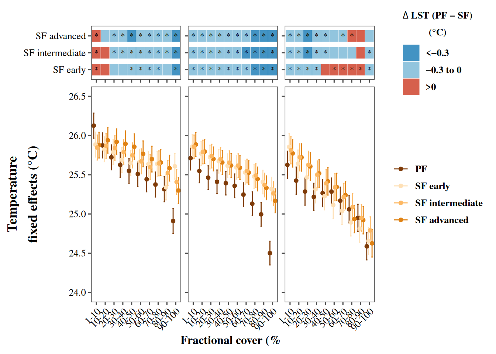
# Salvar
ggsave("fig/fixed_fixed_temp.png",
plot = final_panel_temp,
bg = "white", dpi = 600, width = 9, height = 5.5)
gc() used (Mb) gc trigger (Mb) max used (Mb)
Ncells 3829095 204.5 6466207 345.4 6466207 345.4
Vcells 7993391 61.0 14786712 112.9 14786712 112.9Todos os constraste entre frações de área
# Lista de modelos
modelos <- list(CBA = model_CBA_temp, EBA = model_EBA_temp, SBA = model_SBA_temp)
# Função para gerar todos os contrastes PF - SF
get_all_contrasts <- function(model, region_name) {
em <- emmeans(model, ~ ff_area * Tipo)
contrast_res <- contrast(em, method = "revpairwise", adjust = "fdr")
df <- as.data.frame(contrast_res)
df$region <- region_name
return(df)
}
# Aplicar para todas as regiões
all_contrasts_sup <- purrr::map2_dfr(modelos, names(modelos), get_all_contrasts)
str(all_contrasts_sup)Classes 'summary_emm' and 'data.frame': 2340 obs. of 7 variables:
$ contrast: chr "(10-20 PF) - (1-10 PF)" "(20-30 PF) - (1-10 PF)" "(20-30 PF) - (10-20 PF)" "(30-40 PF) - (1-10 PF)" ...
$ estimate: num -0.252 -0.404 -0.152 -0.5 -0.248 ...
$ SE : num 0.0424 0.0424 0.0424 0.0424 0.0424 ...
$ df : num 702 702 702 702 702 ...
$ t.ratio : num -5.95 -9.55 -3.6 -11.81 -5.85 ...
$ p.value : num 1.20e-08 1.29e-19 5.86e-04 2.11e-28 2.04e-08 ...
$ region : chr "CBA" "CBA" "CBA" "CBA" ...
- attr(*, "estName")= chr "estimate"
- attr(*, "pri.vars")= chr "contrast"
- attr(*, "adjust")= chr "fdr"
- attr(*, "side")= num 0
- attr(*, "delta")= num 0
- attr(*, "type")= chr "link"
- attr(*, "mesg")= chr [1:2] "Degrees-of-freedom method: kenward-roger" "P value adjustment: fdr method for 780 tests"
- attr(*, "digits")= int 7# Extrair contrastes entre PF e SF
sf_levels <- c("SF_early", "SF_intermediate", "SF_advanced")
all_contrasts_sup <- all_contrasts_sup %>%
filter(str_detect(contrast, "PF") & str_detect(contrast, "SF_"))
# Extrair informações usando regex
# Regex para capturar (faixa tipo) - (faixa tipo)
extr <- str_match(all_contrasts_sup$contrast,
"\\(([^ ]+) ([^)]+)\\) - \\(([^ ]+) ([^)]+)\\)")
# Adicionar colunas extraídas
all_contrasts_sup <- all_contrasts_sup %>%
mutate(
faixa1 = extr[, 2],
tipo1 = extr[, 3],
faixa2 = extr[, 4],
tipo2 = extr[, 5]
) %>%
filter((tipo1 == "PF" & tipo2 %in% sf_levels) | (tipo2 == "PF" & tipo1 %in% sf_levels)) %>%
mutate(
faixa_PF = if_else(tipo1 == "PF", faixa1, faixa2),
faixa_SF = if_else(tipo1 == "PF", faixa2, faixa1),
tipo_SF = if_else(tipo1 == "PF", tipo2, tipo1),
estimate = if_else(tipo1 == "PF", estimate, -estimate), # garantir PF - SF
sig_label = ifelse(p.value < 0.05, "*", "")
)
# Ajustar fatores
faixas_niveis <- c("1-10", "10-20", "20-30", "30-40", "40-50",
"50-60", "60-70", "70-80", "80-90", "90-100")
sf_levels <- c("SF_early", "SF_intermediate", "SF_advanced")
all_contrasts_sup <- all_contrasts_sup %>%
mutate(
faixa_PF = factor(faixa_PF, levels = faixas_niveis),
faixa_SF = factor(faixa_SF, levels = faixas_niveis),
tipo_SF = factor(tipo_SF, levels = sf_levels)
)
# Classificação mantendo sinal
all_contrasts_sup <- all_contrasts_sup %>%
mutate(
tipo_SF = fct_recode(tipo_SF,
"SF early" = "SF_early",
"SF intermediate" = "SF_intermediate",
"SF advanced" = "SF_advanced")
) %>%
mutate(
estimate_class = case_when(
estimate < -0.6 ~ "<-0.6",
estimate >= -0.6 & estimate < -0.3 ~ "-0.3 – -0.6",
estimate >= -0.3 & estimate < 0 ~ "0 – -0.3",
estimate >= 0 ~ ">0"
),
estimate_class = factor(estimate_class, levels = c("<-0.6", "-0.3 – -0.6", "0 – -0.3", ">0"))
)
# Plot
heatmap_all_contrasts <- ggplot(all_contrasts_sup,
aes(x = faixa_SF, y = faixa_PF, fill = estimate_class)) +
geom_tile(color = "white") +
geom_text(aes(label = sig_label), color = "black", size = 3, family = "serif") +
scale_fill_manual(values = c(
"<-0.6" = "#2166AC",
"-0.3 – -0.6" = "#4393C3",
"0 – -0.3" = "#92C5DE",
">0" = "#F4A582"
), name = expression(bold(atop(Delta~"LST (PF - SF)", "(°C·yr"^{-1}*")"))))+
facet_grid(tipo_SF ~ region) +
theme_minimal(base_family = "serif") +
theme(
text = element_text(size = 12, face = "bold", family = "serif"),
axis.text.x = element_text(angle = 45, hjust = 1),
strip.text = element_text(size = 12, face = "bold"),
axis.text = element_text(size = 10, face = "plain", family = "serif", color = "black")
) +
labs(x = "SF fractional cover (%)",
y = "PF fractional cover (%)")
heatmap_all_contrasts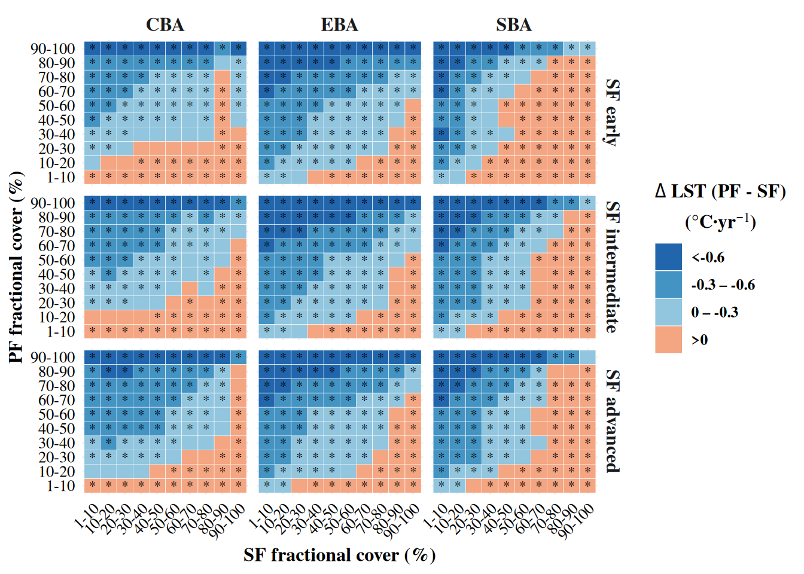
# Salvar
ggsave("fig/supplemental_material/contrastes_fixed_efects_temp.png", width = 10, height = 8, dpi = 600, bg = "white")
ggsave("fig/supplemental_material/contrastes_fixed_efects_temp.pdf", width = 10, height = 8, bg = "white")
gc() used (Mb) gc trigger (Mb) max used (Mb)
Ncells 3808469 203.4 6466207 345.4 6466207 345.4
Vcells 7959923 60.8 14786712 112.9 14786712 112.9Random effect
# Função para extrair efeitos aleatórios com IC por região
extract_random_effects <- function(model, region_name) {
# Efeitos aleatórios com variância condicional
ran <- ranef(model, condVar = TRUE)
# Extrair efeitos por ano
ran_df <- as.data.frame(ran$Ano)
names(ran_df) <- "effect"
ran_df$ano <- rownames(ran$Ano)
# Intervalos de confiança (erro padrão)
se <- attr(ran$Ano, "postVar")[1, 1, ] |> sqrt()
ran_df <- ran_df %>%
mutate(
se = se,
lower = effect - 1.96 * se,
upper = effect + 1.96 * se,
region = region_name
)
return(ran_df)
}
# Aplicar para os três modelos (substitua pelos seus objetos reais)
random_cba <- extract_random_effects(model_CBA_temp, "CBA")
random_eba <- extract_random_effects(model_EBA_temp, "EBA")
random_sba <- extract_random_effects(model_SBA_temp, "SBA")
# Combinar tudo
random_all <- bind_rows(random_cba, random_eba, random_sba)
# Garantir que o ano seja ordenável
random_all$ano <- as.numeric(as.character(random_all$ano))
# Salvar
write_xlsx(random_all, "data_group/random_effects_temp.xlsx")Plot
# Plot
p1_rand_temp <- ggplot(random_all, aes(x = ano, y = effect)) +
geom_hline(yintercept = 0, linetype = "dashed", color = "gray40") +
geom_bar(stat = "identity", position = "dodge", alpha = 0.8, fill = "#E08214") +
geom_errorbar(aes(ymin = lower, ymax = upper), width = 0.5, color = "black") +
facet_wrap(~region, scales = "free_x") +
scale_x_continuous(breaks = seq(2001, 2021, by = 2)) +
ggthemes::theme_few() +
theme(
text = element_text(size = 12, face = "bold", family = "serif"),
axis.text = element_text(size = 10, face = "plain", family = "serif", color = "black"),
axis.text.x = element_text(angle = 45, hjust = 1),
axis.title = element_text(size = 14),
#strip.text = element_text(face = "bold", size = 13)) +
strip.text = element_blank()) +
labs(
x = "",
y = expression(bold(atop("Temperature", "random effects (°C·yr"^{-1}*")")))
)
p1_rand_temp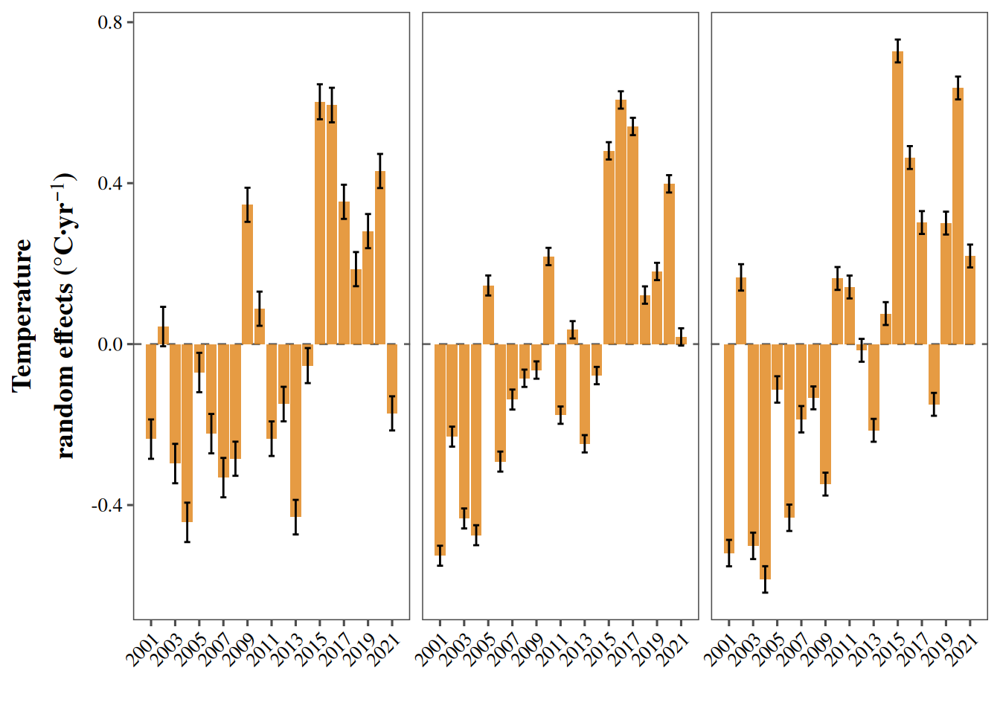
ggsave("fig/histogram_random_temp.png", bg = "white", dpi = 600, width = 9, height = 5.5)Predicted
R-square for Linear Mixed Model (LMM)
# CBA
r2_cba_temp = r2_nakagawa(model_CBA_temp)
r2_cba_temp_cond <- round(r2_cba_temp$R2_conditional, 3)
# EBA
r2_eba_temp = r2_nakagawa(model_EBA_temp)
r2_eba_temp_cond <- round(r2_eba_temp$R2_conditional,3)
# SBA
r2_sba_temp = r2_nakagawa(model_SBA_temp)
r2_sba_temp_cond <- round(r2_sba_temp$R2_conditional, 3)CCC de Lins
## CBA
# Obter os valores observados e previstos
observado_cba_temp <- model_cba_temp$Temp
previsto_cba_temp <- predict(model_CBA_temp)
ccc_result_cba_temp <- CCC(observado_cba_temp , previsto_cba_temp )
ccc_val_cba_temp <- round(ccc_result_cba_temp$rho.c[, "est"], 3)
## EBA
# Obter os valores observados e previstos
observado_eba_temp <- model_eba_temp$Temp
previsto_eba_temp <- predict(model_EBA_temp)
ccc_result_eba_temp <- CCC(observado_eba_temp , previsto_eba_temp )
ccc_val_eba_temp <- round(ccc_result_eba_temp$rho.c[, "est"], 3)
## SBA
# Obter os valores observados e previstos
observado_sba_temp <- model_sba_temp$Temp
previsto_sba_temp <- predict(model_SBA_temp)
ccc_result_sba_temp <- CCC(observado_sba_temp , previsto_sba_temp )
ccc_val_sba_temp <- round(ccc_result_sba_temp$rho.c[, "est"], 3)Plot
## CBA
model_cba_temp$predicted <- predict(model_CBA_temp, model_cba_temp)
limite_min <- floor(min(model_cba_temp$Temp, model_cba_temp$predicted, na.rm = TRUE)/ 0.5) * 0.5
limite_max <- ceiling(max(model_cba_temp$Temp, model_cba_temp$predicted, na.rm = TRUE)/ 0.5) * 0.5
cba_pf = model_cba_temp |>
ggplot(aes(Temp,predicted))+
geom_point(size = 2, alpha = .7)+
geom_smooth(method = "lm", se = F, color = "orange")+
theme_minimal()+
theme(text = element_text(size = 14, face = "bold", family = "serif"),
axis.title.y = element_text(margin = margin(r = 10)),
plot.title = element_text(size = 14, face = "bold", family = "serif", hjust = 0.5))+
labs(x = "Observed LST \n (°C·yr⁻¹)",
y = "Predicted LST \n (°C·yr⁻¹)",
title = "",
subtitle = paste0("R² = ", r2_cba_temp_cond,
" | CCC = ", ccc_val_cba_temp)) +
theme(plot.subtitle = element_text(size = 14, face = "plain", family = "serif"))
## EBA
model_eba_temp$predicted <- predict(model_EBA_temp, model_eba_temp)
limite_min <- floor(min(model_eba_temp$Temp, model_eba_temp$predicted, na.rm = TRUE)/ 0.5) * 0.5
limite_max <- ceiling(max(model_eba_temp$Temp, model_eba_temp$predicted, na.rm = TRUE)/ 0.5) * 0.5
eba_pf = model_eba_temp |>
ggplot(aes(Temp,predicted))+
geom_point(size = 2, alpha = .7)+
geom_smooth(method = "lm", se = F, color = "orange")+
theme_minimal()+
theme(text = element_text(size = 14, face = "bold", family = "serif"),
axis.title.y = element_text(margin = margin(r = 10)),
plot.title = element_text(size = 14, face = "bold", family = "serif", hjust = 0.5))+
labs(x = "Observed LST \n (°C·yr⁻¹)",
y = "",
title = "",
subtitle = paste0("R² = ", r2_eba_temp_cond,
" | CCC = ", ccc_val_eba_temp)) +
theme(plot.subtitle = element_text(size = 14, face = "plain", family = "serif"))
## SBA
model_sba_temp$predicted <- predict(model_SBA_temp, model_sba_temp)
limite_min <- floor(min(model_sba_temp$Temp, model_sba_temp$predicted, na.rm = TRUE)/ 0.5) * 0.5
limite_max <- ceiling(max(model_sba_temp$Temp, model_sba_temp$predicted, na.rm = TRUE)/ 0.5) * 0.5
sba_pf = model_sba_temp |>
ggplot(aes(Temp,predicted))+
geom_point(size = 2, alpha = .7)+
geom_smooth(method = "lm", se = F, color = "orange")+
theme_minimal()+
theme(text = element_text(size = 14, face = "bold", family = "serif"),
axis.title.y = element_text(margin = margin(r = 10)),
plot.title = element_text(size = 14, face = "bold", family = "serif", hjust = 0.5))+
labs(x = "Observed LST \n (°C·yr⁻¹)",
y = "",
title = "",
subtitle = paste0("R² = ", r2_sba_temp_cond,
" | CCC = ", ccc_val_sba_temp)) +
theme(plot.subtitle = element_text(size = 14, face = "plain", family = "serif"))
gc() used (Mb) gc trigger (Mb) max used (Mb)
Ncells 3789050 202.4 6466207 345.4 6466207 345.4
Vcells 7879610 60.2 14786712 112.9 14786712 112.9Painel
# Função para incluir escalas iguais nos eixos
ajustar_plot <- function(plot) {
plot +
scale_x_continuous(limits = c(limite_min, limite_max), breaks = seq(limite_min, limite_max, by = 0.5)) +
scale_y_continuous(limits = c(limite_min, limite_max), breaks = seq(limite_min, limite_max, by = 0.5))
}
# Aplicando a função a cada gráfico
cba_pf <- ajustar_plot(cba_pf)
eba_pf <- ajustar_plot(eba_pf)
sba_pf <- ajustar_plot(sba_pf)
# Juntando todos os plots de temp
p3_pred_temp = (cba_pf + eba_pf + sba_pf) +
plot_layout(ncol = 3, nrow = 1, guides = "collect") &
theme(text = element_text(size = 12, face = "bold", family = "serif"), # Texto geral
axis.text = element_text(size = 10, face = "plain", family = "serif"), # Texto dos eixos
axis.text.x = element_text(size = 10, angle = 45, hjust = 1, vjust = 1, family = "serif"))
#axis.text.y = element_text(size = 10, family = "serif")) # Fonte serif no eixo Y
p3_pred_temp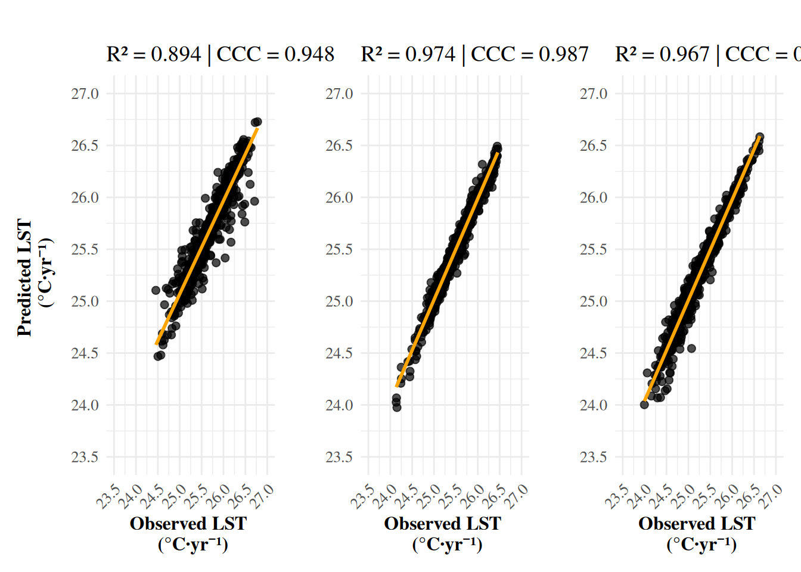
ggsave("fig/supplemental_material/predicted_observed_temp.png", bg = "white", dpi = 600, width = 12, height = 5.5)
gc() used (Mb) gc trigger (Mb) max used (Mb)
Ncells 3808337 203.4 6466207 345.4 6466207 345.4
Vcells 7972364 60.9 14786712 112.9 14786712 112.9Painel Predict all variables
# Combinar os três painéis em um único layout 3x3
painel_pred_fixed <- ggarrange(
p1_pred_prec, p2_pred_evapo, p3_pred_temp,
ncol = 1, nrow = 3,
labels = c("A", "B", "C"),
font.label = list(color = "black", face = "bold", size = 14, family = "serif"),
align = "v",
heights = c(1, 1, 1)
)
# Visualizar
painel_pred_fixed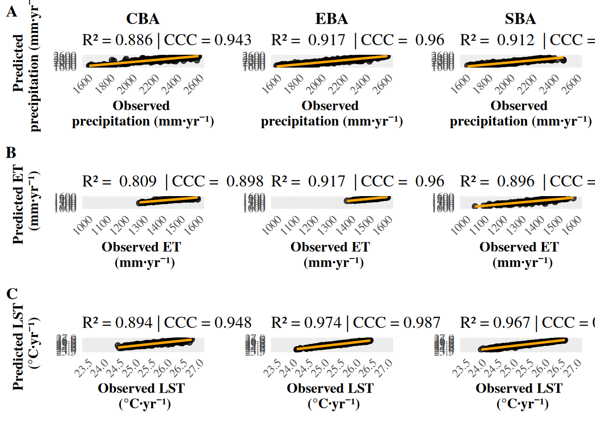
# Salvar
ggsave("fig/supplemental_material/predicted_observed_all_vars.png",
plot = painel_pred_fixed,
bg = "white", dpi = 600, width = 10, height = 12)Model plotting
CBA
model_cba_all_temp = model_cba_temp
model_cba_all_temp[model_cba_all_temp$ff_area== "1-10",
c("area")]<-1
model_cba_all_temp[model_cba_all_temp$ff_area== "10-20",
c("area")]<-2
model_cba_all_temp[model_cba_all_temp$ff_area== "20-30",
c("area")]<-3
model_cba_all_temp[model_cba_all_temp$ff_area== "30-40",
c("area")]<-4
model_cba_all_temp[model_cba_all_temp$ff_area== "40-50",
c("area")]<-5
model_cba_all_temp[model_cba_all_temp$ff_area== "50-60",
c("area")]<-6
model_cba_all_temp[model_cba_all_temp$ff_area== "60-70",
c("area")]<-7
model_cba_all_temp[model_cba_all_temp$ff_area== "70-80",
c("area")]<-8
model_cba_all_temp[model_cba_all_temp$ff_area== "80-90",
c("area")]<-9
model_cba_all_temp[model_cba_all_temp$ff_area== "90-100",
c("area")]<-10
model_cba_all_temp[model_cba_all_temp$type== 1,
c("vegetation")]<-"PF"
model_cba_all_temp[model_cba_all_temp$type== 2,
c("vegetation")]<-"SF_early"
model_cba_all_temp[model_cba_all_temp$type== 3,
c("vegetation")]<-"SF_intermediate"
model_cba_all_temp[model_cba_all_temp$type== 4,
c("vegetation")]<-"SF_advanced"
model_cba_all_temp# A tibble: 762 × 11
Ano Tipo region ff_area idade Temp n_obs type predicted area
<dbl> <chr> <chr> <chr> <chr> <dbl> <dbl> <fct> <dbl> <dbl>
1 2001 PF CBA 1-10 <NA> 26.0 34140 1 25.9 1
2 2001 PF CBA 10-20 <NA> 25.8 20329 1 25.6 2
3 2001 PF CBA 20-30 <NA> 25.6 17976 1 25.5 3
4 2001 PF CBA 30-40 <NA> 25.5 18084 1 25.4 4
5 2001 PF CBA 40-50 <NA> 25.4 20143 1 25.3 5
6 2001 PF CBA 50-60 <NA> 25.3 23549 1 25.3 6
7 2001 PF CBA 60-70 <NA> 25.3 27195 1 25.2 7
8 2001 PF CBA 70-80 <NA> 25.2 33532 1 25.1 8
9 2001 PF CBA 80-90 <NA> 25.1 45363 1 25.1 9
10 2001 PF CBA 90-100 <NA> 24.7 779283 1 24.7 10
# ℹ 752 more rows
# ℹ 1 more variable: vegetation <chr># Reordenar os níveis de 'Tipo'
model_cba_all_temp <- model_cba_all_temp %>%
mutate(vegetation = factor(vegetation, levels = c("PF", "SF_early", "SF_intermediate", "SF_advanced")))
model_cba_all_temp %>%
ggplot(aes(x = area*10, y = Temp))+
theme_bw()+
geom_point(aes(x = area*10, y = Temp, color = vegetation)) +
geom_line(aes(y = predicted, group = vegetation, color = vegetation), size = 1)+
scale_color_manual(values = c("darkgreen", "#ACD39E", "#5AAE61", "#1B7837"),
name = NULL,
labels = c("PF", "SF early", "SF intermediate", "SF advanced")) +
scale_fill_manual(values = c("darkgreen", "#ACD39E", "#5AAE61", "#1B7837"),
name = NULL,
labels = c("PF", "SF early", "SF intermediate", "SF advanced")) +
scale_y_continuous(breaks = seq(24, 27, by = 0.5)) +
ggthemes::theme_few() +
facet_wrap(~Ano, nrow = 4, ncol = 6) +
labs(x = "Fractional forest coverage (%)",
y = "Predicted temperature (°C·yr⁻¹) - CBA",
color = "")+
theme(legend.position = "top",
text = element_text(family = "serif"),
axis.title = element_text(size = 16, face = "bold"),
strip.text = element_text(face = "bold", size = 12),
legend.text = element_text(size = 14, face = "bold"),
legend.title = element_text(face = "bold", size = 14),
plot.title = element_text(size = 14, face = "bold", hjust = 0.5), # Centraliza título
axis.text = element_text(size = 12))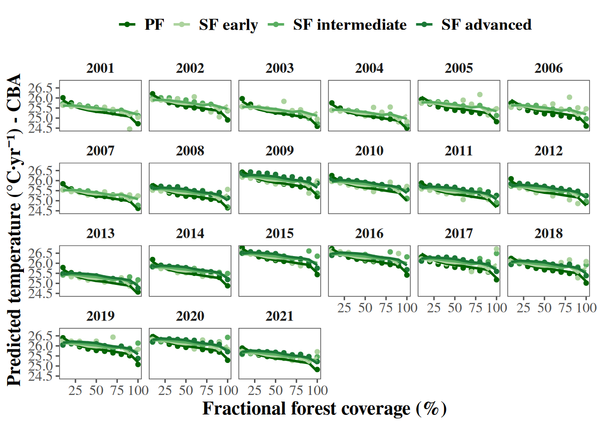
ggsave("fig/supplemental_material/predicted_temp_CBA.png", bg = "white",
dpi = 600, width = 10, height = 8)EBA
model_eba_all_temp = model_eba_temp
model_eba_all_temp[model_eba_all_temp$ff_area== "1-10",
c("area")]<-1
model_eba_all_temp[model_eba_all_temp$ff_area== "10-20",
c("area")]<-2
model_eba_all_temp[model_eba_all_temp$ff_area== "20-30",
c("area")]<-3
model_eba_all_temp[model_eba_all_temp$ff_area== "30-40",
c("area")]<-4
model_eba_all_temp[model_eba_all_temp$ff_area== "40-50",
c("area")]<-5
model_eba_all_temp[model_eba_all_temp$ff_area== "50-60",
c("area")]<-6
model_eba_all_temp[model_eba_all_temp$ff_area== "60-70",
c("area")]<-7
model_eba_all_temp[model_eba_all_temp$ff_area== "70-80",
c("area")]<-8
model_eba_all_temp[model_eba_all_temp$ff_area== "80-90",
c("area")]<-9
model_eba_all_temp[model_eba_all_temp$ff_area== "90-100",
c("area")]<-10
model_eba_all_temp[model_eba_all_temp$type== 1,
c("vegetation")]<-"PF"
model_eba_all_temp[model_eba_all_temp$type== 2,
c("vegetation")]<-"SF_early"
model_eba_all_temp[model_eba_all_temp$type== 3,
c("vegetation")]<-"SF_intermediate"
model_eba_all_temp[model_eba_all_temp$type== 4,
c("vegetation")]<-"SF_advanced"
model_eba_all_temp# A tibble: 770 × 11
Ano Tipo region ff_area idade Temp n_obs type predicted area
<dbl> <chr> <chr> <chr> <chr> <dbl> <dbl> <fct> <dbl> <dbl>
1 2001 PF EBA 1-10 <NA> 25.3 28614 1 25.2 1
2 2001 PF EBA 10-20 <NA> 25.1 19337 1 25.0 2
3 2001 PF EBA 20-30 <NA> 25.0 17933 1 24.9 3
4 2001 PF EBA 30-40 <NA> 25.0 18998 1 24.9 4
5 2001 PF EBA 40-50 <NA> 24.9 22451 1 24.9 5
6 2001 PF EBA 50-60 <NA> 24.9 27278 1 24.8 6
7 2001 PF EBA 60-70 <NA> 24.8 28701 1 24.7 7
8 2001 PF EBA 70-80 <NA> 24.7 31947 1 24.6 8
9 2001 PF EBA 80-90 <NA> 24.6 41186 1 24.5 9
10 2001 PF EBA 90-100 <NA> 24.2 452193 1 24.0 10
# ℹ 760 more rows
# ℹ 1 more variable: vegetation <chr># Reordenar os níveis de 'Tipo'
model_eba_all_temp <- model_eba_all_temp %>%
mutate(vegetation = factor(vegetation, levels = c("PF", "SF_early", "SF_intermediate", "SF_advanced")))
model_eba_all_temp %>%
ggplot(aes(x = area*10, y = Temp))+
theme_bw()+
#ggthemes::theme_few()+
geom_point(aes(x = area*10, y = Temp, color = vegetation)) +
geom_line(aes(y = predicted, group = vegetation, color = vegetation), size = 1)+
scale_color_manual(values = c("darkgreen", "#ACD39E", "#5AAE61", "#1B7837"),
name = NULL,
labels = c("PF", "SF early", "SF intermediate", "SF advanced")) +
scale_fill_manual(values = c("darkgreen", "#ACD39E", "#5AAE61", "#1B7837"),
name = NULL,
labels = c("PF", "SF early", "SF intermediate", "SF advanced")) +
scale_y_continuous(breaks = seq(23, 27, by = 0.5)) +
ggthemes::theme_few() +
facet_wrap(~Ano, nrow = 4, ncol = 6) +
labs(x = "Fractional forest coverage (%)",
y = "Predicted temperature (°C·yr⁻¹) - EBA",
color = "") +
theme(legend.position = "top",
text = element_text(family = "serif"),
axis.title = element_text(size = 16, face = "bold"),
strip.text = element_text(face = "bold", size = 12),
legend.text = element_text(size = 14, face = "bold"),
legend.title = element_text(face = "bold", size = 14),
plot.title = element_text(size = 14, face = "bold", hjust = 0.5), # Centraliza título
axis.text = element_text(size = 12))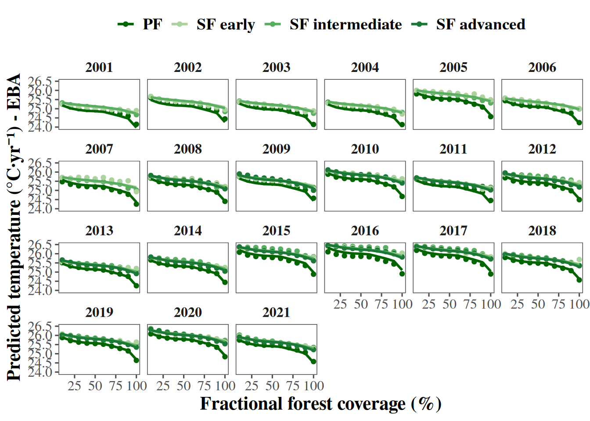
ggsave("fig/supplemental_material/predicted_temp_EBA.png", bg = "white",
dpi = 600, width = 10, height = 8)SBA
model_sba_all_temp = model_sba_temp
model_sba_all_temp[model_sba_all_temp$ff_area== "1-10",
c("area")]<-1
model_sba_all_temp[model_sba_all_temp$ff_area== "10-20",
c("area")]<-2
model_sba_all_temp[model_sba_all_temp$ff_area== "20-30",
c("area")]<-3
model_sba_all_temp[model_sba_all_temp$ff_area== "30-40",
c("area")]<-4
model_sba_all_temp[model_sba_all_temp$ff_area== "40-50",
c("area")]<-5
model_sba_all_temp[model_sba_all_temp$ff_area== "50-60",
c("area")]<-6
model_sba_all_temp[model_sba_all_temp$ff_area== "60-70",
c("area")]<-7
model_sba_all_temp[model_sba_all_temp$ff_area== "70-80",
c("area")]<-8
model_sba_all_temp[model_sba_all_temp$ff_area== "80-90",
c("area")]<-9
model_sba_all_temp[model_sba_all_temp$ff_area== "90-100",
c("area")]<-10
model_sba_all_temp[model_sba_all_temp$type== 1,
c("vegetation")]<-"PF"
model_sba_all_temp[model_sba_all_temp$type== 2,
c("vegetation")]<-"SF_early"
model_sba_all_temp[model_sba_all_temp$type== 3,
c("vegetation")]<-"SF_intermediate"
model_sba_all_temp[model_sba_all_temp$type== 4,
c("vegetation")]<-"SF_advanced"
model_sba_all_temp# A tibble: 770 × 11
Ano Tipo region ff_area idade Temp n_obs type predicted area
<dbl> <chr> <chr> <chr> <chr> <dbl> <dbl> <fct> <dbl> <dbl>
1 2001 PF SBA 1-10 <NA> 25.2 27014 1 25.1 1
2 2001 PF SBA 10-20 <NA> 25.0 19939 1 24.9 2
3 2001 PF SBA 20-30 <NA> 24.8 18555 1 24.8 3
4 2001 PF SBA 30-40 <NA> 24.8 20210 1 24.7 4
5 2001 PF SBA 40-50 <NA> 24.8 26418 1 24.7 5
6 2001 PF SBA 50-60 <NA> 24.8 39804 1 24.8 6
7 2001 PF SBA 60-70 <NA> 24.7 42758 1 24.7 7
8 2001 PF SBA 70-80 <NA> 24.6 49828 1 24.5 8
9 2001 PF SBA 80-90 <NA> 24.5 66479 1 24.4 9
10 2001 PF SBA 90-100 <NA> 24.3 970261 1 24.1 10
# ℹ 760 more rows
# ℹ 1 more variable: vegetation <chr># Reordenar os níveis de 'Tipo'
model_sba_all_temp <- model_sba_all_temp %>%
mutate(vegetation = factor(vegetation, levels = c("PF", "SF_early", "SF_intermediate", "SF_advanced")))
model_sba_all_temp %>%
ggplot(aes(x = area*10, y = Temp))+
theme_bw()+
#ggthemes::theme_few()+
geom_point(aes(x = area*10, y = Temp, color = vegetation)) +
geom_line(aes(y = predicted, group = vegetation, color = vegetation), size = 1)+
scale_color_manual(values = c("darkgreen", "#ACD39E", "#5AAE61", "#1B7837"),
name = NULL,
labels = c("PF", "SF early", "SF intermediate", "SF advanced")) +
scale_fill_manual(values = c("darkgreen", "#ACD39E", "#5AAE61", "#1B7837"),
name = NULL,
labels = c("PF", "SF early", "SF intermediate", "SF advanced")) +
scale_y_continuous(breaks = seq(23, 27, by = 0.5)) +
ggthemes::theme_few() +
facet_wrap(~Ano, nrow = 4, ncol = 6) +
labs(x = "Fractional forest coverage (%)",
y = "Predicted temperature (°C·yr⁻¹) - SBA",
color = "") +
theme(legend.position = "top",
text = element_text(family = "serif"),
axis.title = element_text(size = 16, face = "bold"),
strip.text = element_text(face = "bold", size = 12),
legend.text = element_text(size = 14, face = "bold"),
legend.title = element_text(face = "bold", size = 14),
plot.title = element_text(size = 14, face = "bold", hjust = 0.5), # Centraliza título
axis.text = element_text(size = 12))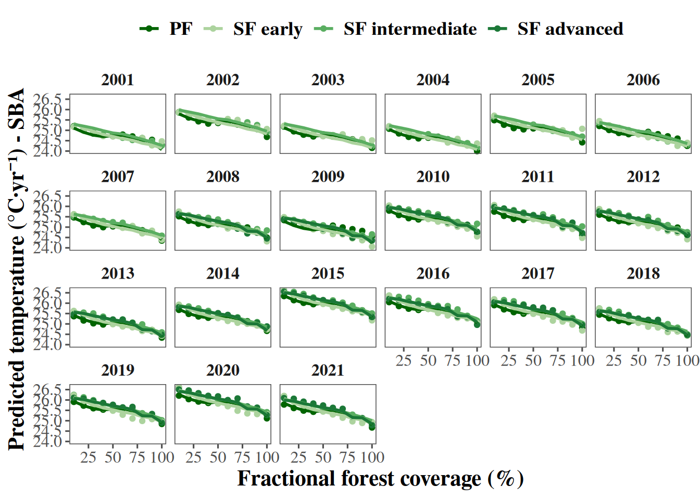
ggsave("fig/supplemental_material/predicted_temp_SBA.png", bg = "white",
dpi = 600, width = 10, height = 8)Painel fixed and random effects
# Fixed Effects
# Ajuste das margens
p1_point_prec <- final_panel_prec +
scale_x_discrete(expand = c(0.05, 0.05)) +
theme(plot.margin = margin(t = 10, r = 20, b = 5, l = 30))
p1_point_evapo <- final_panel_evapo +
scale_x_discrete(expand = c(0.05, 0.05)) +
theme(plot.margin = margin(t = 5, r = 20, b = 5, l = 30))
p1_point_temp <- final_panel_temp +
scale_x_discrete(expand = c(0.05, 0.05)) +
theme(plot.margin = margin(t = 5, r = 20, b = 10, l = 30))
# Criar painel com espaçamento ajustado
painel_fixed <- ggarrange(
p1_point_prec, p1_point_evapo, p1_point_temp,
ncol = 1, nrow = 3,
labels = c("A", "B", "C"), # Letras dos subplots
font.label = list(color = "black", face = "bold", size = 14, family = "serif"),
align = "v", # Alinhamento vertical
heights = c(1, 1, 1) # Força os plots a terem alturas iguais
)
# Salvar figura final
ggsave("fig/painels/effect_fix_climate_x_fractional_forest.png",
plot = painel_fixed, dpi = 600, width = 10, height = 12, bg = "white")
ggsave("fig/painels/effect_fix_climate_x_fractional_forest.pdf",
plot = painel_fixed, width = 10, height = 12, bg = "white")
painel_fixed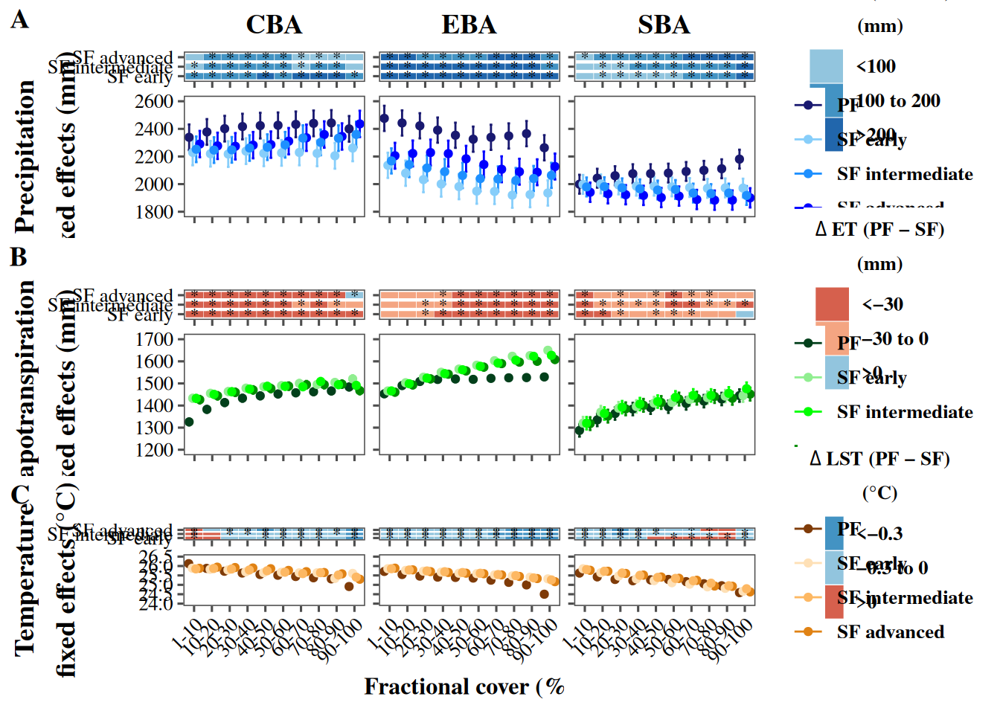
# Random Effects
# Ajuste das margens
p1_rand_prec <- p1_rand_prec +
scale_x_discrete(expand = c(0.05, 0.05)) +
theme(plot.margin = margin(t = 10, r = 10, b = 5, l = 20))
p2_rand_evapo <- p1_rand_evapo +
scale_x_discrete(expand = c(0.05, 0.05)) +
theme(plot.margin = margin(t = 5, r = 10, b = 5, l = 20))
p3_rand_temp <- p1_rand_temp +
#scale_x_discrete(expand = c(0.05, 0.05)) +
theme(plot.margin = margin(t = 5, r = 10, b = 10, l = 20))
# Criar painel com espaçamento ajustado
painel_random <- ggarrange(
p1_rand_prec, p2_rand_evapo, p3_rand_temp,
ncol = 1, nrow = 3,
labels = c("A", "B", "C"), # Letras dos subplots
font.label = list(color = "black", face = "bold", size = 14, family = "serif"),
align = "v", # Alinhamento vertical
heights = c(1, 1, 1) # Força os plots a terem alturas iguais
)
painel_random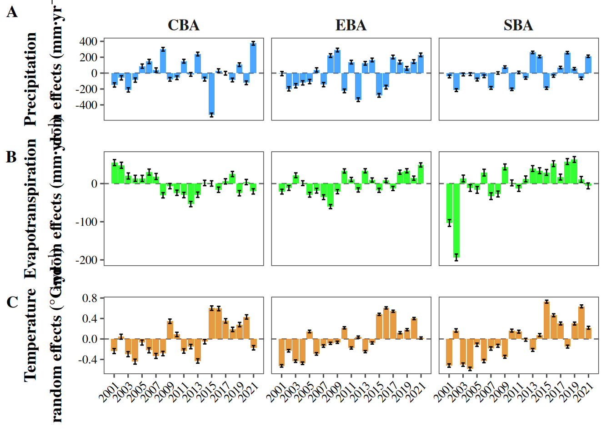
# Salvar figura final
ggsave("fig/painels/effect_rand_pf_sf.png",
dpi = 600, width = 10, height = 12, bg = "white")
ggsave("fig/painels/effect_rand_pf_sf.pdf",
width = 10, height = 12, bg = "white")